One room is enough to expose the problem: light leaves a ceiling emitter, scatters from colored walls and objects, and reaches a camera. A path tracer estimates those paths directly. Lumen spends a bounded amount of work on a set of representations that share and reuse lighting. This essay derives their common transport problem, identifies exactly what the real-time method approximates, and follows the actual engine data through a frame.
The argument has three parts: the path integral and a working renderer; the mathematical approximation and its cost; and deferred shading, shadows, and the complete Lumen pipeline. The scene comparisons are actual Unreal renders. The smaller CPU reference is separately identified. Numerical resource inspection complements the images: a colored atlas alone cannot expose an address, PDF, history weight, or invalid bit.
This chapter first derives a surface path tracer, then uses that derivation to describe what a cached real-time renderer changes. The mathematical reference is stationary, unpolarized geometric optics in vacuum, with opaque surfaces unless an extension is explicitly introduced. These assumptions describe the reference problem; they do not describe every feature of Unreal Engine.
The path notation follows the light-to-sensor convention of Eric Veach's thesis. In particular, the arrow in the three-point notation follows light, even in a sensor-response expression: is importance emitted from the sensor at toward . Veach defines this explicitly in §8.1, printed pp. 220–222. The derivations and numerical examples below are original explanations using that convention. Veach, full thesis
Part I · Fix the quantities before tracing a ray
Let be the union of all participating surface domains, including emitters and the sensor. An emitter can also scatter light; it is not removed from . The emitted-radiance function is zero where there is no emission, and the sensor response is zero outside the sensor domain for measurement .
Part I · Fix the quantities before tracing a rayColumns: Symbol · Meaning and convention
| Symbol | Meaning and convention |
|---|---|
| Surface positions; distances use metres in the derivation. | |
| Unit directions pointing away from a scattering point, toward the incident source and outgoing receiver respectively. | |
| Geometric and shading normals. The reference example initially uses . | |
| Surface area, solid angle, and projected solid angle; . | |
| Emitted, incident, and outgoing radiance. is outgoing radiance at , toward . | |
| BSDF expressed relative to the stated projected-solid-angle measure. | |
| Visibility of the open segment, 0 or 1 in the opaque reference. | |
| Visibility times the two geometric cosines divided by squared distance. | |
| A path with edges, ordered from emitter to sensor . | |
| Length-specific path space, their disjoint union, and area-product measures. | |
| Sensor measurement, path contribution function, and sensor response. | |
| Densities per unit area and per unit solid angle. A discrete light-selection probability is written . | |
| Running camera-path weight; not a radiance buffer. |
Radiant energy has units joules, and radiant flux is , in watts. Irradiance is incoming flux per surface area, . Radiance is the density of flux in projected area and solid angle:
LaTeX source
d\Phi=L(x,\omega)|\mathbf n_g(x)\cdot\omega|\,dA(x)\,d\sigma(\omega).
\tag{M01}Thus radiance has units ; irradiance has units . An irradiance buffer and a radiance buffer cannot be interchanged merely because each has three floating-point channels.
A diffuse emitter with constant radiance and emitting area sends total power
LaTeX source
\Phi=A L\int_{H^2}\cos\theta\,d\sigma=A L\pi=0.628318531\ \mathrm W.
\tag{M02}For a cone of solid angle around direction , replacing every cosine by gives the small-cone approximation . With and , that approximation is , or 80 mW. For a circular cone wholly above the emitting horizon, its exact cosine integral is , where . The exact answer is consequently
LaTeX source
\Phi=A L c_0\Delta\sigma\left(1-\frac{\Delta\sigma}{4\pi}\right)
=0.076816901\ \mathrm W.
\tag{M03}This example distinguishes a differential relation from a finite-region approximation rather than treating a representative cosine as an exact integral.
Derive the local rendering equation
The BSDF converts irradiance arriving from a differential range of directions into outgoing radiance:
LaTeX source
dL_o(x,\omega_o)=f_s(x;\omega_i\to\omega_o)L_i(x,\omega_i)
|\mathbf n_g(x)\cdot\omega_i|\,d\sigma(\omega_i).
\tag{M04}Its units are inverse steradians. Integration, plus local emission, gives
LaTeX source
L_o(x,\omega_o)=L_e(x,\omega_o)+
\int_{S^2}f_s(x;\omega_i\to\omega_o)L_i(x,\omega_i)\,d\sigma_x^\perp(\omega_i).
\tag{M05}For an opaque one-sided reflector, is zero on unsupported direction pairs, so the integral reduces to the incident hemisphere. The sphere notation also accommodates transmission when its BSDF and medium conventions have been specified. Absolute cosines by themselves do not make a one-sided material two-sided.
In vacuum, radiance remains constant along an unobstructed ray. If is the first intersection from in direction , then
LaTeX source
L_i(x,\omega_i)=L_o(y,-\omega_i).
\tag{M06}There is no inverse-square factor in (M06). Inverse-square dilution appears when a finite source area is converted into the solid angle it occupies, not when evaluating radiance along one ray. A miss returns the environment radiance. For the surface-only derivation, an environment can be represented by an enclosing emitting boundary and a limiting construction; practical code uses a separate directional endpoint.
For a Lambertian reflector with reflectance , . Under a prescribed constant incident radiance ,
LaTeX source
L_o-L_e=\frac{\rho}{\pi}\int_{H^2}L_0\cos\theta\,d\sigma=\rho L_0.
\tag{M07}For and , the reflected radiance is exactly . This is a local constant-environment check. It does not assert that an arbitrary enclosed interreflection scene has the same incident field.
The normal used by the material is not the geometric normal
Surface area, visibility, and the solid-angle Jacobian depend on . A normal map changes the angular scattering model. Suppose a renderer wants a reciprocal local shading-frame function multiplied by . It can express that convention using the geometric measure in (M05) by defining an effective radiance BSDF
LaTeX source
f_s^{\rm eff}(\omega_i\to\omega_o)=
b_s(\omega_i\to\omega_o)
\frac{|\mathbf n_s\cdot\omega_i|}{|\mathbf n_g\cdot\omega_i|},
\tag{M08}on valid direction pairs with nonzero denominator. The product then reproduces the intended shading cosine. This is an algebraic description of a shading-normal convention, not a proof that the resulting model conserves energy. Geometric-hemisphere tests and grazing-angle handling still matter; normal mapping can break reciprocity and energy conservation.
A camera path solves outgoing radiance toward the camera. At a surface with known camera-side direction , it samples a new light-side direction and evaluates . Sampling the path in reverse order does not authorize transposing this BSDF. Adjoint operators are needed when transporting importance through nonsymmetric scattering, as in the complementary light-tracing formulation. One must state the transported quantity and measure before applying a correction; the blanket instruction “camera tracing uses the adjoint BSDF” is unsafe. Veach's discussion of shading normals and adjoint transport is in chapters 4–5. Veach, chapters 4–5
Convert directions into surface points
Let , with . A small surface patch at subtends solid angle at
LaTeX source
d\sigma_x(\omega_{xy})=
\frac{|\mathbf n_g(y)\cdot(-\omega_{xy})|}{r^2}\,dA(y).
\tag{M09}The cosine is at the target whose area is being projected. Multiplying by the cosine at the receiving surface and restricting to visible first intersections yields
LaTeX source
G(x\leftrightarrow y)=V(x\leftrightarrow y)
\frac{|\mathbf n_g(x)\cdot\omega_{xy}|\,
|\mathbf n_g(y)\cdot(-\omega_{xy})|}{r^2}.
\tag{M10}For visible surface elements, . Extending the integration over all scene surfaces requires the visibility factor to avoid counting surfaces behind the first intersection.
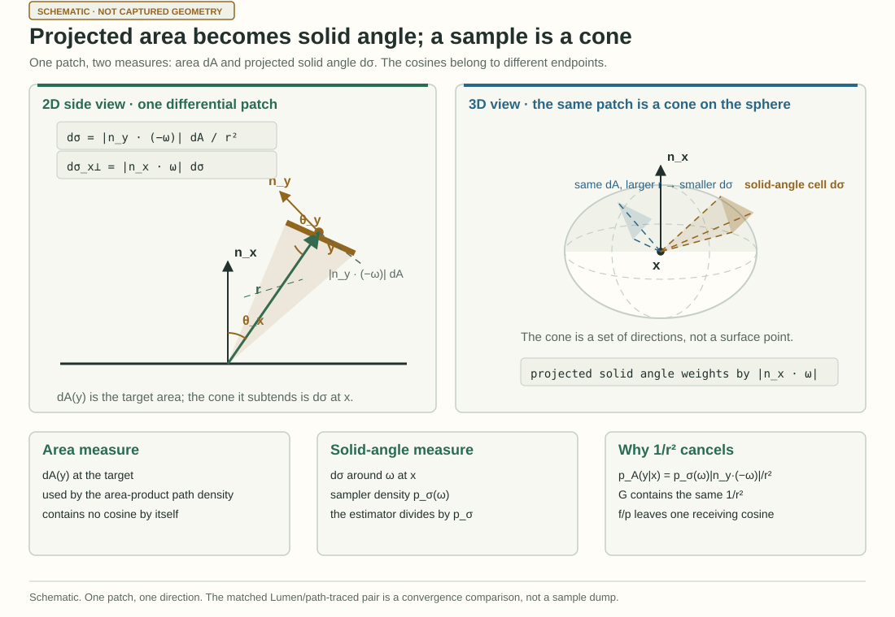
dσ = |n_y · (−ω)| dA / r² is the target-area projection, while dσ_x⊥ = |n_x · ω| dσ is the receiver cosine. They do not collapse into one generic “cosine”. Why it differs from the captured scene: this is one patch and one direction, while the real renders contain many stochastic paths and different geometry. Open diagram at full size.
What to inspect in the real pair. The two actual Unreal renders directly below are the same matched pair discussed again in §08. They are convergence and path comparisons, not dumps of sample directions. They can show the integral's visible result—soft indirect gradients and finite-sample structure—but not the schematic's individual cone arrows. The replay data later in the essay is what supplies exact cache quantities; this diagram only fixes the measure before those quantities appear.

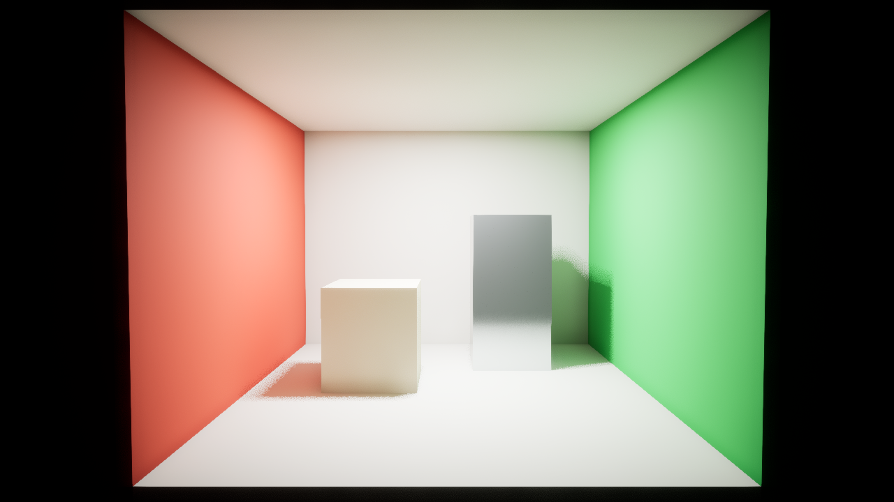

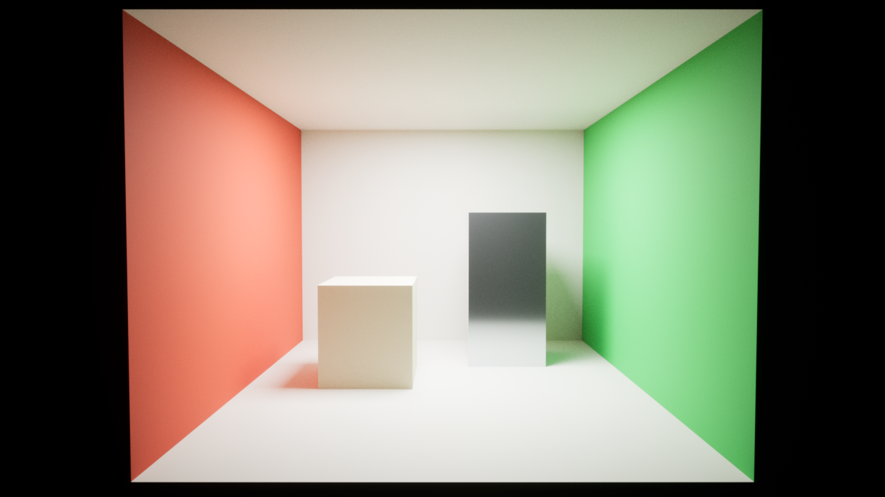
Writing the BSDF at as gives the three-point equation
LaTeX source
L(x\to z)=L_e(x\to z)+
\int_{\mathcal M}L(y\to x)f_s(y\to x\to z)G(y\leftrightarrow x)\,dA(y).
\tag{M11}The sensor measurement is
LaTeX source
I_j=\int_{\mathcal M\times\mathcal M}
W_e^{(j)}(x\to y)L(x\to y)G(x\leftrightarrow y)\,dA(x)dA(y).
\tag{M12}Although the arrow is , sensor importance in this expression originates at . The arrow continues to identify physical light flow.
A patch calculation. Two tiny mutually visible patches, each , face one another at distance 2 m. To the differential-patch approximation, . If the first emits radiance , the power received by the second is
LaTeX source
d\Phi=L G\,dA_1dA_2=1.25\times10^{-8}\ \mathrm W.
\tag{M13}There is no BSDF in this incident-power calculation. The incident irradiance is . If the receiving BSDF toward a selected outgoing direction is , the outgoing radiance due to this source patch is . A further outgoing direction or receiver must be integrated before that radiance becomes outgoing power.
Expand transport into a path integral
Define the transport operator as the integral on the right of (M11), excluding emission. Then
LaTeX source
L=L_e+TL.
\tag{M14}Repeated substitution gives
LaTeX source
L=L_e+TL_e+T^2L_e+\cdots.
\tag{M15}Each application of adds one scattering event. A sufficient convergence condition is in a suitable norm. Absorption and escape can provide it; an enclosed, perfectly reflecting system with continuously injected energy need not have a finite steady solution. Convergence assumptions are part of the model, not a consequence of writing an infinite sum.
Insert (M15) into (M12). For , set
LaTeX source
\begin{aligned}
f_j(\bar x)={}&L_e(x_0\to x_1)
\left[\prod_{i=0}^{k-1}G(x_i\leftrightarrow x_{i+1})\right]\\
&\times\left[\prod_{i=1}^{k-1}f_s(x_{i-1}\to x_i\to x_{i+1})\right]
W_e^{(j)}(x_{k-1}\to x_k),\\
d\mu_k(\bar x)={}&dA(x_0)\cdots dA(x_k).
\end{aligned}
\tag{M16}The empty BSDF product for is 1. That term is emission seen directly by the sensor. has one scattering event, and has two. The sensor is not counted as a material-scattering event here.
Let be the disjoint union of the , and define . The final expression is
LaTeX source
I_j=\sum_{k=1}^{\infty}\int_{\Omega_k}f_j(\bar x)\,d\mu_k(\bar x)
=\int_\Omega f_j(\bar x)\,d\mu(\bar x).
\tag{M17}This is a reorganization of the rendering equation, not a new physical model. It exposes every factor that a renderer can approximate: emission, geometry and visibility, scattering, and sensor response. The ordering and contribution-function construction correspond to Veach §8.2. Veach, chapter 8
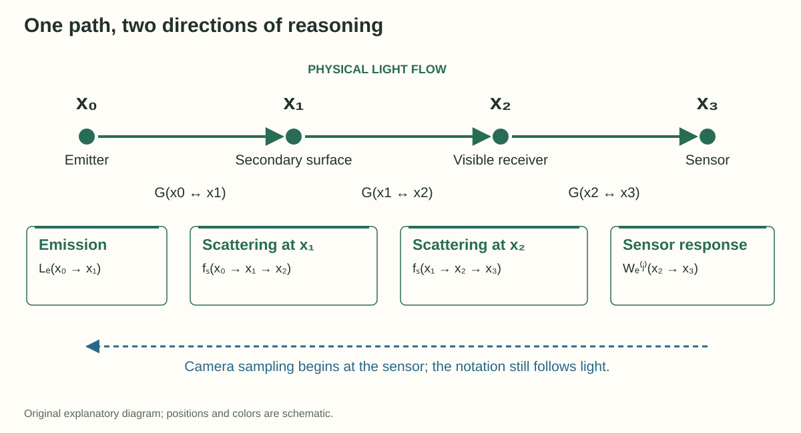
The dimensions also provide a check. Ignoring the dimensionless SI angle unit, contributes , the geometric factors contribute , and the area measure contributes ; their product is watts. converts that power to the desired measurement unit. Its units are a chosen sensor convention, not universally “inverse watts.” If steradians are retained as bookkeeping labels, each angular integration supplies the angle factor that its BSDF density requires.
Singular paths require their own measures
The ordinary area-product expression is simplest for finite-area endpoints and nonsingular scattering. A pinhole camera, point light, or ideal mirror introduces a delta constraint. A delta is not an enormous finite BSDF or a tiny area with an arbitrary PDF. It is a different measure component, with probability mass or a constrained sampling map.
A camera tracer can sample a glossy or diffuse receiver, follow a specular reflection, and hit a finite-area emitter with nonzero probability. Therefore “camera path tracing cannot render caustics” is too broad. A configuration requiring a continuously sampled direction to hit a mathematical point emitter after an exact specular constraint can instead have zero probability under that sampler. The practical test is support: can this sampler generate the contributing family under its appropriate measure? Specialized connections, bidirectional methods, or manifold methods can expand support; more samples cannot repair exactly zero support.
Monte Carlo estimates and the camera-path weight
For a path density with respect to , the elementary estimator is
LaTeX source
\widehat I_j=\frac1N\sum_{n=1}^N\frac{f_j(\bar X_n)}{p(\bar X_n)},\qquad
\bar X_n\sim p.
\tag{M18}Its expectation is because integrating against cancels the sampling density. This requires integrability and sampling support wherever the contribution is nonzero, up to measure-zero sets. Finite variance is an additional requirement for the usual variance-over- error formula. Independence is convenient for that variance formula; unbiasedness follows from the expectation of each correctly weighted sample.
If complete paths are sampled by first choosing length , the length PMF is part of . A practical path tracer instead reuses one random walk to estimate contributions at several lengths. Linearity of expectation permits this reuse; those contributions need not be independent.
At a surface , fix the outgoing direction toward the already constructed camera subpath. Sample the incident direction from a solid-angle density . Equation (M05) yields the throughput update
LaTeX source
\beta_{\rm next}=\beta\,
\frac{f_s(x;\omega_i\to\omega_o)|\mathbf n_g(x)\cdot\omega_i|}
{p_\sigma(\omega_i\mid x,\omega_o)}.
\tag{M19}The new ray finds the next vertex, thereby sampling visibility through first intersection. To compare this construction with the area-product path density, the corresponding next-vertex density is
LaTeX source
p_A(y\mid x)=p_\sigma(\omega_{xy}\mid x)\,
\frac{|\mathbf n_g(y)\cdot(-\omega_{xy})|}{\|y-x\|^2}.
\tag{M20}In , the target cosine and inverse-square factor in cancel those in (M20), leaving precisely the receiving cosine in (M19). This cancellation explains why an ordinary ray-path loop does not explicitly multiply at every bounce.
Cosine sampling is obtained from uniform on :
LaTeX source
\omega_i=\left(\sqrt u\cos(2\pi v),\sqrt u\sin(2\pi v),\sqrt{1-u}\right),
\qquad p_\sigma(\omega_i)=\frac{\cos\theta}{\pi}.
\tag{M21}Rotate this local direction into the surface frame. For Lambertian scattering with matching normals, (M19) simplifies to . In the constant-environment example, every sample returns ; the local directional estimator has zero variance. A visible emitter occupying a small part of the hemisphere is a different integrand and will not have zero variance.
What does a unit-weight pinhole ray measure?
A physical sensor integrates optical power over aperture, pixel area, wavelength, and time. Its weighting belongs in . A common teaching renderer deliberately uses a simpler normalized measurement:
LaTeX source
\overline I_j=\frac1{|P_j|}\int_{P_j}L_{\rm ray}(u,v)\,du\,dv,
\tag{M22}where is the pixel's film-coordinate footprint and is radiance arriving along its pinhole ray. Uniform subpixel sampling then permits . The camera position is conditioned on; it is not assigned a finite ordinary area PDF. This specialization avoids dividing by a fictitious “pinhole area.”
For a vertical field of view , aspect , camera forward , right , and up , a jittered pixel gives
LaTeX source
\begin{aligned}
s_x&=\left(2\frac{i+\xi_x}{W}-1\right)a\tan(\theta_v/2),\\
s_y&=\left(1-2\frac{j+\xi_y}{H}\right)\tan(\theta_v/2),\\
\omega&=\operatorname{normalize}(\mathbf f+s_x\mathbf r+s_y\mathbf u).
\end{aligned}
\tag{M23}Each pixel must include its own ; sampling over the entire image for every pixel produces an image of the scene's average rather than a camera image. In a right-handed convention, and .
To see why (M22) is not automatically physical sensor irradiance, consider a small planar aperture of area , parallel to a film at axial distance . At film angle , its solid angle is approximately . Multiplying by the film receiving cosine and using gives
LaTeX source
E_{film}\simeq L\frac{A_l}{f^2}\cos^4\theta.
\tag{M24}This is the small-aperture geometric construction, before lens transmission and other optical effects. With , aperture radius 5 mm, mm, and , . A 5 µm square pixel receives . Focal length and pixel pitch alone cannot determine this power: aperture area is essential. The normalized radiance image remains useful, but its measurement definition must be stated.
Direct light sampling, MIS, and termination
Waiting for a randomly continued path to hit a small emitter is inefficient. Next-event estimation (NEE) samples that final connection explicitly. At , choose light with probability , then sample emitter point with conditional density . The combined area density is . In solid angle at ,
LaTeX source
p_{L,\sigma}(\omega_{xy})=P_\ell(x)p_A(y\mid\ell,x)
\frac{r^2}{|\mathbf n_g(y)\cdot(-\omega_{xy})|}.
\tag{M25}With , the unweighted light-sampled contribution is
LaTeX source
C_L=\beta\,
\frac{f_s(x;\omega_{xy}\to\omega_o)L_e(y\to x)V(x\leftrightarrow y)c_x}
{p_{L,\sigma}(\omega_{xy})}.
\tag{M26}Equivalently, use in area measure. Mixing the denominator of one form with the numerator of the other is an error.
A numerical NEE sample. There is one uniformly sampled emitter of area , so , . A selected sample is 2 m directly above the receiving point with both cosines 1. Then . For , , visibility 1, and ,
LaTeX source
C_L=\frac{(0.8/\pi)10}{16}=\frac1{2\pi}=0.159154943.
\tag{M27}This is one sample's contribution, not the exact integral over the finite emitter. Other sampled points have different distance and cosines. If this same light is selected with probability among two lights, its selected-sample value doubles; it is selected half as often. Omitting changes the expected result.
The BSDF continuation can also hit this emitter. Adding both complete direct-light estimates doubles the same path family. Multiple importance sampling combines them. For one light sample and one BSDF sample, a useful choice is the power heuristic
LaTeX source
w_L(\omega)=\frac{p_L(\omega)^2}{p_L(\omega)^2+p_B(\omega)^2},
\qquad
w_B(\omega)=\frac{p_B(\omega)^2}{p_L(\omega)^2+p_B(\omega)^2}.
\tag{M28}Both PDFs must use the same measure and the same receiver context. The emitter-hit PDF includes the probability of selecting that emitter from the previous scattering point. With samples, replace each by inside the weights and average each technique's samples by its own sample count.
Why does this work? For the direct integrand ,
LaTeX source
\mathbb E\!\left[w_L(X_L)\frac{F(X_L)}{p_L(X_L)}+
w_B(X_B)\frac{F(X_B)}{p_B(X_B)}\right]
=\int(w_L+w_B)F\,d\sigma=\int F\,d\sigma.
\tag{M29}This proof is the important part: the weights partition the contribution. Where a technique has zero support its weight must be zero, and where only one technique can generate the path its weight is one. MIS is described generally in Veach chapter 9; the exponent-two choice here is one instance, not the only valid combination. Veach, chapter 9
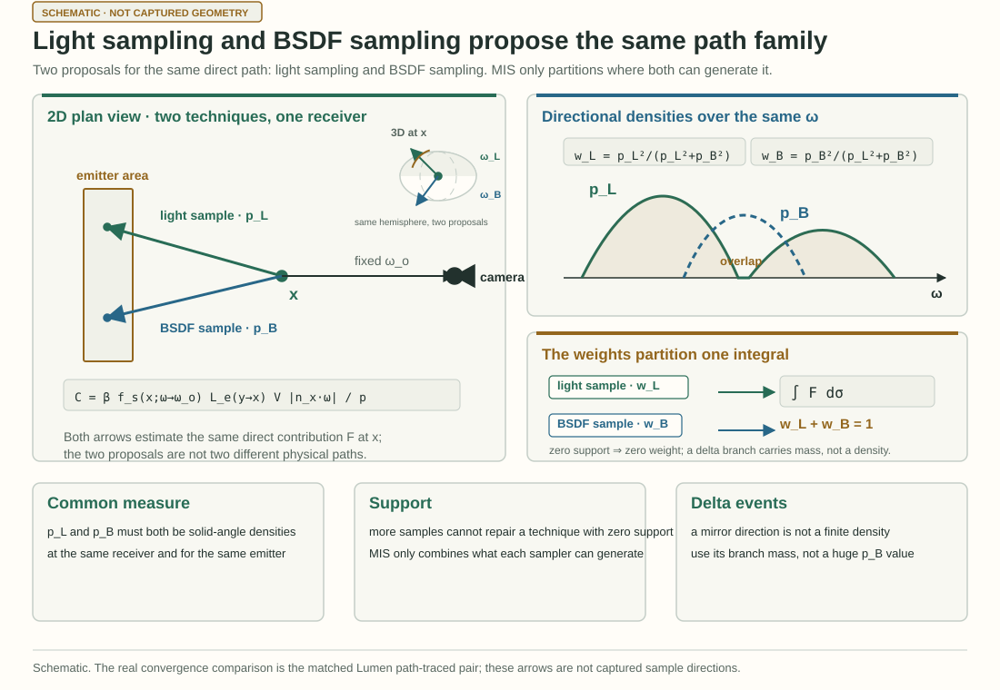

Real numerical anchor. M27's selected NEE sample is 1/(2π) = 0.159154943 for the stated emitter and geometry; M28 defines the two power-heuristic weights. The CPU reference in §08 exercises direct-light MIS, but its published image is a path/convergence comparison, not a visualization of these arrows. The later GPU replay is what turns cache terms into byte-level observations.
Delta events and mixtures
An ideal mirror selects one deterministic reflected direction. Its discrete probability mass cannot be compared numerically with a density per steradian. A BSDF sample interface should return a transport weight, the applicable PDF or mass, and whether the sampled event is delta. A mirror event contributes its reflection factor divided by its branch-selection probability; its distributional BSDF must not be inserted as a finite number into (M19).
For a diffuse-plus-glossy continuous mixture, evaluate the full continuous BSDF and its actual mixture density . If a delta branch is selected, use the corresponding discrete contribution and branch PMF. A mixed material can still have a continuous part worth sampling by NEE; skip NEE only when there is no connectable continuous component. An emitter reached through a previous delta event receives weight one against ordinary continuous emitter sampling. A very narrow but finite glossy lobe is not automatically a delta.
Russian roulette removes work without deleting the tail in expectation
After local contributions, continue with probability . On survival divide the future weight by . Conditional on the current history and any sampled variables used to choose ,
LaTeX source
\mathbb E\left[\mathbf1_{survive}\frac{Y}{q}\right]=Y.
\tag{M30}For a scalar future contribution 0.2 and , the randomized result is 0.8 with probability 0.25, otherwise zero; its mean is 0.2. Its variance is 0.12. Roulette can increase variance per path while reducing cost enough to improve efficiency per second. It is not a free variance reduction.
A finite maximum scattering depth is different: it deterministically removes a nonzero tail. If , truncating (M15) after gives the sufficient bound
LaTeX source
\left\|L-\sum_{m=0}^{D}T^mL_e\right\|
\le\frac{a^{D+1}}{1-a}\|L_e\|.
\tag{M31}This bound may be loose; it is not a measured error for an Unreal frame. Finite-depth path-traced images and denoised images must be identified accordingly rather than called exact ground truth.
A complete endpoint sequence
The following algorithm evaluates emitted light at a newly reached endpoint before applying the scattering-depth cap. This permits the BSDF partner of the last allowed NEE sample to reach its emitter. Weighting NEE against a BSDF strategy that the loop never evaluates would undercount even the retained direct term.
ray, beta = sample_normalized_pixel_camera(pixel, rng)
result = 0
scatter_count = 0
previous = none
loop:
hit = intersect_first(ray)
if hit is absent:
# Reconstruct the environment-light PDF at the previous receiver
# if that environment was also in its NEE light distribution.
weight = endpoint_mis(previous, environment, ray.direction)
result += beta * weight * environment_radiance(ray.direction)
break
x = hit.position
wo = -ray.direction
if hit emits toward wo:
# First camera hit or previous delta: weight 1.
# Otherwise use the BSDF-vs-light power weight in one common measure.
weight = endpoint_mis(previous, hit.emitter, x)
result += beta * weight * Le(hit, wo)
if scatter_count >= MAX_SCATTER or hit has no scattering:
break
if hit has a connectable continuous BSDF component:
light_sample = sample_one_light(x, rng) # includes selection PMF
if light_sample has valid positive density or mass, and nonzero contribution:
wi = light_sample.direction
if segment is visible and BSDF direction pair is valid:
if light_sample.is_delta_direction:
# Point: E_perp = radiant_intensity_toward_x / distance^2.
# Directional: E_perp is the specified beam irradiance.
# P_light is a discrete light-selection probability.
result += beta * fs(x, wi -> wo) * E_perp * cosine_g / P_light
else:
pL = light_sample.solid_angle_pdf
pB = continuous_bsdf_pdf(x, wo, wi)
wL = power_weight(pL, pB)
result += beta * wL * fs(x, wi -> wo) * Li * cosine_g / pL
sample = sample_bsdf(x, wo, rng)
if sample is invalid or has zero transport weight:
break
# Continuous: weight = fs(wi -> wo) * cosine_g / actual mixture PDF.
# Delta: weight is derived using the discrete event mass.
beta *= sample.transport_weight
previous = { unoffset_x: x, continuous_pdf: sample.pdf,
sampled_delta: sample.is_delta, light_sampling_context }
scatter_count += 1
if roulette_is_enabled(scatter_count):
q = choose_positive_survival_probability(beta)
if uniform() >= q: break
beta /= q
ray = robust_spawn_ray(x, sample.direction, hit.geometric_normal)
return resultHere endpoint_mis returns one when there is no competing NEE technique. A delta-direction light sample carries a discrete selection mass and an integrated incident strength, not an ordinary solid-angle PDF; its NEE weight is one against a continuous BSDF directional sampler. Continuous light and BSDF weights use complementary conditional sampling PDFs before roulette; survival compensation is applied to the continuation. Other choices are possible, but a survival probability must not be inserted into one weight and omitted from its complement. Ray-origin offsets change numerical intersection behavior; PDFs and geometry are evaluated at the logical, unoffset vertices. For transmissive paths, the offset side follows the sampled direction.
Put material evaluation in the same integral
Rasterizing a material does not itself integrate illumination. It produces the parameters used to evaluate . A basic opaque model may have diffuse and microfacet components,
LaTeX source
f_s=f_d+f_g,\qquad
f_d=\frac{\rho_d}{\pi},\qquad
f_g(\omega_i,\omega_o)=
\frac{D(\mathbf h)F(\omega_i\cdot\mathbf h)G_2(\omega_i,\omega_o)}
{4(\mathbf n_s\cdot\omega_i)(\mathbf n_s\cdot\omega_o)},
\tag{M32}where for reflection in one medium. describes microfacet orientations, their Fresnel reflection, and masking and shadowing. The formula assumes a valid reflection pair; it is not a prescription for dividing by zero at the horizon.
For an isotropic GGX distribution with width ,
LaTeX source
D(\mathbf h)=\frac{\alpha^2}{\pi\left[(\mathbf n_s\cdot\mathbf h)^2(\alpha^2-1)+1\right]^2}.
\tag{M33}Many material models map an artist's perceptual roughness to . The exact remaps, minimum roughness, masking approximation, energy compensation, and layer rules are implementation choices that must be checked in the shader being analyzed. A simplified Schlick Fresnel is . The historical Epic shading notes explain this family of choices; the engineering chapter checks the installed engine rather than treating a 2013 model as every current shader. Karis, Real Shading in Unreal Engine 4
Sampling the half vector is not the same as sampling a reflected ray. The reflection mapping has Jacobian
LaTeX source
p_\sigma(\omega_i)=\frac{p_h(\mathbf h)}{4|\omega_o\cdot\mathbf h|}.
\tag{M34}For a visible-normal sampler, includes visibility from , not merely . Whatever sampler is selected, (M19) divides by its actual directional PDF. Material energy conservation also concerns the sum of lobes: adding a full-strength Lambertian term and an arbitrary full-strength specular term can reflect more incident power than arrives. Metallic workflow, Fresnel coupling, multiple scattering, and layered models determine how Unreal allocates that energy.
Working examples and the matched Unreal scene
The educational CPU program demonstrates ray intersections, normalized camera sampling, Lambertian BSDF sampling, NEE, complementary MIS, roulette, linear output, and explicit finite-depth truncation. It is not an implementation of every Unreal material model, and its images must be labeled separately from genuine Unreal captures. The Unreal path-traced reference uses the same Unreal scene, camera, and assets as the Lumen experiment; its finite samples, depth, denoiser, exposure, and post-processing belong in the capture manifest.
Numerical comparison should use matching scene-linear quantities. Display PNGs are useful for reading shape and artifacts, but differences after exposure and tone mapping are not radiance error. For independent samples of a fixed reference scene, Monte Carlo variance decreases with sample count; a Lumen difference may include representation bias, finite sampling, filtering, lighting lag, and a mismatched reference configuration. Each explanation needs the corresponding evidence.
Spectral transport would carry , wavelength-dependent BSDFs, and sensor integration . Independent RGB channels are a chosen approximation to that process. Transmission requires consistent refractive-index factors and delta/continuous measures; volumes add transmittance and volume scattering integrals. These extensions do not invalidate the surface derivation, but they cannot be implemented correctly by merely renaming an opaque BSDF or adding an “ambient” term.
The connection to the engineering chapter is now explicit: depth and G-buffer data identify the primary vertex and its material; shadow evaluation approximates selected source visibility; cached surface lighting approximates secondary outgoing radiance; probes sample and reconstruct incoming radiance; material integration weights that field into diffuse and glossy outgoing light; and composition applies the chosen path/source partition before exposure and display transforms.
Run the reference
The reference program uses only Python's standard library. Run these commands from the cloned repository:
cd Scripts/Docs/unreal_articles/labs/lumen-pathtracer
python reference/check_chapter_math.py
python reference/test_estimators.py --seed 20240601 --samples 200000
python reference/path_tracer.py --width 280 --height 200 --samples 64 --seed 20240601 --max-depth 8 --exposure 0.6The published image has 280 × 200 pixels, 64 samples per pixel, a maximum of eight surface vertices, and seed 20240601. Its Lambertian scene makes the estimator visible without introducing the production material system. The associated linear PFM is the numerical output; exposure and the display curve affect only the PNG. The checked-in tests exercise the estimators against independently evaluated integrals, including direct-light MIS and terminal environment handling.
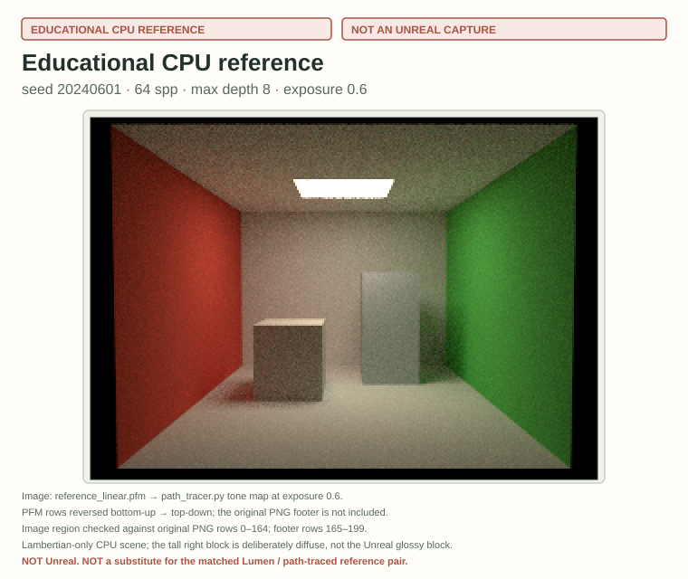
path_tracer.py exposure-0.6 tone map; the burned-in bitmap footer is replaced by native SVG text. Seed 20240601, 64 samples per pixel, maximum depth 8. The right block is Lambertian here; it is glossy in the Unreal experiment. This demonstrates the estimator and is not the matched Unreal reference. Linear RGB PFM · Recorded configuration and hashes · Twelve numerical checks · Clean 280 × 200 display PNG. Open diagram at full size.The matched Unreal reference
The same Unreal level, camera, assets, material parameters, and exposure settings are rendered below using Lumen and the engine's path tracer. The path-tracer comparison accumulates 1,024 samples per pixel with eight bounces and denoising disabled. These display-referred images show the scene and visible differences; they are not a scene-linear error metric. The reference record identifies the exact images, camera, light and exposure; the portable Unreal project and capture scripts reproduce the experiment.
This is a finite production path-tracer reference. Its path-intensity setting was not overridden: the recorded console value of −1 selects the finalized post-process setting, whose recorded value is 24. That is source-backed configuration evidence rather than a direct readback of the path-tracing shader constant. The clamp and eight-bounce limit can introduce bias; increasing sample count alone does not remove it. The code selects this fallback in Engine/Source/Runtime/Renderer/Private/PathTracing.cpp:1029-1035.
Part II · The exact partition and the real-time approximation
At the camera-visible surface, physical path classes can be partitioned into emission, single-scattering source connections, and paths with further scattering. Engine passes partition the workload differently. In particular, Lumen can provide primary-surface sky illumination and illumination from emissive meshes, which are physically direct source connections. It is therefore incorrect to equate “all Lumen output” with “at least two material bounces.”
A useful engineering partition chooses a set of explicitly handled analytical/local lights. Define as their direct incident field, and as the remaining incoming field: environment and other emitter endpoints, plus reflected light from surfaces. Then, for the chosen opaque BSDF,
LaTeX source
L_o=L_e+
\int(f_d+f_g)L_{i,\mathcal A}\,d\sigma_x^\perp+
\int f_dL_{i,\mathcal R}\,d\sigma_x^\perp+
\int f_gL_{i,\mathcal R}\,d\sigma_x^\perp.
\tag{M35}This is an exact bookkeeping identity after the source sets are defined. A deferred local-light pass approximately evaluates the second term. Lumen diffuse gathering, reflection tracing, and the engine's selected sky/reflection paths approximate parts of the last two. The actual flags determine ownership; (M35) does not assert that every engine configuration uses identical passes.
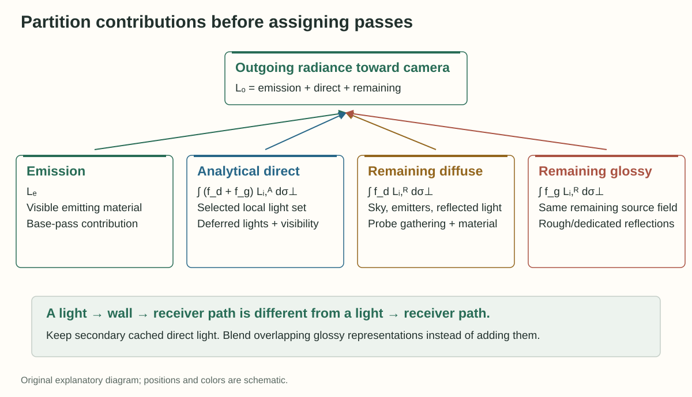
If an emissive rectangle and an analytical rectangular light both represent the same intended physical lamp, enabling both as independent sources changes the scene's emitted energy unless there is an explicit sampling/representation partition. This is different from adding the same estimator twice. Conversely, the analytical light illuminating a secondary wall, followed by light reflected from that wall toward the primary surface, is a genuinely different path from that light directly illuminating the primary surface.
What deferred rendering changes
For the selected camera samples, rasterization supplies the first visible geometry and material attributes. A G-buffer caches that primary surface state so many lights and secondary-light estimators can reuse it. This changes how visibility and material work are organized, not the radiance integral. Coverage, rasterized geometry, depth precision, stored material precision, and normal encoding are possible approximations.
An exact direct-light estimator would use geometric visibility in (M26). Unreal Virtual Shadow Maps store virtualized light-space depth, and their shadow evaluations approximate this visibility and finite-source integration. This VSM is not Variance Shadow Mapping and has no implied Chebyshev-moment formula. Paging, depth rasterization, bias, filtering, and Shadow Map Ray Tracing (SMRT) are separate engineering steps examined with the actual buffers in the engineering chapter. Their common mathematical role is to replace an exact light-connection evaluation with an approximate one.
The diffuse Surface Cache has a concrete mathematical meaning
The installed-engine source audit identifies CombineFinalLighting in Engine/Shaders/Private/Lumen/SurfaceCache/LumenSurfaceCache.ush: decoded albedo multiplies the sum of direct and indirect irradiance by , then emission is added. In the scene-linear notation of this chapter,
LaTeX source
\widetilde L_{cache}(y)=L_e(y)+
\frac{\rho(y)}{\pi}\left[\widetilde E_{direct}(y)+\widetilde E_{indirect}(y)\right].
\tag{M36}This is a source-audited statement for the pinned engine version, distinct from the abstract model below. The represented final quantity is diffuse outgoing radiance, whereas the two input lighting quantities are irradiance. Their stored numbers also carry a pre-exposure scale. Define and use a superscript to distinguish stored values from scene-linear values:
LaTeX source
L_{cache}^{\mathrm{pre},c}=e_c\widetilde L_{cache},\qquad
E_{direct}^{\mathrm{pre},c}=e_c\widetilde E_{direct},\qquad
E_{indirect}^{\mathrm{pre},c}=e_c\widetilde E_{indirect},\qquad
L_e^{\mathrm{pre},c}=e_cL_e.The combine shader applies (M36) to those consistently pre-exposed terms. The sampling shader multiplies the sampled atlas values by before returning scene-linear radiance (Engine/Shaders/Private/Lumen/SurfaceCache/LumenSurfaceCacheSampling.ush:314-325). Thus a raw final-lighting texel is not yet the used by the transport integral. Here means the cache's effective albedo: the card material pass folds a fully rough specular approximation into its diffuse color before encoding it. It is therefore not always the original material's diffuse albedo, particularly for metallic materials. The representation omits the full outgoing directional dependence of a general glossy BSDF.
The screen-probe integration output has a different normalization. In the audited baseline, LumenScreenProbeGather.usf multiplies integrated diffuse lighting by Diffuse_Lambert(1) before writing the diffuse-indirect output. Its physical quantity is a unit-albedo diffuse response, ; its stored value carries the view pre-exposure , so . The trace has already applied this view scale, and DiffuseIndirectComposite.usf later multiplies the response by the receiver's diffuse color. Dividing it by again, or applying a second time in the composite, would be an error. The card irradiance atlases, card final radiance, and screen response therefore need distinct quantity and exposure labels in every visualization.
Suppose a visible diffuse point gathers the cached analytical direct lighting at a secondary point . Its contribution includes
LaTeX source
\frac{\rho(x)}{\pi}
\int \left[\frac{\rho(y)}{\pi}\widetilde E_{direct}(y)\right]
G(x\leftrightarrow y)\,dA(y).
\tag{M37}Equation (M37) uses scene-linear ; substituting the raw pre-exposed atlas value would introduce an extra scale. There are two scattering factors, one at and one at . Subtracting the secondary cache's direct lighting as a duplicate of the primary deferred direct pass would delete legitimate bounced light. In contrast, sky or emitter radiance reached directly from has only the primary scattering factor. These examples distinguish path classification from buffer names.
An original operator model for cache approximation
The next equations are an explanatory model of discretization and reuse, not a claim that Epic implements a literal global matrix solve. Let project a radiance field to finite cache coefficients and reconstruct a field, with on coefficient space. Let be an approximate transport operator using represented geometry, materials, and visibility. Define
LaTeX source
K=P T_h R,\qquad b_c=P b_h,\qquad c=b_c+Kc,\qquad \widetilde L=Rc.
\tag{M38}The reduced coefficients can represent card texels, probe directional bins, or another explicitly chosen basis. Direction-independent diffuse cards and directional probes are different bases; they must not be silently identified. Relative to exact , define reconstructed source , operator , and current residual
LaTeX source
\widetilde r=\widetilde b+\widetilde T\widetilde L-\widetilde L.
\tag{M39}Subtracting the current approximate state from the exact fixed-point equation gives
LaTeX source
(I-T)(L^*-\widetilde L)
=(b-\widetilde b)+(T-\widetilde T)\widetilde L+\widetilde r.
\tag{M40}If ,
LaTeX source
\|L^*-\widetilde L\|
\le\frac{\|b-\widetilde b\|+
\|(T-\widetilde T)\widetilde L\|+\|\widetilde r\|}{1-\|T\|}.
\tag{M41}The three terms separate source representation error, transport/representation error, and an unfinished or stale solve. More ray samples can reduce stochastic noise without making coarse cards, missing geometry, or stale history exact. Nonlinear clipping, adaptive scheduling, and view-dependent reconstruction require additional analysis; they are not covered by pretending that (M38) is the entire production renderer.
A two-patch transport example. With dimensionless coupling matrix and source radiances
LaTeX source
T=\begin{bmatrix}0&0.2\\0.3&0\end{bmatrix},\qquad
b=\begin{bmatrix}1\\0\end{bmatrix},
\tag{M42}the exact solution is . Starting at , repeated substitution produces , , , , and so on. If a material/transport approximation changes the second coupling to 0.25, its converged solution is . Infinite iterations remove its residual but do not remove its difference from the original scene. This small algebraic example demonstrates approximation error; it is not an Unreal measurement or a speed benchmark.
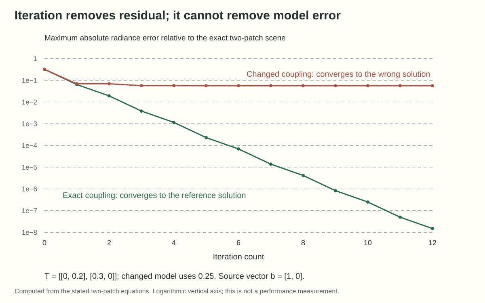
Reconstruction and the cost that is actually removed
Sparse gathering replaces per-pixel directional integration with samples at selected probe positions. A generic reconstruction is
LaTeX source
\widetilde L_i(x,\omega)=\sum_m a_m(x)\widehat L_i(x_m,\omega),
\qquad \sum_m a_m(x)=1.
\tag{M43}Normalization preserves a constant field, but does not prove that a field varying across depth discontinuities is reconstructed correctly. The samples are taken at different positions. Similarly, an exponential history update
LaTeX source
H_t=(1-\alpha)H_{t-1}^{reprojected}+\alpha\widehat L_t
\tag{M44}can preserve the mean of a stationary correctly reprojected field while retaining lag after lighting changes. Disocclusion, clamping, and invalid-history rejection change its behavior. Temporal reuse is not intrinsically biased in every static case; production reuse and reconstruction can nevertheless introduce persistent spatial and temporal error.
A simple reference path tracer costs approximately continuation intersections, plus shadow connections, material evaluations, and acceleration-structure work. A sparse gather uses roughly initial queries plus its cache updates, filtering, and reconstruction. Reusing a secondary hit's cached material/lighting also avoids repeating the full material and light evaluation for every ray. These are the mechanisms of reduced work. Counts alone are not a speedup measurement: screen hits, compacted misses, distance-field steps, hardware traversal, cache misses, and asynchronous work have different costs. The captured dispatch sizes and timings must establish the actual savings.
The diffuse and glossy terms of (M35) also require different angular detail. A rough glossy lobe can reuse a low-frequency incident-radiance representation; a narrow lobe needs more directional detail or a dedicated ray. If two routes approximate the same glossy term, an exclusive selection or a defined blend avoids simply adding that term twice. A roughness threshold does not by itself turn a finite glossy BRDF into a physical delta distribution. Source inspection must determine whether a threshold selects a representation, blends estimators, clamps a lobe, or actually changes the BSDF.
Every reconstructed value has an input record
A picture of RGB output cannot explain the computation by itself. Each captured probe, cache texel, or output pixel should be traceable to the following fields. The engineering inventory names the actual source buffers and shader expressions; this table states their mathematical roles.
Every reconstructed value has an input recordColumns: Input or state · Mathematical role · Required diagnostic information
| Input or state | Mathematical role | Required diagnostic information |
|---|---|---|
| Receiver position and depth | , the domain of the transport query | Coordinate frame, depth convention, reconstruction matrix, logical position and any ray offset. |
| Geometric/shading normal and material | Measure in (M05), BSDF in (M19), diffuse color in (M36) | Decoded values, normal frame, validity, roughness and lobe-selection data; do not substitute an encoded normal byte for a direction. |
| Ray direction and sample identifier | and the mapping from random variables to the sampled domain | Unit direction, directional bin or octahedral coordinates, random seed/frame index, and whether the sample is continuous or delta. |
| Directional sampling weight | , discrete branch probability, or cell quadrature weight | Which measure the stored number uses. An angular-cell weight is not automatically a BSDF PDF. |
| Intersection and visibility | or their approximations | Hit distance, hit/miss/uncertain state, selected tracing representation, thickness/bias, normal, and fallback reason. |
| Light data and source lookup | , , , cache response | Light identifier, selection PMF if sampled, units, emitter/sky ownership, atlas page and UV, and missing-page state. |
| Gather accumulator | Sum of weighted incident samples | Radiance sum, weight sum, number of valid samples, rejected samples, clamp state, and whether the stored value is , , or . |
| Reconstruction neighbors | in (M43) | Neighbor indices, spatial/depth/normal weights before normalization, validity masks, denominator, and zero-denominator fallback. |
| Temporal reprojection | in (M44) | Previous pixel/probe coordinates, motion/matrix inputs, previous depth/normal, disocclusion test, history validity, exposure ratio. |
| History blend and nonlinear operations | , rejection, clipping or clamping | Current and previous values, effective history length/confidence, clamp bounds, blend weight, and reset reason. |
| Final material/composite factors | The separate terms of (M35) | Diffuse color, integrated specular-BRDF factor, AO, energy preservation, roughness blend, pre-exposure, and branch/permutation. |
For example, a generic normalized bilateral reconstruction can be written
LaTeX source
\widetilde L_i(x,\omega)=
\frac{\sum_m \chi_m(x)\,b_m(x)\,\widehat L_i(x_m,\omega)}
{\sum_m \chi_m(x)\,b_m(x)},\qquad
b_m=w_{space,m}w_{depth,m}w_{normal,m}.
\tag{M45}Here is a validity mask; the individual 's are nonnegative factors. This equation defines an illustrative reconstruction, not Epic's exact kernel. To reproduce an actual pass, replace each factor by that shader's expression and record the value it used, including its zero-weight fallback. An all-invalid neighborhood is not “black lighting” unless that is explicitly the algorithm's chosen fallback. Similarly, history blending is only reproducible when the reprojected sample, rejection tests, exposure conversion, clamp bounds, and effective weight are available. These are computational inputs, not decorative debug overlays.
Part III · Deferred shading begins at the primary vertex
This chapter is grounded in the local Unreal Engine at D:/UnrealEngine. Engine/Build/Build.version reports major 5, minor 8, patch 1, branch UE5 (Engine/Build/Build.version:2-9). The checked-out commit is 71fe36aac5a8df5ccd66c763ffc902b29b6a9c43, read from .git/refs/heads/release; git log -1 describes it as 5.8.1 release. The repository remote is EpicGames/UnrealEngine.
The chapter describes two things that are easy to confuse:
- The engine source defaults. These are the values compiled into the engine when no project or scalability override applies.
- A project's run configuration. A project can change
r.Substrate,r.Shadow.Virtual.Enable,r.GBufferFormat,r.AllowStaticLighting,r.VelocityOutputPass, VSM page budgets, and light units. Those are not engine defaults and must not be presented as such.
All code paths below are relative to the engine repository root. Line numbers refer to the commit above. Source defaults describe code before project and scalability overrides; capture-specific values belong to the accompanying experiment manifest.
Source defaults that matter for this chapter
Source defaults that matter for this chapterColumns: Setting · Engine source default · Evidence · Consequence
| Setting | Engine source default | Evidence | Consequence |
|---|---|---|---|
r.Substrate |
0 |
Engine/Source/Runtime/RenderCore/Private/RenderUtils.cpp:2068-2072 |
The legacy G-buffer/default-lit path is the engine default; a project enables Substrate. |
r.Shadow.Virtual.Enable |
0 |
Engine/Source/Runtime/Renderer/Private/VirtualShadowMaps/VirtualShadowMapArray.cpp:160-171 |
VSM is an opt-in renderer feature at source level. |
r.Shadow.Virtual.MaxPhysicalPages |
2048 |
Engine/Source/Runtime/Renderer/Private/VirtualShadowMaps/VirtualShadowMapArray.cpp:173-181 |
Physical page pool budget; scalability overrides it to 512/2048/4096/8192 (Engine/Config/BaseScalability.ini:146,181,219,257,295). |
r.GBufferFormat |
1 |
Engine/Source/Runtime/Renderer/Private/SceneTextures.cpp:60-69 |
Low-precision G-buffer: 10:10:10:2 normals and 8-bit material channels. |
r.AllowStaticLighting |
1 |
Engine/Source/Runtime/Core/Private/HAL/ConsoleManager.cpp:4236-4241 |
The default layout includes GBufferE for precomputed shadow factors. |
r.VelocityOutputPass |
0 |
Engine/Source/Runtime/Renderer/Private/VelocityRendering.cpp:30-37 |
Velocity is normally written in the depth pass, not as a base-pass G-buffer target. |
r.SceneColorFormat |
4 (FloatRGBA) |
Engine/Source/Runtime/Core/Private/HAL/ConsoleManager.cpp:4141-4152 |
Scene color is a high-dynamic-range target by default. |
| Clipmap first/last level | 6 / 22 |
Engine/Source/Runtime/Renderer/Private/VirtualShadowMaps/VirtualShadowMapClipmap.cpp:57-68 |
Directional clipmap range and near resolution. |
| SMRT rays / samples | 7 / 8 each for local and directional |
Engine/Source/Runtime/Renderer/Private/VirtualShadowMaps/VirtualShadowMapArray.cpp:681-740 |
Default soft-shadow sampling when VSM is enabled. |
| Directional ray length scale | 1.5 |
Engine/Source/Runtime/Renderer/Private/VirtualShadowMaps/VirtualShadowMapArray.cpp:759-766 |
Ray length is 1.5 times camera distance. |
| Cache page age | 1000 frames |
Engine/Source/Runtime/Renderer/Private/VirtualShadowMaps/VirtualShadowMapCacheManager.cpp:127-132 |
Cached pages stay resident for up to 1000 frames without a request. |
| Local light intensity units | Unitless |
Engine/Source/Runtime/Engine/Private/Components/LocalLightComponent.cpp:10-18 |
The physical unit conversions are opt-in per light component. |
| Base-pass tangent output | hard-coded false |
Engine/Source/Runtime/Engine/Private/ShaderCompiler/ShaderGenerationUtil.cpp:2300-2318 |
GBufferF/tangent is not part of the default runtime layout. |
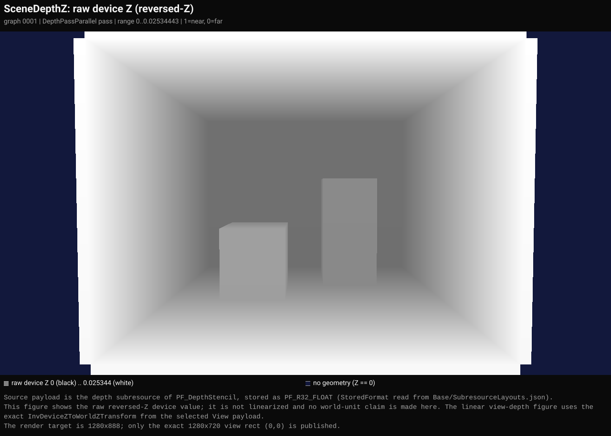
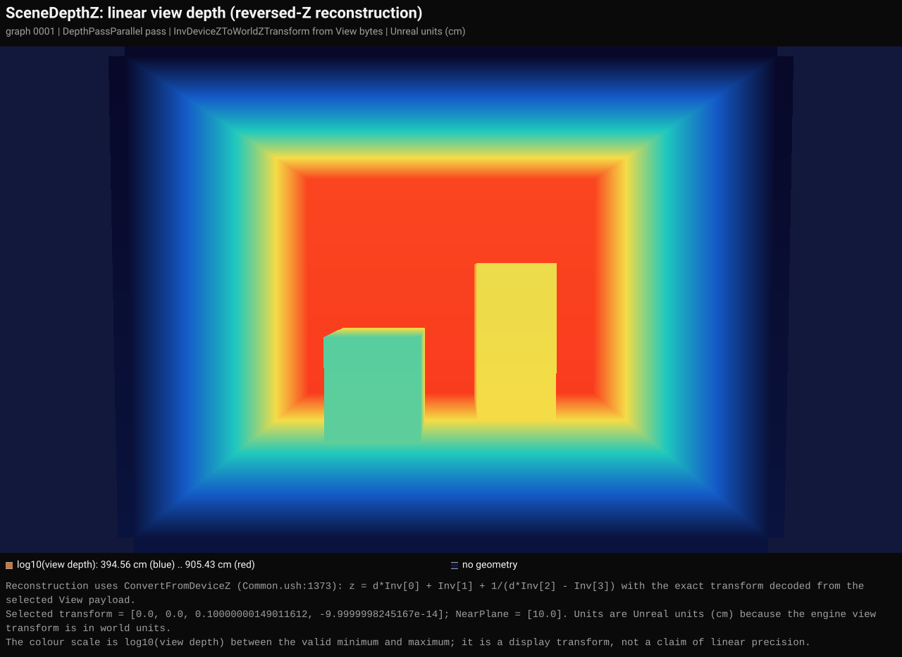
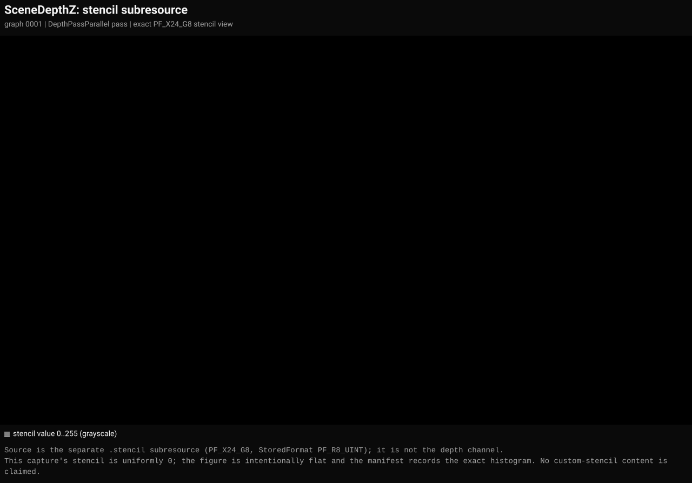
Connecting deferred lighting to transport
Use the preceding path-space notation. Locally, for an outgoing segment from toward . All local direction vectors point away from the surface. The physical projected-area measure uses the geometric normal ; the shader evaluates its material lobes using the shading normal . The distinction matters for normal maps and grazing-angle energy. The opaque, one-sided local transport equation is
LaTeX source
L_o(x,\omega_o)=L_e(x,\omega_o)+\int_{\Omega^+(n_g)} f_s(x,\omega_i,\omega_o)L_i(x,\omega_i)(n_g\cdot\omega_i)\,d\sigma(\omega_i).Here is the radiance arriving along the nearest visible segment, so visibility is already part of its definition. To expose direct-light visibility explicitly, parameterize an emitter point , set and , and write
LaTeX source
L_{A}(x,\omega_o)=\int_A f_s(x,\omega_{xy},\omega_o)L_e(y\to x)V(x,y)
\frac{(n_g(x)\cdot\omega_{xy})_+(n_g(y)\cdot(-\omega_{xy}))_+}{r^2}\,dA(y).Both vectors in the cosines are unit vectors. The geometry factor has units of inverse area; multiplying by converts it to projected solid angle. The irradiance integral is the same expression with removed. Rect-light integration approximates this area integral. Its distance dependence is already inside the geometric factor and must not be multiplied by another inverse-square factor.
For a punctual emitter with radiant intensity in W/sr,
LaTeX source
E_e(x)=\frac{I_e}{r^2}(n_g\cdot\omega_{xy})_+V(x,y).If the input is luminous intensity in candela, the same geometric expression produces illuminance in lux, not radiometric irradiance in W/m². Unreal's photometric light controls are converted to its linear RGB lighting convention; they are not a universal spectral watts-to-candela conversion. Directional lights instead specify illumination independent of distance.
Virtual Shadow Maps (VSM) supply a practical approximation to the direct-light visibility factor. Shadow Map Ray Tracing (SMRT) averages binary tests against a depth-map representation,
LaTeX source
\widehat V_{\rm SMRT}(x)=\frac1N\sum_{j=1}^N v_{\rm depth}(x,\xi_j).This is not an unbiased estimator of visibility in the original triangle scene. The depth map stores limited layers, and finite sampling, bias, missing pages, extrapolation, and ray limits alter the visibility problem. Increasing the sample count reduces sampling noise in that approximate problem; it does not remove representation bias. The BRDF is evaluated separately from this visibility estimate.
Legacy deferred material evaluation
From material graph to pixel inputs
The deferred base pass is a raster pass. For each covered pixel it builds FMaterialPixelParameters from the vertex-factory interpolants (Engine/Shaders/Private/BasePassPixelShader.usf:929), evaluates the material graph through CalcMaterialParameters, and obtains an FPixelMaterialInputs record. The relevant getters are deliberately simple and clamped:
GetMaterialBaseColorreturnssaturate(BaseColor)(Engine/Shaders/Private/MaterialTemplate.ush:3778-3781).GetMaterialMetallicreturnssaturate(Metallic)(:3788-3791).GetMaterialSpecularreturnssaturate(Specular)(:3798-3801).GetMaterialRoughnessreturnssaturate(Roughness), with editor/mobile roughness override hooks (:3808-3823).GetMaterialNormalreturns the material normal in tangent or world space; when the material is tangent-space,CalcPixelMaterialInputstransforms it withTransformTangentNormalToWorldand flips it for back faces (:4354-4381).
This is the first important renderer fact: the G-buffer stores a world-space shading normal, not a tangent-space normal and not a view-space normal. The tangent frame is discarded in the default layout, which is why anisotropic shading needs the optional GBufferF tangent target.
The base-pass shader then calls SetGBufferForShadingModel to fill an FGBufferData (Engine/Shaders/Private/ShadingModelsMaterial.ush:12-39). That function stores the world normal, base color, metallic, specular, roughness, anisotropy, shading model, and per-model custom data. For default lit, the custom data is unused; for clear coat it stores coat amount and coat roughness (:92-120).
A useful compact model of the material evaluation is:
evaluate_material(pixel):
params = interpolate_vertex_factory(pixel)
inputs = evaluate_material_graph(params)
base = saturate(inputs.BaseColor)
metal = saturate(inputs.Metallic)
spec = saturate(inputs.Specular)
rough = saturate(inputs.Roughness)
n = normalize(transform_normal(inputs.Normal, params.TangentToWorld))
F0 = lerp(0.08 * spec, base, metal)
albedo = base * (1 - metal)
return {base, metal, spec, rough, F0, albedo, n, inputs.Emissive, inputs.AO}The two derived quantities are exactly the ones the engine uses. ComputeF0 is lerp(DielectricSpecularToF0(Specular).xxx, BaseColor, Metallic) (Engine/Shaders/Private/ShadingCommon.ush:169-172), and DielectricSpecularToF0(Specular) is 0.08 * Specular (:122-125). ComputeDiffuseAlbedo(BaseColor, Metallic) is BaseColor - BaseColor * Metallic (:179-182). Thus the artist-facing Specular slider is not F0; 0.5 maps to the common dielectric F0 = 0.04, and 1.0 maps to 0.08.
What the default-lit GBuffer means
FGBufferData is the decoded, shader-side view of the material (Engine/Shaders/Private/DeferredShadingCommon.ush:379-439). It contains both the raw stored values and the derived values:
WorldNormal,WorldTangent(only when the anisotropy bit is present).BaseColor,Metallic,Specular,Roughness,Anisotropy.DiffuseColorandSpecularColor, explicitly documented as derived from base color, metalness, and specular (:385-388).CustomData,GenericAO,IndirectIrradiance,PrecomputedShadowFactors.ShadingModelID,SelectiveOutputMask,PerObjectGBufferData.Depth, reconstructed from the depth buffer when decoding; it is not a field in the G-buffer texture set (:422-424).
The active desktop encode path is generated from FGBufferInfo (Engine/Source/Runtime/Engine/Private/ShaderCompiler/ShaderGenerationUtil.cpp:770) and invoked through EncodeGBufferToMRT (Engine/Shaders/Private/BasePassPixelShader.usf:2384). The older explicit EncodeGBuffer function still exists but is marked deprecated in 5.7 (Engine/Shaders/Private/DeferredShadingCommon.ush:966-1033). The G-buffer layout itself is data-driven: FetchLegacyGBufferInfo assigns targets and slots (Engine/Source/Runtime/RenderCore/Private/GBufferInfo.cpp:247-553), and FindGBufferBindingByName maps the logical target types to pixel formats (:137-199).
With the engine source defaults in the table above, the desktop deferred layout has six render targets:
What the default-lit GBuffer meansColumns: Target · Default format · Shader components and meaning
| Target | Default format | Shader components and meaning |
|---|---|---|
SceneColor (target 0) |
PF_FloatRGBA with r.SceneColorFormat=4; actual type comes from Config.ColorFormat |
RGB is the pre-exposed scene color (emissive/unlit contribution from the base pass); alpha carries non-specular luminance for the subsurface path when that path is enabled. |
GBufferA (target 1) |
PF_A2B10G10R10 (10:10:10:2) |
.rgb = WorldNormal * 0.5 + 0.5; .a holds two per-object bits (contact shadow and dynamic indirect-shadow-caster representation). |
GBufferB (target 2) |
PF_B8G8R8A8 |
.r = Metallic, .g = Specular, .b = Roughness, .a = 4-bit shading model plus 4-bit selective output mask. |
GBufferC (target 3) |
PF_B8G8R8A8, sRGB |
.rgb = BaseColor; .a is AO when static lighting is off, otherwise encoded precomputed indirect irradiance already multiplied by AO, or diffuse-indirect sample-occlusion bits in the relevant permutation. |
GBufferD (target 4) |
PF_B8G8R8A8 |
.rgba = CustomData for the selected shading model. |
GBufferE (target 5) |
PF_B8G8R8A8 |
Four channels of precomputed static shadow factors, indexed by the light's shadow-map channel. Present because r.AllowStaticLighting=1. |
The normal is plain signed mapping, not octahedral. EncodeNormal is N * 0.5 + 0.5 and DecodeNormal is N * 2 - 1 (Engine/Shaders/Private/DeferredShadingCommon.ush:137-146). The 10-bit RGB channels therefore hold three normal components; the remaining two bits of the 32-bit target hold the per-object bits (Engine/Source/Runtime/RenderCore/Private/GBufferInfo.cpp:344-345,424-430). Mobile uses octahedral normal packing, but that is a different path (Engine/Shaders/Private/DeferredShadingCommon.ush:610-627).
GBufferB's alpha packing is worth spelling out because it is a common implementation trap. EncodeShadingModelIdAndSelectiveOutputMask packs the low four bits as the shading model and the high four bits as the selective mask (Engine/Shaders/Private/DeferredShadingCommon.ush:295-299); the decode functions mask the two nibbles (:301-309). The layout is defined in GBufferInfo.cpp:453-458. The shading model is therefore not a full byte in the default 8-bit layout; it is four bits, which is why the engine has a fixed enumeration and a SHADINGMODELID_MASK.
GBufferC stores base color in an sRGB render target on the default low-precision path: Info.Targets[3].Init(..., bLegacyAlbedoSrgb && !bHighPrecisionGBuffers, ...) (Engine/Source/Runtime/RenderCore/Private/GBufferInfo.cpp:366-367). EncodeBaseColor itself is a pass-through (Engine/Shaders/Private/DeferredShadingCommon.ush:192-202); the sRGB conversion is a render-target format property, so the stored bytes are gamma-encoded while the shader sees linear values.
The alpha channel of GBufferC is permutation-dependent. In the default static-lighting configuration it is not simply "AO": EncodeGBuffer writes EncodeIndirectIrradiance(IndirectIrradiance * GBufferAO) and the decode path reconstructs IndirectIrradiance from it (Engine/Shaders/Private/DeferredShadingCommon.ush:1014-1021,1110-1121). When static lighting is disabled, it stores GBufferAO directly. When the diffuse-indirect sample-occlusion permutation is active, it stores an 8-bit bitmask of occluded indirect samples. A from-scratch implementation should pick one meaning and make it explicit in its own layout rather than copying all three at once.
Project-dependent layout variants
FetchLegacyGBufferInfo chooses target indices from three booleans: velocity, tangent, and precomputed shadow factor (Engine/Source/Runtime/RenderCore/Private/GBufferInfo.cpp:247-263). The generated layout is not a single fixed "five G-buffers" contract:
- No velocity, no tangent, static lighting on (the source-default combination): targets are
SceneColor,GBufferA,GBufferB,GBufferC,GBufferD,GBufferE(:370-379). - Velocity in base pass: velocity occupies target 4 and
GBufferDmoves to target 5;GBufferE, if present, moves to target 6 (:381-395). This is enabled byr.VelocityOutputPass=1, not by the engine default. - Tangent/anisotropy output:
GBufferFoccupies target 4,GBufferDmoves to target 5, andGBufferEto target 6 (:396-407). The runtime params currently hard-codebHasTangent = false(Engine/Source/Runtime/Engine/Private/ShaderCompiler/ShaderGenerationUtil.cpp:2310), so this is not a default runtime layout even though the format machinery supports it. - Velocity and tangent together is explicitly rejected by a
check(Engine/Source/Runtime/RenderCore/Private/GBufferInfo.cpp:251).
If r.GBufferFormat is 0, GBufferA becomes PF_B8G8R8A8 and normals lose precision; if it is 3 or 5, GBufferA becomes PF_FloatRGBA and the other material targets become PF_FloatRGBA at level 5 (Engine/Source/Runtime/RenderCore/Private/GBufferInfo.cpp:340-360). Those are project/scalability choices, not the default. The source's default 1 is the low-precision 10:10:10:2 normal plus 8-bit material layout.
Depth, not a G-buffer channel
The scene depth target is PF_DepthStencil (Engine/Source/Runtime/Renderer/Private/SceneTextures.cpp:506). The stored value is device Z, which is nonlinear in a perspective projection and is converted to linear view-space W by ConvertFromDeviceZ (Engine/Shaders/Private/Common.ush:1373-1377). CalcSceneDepth samples that target and applies the conversion (Engine/Shaders/Private/SceneTexturesCommon.ush:58-66). The decoded FGBufferData.Depth is filled from CalcSceneDepth, which is why the struct comment says the depth is only valid when decoding and is reconstructed from the Z buffer (Engine/Shaders/Private/DeferredShadingCommon.ush:422-424,1132-1134).
The practical consequences are:
- World position is reconstructed from the depth target and the camera matrices, not read from a G-buffer.
- A depth prepass can populate depth without running the material graph; the base pass then tests against it.
- VSM page marking and shadow projection read this same depth target, so their notion of receiver position matches the lighting pass.
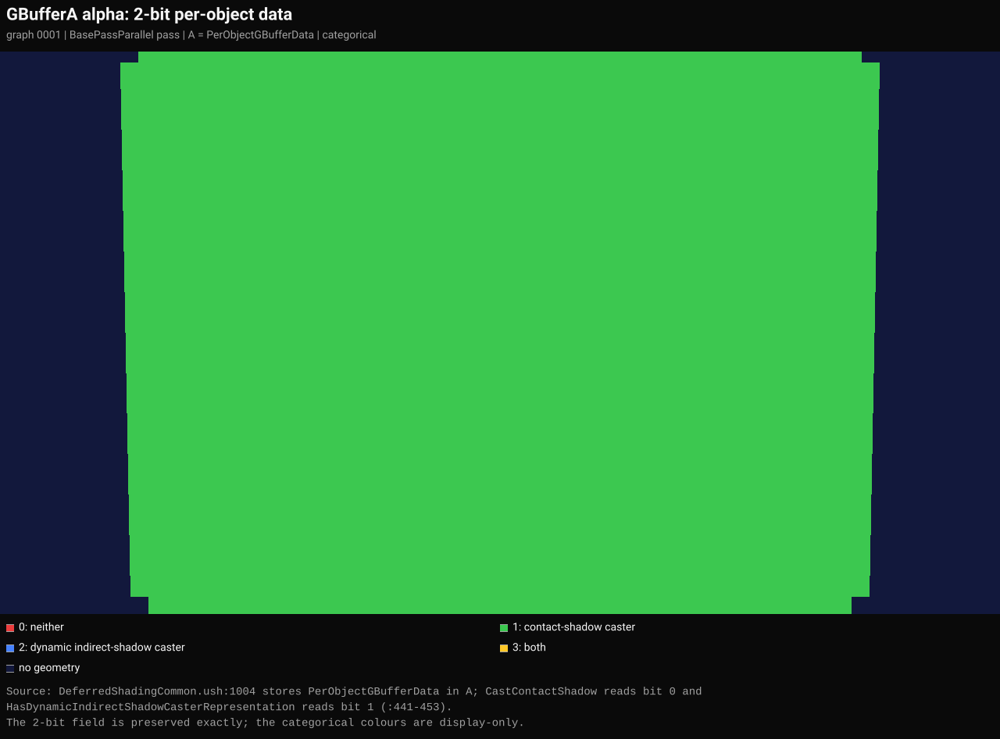
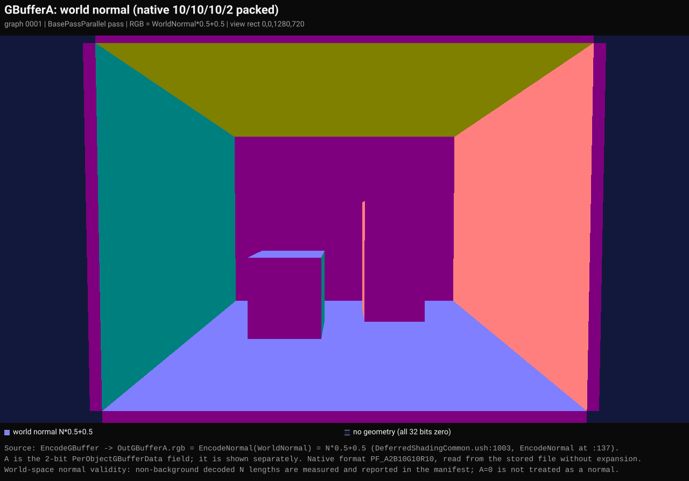

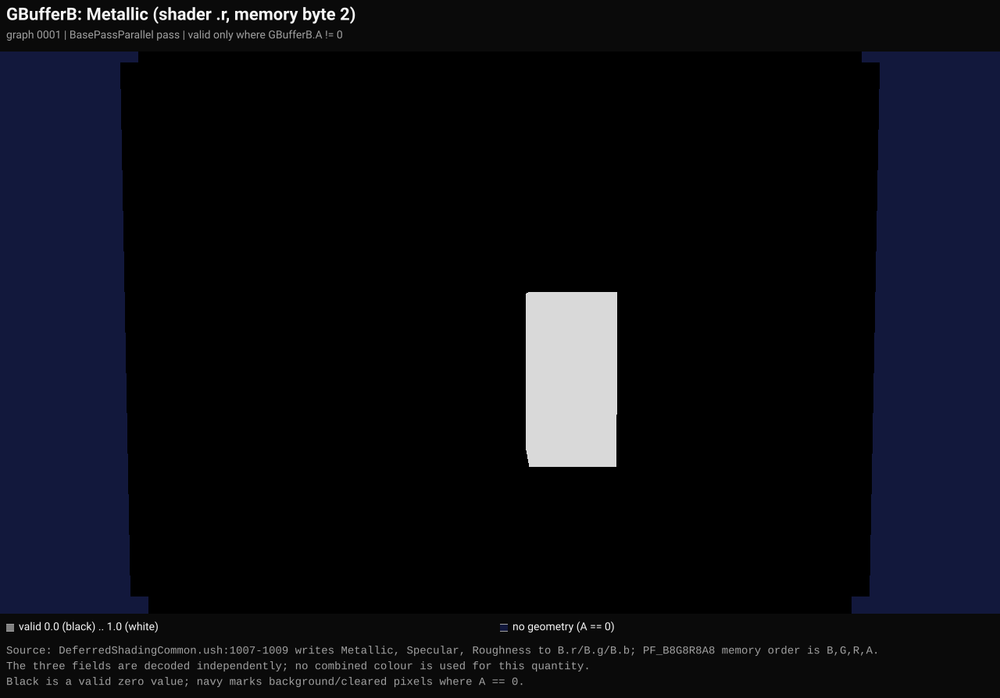

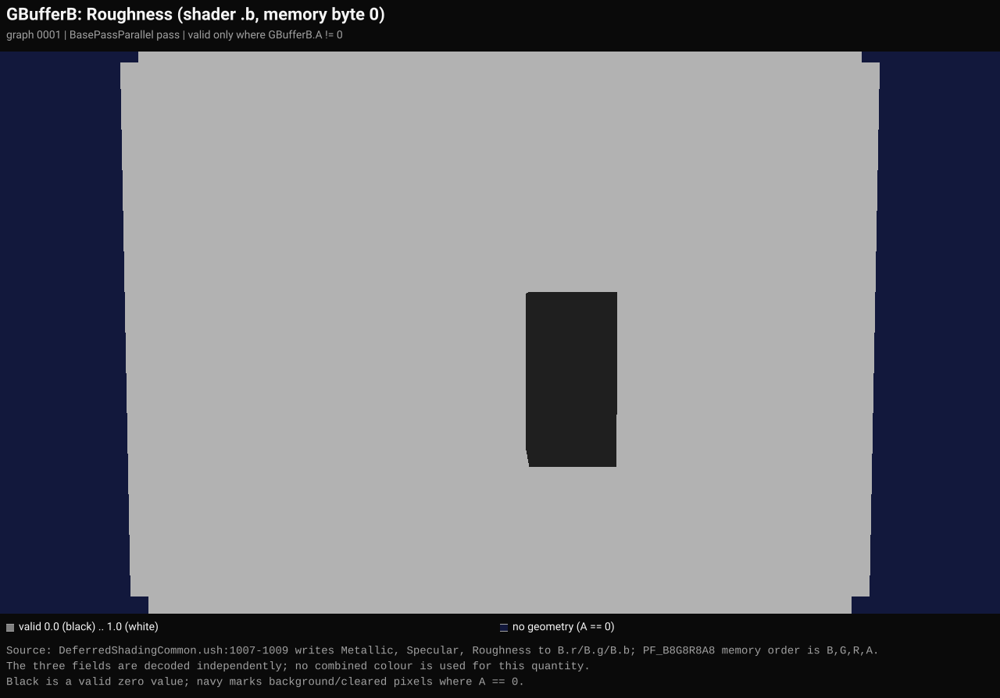

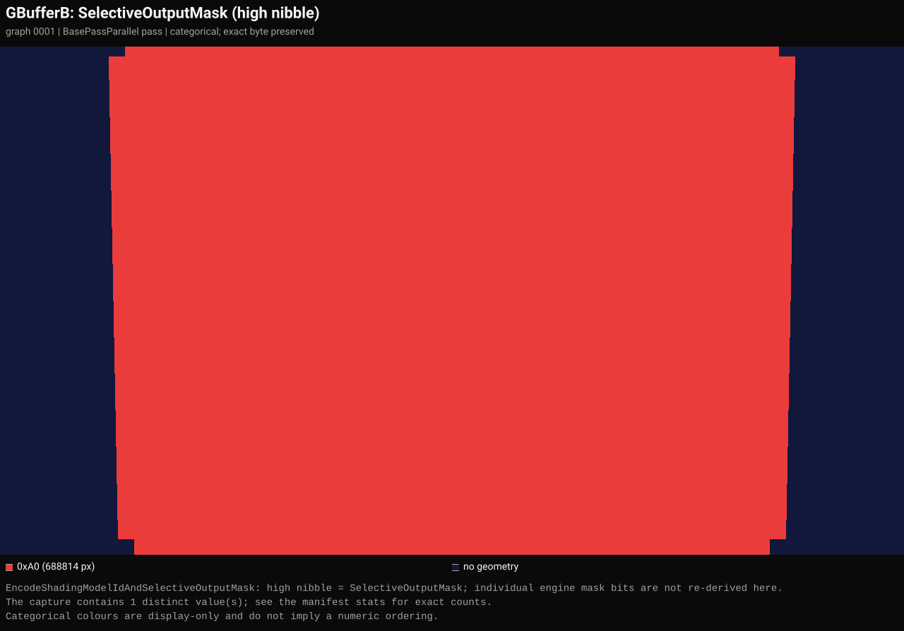

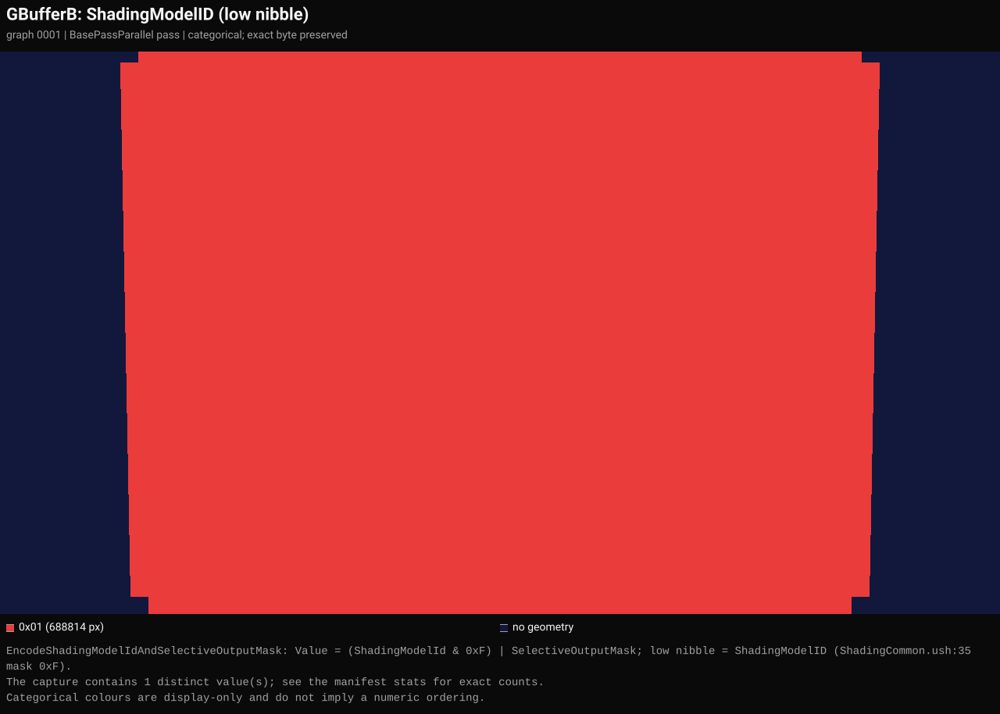

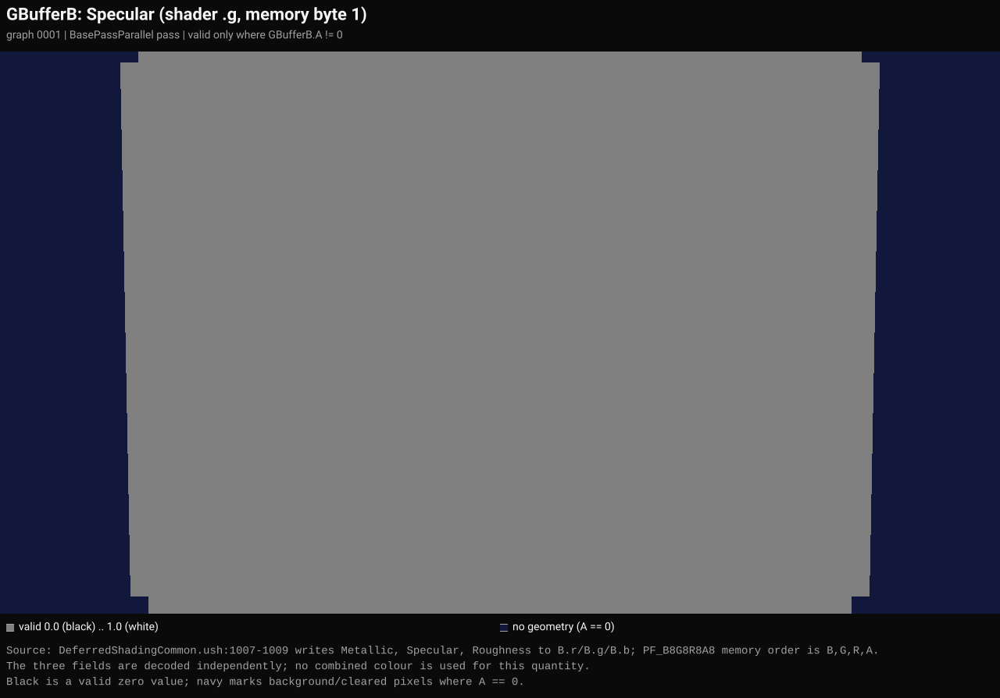
What to inspect in the GBufferB group. The metallic, roughness and specular panels are the triplet used by the material response; the selective mask and shading model identify branch metadata. Metallic selects the F0/metal workflow, roughness shapes the specular lobe, and specular is the legacy default-lit F0 byte. These are material parameters, not radiance. The panels share the same capture and validity rule (A byte == 0), so a black pixel can be a valid zero; inspect the raw explorer and packed word before calling a pixel absent. The schematic below collapses the material parameters and the lighting path families; these buffers show one channel at a time on the captured camera image.
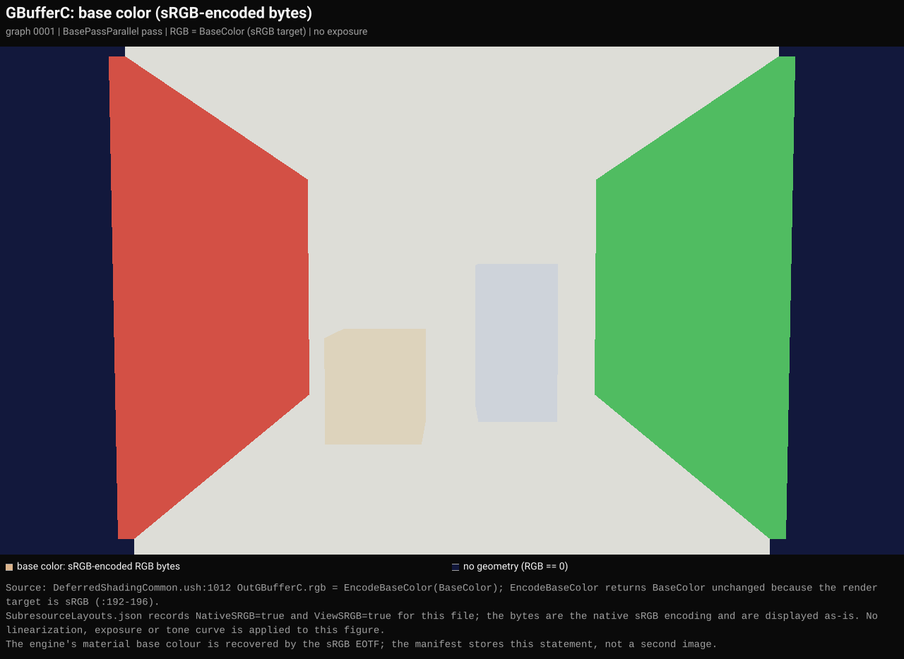
The channel views above are inputs, not a lighting result. The following schematic separates the two path families that consume them: deferred direct light at the primary visible point, and Lumen's cached indirect light through a secondary point.
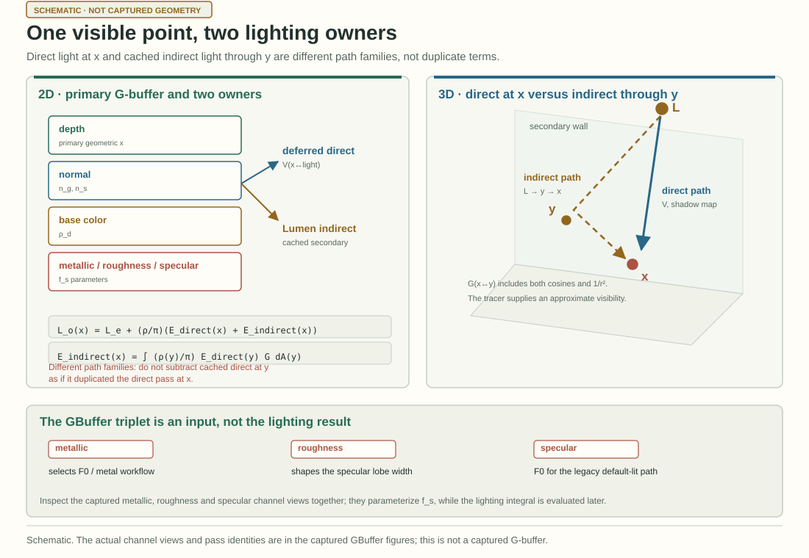
E_direct(x) and E_indirect(x) are different source families, and subtracting cached direct light at y as if it duplicated the direct pass at x would delete legitimate bounced light. Why it differs from the captured GBuffer: the buffers show material channels for the camera image; the schematic simplifies the room and does not draw the actual shadow-map or cache representations. Open diagram at full size.
How the evidence fits. The metallic, roughness and specular captures above are the parameters consumed by the local material evaluation; they do not contain the direct or indirect integral. The scene-color before/after indirect captures later in this chapter show the composite result, not a proof that every term is correctly partitioned. For the actual path ownership, inspect the captured pass and resource links in each figure's full record; the schematic is only the bookkeeping.
The default-lit BRDF
The microfacet specular lobe
The engine's default-lit path is a metallic/roughness BRDF with a GGX/Trowbridge-Reitz normal distribution and a Smith visibility term. The half vector is h = normalize(v + l). The shader's BxDFContext computes NoL, NoV, VoL, NoH, and VoH from the normalized vectors (Engine/Shaders/Private/BRDF.ush:24-41).
For roughness r, the implementation uses
LaTeX source
a = r^2,\qquad a^2 = r^4,so Pow4(Roughness) is the a2 passed to the GGX functions (Engine/Shaders/Private/ShadingModels.ush:182). The normal distribution is
LaTeX source
D_{\mathrm{GGX}}(n\cdot h,a^2)=\frac{a^2}{\pi\left((n\cdot h)^2(a^2-1)+1\right)^2},implemented in Engine/Shaders/Private/BRDF.ush:309-315. The Smith visibility term is stored in the form
LaTeX source
\mathrm{Vis}=\frac{G}{4(n\cdot v)(n\cdot l)},so that the specular BRDF is D * Vis * F; there is no separate division by 4 NoL NoV at the call site (Engine/Shaders/Private/BRDF.ush:150-154). The engine's approximation is
LaTeX source
\mathrm{Vis}_{\text{joint}}(a,n\cdot v,n\cdot l)
=\frac{0.5}{n\cdot l\,(n\cdot v(1-a)+a)+n\cdot v\,(n\cdot l(1-a)+a)},implemented in Engine/Shaders/Private/BRDF.ush:371-379. The Fresnel term is Schlick's approximation,
LaTeX source
F=F_0+(F_{90}-F_0)\big(1-\operatorname{saturate}(v\cdot h)\big)^5,\qquad
F_{90}=\operatorname{saturate}(50F_{0,g}),with the engine's small-F0 micro-occlusion clamp saturate(50 * F0.g) (Engine/Shaders/Private/BRDF.ush:402-410). The 50× clamp is why very small F0 values are treated as shadowing rather than as physically possible reflectance.
The combined specular function is
specular_ggx(roughness, F0, N, V, L):
a2 = roughness^4
a = sqrt(a2) // = roughness^2
H = normalize(V + L)
D = a2 / (PI * ((N·H)^2 * (a2 - 1) + 1)^2)
Vis = 0.5 / (NoL * (NoV*(1-a) + a) + NoV * (NoL*(1-a) + a))
F90 = saturate(50 * F0.g) # Unreal low-F0 micro-occlusion convention
F = F0 + (F90 - F0) * (1 - saturate(dot(V,H)))^5
return D * Vis * FThis pedagogical scalar form follows the structure of SpecularGGX (Engine/Shaders/Private/ShadingModels.ush:180-190), with an additional EnergyNormalization factor for area lights.
The diffuse lobe and energy split
The Lambertian diffuse BRDF is
LaTeX source
f_{\text{diffuse}}=\frac{\rho_d}{\pi},implemented as Diffuse_Lambert(DiffuseColor) (Engine/Shaders/Private/BRDF.ush:157-160). DefaultLitBxDF computes
lighting.diffuse = (albedo / PI) * FalloffColor * (Falloff * NoL)
lighting.specular = FalloffColor * (Falloff * NoL) * SpecularGGX(...)
lighting.diffuse *= 1 - E_luminance
lighting.specular *= W(Engine/Shaders/Private/ShadingModels.ush:212-293). Here E_luminance is the directional albedo of the specular lobe and W is the multiple-scattering compensation weight. ComputeGGXSpecEnergyTerms obtains them from the split-sum GGX energy lookup and the Fresnel terms (Engine/Shaders/Private/ShadingEnergyConservationTemplate.ush:66-86); ComputeEnergyPreservation returns 1 - luminance(E) and ComputeEnergyConservation returns W (:126-143). The visual meaning is:
- The diffuse lobe receives only the energy that the specular interface did not reflect.
- The specular lobe is boosted by
Wto account for multiple scattering between microfacets, which a single-scatter GGX model loses at high roughness. - Metals have
DiffuseColor = BaseColor * (1 - Metallic) = 0, so their energy is entirely in the coloredF0specular lobe.
When enabled, this energy split is part of the direct-light result, not a post-process. USE_ENERGY_CONSERVATION gates it: when disabled, the compensation weight and preservation multiplier are both one; development shaders can also disable preservation or compensation through view flags (ShadingEnergyConservationTemplate.ush:49-58,66-79,126-143). A renderer implementing the compensated branch must reproduce both factors. Bare single-scatter GGX loses microfacet multiple-scattering energy, while an independently added diffuse lobe can exceed the intended layered energy budget; the direction and size of the image error depend on material and illumination.
Parameter-to-BRDF mapping
The following table is the complete default-lit mapping used by the deferred path:
Parameter-to-BRDF mappingColumns: Material input · Stored in · Used as · Effect
| Material input | Stored in | Used as | Effect |
|---|---|---|---|
BaseColor |
GBufferC.rgb |
Diffuse albedo (scaled by 1-Metallic) and metallic F0 |
Sets the diffuse color and, for metals, the reflection tint. |
Metallic |
GBufferB.r |
lerp selector between dielectric F0 and BaseColor; also scales diffuse to zero |
0 = dielectric, 1 = conductor. |
Specular |
GBufferB.g |
F0_dielectric = 0.08 * Specular |
Only affects the dielectric part; 0.5 is the usual F0=0.04. |
Roughness |
GBufferB.b |
a = Roughness^2, a2 = Roughness^4 |
Controls GGX lobe width, energy terms, and area-light roughness compensation. |
Normal |
GBufferA.rgb |
World-space N after tangent transform |
Changes every dot product and the half vector. |
AO |
GBufferC.a (permutation-dependent) |
Multiplies indirect diffuse/ambient, not the direct light | Darkens creases without changing direct specular. |
Emissive |
Scene color | Added once as L_e |
Does not participate in the BRDF. |
Opacity |
Alpha / blend state | Masked or translucent coverage | Opaque deferred pixels are fully covered. |
The AO placement is deliberate. In the main deferred direct-light path the shadow term is the light's shadow attenuation; ambient occlusion is applied to the indirect/ambient contribution. The cheaper GetSimpleDynamicLighting path does multiply direct lighting by AmbientOcclusion (Engine/Shaders/Private/DeferredLightingCommon.ush:500-508), so "AO multiplies direct" is true only for that simplified path, not for the standard deferred light pass.
Why the normal is in world space
GBufferA stores the world normal because the deferred pass has no access to the original vertex-factory tangent frame. The base pass has already applied the tangent-to-world transform and the two-sided sign, so the lighting pass can use N directly. This has two consequences:
- The lighting pass reuses the evaluated normal instead of rerunning the normal-map material graph, at the cost of G-buffer storage and reads.
- Anisotropy needs a tangent, which is why the optional
GBufferFtarget exists; the default runtime params disable it (Engine/Source/Runtime/Engine/Private/ShaderCompiler/ShaderGenerationUtil.cpp:2310).HasAnisotropychecks the selective output mask, andDefaultLitBxDFonly uses the tangent if the anisotropy bit was set (Engine/Shaders/Private/ShadingModels.ush:223-247).
Direct lights
The common light data
A deferred light is evaluated from FDeferredLightData (Engine/Shaders/Private/LightData.ush:160-203). The fields that matter here are:
Color, already premultiplied by brightness and unit conversion; the comment explicitly warns that it can be huge and must not be half precision (:164-165).InvRadiusandFalloffExponent.FalloffExponent == 0is the encoding for inverse-squared falloff for a radial light; directional lights are excluded (:602).bRadialLight,bSpotLight,bRectLight, which select the attenuation and source-shape paths.SpecularScaleandDiffuseScale, which let a light or a feature scale the two lobes independently.RectLightData, including barn-door and source-texture atlas data.
The deferred shader builds this from the uniform buffer with InitDeferredLightFromUniforms (Engine/Shaders/Private/LightDataUniforms.ush:9-50). The bInverseSquared flag is set for radial lights when FalloffExponent == 0 (:33), and bRadialLight is false only for directional lights (:34-36). The engine also has a ConvertToDeferredLight path for the GPU-scene light data, with the same conventions (Engine/Shaders/Private/LightData.ush:581-633).
Attenuation is a mask, not an inverse-square multiply
GetLocalLightAttenuation is the single most important function for avoiding the area-light double-count bug (Engine/Shaders/Private/DeferredLightingCommon.ush:246-286). It computes:
ToLight = lightPosition - position
DistanceSqr = dot(ToLight, ToLight)
L = ToLight * rsqrt(DistanceSqr)
if inverseSquared:
LightMask = square(saturate(1 - square(DistanceSqr * InvRadius^2)))
else:
LightMask = RadialAttenuation(ToLight * InvRadius, FalloffExponent)
if spot:
LightMask *= SpotAttenuation(L, -lightDirection, SpotAngles)
if rect:
LightMask = dot(lightDirection, L) < 0 ? 0 : LightMask
return LightMaskFor inverse-squared lights, this returns only the finite-radius windowing mask and the spot/rect masks. It does not return 1/d². That geometric falloff is supplied later by the source-shape integration:
- A point/spot light (the punctual end of a capsule) gets
AreaLight.Falloff = 1 / (DistanceSqr + 1)fromCreateAreaLight(Engine/Shaders/Private/CapsuleLightIntegrate.ush:53-70). The+1is a small-distance bias to avoid an infinite result, not a second physical term. - A rect light gets
AreaLight.FallofffromRectIrradianceLambert, whose vector-irradiance construction already contains the area-to-point geometric factor (Engine/Shaders/Private/RectLight.ush:61-165). The rect path inGetLocalLightAttenuationonly applies the facing mask. - A directional light never calls
GetLocalLightAttenuation;LightMaskstays 1 (Engine/Shaders/Private/DeferredLightingCommon.ush:335-339).
The final direct irradiance is therefore
LaTeX source
E_l(x)=\text{Color}_l\cdot\text{LightMask}_l(x)\cdot\text{Falloff}_l(x)\cdot\max(n\cdot l,0),where Falloff is the point 1/d² for a punctual light or the area form factor for a rect light. Multiplying the rect result by 1/d² again would square the distance attenuation. The code avoids that by construction.
Directional lights
A directional light has bRadialLight = false, bInverseSquared = false, and a constant Direction vector (Engine/Shaders/Private/LightData.ush:727-760). The lighting path therefore uses LightMask = 1, L = Direction, and only the cosine and shadow terms:
LaTeX source
E_{\text{dir}}(x)=E_{\text{dir}}\,\max(n\cdot l,0).There is no InvRadius and no 1/d² for a directional light. The light color is used as an irradiance-like quantity; the engine's directional light component reports Unitless units (ELightUnits::Unitless, with a comment "Lux") rather than the local-light candela/lumen conversions (Engine/Source/Runtime/Engine/Private/Components/DirectionalLightComponent.cpp:1509). The source radius still matters: DefaultLitBxDF calls SphereMaxNoH with AreaLight.SphereSinAlpha to widen the specular highlight for a finite angular source (Engine/Shaders/Private/ShadingModels.ush:243-250), and SMRT samples the source cone to produce soft shadows (Engine/Shaders/Private/VirtualShadowMaps/VirtualShadowMapProjectionDirectional.ush:153-164).
A subtle point: a directional light's bInverseSquared is false even though FalloffExponent is set to zero in its converted data. The code explicitly excludes LIGHT_TYPE_DIRECTIONAL when deriving bInverseSquared (Engine/Shaders/Private/LightData.ush:602, Engine/Shaders/Private/LightDataUniforms.ush:33). A from-scratch renderer should use an explicit light-type enum rather than overloading "falloff exponent zero" for both directional and inverse-squared lights.
Point and spot lights
For a point light with inverse-squared falloff:
LaTeX source
E_{\text{point}}(x)=\frac{I}{d^2+1}\,\text{Mask}_{\text{radius}}(d)\,\text{Mask}_{\text{spot}}(l)\,\max(n\cdot l,0).The +1 is in the shader's squared-distance units and only prevents a divide-by-zero at the light center; it is not a physical softening term. The radius mask is the smooth window
LaTeX source
\text{Mask}_{\text{radius}}(d)=\left(\text{saturate}\left(1-\left(\frac{d^2}{R^2}\right)^2\right)\right)^2,which goes to zero at the attenuation radius R (Engine/Shaders/Private/DeferredLightingCommon.ush:258-267). This window is an artist/performance bound, not a physical falloff; the physical 1/d² is the Falloff term.
A spot light is the same point-light evaluation multiplied by the spot cone mask SpotAttenuation(L, -Direction, SpotAngles) (:274-277). The cone data is packed into SpotAngles and the light's direction is the axis. The shader's bSpotLight flag only controls this extra mask; the distance behavior is still the radial point-light behavior.
Point/spot lights with a non-zero SourceRadius or SourceLength become capsule/line emitters. CreateAreaLight computes a line irradiance for the capsule and a sphere-horizon cosine wrap for the finite radius (Engine/Shaders/Private/CapsuleLightIntegrate.ush:46-70). That is still a single geometric factor: the capsule integration replaces the point 1/d² with a line integral, and the code does not multiply it by another 1/d². The SphereMaxNoH call widens the specular lobe to account for the finite source (Engine/Shaders/Private/BRDF.ush:63-87).
Rect lights and the inverse-square trap
A rect light is an area emitter. Its direct diffuse irradiance is computed by RectIrradianceLambert (Engine/Shaders/Private/RectLight.ush:61-165). The function:
- Transforms the shading point into the rect's local frame.
- Builds the four corner direction vectors.
- Computes the vector irradiance of the polygon using the edge-integral form, with a small-angle approximation for
acos(:121-143). - Sets
BaseIrradiance = 0.5 * length(L)(:155). - Computes a mean light direction and a finite-source cosine wrap
NoL = SphereHorizonCosWrap(dot(N, L), SinAlphaSqr)(:160-162).
CreateAreaLight for a rect stores this as AreaLight.Falloff = Falloff and AreaLight.NoL = NoL (Engine/Shaders/Private/RectLightIntegrate.ush:59-74). DefaultLitBxDF then computes
diffuse = (albedo / PI) * FalloffColor * (Falloff * NoL)
specular = FalloffColor * (Falloff * NoL) * SpecularGGX(...) // or RectGGXApproxLTC for the rect specular(Engine/Shaders/Private/ShadingModels.ush:260-279). The Falloff here is the area integral, not a point attenuation. For a small rect of area A, the integral approaches A cosθ_l / d², so the result approaches the point-light formula with I = L_e A. For a large or close rect, the integral differs from 1/d²; that difference is the physical area-light softening. Multiplying by 1/d² a second time would be wrong for both the small and large cases.
The rect specular path is also specialized. For a rect light, DefaultLitBxDF calls RectGGXApproxLTC rather than the punctual SpecularGGX (Engine/Shaders/Private/ShadingModels.ush:271-274). The LTC approximation integrates the GGX lobe over the rect and includes the solid-angle/area factor; the source texture is sampled through SampleSourceTexture (Engine/Shaders/Private/RectLight.ush:167-186). This is another place where a naive implementation would double-count the distance term if it reused the punctual specular function and then multiplied by the area falloff.
The rect facing test is only a visibility/mask test: GetLocalLightAttenuation zeroes the light when dot(LightData.Direction, L) < 0 (Engine/Shaders/Private/DeferredLightingCommon.ush:279-283), and IsRectVisible checks the barn door (Engine/Shaders/Private/RectLightIntegrate.ush:45-57,77-92). It is not a second geometric attenuation.
Light units and exposure
Unreal's world units are centimeters. The light components convert artist-facing units into a linear brightness before the shader sees LightData.Color:
Light units and exposureColumns: Unit · Point/spot conversion · Rect conversion · Meaning
| Unit | Point/spot conversion | Rect conversion | Meaning |
|---|---|---|---|
Unitless |
multiply by 16 | multiply by 16 | Legacy scale; the default. |
Candelas |
multiply by 100^2 |
multiply by 100^2 |
Luminous intensity; the cm² -> m² factor makes I/d_cm² equal I/d_m² in photometric units. |
Lumens |
point: 100^2 / (4π); spot: 100^2 / (2π(1 - cos half cone)) |
multiply by 100^2 / π |
Luminous flux converted to intensity/radiance under a Lambertian assumption. |
Nits |
multiply by capsule area in cm² |
multiply by SourceWidth * SourceHeight in cm² |
Luminance; total emitted power scales with emitter area. |
EV |
EV100ToLuminance(x) * 100^2 |
EV100ToLuminance(x) * 100^2 |
Exposure-referenced unit. |
The point conversions are in Engine/Source/Runtime/Engine/Private/Components/PointLightComponent.cpp:127-157; the spot cone variant is in Engine/Source/Runtime/Engine/Private/Components/SpotLightComponent.cpp:79-109; the rect conversions are in Engine/Source/Runtime/Engine/Private/Components/RectLightComponent.cpp:181-219; the conversion-factor helper and its cm/m documentation are in Engine/Source/Runtime/Engine/Private/Components/LocalLightComponent.cpp:150-225. The default component values are Intensity=5000, IntensityUnits=Unitless, AttenuationRadius=1000, InverseExposureBlend=0 (LocalLightComponent.cpp:10-18), so the default scene is not physically calibrated unless the project changes the units.
Exposure is applied after the direct-light sum, not inside the BRDF. DeferredLightPixelMain adds Radiance to OutColor and then multiplies the whole RGBA result by GetExposure(), which returns View.PreExposure (Engine/Shaders/Private/DeferredLightPixelShaders.usf:132-135,445-455). The tonemapper later multiplies by View.OneOverPreExposure and applies the eye-adaptation/global exposure (Engine/Shaders/Private/PostProcessTonemap.usf:311,523-526). This is why the lighting shader can work in a consistent HDR range even when the exposure changes frame to frame. The optional InverseExposureBlend on a light modifies the light's color scale before it reaches the shader (Engine/Source/Runtime/Engine/Private/Components/LightComponent.cpp:404-424), which is a gameplay convenience, not part of the BRDF.
Direct lighting outputs
AccumulateDynamicLighting accumulates the direct result into an FLightAccumulator (Engine/Shaders/Private/DeferredLightingCommon.ush:316-437). FLightAccumulator keeps TotalLight, TotalLightDiffuse, TotalLightSpecular, and a scatterable-light luminance for subsurface scattering (Engine/Shaders/Private/LightAccumulator.ush:24-55). LightAccumulator_AddSplit adds (diffuse + specular) * CommonMultiplier to the RGB total, and separately tracks the diffuse and specular parts (:58-83). GetDynamicLighting returns the sum of the split components (Engine/Shaders/Private/DeferredLightingCommon.ush:441-462).
The output written by the deferred light pass is therefore:
- RGB: direct diffuse + direct specular, in scene-referred HDR, then multiplied by pre-exposure.
- Alpha: the non-specular luminance used by the screen-space subsurface path (
Engine/Shaders/Private/LightAccumulator.ush:98-137,140-178).
The light pass is additive into scene color: SetupLightGraphicsPSOState sets BO_Add with BF_One, BF_One (Engine/Source/Runtime/Renderer/Private/LightRendering.cpp:2888-2891), and InternalRenderLight draws the light's screen-space geometry with that blend state (:2947-2981). Direct lights are not a full-screen recomposition of the G-buffer; they add their contribution to the already-written scene color.
Raster and deferred lighting order
The high-level order in FDeferredShadingSceneRenderer is:
- Optional depth prepass.
ShouldRenderPrePassdecides whether a depth-only pass is needed; the prepass runs before the base pass (Engine/Source/Runtime/Renderer/Private/DeferredShadingRenderer.cpp:548,2464). - Base pass raster.
RenderBasePassevaluates materials and writes scene color plus the G-buffer targets (:3059). The base pass writes the opaqueColor(emissive/unlit contribution) into MRT0 (Engine/Shaders/Private/BasePassPixelShader.usf:2333-2354), and writes the material G-buffer viaEncodeGBufferToMRT(:2384). - VSM page marking and shadow raster. With VSM enabled,
BeginMarkVirtualShadowMapPagesruns after the base pass because it needs the depth/G-buffer (:3270-3274), thenRenderShadowDepthMapsproduces the shadow depth pages (:3288-3292). The VSM projection for each light is produced before that light's deferred pass (Engine/Source/Runtime/Renderer/Private/Shadows/ShadowSceneRenderer.cpp:1011-1113). - After-base-pass composition.
CompositionLighting.ProcessAfterBasePassruns post-base-pass composition work such as SSAO and relevant decal stages; DBuffer decals that feed material evaluation belong before the base pass. It (Engine/Source/Runtime/Renderer/Private/DeferredShadingRenderer.cpp:3391). These can modify the G-buffer/scene color before lighting. - Diffuse indirect phase 1.
RenderDiffuseIndirectAndAmbientOcclusionis called beforeRenderLightswithbCompositeRegularLumenOnly=false(DeferredShadingRenderer.cpp:3429-3436). This is the first of two composite calls; it is not an extra lighting term. - Direct lights.
RenderLightsdraws the sorted light set additively into scene color (:3460-3467), using the per-light shadow attenuation and the BRDF described above. - Diffuse indirect phase 2 and reflections. A second
RenderDiffuseIndirectAndAmbientOcclusioncall withbCompositeRegularLumenOnly=trueruns after the lights (:3517-3525), followed byRenderDeferredReflectionsAndSkyLighting(:3528). The code comment says this ordering lets async Lumen work overlap the direct-light pass. The reflection pass explicitly skips the specular composite for Lumen because it was already produced by the diffuse-indirect composite (Engine/Source/Runtime/Renderer/Private/IndirectLightRendering.cpp:2249-2252). - Subsurface, translucency, and post. Subsurface recombine, Substrate opaque-rough-refraction passes, hair, translucency, and the tonemapper follow (
DeferredShadingRenderer.cpp:3535-3560).
The two indirect calls are easy to misread as double counting. They are two scheduling points for the same conceptual contribution: the first runs before the direct lights, and the second runs after them and is explicitly ordered so async Lumen work can overlap the direct-light pass. A from-scratch renderer does not need to reproduce the async split, but it must preserve the invariant that each transport path is added exactly once.
Full deferred producer/consumer table
The following table names the buffers that matter for an opaque deferred frame. "Extent" is the view/render-target extent unless stated otherwise. The formats are the engine source defaults from the table at the start of the chapter; project settings can change the G-buffer and scene-color formats.
Full deferred producer/consumer tableColumns: Buffer · Format · Dimensions / layout · Producer · Consumer · and 1 more
| Buffer | Format | Dimensions / layout | Producer | Consumer | Meaning |
|---|---|---|---|---|---|
SceneColor |
PF_FloatRGBA default (r.SceneColorFormat=4); Config.ColorFormat in code |
view extent | Base pass (emissive/unlit), then additive light and indirect passes | Reflections, translucency, post | HDR scene radiance before tonemapping; RGB radiance, alpha is subsurface luminance when that path is enabled and otherwise unused. |
SceneDepthZ |
PF_DepthStencil |
view extent | Depth prepass and/or base pass | Lighting, VSM marking/projection, post | Device Z; linearized by ConvertFromDeviceZ. |
GBufferA |
PF_A2B10G10R10 default |
view extent | Base pass | Deferred lighting, VSM marking | World normal (RGB 10:10:10) plus two per-object bits. |
GBufferB |
PF_B8G8R8A8 default |
view extent | Base pass | Deferred lighting | Metallic, specular, roughness, shading model/selective mask. |
GBufferC |
PF_B8G8R8A8 sRGB default |
view extent | Base pass | Deferred lighting | Base color plus AO/precomputed irradiance/sample-occlusion alpha. |
GBufferD |
PF_B8G8R8A8 default |
view extent | Base pass | Deferred lighting | Per-shading-model custom data. |
GBufferE |
PF_B8G8R8A8 default |
view extent | Base pass | Deferred lighting, VSM marking | Precomputed static shadow factors when static lighting is enabled. |
GBufferF |
PF_B8G8R8A8 when tangent layout is enabled |
view extent | Base pass | Deferred lighting | World tangent plus anisotropy; not in the default runtime layout. |
Velocity |
PF_G16R16, or PF_A16B16G16R16 with velocity depth |
view extent | Velocity pass, or base pass when r.VelocityOutputPass=1 |
TSR, motion blur, SSR | Screen-space motion vectors; not a default base-pass target. |
SeparatedSubsurfaceDiffuse |
PF_R16F |
view extent | RenderSubsurfaceDiffuseInitPass |
Subsurface recombine | Separated non-specular lighting for screen-space subsurface. |
LightAttenuation / shadow mask |
packed attenuation format | view extent, per light or one-pass packed | VSM projection or classic shadow mask | Deferred light pass | Visibility/attenuation factor multiplying the light. |
VSM PageTable |
PF_R32_UINT |
page-table texture, one texel per virtual page | Page allocation | Marking, raster, projection | Virtual page to physical page mapping and LOD/valid flags. |
VSM PageFlags |
PF_R32_UINT with mip chain |
same page-table extent | Page marking/allocation | Raster culling, invalidation, HZB | Allocated/cached/detail/request flags per virtual page. |
VSM PageRequestFlags |
PF_R32_UINT |
page-table extent, one mip | Marking and GPU invalidation | Page allocation | Transient "this page is requested/invalidated this frame" bits. |
VSM PhysicalPagePool |
PF_R32_UINT, 2-slice array (3 with visualization) |
physical pool extent | Shadow raster (depth writes) | Projection, HZB, debug | Physical page storage; each texel is a device-Z value. |
VSM HZBPhysicalPagePool |
PF_R32_FLOAT array |
half physical pool extent, mip chain | UpdateHZB |
Page/instance culling | Furthest-depth hierarchy per physical page. |
VSM PhysicalPageMetaData |
structured FPhysicalPageMetaData |
MaxPhysicalPages entries |
Page allocation | Invalidation, cache management | Reverse mapping, last-requested frame, flags. |
Substrate branch distinction
Substrate is a separate material representation, not a different BRDF only. The engine source default is r.Substrate=0 (Engine/Source/Runtime/RenderCore/Private/RenderUtils.cpp:2068-2072), and IsSubstrateEnabled is simply that read-only cvar (:2219-2224). A project can enable it, and the source comment says new projects created with 5.7 are set up with Substrate enabled, either with a blendable G-buffer or an adaptive bitstream G-buffer (:2074-2083). The chapter therefore treats "legacy" and "Substrate" as two branches selected by project configuration and per-material compilation, not as a universal engine default.
What changes in the G-buffer
When Substrate is enabled and the blendable G-buffer path is not selected, FetchLegacyGBufferInfo removes GBufferA, GBufferB, and GBufferC entirely (Engine/Source/Runtime/RenderCore/Private/GBufferInfo.cpp:265-327). The material payload moves to the Substrate material texture array and top-layer texture:
Substrate.MaterialTextureArrayis aTexture2DArrayofPF_R32_UINT. Its slice count isceil(EffectiveMaxBytesPerPixel / 4) + SSS/debug slices(Engine/Source/Runtime/Renderer/Private/Substrate/Substrate.cpp:649-660). The platform budget default is 80 bytes per pixel (Engine/Source/Runtime/RenderCore/Private/RenderUtils.cpp:2092-2096), i.e. up to 20 slices before extra data; the actual per-frame slice count can be smaller because the effective budget is clamped to the view requirement (Engine/Source/Runtime/Renderer/Private/Substrate/Substrate.cpp:570-571).Substrate.TopLayerTextureisPF_R32_UINT, orPF_R32G32_UINTwhen high-quality normals are requested (Engine/Source/Runtime/Renderer/Private/Substrate/Substrate.cpp:445-457). It stores the top-layer normal and material classification used by lighting and decals.
The base pass still writes scene color, and may still write velocity, GBufferE, and the separated main-directional-light water target, because those remain render-target outputs. The difference is that the material itself is exported to the UAV material buffer.
What changes in the base pass
The legacy branch reads GetMaterialBaseColor, GetMaterialMetallic, GetMaterialSpecular, and GetMaterialRoughness into scalar variables and then calls SetGBufferForShadingModel (Engine/Shaders/Private/BasePassPixelShader.usf:1012-1031). The Substrate branch instead initializes an FSubstrateData and FSubstratePixelHeader from the material inputs (:1066-1069), evaluates the Substrate tree with SubstrateMaterialExportOut (:1772-1794), and packs the result with PackSubstrateOut into the material texture array (:2064-2073). The same shader still contains the legacy EncodeGBufferToMRT call (:2384); which permutation actually uses it depends on SUBSTRATE_ENABLED and SUBSTRATE_GBUFFER_FORMAT. The Substrate material payload itself is written by PackSubstrateOut, not by that legacy call.
SubstrateLegacyConversion.ush shows the bridge for legacy shading models: CreateLegacySlab computes DiffuseAlbedo = ComputeDiffuseAlbedo(BaseColor, Metallic) and F0 = ComputeF0(Specular, BaseColor, Metallic) when metalness is in use (Engine/Shaders/Private/Substrate/SubstrateLegacyConversion.ush:100-146). This is the same mapping as the legacy G-buffer, but it is stored as a generic slab BSDF rather than as packed material channels.
What changes in deferred lighting
DeferredLightPixelMain has two compile-time branches:
#if SUBSTRATE_ENABLED
load Substrate header / BSDF (or use inline BSDF for a single slab)
SubstrateLighting = SubstrateDeferredLighting(...)
OutColor += SubstrateLighting.SceneColor
#else
ScreenSpaceData = GetScreenSpaceData(uv)
Radiance = GetDynamicLighting(...)
OutColor += Radiance
#endifThe legacy branch is the #else at Engine/Shaders/Private/DeferredLightPixelShaders.usf:417-450; the Substrate branch is :304-399. SubstrateDeferredLighting loops over the pixel's closures (Engine/Shaders/Private/Substrate/SubstrateDeferredLighting.ush:112-223). For each closure it creates a BSDF context, computes area-light parameters, and calls SubstrateEvaluateBSDFCommon (:151-189). The common multiplier is LightData.Color * LightMask * LuminanceWeight(BSDFContext, BSDF) (:193-200), and the integrated diffuse/specular values are accumulated with LightAccumulator_AddSplit (:216-218).
For a slab, SubstrateEvaluateBSDFCommon evaluates:
- diffuse:
Diffuse_Lambert(DiffuseColor)or a rough diffuse model when enabled (Engine/Shaders/Private/Substrate/SubstrateEvaluation.ush:549-569); - specular:
D * Vis * FresnelTermwith the same GGX functions (:581-689); - energy preservation/conservation through
ComputeGGXSpecEnergyTerms(:587-590); - rect-light specular via
RectGGXApproxLTC(:625-643); - optional haziness/clear-coat layers and their transmission through the top layer (
:701-807).
The practical distinction is:
What changes in deferred lightingColumns: Aspect · Legacy default-lit branch · Substrate branch
| Aspect | Legacy default-lit branch | Substrate branch |
|---|---|---|
| Material storage | Packed G-buffer A-E, fixed channels | UAV material texture array plus top-layer texture, variable byte budget |
| Material representation | Fixed FGBufferData fields and a shading-model enum |
Generic BSDF tree / slab closures with layers |
| Deferred evaluation | GetDynamicLighting → DefaultLitBxDF specialized by shading model |
SubstrateDeferredLighting → SubstrateEvaluateBSDFCommon per closure |
| Layer support | Custom data per shading model; limited layering | Multiple closures, haziness, clear coat, transmission, approximate rough refraction |
| Project switch | Default when r.Substrate=0 |
Enabled by r.Substrate=1 and the project G-buffer format |
| Code status | Marked deprecated in 5.7 in several functions | The newer unified path |
The BRDF derivation in the previous section still applies to Substrate slabs: it uses the same D_GGX, Vis_Smith, F_Schlick, and energy terms. What changes is how many lobes a pixel can have and how the material data is stored/evaluated.
Virtual Shadow Maps
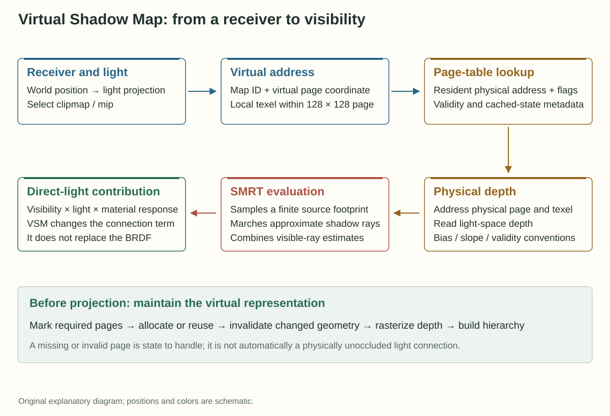
Why a virtual page table
A conventional shadow map allocates one depth texture per light at a fixed resolution. VSM instead allocates a physical pool of 128×128 pages and maps virtual pages to physical pages through a page table. Only pages that receive visible shadow samples are backed and rasterized. The constants are in Engine/Shaders/Shared/VirtualShadowMapDefinitions.h:
VSM_LOG2_PAGE_SIZE = 7, so a page is128×128texels (:12-15).VSM_LEVEL0_DIM_PAGES_XY = 128, so the level-0 page table covers128×128 = 16384pages, i.e. a virtual resolution of16384×16384texels (:16-20).VSM_MAX_MIP_LEVELS = 8(:19).VSM_RASTER_WINDOW_PAGES = 4(:21).VSM_MAX_SINGLE_PAGE_SHADOW_MAPS = 8192(:67).
FVirtualShadowMap exposes those constants and a PhysicalPageAddressBits = 16 physical address space (Engine/Source/Runtime/Renderer/Private/VirtualShadowMaps/VirtualShadowMapArray.h:67-90). The page table entry is a 32-bit word with 10 bits for physical page X, 10 bits for physical page Y, 6 bits of LOD offset, and flags for "valid for rendering", "any LOD valid", and "secondary request" (Engine/Shaders/Private/VirtualShadowMaps/VirtualShadowMapPageAccessCommon.ush:237-287). The decoder and the virtual-to-physical texel translation are in the same file (:289-325).
The physical pool is a Texture2DArray of PF_R32_UINT (Engine/Source/Runtime/Renderer/Private/VirtualShadowMaps/VirtualShadowMapCacheManager.cpp:1114-1125). It normally has two slices: slice 0 for dynamic pages and slice 1 for static cached pages; a third slice is added for Nanite visualization (Engine/Source/Runtime/Renderer/Private/VirtualShadowMaps/VirtualShadowMapArray.cpp:2417-2421). The pool width is the maximum 2D texture dimension divided by the page size; the height is chosen to hold MaxPhysicalPages pages (:1006-1044). With default MaxPhysicalPages=2048 and a 16384 maximum texture dimension, the pool is 128 pages wide and 16 pages tall, i.e. 16384×2048 texels per slice.
Clipmaps and mip selection
Directional lights use a clipmap: a stack of orthographic VSMs centered on the camera, each covering a different world radius. The clipmap configuration defaults to first level 6 and last level 22 (Engine/Source/Runtime/Renderer/Private/VirtualShadowMaps/VirtualShadowMapClipmap.cpp:57-68). The level radius is
LaTeX source
R_L=2^{L+1}\ \text{cm},(:172-180). A level's orthographic projection uses half extent 2R_L, so the full square is 4R_L wide, and its center is snapped to a grid to keep pages stable under camera movement (:336-402). The depth range is expanded by ZRangeScale (default 1000) relative to the radius (:84-88,397,457-459); this deliberately makes the depth range much larger than the visible slab so that small camera moves do not invalidate cached pages.
Each clipmap level is a separate VSM handle, so its page table uses mip 0. The ResolutionLodBias is computed from the camera projection and viewport (:245-254) and shifts which level is selected for a given distance. For a receiver at distance d from the clipmap origin, the absolute level is approximately
LaTeX source
L=\left\lfloor \log_2(d)+\text{bias}\right\rfloor,because CalcAbsoluteClipmapLevel is 0.5 * log2(distanceSquared) (Engine/Shaders/Private/VirtualShadowMaps/VirtualShadowMapProjectionCommon.ush:41-45). The actual sampling code adds the per-level bias and clamps to the available clipmap (:48-75).
Local lights use a mip-mapped VSM rather than a clipmap. The mip is chosen from the projected pixel footprint:
RadiusWorld = (SceneDepth * ViewToClip[2][3] + ViewToClip[3][3])
* min(1 / (ViewSize.x * ViewToClip[0][0]),
1 / (ViewSize.y * ViewToClip[1][1]))
RadiusClipH = (RadiusWorld, 0, shadowW, 1) * ShadowViewToClip
RadiusClip = |RadiusClipH.x / RadiusClipH.w|
Footprint = RadiusClip * 2 * 16384
Mip = floor(log2(Footprint) + ResolutionLodBias + GlobalResolutionLodBias)This is the structure of VirtualShadowMapCalcPixelFootprintLocal (:96-118) and GetMipLevelLocal (:41-54). The 16384 is VSM_VIRTUAL_MAX_RESOLUTION_XY, so the footprint is expressed in virtual texels. The mip level is clamped to [0, 7] by GetMipLevelLocal (Engine/Shaders/Shared/VirtualShadowMapDefinitions.h:178-196).
Page marking
Page marking runs after the base pass because it needs the visible surface depth and normal. BeginMarkPages builds the projection data and per-page dispatchers (Engine/Source/Runtime/Renderer/Private/VirtualShadowMaps/VirtualShadowMapArray.cpp:2516-2613), and the marking shader processes pixels or froxels (Engine/Shaders/Private/VirtualShadowMaps/VirtualShadowMapPageMarking.usf:320-382). The per-pixel logic is:
for each marked pixel p (stride may be > 1):
deviceZ = depth[p]
if substrate: read top-layer normal and material validity
else: decode GBuffer normal and shading model
if unlit: skip
if directional:
level = floor(log2(distanceToClipmapOriginSquared) * 0.5 + bias)
vsm = clipmap level
else:
mip = clamp(floor(log2(footprint) + bias), 0, 7)
vsm = local light VSM
uv = project(p, vsm)
page = floor(uv * levelDimTexels / 128)
flags = ALLOCATED | DETAIL_GEOMETRY | PRIMARY_REQUEST
requestFlags[page] |= flags
if receiverMask:
mask[page] |= 1 << (submask bit for the texel)MarkPage computes the page address and writes VSM_FLAG_ALLOCATED | VSM_FLAG_DETAIL_GEOMETRY | VSM_FLAG_PRIMARY_REQUEST (Engine/Shaders/Private/VirtualShadowMaps/VirtualShadowMapPageMarking.ush:82-111). The receiver mask is an 8×8-bit mask per page, stored as 2×2 4×4-bit words and updated with atomics (:71-80; the mask size is VSM_RECEIVER_MASK_SIZE=8 at Engine/Shaders/Shared/VirtualShadowMapDefinitions.h:30-34). Page dilation marks the adjacent page when a pixel lies within a small fraction of the page border (default 5% for both directional and local lights, Engine/Source/Runtime/Renderer/Private/VirtualShadowMaps/VirtualShadowMapArray.cpp:369-408); it is not a full-page border (Engine/Shaders/Private/VirtualShadowMaps/VirtualShadowMapPageMarking.ush:119-136).
Directional marking chooses the clipmap level and marks the receiver's virtual page at mip 0 of that level (Engine/Shaders/Private/VirtualShadowMaps/VirtualShadowMapPageMarking.ush:139-153). Local marking chooses a mip and marks that mip's page (:156-174). Coarse pages are marked separately to provide low-resolution data everywhere, including regions not directly covered by a visible pixel (Engine/Shaders/Private/VirtualShadowMaps/VirtualShadowMapPageMarking.usf:800-870). Coarse page levels are configured by FirstCoarseLevel=15 and LastCoarseLevel=18 by default (VirtualShadowMapClipmap.cpp:70-82).
The result of marking is a transient PageRequestFlags texture. It is not the persistent page table; it is the "what does this frame need?" set that the allocator consumes.
Allocation, caching, and page reuse
The allocator has three persistent structures:
PageTable: virtual page → physical page mapping and validity flags.PageFlags: per-virtual-page state (allocated, dynamic/static uncached, detail geometry, primary/secondary request).PhysicalPageMetaData: per-physical-page reverse mapping, last-requested frame, and extended flags.
UpdatePhysicalPages walks the physical pages and decides whether to keep a cached mapping (Engine/Shaders/Private/VirtualShadowMaps/VirtualShadowMapPhysicalPageManagement.usf:236-385). It keeps a page if it was requested this frame, if its light is unreferenced, or if its age since last request is at most MaxPageAgeSinceLastRequest (:285-292). The default age is 1000 frames (VirtualShadowMapCacheManager.cpp:127-132). Retained cached pages preserve their mapping; pages released or selected for reuse enter the available lists. A page not requested this frame can remain cached under the age policy, so absence of a request is not an immediate eviction.
AllocateNewPageMappings handles a requested page with no current mapping (VirtualShadowMapPhysicalPageManagement.usf:475-541). It pops a physical page from the available LRU list, clears the previous virtual mapping if the physical page was still mapped elsewhere, and writes:
pageTable[virtualPage] = encode(physicalPage, validForRendering=true)
pageFlags[virtualPage] = ALLOCATED | DYNAMIC_UNCACHED | STATIC_UNCACHED | requestAuxFlags
metadata[physicalPage] = { flags, frameNumber, virtualShadowMapId, mip, pageAddress }(:487-529). If no physical page is available, the function simply leaves the page unmapped; the comment says parts of the shadow map then get no physical backing (:531-538). This is the fundamental memory-pressure failure mode of VSM.
The available/requested/empty lists are maintained in PhysicalPageLists (VirtualShadowMapArray.cpp:2791-2794); UpdatePhysicalPages and PackAvailablePages operate on them (VirtualShadowMapPhysicalPageManagement.usf:686-722). A page that survives as cached is kept in the requested list, which becomes the next frame's LRU order.
The persistent page table and page flags are ping-ponged through the cache manager (Engine/Source/Runtime/Renderer/Private/VirtualShadowMaps/VirtualShadowMapCacheManager.h:210-225). The cache manager also owns the physical pool and HZB pool and recreates them if the requested size changes, explicitly dropping cached pages when that happens (VirtualShadowMapCacheManager.cpp:1090-1136).
Invalidation
There are two invalidation paths: CPU-side cache-key changes and GPU-side instance changes.
The CPU path is in FVirtualShadowMapCacheEntry::UpdateClipmapLevel (VirtualShadowMapCacheManager.cpp:259-314). A clipmap level's cached pages are invalidated if:
- the light's direction or first level changed (the clipmap cache key at
VirtualShadowMapCacheManager.h:132-144, consumed byUpdateClipmapatVirtualShadowMapCacheManager.cpp:399-402andUpdateat:361-368), or the receiver-mask mode changed (:369-374); - the depth range moved enough that the new center plus level radius exceeds 90% of the cached Z radius (
VirtualShadowMapCacheManager.cpp:275-284); - the WPO-disable threshold changed (
:286-295).
If the cache is valid, the old page space location is retained and NextData records a page-address offset so the cached pages can be reused after the camera moves (:297-313). If invalid, NextData.Flags is cleared and the level will be re-rendered.
The GPU path is in VirtualShadowMapCacheInvalidation.ush. When an instance moves or deforms, InvalidateInstancePages projects its bounds into each VSM, finds the overlapping allocated pages, and atomically ORs VSM_EXTENDED_FLAG_INVALIDATE_STATIC or INVALIDATE_DYNAMIC into the page request flags (Engine/Shaders/Private/VirtualShadowMaps/VirtualShadowMapCacheInvalidation.ush:43-163). It uses the VSM HZB to skip pages that the instance cannot affect (:124-150). The next UpdatePhysicalPages sees those flags and marks the page uncached, so it will be cleared and redrawn (VirtualShadowMapPhysicalPageManagement.usf:321-378). The deferred-invalidation budget can spread these invalidations over several frames (:344-370).
Invalidation is page-granular and conservative. A moving object invalidates every page its bounds overlap, not just the exact texels it covers. This is why VSM pages can be more expensive for many small dynamic objects than for one large static object.
Rasterization into pages
The raster path is easiest to understand as "one draw per page/instance pair". CullPerPageDrawCommandsCs culls an instance against each VSM view, computes the screen rect and overlapping page rect, optionally tests the page HZB, marks dirty pages, and emits a visible-instance command (Engine/Shaders/Private/VirtualShadowMaps/VirtualShadowMapBuildPerPageDrawCommands.usf:155-415). OutputCommandInstanceListsCs then writes the instance IDs and packed page info (:485-500).
For non-Nanite geometry, the shadow-depth vertex shader reads InstanceCulling.PageInfoBuffer, obtains the page's view ID, and transforms the vertex into that page's space (Engine/Shaders/Private/ShadowDepthVertexShader.usf:200-293). ScaleBiasClipToPhysicalSmPage clips the triangle to the uncached page rectangle and applies the mip scale/bias so that a single draw can target the correct virtual page (:42-66). The pixel shader converts the virtual address to a physical page address:
vAddress = SvPosition.xy
page = decode(pageTable[CalcPageOffset(layer, mip, vAddress >> 7)])
if page.validForRendering:
pAddress = page.physicalAddress * 128 + (vAddress & 127)
InterlockedMax(depthPool[pAddress, arrayIndex], asuint(DeviceZ))This pedagogical pseudocode follows ShadowDepthPixelShader.usf:88-104; an implementation must also reproduce the shader permutation and address bounds. The InterlockedMax is necessary because several triangles from different draws can write the same physical page, and the physical page is a UAV rather than a normal depth attachment. The VSM clipmap projection is built with FReversedZOrthoMatrix (Engine/Source/Runtime/Renderer/Private/VirtualShadowMaps/VirtualShadowMapClipmap.cpp:452-459), so the nearest depth is the largest device Z and max resolves the closest fragment. The HZB build uses the opposite extreme: it stores the minimum device Z as the furthest depth (VirtualShadowMapPhysicalPageManagement.usf:1741-1757), which is the conservative value for occlusion testing.
Nanite uses a different rasterizer: NaniteRasterizer.usf translates cluster pages through the page table, sets a scissor rectangle per visible cluster page, and uses late VSM page translation (Engine/Shaders/Private/Nanite/NaniteRasterizer.usf:258-288). The page table lookup and page-window logic are shared with the non-Nanite path (Engine/Shaders/Private/VirtualShadowMaps/VirtualShadowMapPageAccessCommon.ush:305-325). The details of the Nanite compute rasterizer are outside this chapter's scope; the important invariant is that both paths write the same physical page pool through the same page table mapping.
After rasterization, UpdateHZB builds a depth hierarchy per physical page. BuildHZBPerPageCS gathers 2×2 depth footprints, writes the base mip at half page resolution, and reduces to 1×1 (VirtualShadowMapPhysicalPageManagement.usf:1738-1837). The HZB is used for page and instance culling and for invalidation tests.
Projection and SMRT sampling
The VSM projection pass is a compute pass over the view's pixels (Engine/Shaders/Private/VirtualShadowMaps/VirtualShadowMapProjection.usf:944-1041). For each pixel it reads scene depth and the G-buffer/Substrate normal, reconstructs the world position, and evaluates the lights that reference VSMs. The result is a shadow attenuation mask, not a color. RenderVirtualShadowMapProjection creates a packed shadow-mask texture and composites it into the light's attenuation texture (Engine/Source/Runtime/Renderer/Private/VirtualShadowMaps/VirtualShadowMapProjection.cpp:317-510,519-566,710-800). The deferred light pass then samples that attenuation texture as LightAttenuation (Engine/Source/Runtime/Renderer/Private/LightRendering.cpp:2810).
ProjectLight performs the per-light setup (VirtualShadowMapProjection.usf:284-450):
- Choose the light direction or the local-light
ToLight. - Cull back-facing receivers and pixels outside the light radius/cone/barn door.
- Apply a normal bias to the receiver position (
:352-355). - Optionally trace a short screen-space ray to escape the receiver surface before tracing the shadow map (
:359-371). - Trace the VSM, multiply by any existing shadow term, and apply subsurface/transmission adjustments.
The ray-traced path is SMRT. TraceDirectional is representative (Engine/Shaders/Private/VirtualShadowMaps/VirtualShadowMapProjectionDirectional.ush:175-319):
h = findBestMappedClipmap(rayOrigin, sceneDepth)
if h invalid:
return fullyLit
rayLength = SMRTRayLengthScale * distanceFromViewOrigin
for i in 0..RayCount-1:
rand = blueNoise4D(pixel, frame, i)
rayDir = sampleLightSourceCone(light.Direction, light.SourceRadius, rand.xy)
texelOffset = (rand.zw - 0.5) * ditherScale
ray = initRay(h, origin, rayDir, rayLength, normalBias, texelOffset)
hit = SMRTRayCast(ray, samplesPerRay, noise)
if hit:
accumulate occluder distance
else:
missCount++
shadowFactor = missCount / rayCountThe key numbers are in Engine/Source/Runtime/Renderer/Private/VirtualShadowMaps/VirtualShadowMapArray.cpp:670-766: 7 rays and 8 samples per ray by default, adaptive ray count on (:674-679), and a directional ray length of 1.5 * camera distance. The source radius sampling is what produces soft penumbrae; a directional light with zero source radius produces a single hard direction and a much less noisy result.
SMRTRayCast marches along the ray in a parameterization that spends more samples near the start:
timeScale = -1 / numSteps
timeBias = 1 + (1 - stepOffset) * timeScale
for i in 0..numSteps:
t = (i == numSteps) ? 0 : (timeScale * i + timeBias)^2
sample = sampleVSM(ray.startUVZ + ray.stepUVZ * t)
if sample invalid: continue
if first valid sample:
if sample.depth > referenceDepth: hit
else:
compare with slope-extrapolated previous depthThis is the structure of Engine/Shaders/Private/VirtualShadowMaps/VirtualShadowMapSMRTTemplate.ush:26-141. The slope extrapolation lets the ray compare against the expected depth surface behind an occluder instead of requiring every ray to land exactly on a texel; it is what makes a small number of samples usable for soft shadows (:94-123). The compare tolerance is scaled by the change in reference depth to avoid precision flicker (:89-94).
The final visibility is RayMissCount / RayCount (VirtualShadowMapProjectionDirectional.ush:316). That is the sampled visible fraction for the depth-map approximation described above, not proof of unbiased triangle-scene visibility. The result is multiplied by any other shadow term (for example a contact shadow or a subsurface term) and packed into the shadow mask (VirtualShadowMapProjection.usf:1023-1040). A small blue-noise dither is added to the fractional shadow factor to break banding (Engine/Shaders/Private/VirtualShadowMaps/VirtualShadowMapProjectionFilter.ush:12-26).
The projection can run in two modes. In one-pass projection, it loops over a bounded number of local lights and packs several shadow factors into a uint4 mask (VirtualShadowMapProjection.usf:987-1041); the maximum packed light count is min(cvar, 32) (VirtualShadowMapArray.cpp:1054-1056). In per-light projection, it processes one light and writes a single-channel mask (VirtualShadowMapProjection.usf:1044-1072). Both modes produce the same kind of attenuation input to the light pass.
VSM buffer table
VSM buffer tableColumns: Buffer · Format · Dimensions / formula · Producer · Consumer · and 1 more
| Buffer | Format | Dimensions / formula | Producer | Consumer | Meaning |
|---|---|---|---|---|---|
PageTable |
PF_R32_UINT |
pageTableWidth × pageTableHeight; one texel per virtual page |
AllocateNewPageMappingsCS, PropagateMappedMipsCS |
Marking, raster, projection | 10-bit physical X/Y, LOD offset, valid flags. |
PageFlags |
PF_R32_UINT, mip chain |
same virtual page space as PageTable |
Marking, allocation, hierarchical flag generation | Raster culling, invalidation | Allocated/uncached/detail/primary/secondary flags per page. |
PageRequestFlags |
PF_R32_UINT |
same page-table extent, one mip | Marking, GPU invalidation | UpdatePhysicalPages, allocator |
Transient request/invalidation bits. |
PageReceiverMasks |
PF_R32_UINT |
2× page-table extent when local receiver masks are enabled | Marking | Raster/coverage decisions | 8×8-bit receiver coverage per page. |
PhysicalPagePool |
PF_R32_UINT array |
floor(maxTexDim/128)*128 wide; height to fit MaxPhysicalPages; 2 slices |
Shadow raster | Projection, HZB | Physical depth pages. |
HZBPhysicalPagePool |
PF_R32_FLOAT array |
half of the power-of-two-rounded physical extent, mip chain | UpdateHZB |
Page/instance culling, invalidation | Furthest-depth hierarchy. |
PhysicalPageMetaData |
structured FPhysicalPageMetaData |
MaxPhysicalPages entries |
Allocation | Cache manager, invalidation | Reverse mapping and age/flags. |
PhysicalPageLists |
int32 structured |
4 * (MaxPhysicalPages + 1) |
Allocation | Allocation | Empty/available/requested/LRU lists. |
DirtyPageFlags |
uint32 structured |
MaxPhysicalPages * 6 + 1 |
Raster/dirty tracking | HZB, invalidation | Per-page dirty slices and budget counter. |
AllocatedPageRectBounds |
uint4 structured |
NumShadowMapSlots * MaxMipLevels, rounded to power of two |
Hierarchical flags | Raster/invalidation | Bounding rect of allocated pages per VSM/mip. |
UncachedPageRectBounds |
uint4 structured |
same | Hierarchical flags | Raster | Bounding rect of pages to render. |
ProjectionData |
structured FVirtualShadowMapProjectionShaderData |
one per VSM slot | BeginMarkPages |
Marking, projection | Matrices, bias, clipmap level, light data. |
ShadowMaskBits |
uint4 |
view extent | One-pass projection | Light composite | Packed per-light shadow factors. |
VSM limitations
The source makes several limitations explicit:
- Finite clipmap range. If the ray origin is outside the mapped clipmap,
TraceDirectionalreturns fully lit (VirtualShadowMapProjectionDirectional.ush:195-200). A directional shadow beyond the last clipmap level is not shadowed by VSM unless the project uses the prefiltered distant path. - Finite physical pool. If the allocator cannot pop a physical page, the virtual page remains unmapped and receives no shadow data (
VirtualShadowMapPhysicalPageManagement.usf:531-538). The default pool is 2048 pages; scalability can raise or lower it, but the failure mode remains. - Page-granular invalidation. A dynamic object invalidates every page its bounds overlap. Many small moving objects can therefore invalidate much more area than their screen coverage suggests (
VirtualShadowMapCacheInvalidation.ush:82-163). - Cache age and staleness. Pages can survive up to 1000 frames without a request by default (
VirtualShadowMapCacheManager.cpp:127-132). If an invalidation is missed, the stale depth remains until the page is re-requested or ages out. The depth-range guardband and WPO-threshold invalidation are heuristics, not exact correctness proofs (:275-295). - Stochastic soft shadows. SMRT estimates
Vfrom 7 rays × 8 samples by default. The finite sample count can leave visible noise; a single frame is noisy, especially at large penumbrae. The code adds a blue-noise dither which temporal reconstruction can subsequently reduce (VirtualShadowMapProjectionFilter.ush:12-26). - Ray length limits penumbra. The directional ray length is
1.5 *camera distance (VirtualShadowMapArray.cpp:759-766). A larger penumbra requires a longer ray and more samples; the source comments warn that too-long rays detach shadows from contact points and too-short rays restrict penumbra size (VirtualShadowMapProjectionDirectional.ush:225-230). - Depth-only storage. The VSM stores device Z, not color or transmittance. Transmission, hair, and subsurface effects need separate masks or approximations (
VirtualShadowMapProjection.usf:284-450). A from-scratch VSM for colored shadows needs an additional transmittance channel. - Bias and leakage. Normal bias, slope bias, and the SMRT compare tolerance trade acne against light leaks. The source exposes slope/extrapolation/dither controls precisely because there is no single bias that is correct for all geometry (
VirtualShadowMapArray.cpp:704-756). - Backface culling. The projection culls back-facing receivers for directional lights and can cull local-light backfaces, with exceptions for subsurface/hair/clear-coat materials (
VirtualShadowMapProjection.usf:297-340). Thin or single-sided geometry can therefore leak.
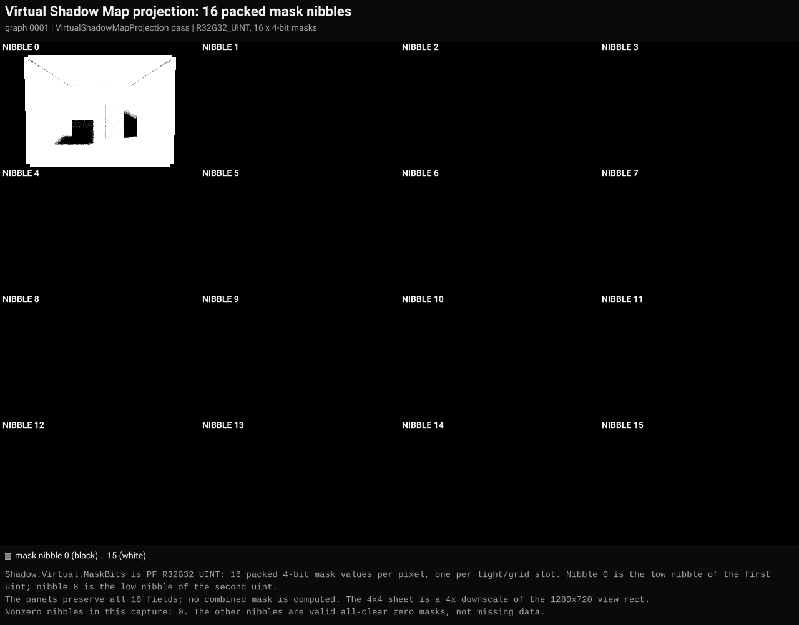
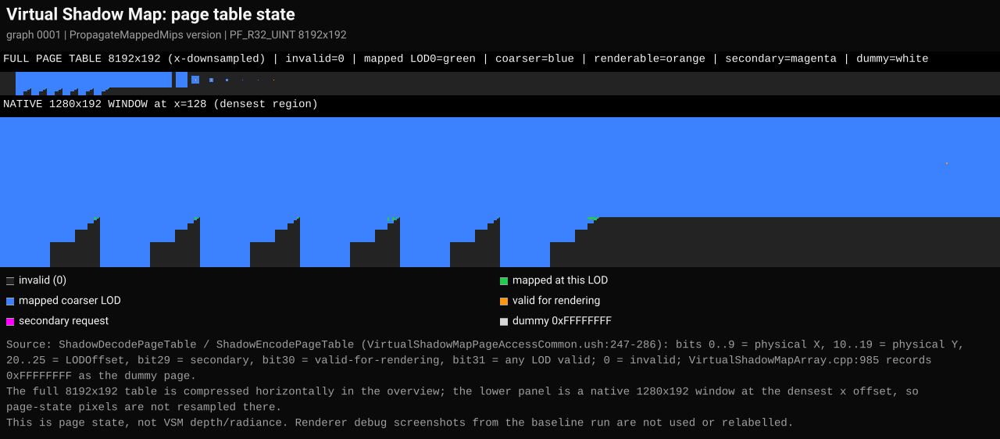
Sky, emissive transport, and the actual composite contract
The engine's pass labels do not partition paths solely by bounce count. Deferred analytic lights evaluate a chosen set of point, spot, directional, and rect emitters at the camera-visible receiver, including both their diffuse and specular lobes. Lumen also supplies light arriving directly from the sky or an emissive surface, as well as light that has scattered through other surfaces. An unoccluded sky ray at the primary receiver is physically direct illumination even though its buffer belongs to a pass named diffuse indirect.
For the opaque Default Lit baseline, define and as the deferred analytic-light diffuse and specular results, as the screen-probe diffuse response before the receiver's diffuse color, as rough-probe specular, as dedicated reflection radiance, as the integrated environment-BRDF factor, and as the reflection roughness blend. The following unqualified light quantities are scene-linear, as in Part I. Ignoring debug scales, subsurface, and AO for one line, the practical composite is
LaTeX source
L_{\rm frame}\approx L_e+L_{a,d}+L_{a,s}+\rho_d D+
B_s\big[(1-\alpha_r)R_r+\alpha_rR_t\big].The actual shader stores view-pre-exposed values. Let and for each radiometric term . The stored composite therefore obeys
LaTeX source
L_{\rm frame}^{\mathrm{pre},v}\approx
L_e^{\mathrm{pre},v}+L_{a,d}^{\mathrm{pre},v}+L_{a,s}^{\mathrm{pre},v}
+\rho_d D^{\mathrm{pre},v}
+B_s\big[(1-\alpha_r)R_r^{\mathrm{pre},v}+\alpha_rR_t^{\mathrm{pre},v}\big].Material and blend factors remain dimensionless. Screen-probe tracing has already multiplied its radiance by View.PreExposure, and integration retains that scale; the composite does not multiply it again. Histories must first be converted to this current view scale. Card lighting has its own cached-lighting pre-exposure, removed at surface-cache lookup before the current view scale is applied. The fuller identities below are likewise written scene-linear; their shader forms use the corresponding consistently pre-exposed light values.
This is a description of pass ownership, not a new rendering equation. The terms are defined by which emitters, lobes, and representations their estimators cover. The same light transport cannot be independently added through two owners. For example, card direct irradiance at a secondary hit is a legitimate input to indirect illumination at the primary receiver; it is not the primary pixel's already accumulated analytic-light result.
The normalization of is explicit in the shader: LumenScreenProbeGather.usf:1459 multiplies integrated diffuse lighting by Diffuse_Lambert(1), and :1494-1495 writes it for a later diffuse-color multiplication. Thus this screen output is an irradiance-over- response. It differs from the card DirectLighting and IndirectLighting atlases, which store irradiance. Dividing the screen output by again would be wrong.
The fuller legacy composite applies an occlusion factor and the enabled energy-preservation factor to diffuse, adds the separate short-range GI contribution, and applies specular occlusion to the rough-probe branch before blending (DiffuseIndirectComposite.usf:635-653). In schematic notation,
LaTeX source
L_{d,L}=\big(\rho_d D+D_{\rm back}\big)O_dP_d+\rho_dD_{\rm short},\qquad
L_{s,L}=B_s\big[(1-\alpha_r)O_sR_r+\alpha_rR_t\big].Here is a material-specific backface response, so it must not be interpreted as the same unit-albedo Lambert buffer. is the already normalized short-range GI response. AO factors and energy terms are shader approximations and are not new independent light sources. Clear coat and Substrate use their corresponding layer/closure contracts instead of this scalar baseline.
There is a source-level guard against a second reflection/sky composite: RenderDeferredReflectionsAndSkyLighting skips a view with Lumen GI because its specular has already been composited (IndirectLightRendering.cpp:2249-2252). The separate dynamic skylight path is gated through ShouldRenderDeferredDynamicSkyLight and AnyViewHasGIMethodSupportingDFAO (:2203-2224). Therefore it is incorrect to add a full conventional diffuse skylight and reflection-environment result on top of the regular Lumen composite merely because those features have separate source files. Standalone Lumen reflections with another GI method follow a different branch (:2254-2270).
AO is likewise not interchangeable with a shadow ray: it summarizes local directional occlusion and may include artistic remapping. A VSM factor concerns visibility to a particular analytic light; a Lumen ray concerns visibility along an indirect, emissive, or environment direction. Their domains overlap geometrically but their factors are applied at different points in the transport estimate.
Material and lighting branches beyond the baseline
The following branches preserve the frame structure but require different scattering models or additional passes. They are distinct implementation tasks; substituting Lambert plus isotropic GGX for them changes the material model.
Material and lighting branches beyond the baselineColumns: Branch · Required behavior and source entry
| Branch | Required behavior and source entry |
|---|---|
| Clear coat | Evaluate the upper interface and transmitted lower-layer reflection, with different roughness/normal data. ShadingModels.ush dispatches the direct model; DiffuseIndirectComposite.usf:246-257 selects ClearCoatLayerCombine for indirect specular. |
| Subsurface and skin | Separate scatterable diffuse from view-dependent surface specular; spatial diffusion/recombination is not a local BRDF integral. LightAccumulator.ush:58-178 carries the split/encoded scattering signal; the renderer schedules subsurface after opaque lighting. |
| Two-sided foliage | Carry a backface diffuse/transmission response rather than using an absolute cosine in an otherwise one-sided Lambert model. The Lumen composite has an explicit backface input. |
| Hair | Use the strand scattering and transmittance representation and specialized lighting path. The standard G-buffer's isotropic surface normal and roughness do not describe a fiber. |
| Anisotropic surfaces | Preserve a tangent frame and use distinct tangent/bitangent widths; a single world normal cannot encode lobe orientation. The default layout machinery and shader permutations determine where tangent data comes from. |
| Translucency and volumes | Evaluate ordered transmission or volume scattering, often at lower-resolution lighting grids, and composite using transmittance. They are not ordinary opaque G-buffer pixels. |
| Substrate | Decode and evaluate the material's closures and layer weights; byte budget, classification, and rough-refraction passes are part of the representation, as described above. |
| Alternative direct-light estimators | Tiled/clustered light lists alter traversal of candidate lights; stochastic light estimators require their own sampling, reuse, and reconstruction logic. Their enabled state must be recorded for a capture before attributing cost or buffers to the classic per-light path. |
This chapter derives the opaque Default Lit direct-light/VSM baseline and explains its connections to the other branches. The source entries identify where extensions join; they do not make the baseline a replacement for every scattering model in the engine.
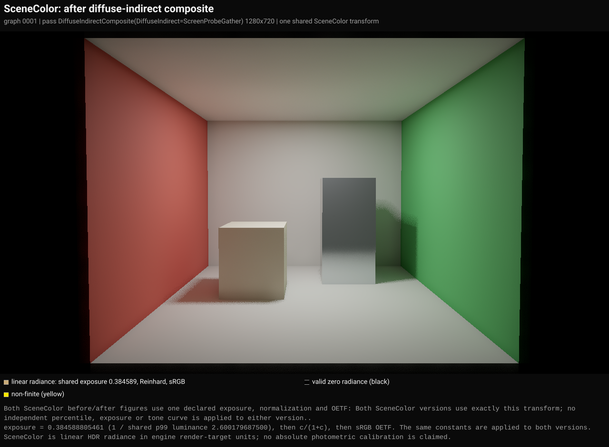
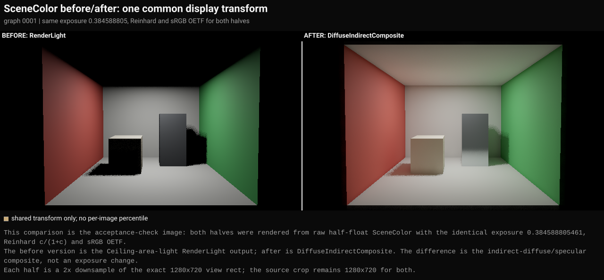
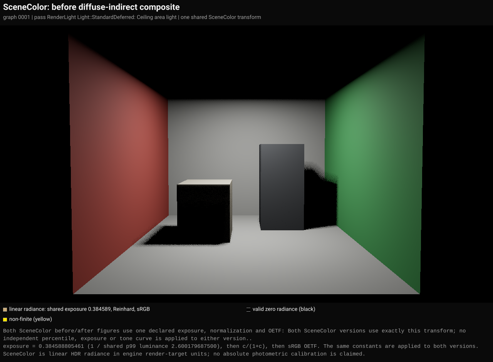
From-scratch implementation order
A practical implementation can be staged so that each stage produces a diagnosable image:
- G-buffer and base pass. Implement the parameter mapping, the 10:10:10:2 normal target, the 8-bit material target, the base-color target, and the depth target. Debug-view each channel. Verify that
F0and diffuse albedo reconstructed from the G-buffer match the CPU material evaluation for a set of known materials. - Direct directional light. Implement the world-space normal decode,
F0 = lerp(0.08*Specular, BaseColor, Metallic),albedo = BaseColor*(1-Metallic), the GGXD*Vis*Flobe, the Lambert diffuse lobe, and the energy split. A white furnace test and a roughness sweep expose missing1-E/Wterms quickly. - Point and spot lights. Add the radius-window mask,
1/(d²+1)falloff, and the spot cone. Compare a shrinking rect with a punctual source whose radiant intensity matches it in the tested receiver direction. Equal total flux alone does not equate a Lambertian area emitter with an isotropic point source at all angles. This is the direct test for the inverse-square double-count bug. - Rect lights. Implement the polygon vector-irradiance integral and the LTC specular path. Verify that the result is continuous as the receiver moves toward the rect plane, and that the barn-door/facing masks do not introduce a second distance falloff.
- Exposure and composition. Apply pre-exposure once at the end of the light pass, then divide it out in the tonemapper. Test that changing exposure changes the final image brightness but not the relative direct/indirect balance. Implement the compositing equation with an explicit "direct already includes specular" flag.
- VSM page table and clipmap. Start with a single directional clipmap level, a 128×128 page table, and a physical pool of a few pages. Visualize page IDs and physical addresses. Verify that a triangle rendered into one page lands at the expected physical texel.
- Marking and allocation. Add the per-pixel page marking, receiver masks, LRU allocation, and cache age. Move the camera and visualize page requests, allocations, and invalidations. Check that a page that stops being requested is reused rather than leaked.
- VSM raster and HZB. Add the per-page draw-command culling, the page-space vertex transform, the
InterlockedMaxdepth write, and the HZB reduction. Compare a VSM shadow against a conventional shadow map for a static scene; they should agree except for filtering and bias. - SMRT. Add source-radius sampling, the ray marcher, slope extrapolation, and the miss-ratio visibility estimate. Compare 1 ray, 7 rays, and a high-ray reference for a known occluder; the 7-ray result should converge toward the reference while remaining noisy in a single frame.
- Invalidation and caching. Add moved/deformed instance invalidation, static/dynamic page separation, and the invalidation budget. Test with a moving object crossing page boundaries and with a camera move that changes the clipmap Z range.
These are functional and visual checks, not performance measurements. They do not require a GPU capture and do not assert frame times.
Lumen implementation and the transport it approximates
The implementation references in this chapter target Unreal Engine 5.8.1, commit 71fe36aac5a8df5ccd66c763ffc902b29b6a9c43. Code paths are relative to the engine repository root. A source default is the value before project settings, scalability, device profiles, post-process settings, and shader permutations; the experiment manifest records the active configuration. Card capture means the engine's material-rendering pass, while a GPU dump means an exported record of an actual frame.
From the transport operator to stored quantities
Use the earlier light-to-sensor path convention and outward local directions. For an opaque one-sided surface in vacuum, with incoming radiance defined by the first visible hit,
LaTeX source
L_o(x,\omega_o)=L_e(x,\omega_o)+\int_{\Omega^+(n_g)} f_s(x,\omega_i,\omega_o)L_i(x,\omega_i)(n_g\cdot\omega_i)\,d\sigma(\omega_i).The transport operator remains ; it is not reused as a transmittance symbol. Material shaders use shading normals , which is a deliberate distinction from the geometric normal in the physical area measure. For a Lambertian response,
LaTeX source
E(x)=\int_{\Omega^+(n_g)}L_i(x,\omega_i)(n_g\cdot\omega_i)\,d\sigma(\omega_i),\qquad L_o=L_e+\frac{\rho}{\pi}E.Lumen's card combine preserves these quantity types in a common cached-lighting pre-exposure scale: DirectLighting and IndirectLighting contain pre-exposed irradiance; FinalLighting contains pre-exposed outgoing diffuse radiance (Engine/Shaders/Private/Lumen/SurfaceCache/LumenSurfaceCache.ush:50-60). The captured effective albedo can include a fully rough specular approximation, so it is not always the original material's diffuse base color. This projects a directional material into a cheaper response before subsequent rays reuse it.
Distinguish five mappings:
- Card addressing maps a surface-cache point through card coordinates, a virtual page entry, and a physical atlas rectangle.
- The equal-area spherical map converts directions to a square directional texture. It is distinct from the ordinary octahedral encoding used for two-component normals.
- Screen-probe interpolation transports cached directional lighting from nearby depth samples to a visible pixel.
- World-probe interpolation combines directional radiance from clipmap probes, with depth/parallax handling.
- Cosine convolution converts incident radiance into irradiance; a material/BRDF multiplication then converts irradiance into outgoing radiance.
These operations approximate different parts of . Geometry tracing, radiance storage, angular integration, spatial reconstruction, and temporal reuse are separate choices. A hardware triangle hit can still read approximate diffuse radiance from a card atlas; hardware ray tracing alone does not restore the full path-tracing integral.
Dependency order and the staggered lighting update
The major dependencies are scene/page update and material capture, card lighting, screen-probe final gather, dedicated reflections, and composite. Async scheduling can overlap independent work; it cannot remove read-after-write dependencies. RenderLumenSceneLighting calls direct card lighting and then radiosity (LumenSceneLighting.cpp:293-305). Direct lighting already calls the final-lighting combine before radiosity (LumenSceneDirectLighting.cpp:2608-2616). Radiosity therefore reads the available final atlas, which can contain fresh direct lighting and retained indirect lighting on the updated subset. It is not uniformly a frozen previous-frame image.
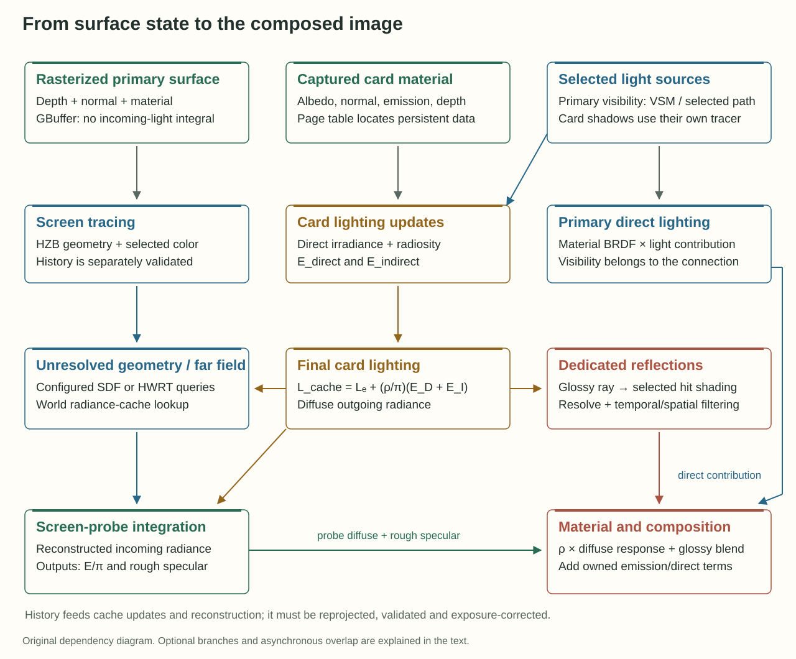
A useful simplified recurrence makes the partial updates explicit. Let select the card texels updated at time , let be emission plus directly evaluated card illumination, and let be the discretized secondary transport/convolution. Then an explanatory update is
LaTeX source
\ell_{t+1}=(I-Q_t)\ell_t+Q_t\big[b_t+K_h\ell_{\rm available}\big].Temporal filtering, separately budgeted direct and indirect lists, and the intermediate combines modify this recurrence in the real renderer. It explains stale-cache propagation without falsely equating the implementation with a simultaneous Jacobi iteration or an unbiased finite-bounce estimator.
Path ownership at the visible receiver
The main deferred analytic-light pass already adds diffuse and specular response for its explicit lights. Lumen's gather also sees the sky and emissive surfaces directly, as well as light that has scattered at other surfaces. Consequently a buffer named indirect is not a synonym for paths with at least two scattering events. The previous chapter's composite contract partitions estimator ownership and primary BSDF lobes, rather than software pass names alone.
The dedicated reflection signal and the rough screen-probe signal estimate overlapping specular illumination. For the ordinary Lumen reflection branch they are blended, not both added in full:
LaTeX source
\alpha_r=\operatorname{saturate}\!\left(\frac{r_{\max}-r}{\Delta r}\right),\qquad
R=(1-\alpha_r)R_{\rm rough}+\alpha_rR_{\rm traced}.The actual helper also handles backface-diffuse materials and alternate SSR/clear-coat branches (LumenReflectionsCombine.ush:12-35; DiffuseIndirectComposite.usf:227-257). The ordinary formula is a representation blend, not a physical discontinuity in the BRDF.
At a secondary card hit, the cached direct irradiance is valid indirect illumination at the primary receiver. Its radiance is
LaTeX source
L_{\rm card}=L_{e,\rm card}+\frac{\rho_{\rm card}}{\pi}
\big(E_{\rm direct,card}+E_{\rm gather,card}\big).It must not be removed because the primary pixel has a direct-light result. Conversely, the screen-probe output DiffuseIndirect has already been multiplied by (LumenScreenProbeGather.usf:1459,1494-1495); its later multiplication by the receiver's diffuse color must not introduce another .
Card mesh build: the offline surface parameterization
A Lumen card is an oriented rectangle of the surface cache. It is not a runtime-generated proxy from the previous frame's depth buffer. Card geometry is built when the mesh's card representation is built (normally as part of the mesh build/DDC path), then stored in FCardRepresentationData::MeshCardsBuildData and consumed by the renderer at runtime. The runtime FLumenSceneData::AddMeshCards reads that build data for a single mesh, or builds merged-instance/heightfield cards on the fly (Engine/Source/Runtime/Renderer/Private/Lumen/LumenMeshCards.cpp:887-925).
The builder works in six axis-aligned directions. For each direction it creates a voxel grid in a direction-specific basis, casts rays through the mesh, and produces surfels (surface samples) from the hits. The target voxel size is 10 object-space units, clamped to the configured maximum voxel count, so the grid adapts to the mesh's bounding-box size (Engine/Source/Developer/MeshUtilities/Private/MeshCardRepresentationUtilities.cpp:599-618).
For each direction and each (x, y) column, the builder casts 32 stratified rays through the hemisphere (the surfel-visibility stage uses 32; the initial hit stage uses 32 jittered primary rays per cell). The ray jitter is a 2D low-discrepancy pair built from a stratified x coordinate and a bit-reversed y coordinate, and the ray origin is pulled back by two voxel sizes so it starts outside the geometry (MeshCardRepresentationUtilities.cpp:360-392). The trace advances through repeated front-most hits. A hit produces a surfel only if N dot (-D) >= NormalTreshold, i.e. the surface is sufficiently front-facing to the axis direction; two-sided hits flip the normal. The hit's cell-Z and the previous hit's cell-Z are used to avoid spawning surfels in the same depth gap (:427-461).
Surfel candidates are sorted by cell-Z, grouped into continuous spans with the same MinRayZ, and each span becomes one surfel. The surfel's visibility is then estimated by tracing rays over the hemisphere from the surfel position, with a 0.1 surface bias. A surfel is rejected as "inside geometry" when more than 80% of the rays hit and more than 20% of those hits are backfaces (MeshCardRepresentationUtilities.cpp:264-344, :514-550).
Clustering is the step that turns surfels into cards. For each axis direction, the builder starts with a near-plane-0 cluster, accepts it if its weighted coverage and density pass the thresholds, then repeatedly searches near planes for the best additional cluster until no valid cluster remains (MeshCardRepresentationUtilities.cpp:907-960). The thresholds are a minimum density of GetMinDensity() / 3, a minimum cluster coverage of 15, and an outer-cluster coverage of half the average face area (:679-684). Clusters are sorted by weighted coverage, and the global count is capped by MaxLumenMeshCards; the smallest-coverage cluster is removed until the cap is met (:840-900).
Each surviving cluster is serialized as an OBB: cluster bounds are converted from voxel coordinates to world units, expanded by a small margin, clamped to the mesh-card bounds, and stored with an origin, extent, three axes, and an axis-aligned direction index (MeshCardRepresentationUtilities.cpp:986-1012). At runtime, FLumenCard::Initialize copies that OBB, computes the card's aspect-ratio resolution bias, and creates a card-sharing ID from the custom ID, axis direction, and resolution bias (Engine/Source/Runtime/Renderer/Private/Lumen/LumenMeshCards.cpp:1283-1315). A mesh instance's card set keeps a bitmask of cards per axis direction, so a ray can cheaply test only cards facing the relevant way (LumenMeshCards.cpp:1597-1611).
A compact pseudocode for the offline stage is:
BuildMeshCards(mesh):
bounds = mesh.bounds
for direction in six_axis_directions:
grid = voxel_grid(bounds, direction, target_voxel=10, max_voxels)
for each column (x, y) in grid:
for sample in 32 stratified/jittered rays:
advance ray through front-most hits
if hit is front-facing and depth gap is valid:
emit surfel(position, normal, cell_z, min_ray_z)
keep visible surfels (hemisphere ray test)
clusters = greedy_near_plane_clusters(surfels, min_coverage, min_density)
clusters = limit_by_weighted_coverage(clusters, max_cards)
for cluster in clusters:
emit OBB(center, extent, axes, axis_direction)The approximation is a bounded set of oriented surface parameterizations with captured depth, normal, and material data. It is not a replacement triangle scene made only of planar rectangles. Rays find geometry through the selected screen-depth, signed-distance-field, or hardware ray-tracing representation, then map a hit to available surface-cache data. Limited card count, capture directions, resolution, and depth layers can leave material/lighting coverage missing or inaccurate even when the geometry tracer finds the correct hit. Increasing ray samples cannot repair missing cache coverage. The six-direction clustering and coverage budget make material capture and lookup tractable across many frames and instances.
Surface cache: virtual pages, physical atlas, allocation, priority, and transforms
The surface cache is a virtual texture with a fixed physical atlas. Its constants are deliberately small and shared between C++ and shaders:
PhysicalPageSize = 128texels.VirtualPageSize = 127: the difference of one texel is distributed as half-texel overlap at page boundaries; it is not a one-texel interior border on each side. The addressing expansion preserves bilinear continuity.MinResLevel = 3(8 texels),MaxResLevel = 11(2048 texels).SubAllocationResLevel = 7(128 texels, the physical page size).CardTileSize = 8texels, used by direct lighting, radiosity, and the update contexts.
These are in Engine/Source/Runtime/Renderer/Private/Lumen/Lumen.h:45-53.
The physical atlas size is not a fixed 4096 constant, despite the console-variable default. It is:
A_pages = clamp(ceil(CVarLumenSceneSurfaceCacheAtlasSize / 128) * SurfaceCacheResolution, 1, 64)
and the atlas is A_pages * 128 texels on a side (Engine/Source/Runtime/Renderer/Private/Lumen/LumenScene.cpp:363-373). CVarLumenSceneSurfaceCacheAtlasSize defaults to 4096 (LumenScene.cpp:126-131), so at SurfaceCacheResolution = 1 the default is 32 pages per axis and a 4096x4096 atlas. The clamp allows up to 64 pages, i.e. 8192x8192. When the atlas size, compression mode, lighting format, or cached-lighting pre-exposure changes, UpdateAtlasSize removes all mesh cards and reinitializes the allocator (LumenScene.cpp:1571-1591).
Each card mip has a page-table span. For resolution level r, the card's aspect-ratio bias can make the X and Y levels differ. If either level is above 7, the allocation is page-aligned: pages = 2^(level - 7) per axis, resolution = pages * 127 (because the border is virtual), and the physical page resolution is 128. If both levels are at or below 7, the allocation is a single sub-allocated page with resolution 2^level and page resolution equal to that resolution (Engine/Source/Runtime/Renderer/Private/Lumen/LumenMeshCards.cpp:1380-1412). This is why a small card can occupy an 8x8 corner of a 128x128 physical page, while a 2048-texel card occupies a 16x16 block of pages.
The card page's CPU record keeps both physical and sampling information: the physical page coordinate, the physical atlas rect, a SamplePageIndex that may point to a coarser fallback page, atlas bias and card res-level values, the card index, the mip level, the card UV rect, and the sub-allocation size (Engine/Source/Runtime/Renderer/Private/Lumen/LumenSceneData.h:565-605). The GPU page table is an 8-byte record per page: packed 12-bit X bias, 12-bit Y bias, 4-bit X res level, 4-bit Y res level, and a 32-bit sample page index (Engine/Source/Runtime/Renderer/Private/Lumen/LumenScene.cpp:725-758). The page-table upload is a scatter upload; it is not a texture, so a page-table entry can be updated without touching the physical atlas.
The GPU-side page data is 5 float4s per page (80 bytes). It carries the card index, the res-level page-table offset, the physical size in texels, the card UV rect, the physical atlas UV rect, the card-UV-to-texel scale, the res-level tile size, and the last direct/indirect update frame indices plus temporal indices (Engine/Source/Runtime/Renderer/Private/Lumen/LumenScene.cpp:321-359; Engine/Shaders/Private/Lumen/LumenCardCommon.ush:137-199). The page-table entry is intentionally small; the card-page data is the richer record used by lighting and sampling.
Allocation and eviction
The physical allocator is a page bitmap plus a set of bin allocators for sub-page allocations. A full page is 128x128. A sub-allocation is routed to a bin keyed by element size; the bin tracks a bitfield of free sub-slots inside each physical page (Engine/Source/Runtime/Renderer/Private/Lumen/LumenScene.cpp:538-608). A full-page allocation simply finds the first zero bit in the atlas page bitmap. A sub-allocation finds a bin, allocates a physical page for that bin if needed, then allocates a sub-slot. Both paths produce a PhysicalPageCoord and a PhysicalAtlasRect (LumenScene.cpp:577-608).
Eviction is least-recently-used over unlocked pages. UnlockedAllocationHeap is keyed by the frame index at which the page was last used. EvictOldestAllocation only evicts when LastFrameUsed + MaxFramesSinceLastUsed <= currentFeedbackFrame (LumenScene.cpp:2151-2170). Locked pages are the always-resident low-resolution pages; they are not in the unlocked heap. When a card changes its locked mip, ReallocVirtualSurface moves its pages between the locked and unlocked states (LumenScene.cpp:1731-1768).
Page mapping is separate from allocation. MapSurfaceCachePage allocates a physical rect, writes PhysicalPageCoord and PhysicalAtlasRect, points SamplePageIndex at itself, computes the atlas bias in units of MinCardResolution (8), copies the mip's res levels, and adds the page to LastCapturedPageHeap (LumenScene.cpp:1594-1631). If a higher-resolution page is later unmapped, UpdateCardMipMapHierarchy copies the parent page's sample index, bias, and res levels into the child entry, so sampling falls back to the coarser page instead of returning black (LumenScene.cpp:1930-1967). That fallback is essential: a card can be partially resident.
Which pages get requested and captured
The renderer does not capture every card every frame. It computes a desired resolution from the card's projected size:
MaxProjectedSize = min(CardTexelDensity * MaxExtent * ResolutionScale / ViewerDistance, CardMaxTexelDensity * MaxExtent)
for near-field cards, where CardTexelDensity is 100 * SurfaceCacheResolution by default and CardMaxTexelDensity is 0.2 texels per world unit (Engine/Source/Runtime/Renderer/Private/Lumen/LumenSceneGPUDrivenUpdate.cpp:86-89, :17-22; LumenSceneRendering.cpp:149-155). Far-field cards use a constant texel density (LumenSceneRendering.cpp:764-769). The desired resolution is rounded up to a power of two and converted to a mip level with FloorLog2, clamped to CardMaxResolution (512 by default, halved in fast-camera mode) and to the minimum resolution (4 by default) (LumenSceneRendering.cpp:157-159, :297-305, :781-783; LumenSceneGPUDrivenUpdate.cpp:10-21, :101-115).
A request is generated when the desired level differs from the level used at the last successful allocation. Reallocation requests are deliberately de-prioritized relative to first-time captures by adding up to 2500 world units to the distance, depending on how many mip levels changed (LumenSceneRendering.cpp:793-802). The request's distance is then quantized into one of 16 logarithmic buckets: bin = min(floor(log2(max(1, distance - 1000))), 15) (Engine/Source/Runtime/Renderer/Private/Lumen/Lumen.cpp:283-287).
Requests are accepted in distance-bucket order until the per-frame capture budget is reached. The default budget is 300 card pages per frame, doubled in fast-camera mode; the default capture-refresh fraction is 12.5% of the capture atlas (LumenSceneRendering.cpp:104-110, :126-132, :308-310). The selection loop walks buckets from nearest to farthest, partially accepts the last bucket, then walks the per-mesh-card tasks and accepts only requests in buckets at or below that cutoff (LumenSceneRendering.cpp:1591-1646). This is a bounded, nearest-first approximation, not a global optimal scheduler.
There is a second source of requests: surface-cache feedback. When a screen probe, reflection, or radiosity ray samples a card texel, the sampling code writes a feedback element containing the card index, desired resolution, local page coordinate, and hit count. The CPU-side UpdateSurfaceCacheFeedback only considers pages with more than FeedbackMinPageHits; existing unlocked pages get their LRU time refreshed, and missing pages get a request whose distance is increased by 2500 to 5000 units depending on normalized hit count, so feedback pages are less important than the always-resident low-res pages (Engine/Source/Runtime/Renderer/Private/Lumen/LumenSurfaceCacheFeedback.cpp:302-383). Feedback is how the cache learns that a card is being seen at high resolution even if the camera-distance heuristic under-resolved it.
Capture atlas and page transforms
Captured pages are rendered into a temporary capture atlas, then copied into the persistent atlas. The capture atlas is smaller than the persistent atlas: C_pages = ceil(A_pages / sqrt(CardCaptureFactor)), at least the number of pages needed for one maximum-resolution card, and no larger than the full atlas. CardCaptureFactor defaults to 64, so the default 32-page atlas gets a 4x4-page (512x512) capture atlas (LumenSceneRendering.cpp:2412-2443). The capture atlas has separate albedo, normal, emissive, and depth targets; the persistent atlas has separate surface-cache layers.
The transforms are best understood as a chain:
- Card UV
(u, v)in[0,1]^2addresses the logical card. - Page-local card UV rect
CardUVRectmaps the page's portion of the card. For an interior page edge, the rect is expanded by half a physical texel so bilinear taps cross the page boundary correctly. The code computes a border offset in card-UV units from0.5 * (128 - 127) = 0.5physical texels, scaled by the page's card-UV span and divided by 128 (LumenScene.cpp:1807-1831). - Physical atlas UV rect maps the page to its atlas location:
PhysicalAtlasRect.Min / AtlasSizetoPhysicalAtlasRect.Max / AtlasSize(LumenScene.cpp:341-344). - The card-UV-to-texel scale is
(CardUVRect.z - CardUVRect.x) / SizeInTexelsXand similarly for Y (LumenScene.cpp:346-347). The shader reconstructs the same quantities inGetLumenCardPageDataand usesPhysicalAtlasCoord = PhysicalAtlasUVRect.xy * PhysicalAtlasSize + 0.5(Engine/Shaders/Private/Lumen/LumenCardCommon.ush:170-199).
For capture, FCardPageRenderData::CacheProjectionMatrix turns the page's CardUVRect into an off-center reversed-Z orthographic projection. It maps the page's sub-rectangle of the card into the capture rect, with the near plane at 0 and the far plane at twice the card's Z extent (Engine/Source/Runtime/Renderer/Private/Lumen/LumenSceneCardCapture.cpp:691-717). The capture view is placed at the card center plus FaceLocalExtent.Z * AxisZ, with columns (AxisX, AxisY, -AxisZ), so the capture view's local space is the card space. The viewport is the capture atlas rect (LumenSceneCardCapture.cpp:720-758). This is why the captured normal can be stored in card-space XY: the capture camera is aligned to the card.
Allocation/priority pseudocode
RequestPages(cards, camera):
for card in visible_cards:
desired = clamp(pow2_ceil(min(density*extent/distance, max_density*extent)), 8, max_res)
if desired != card.last_allocated_level:
priority_distance = distance
if card.was_visible:
priority_distance += 2500 * (1 - clamp((abs(level_delta)+1)/3,0,1))
emit request(card, desired, bucket(priority_distance))
AcceptRequests(requests, budget):
histogram = count requests by bucket
walk buckets nearest-first until cumulative >= budget
cutoff_bucket = bucket where budget is crossed
accept requests with bucket < cutoff_bucket
accept only the remaining budget from cutoff_bucket
for each accepted request:
if locked low-res allocation:
while no physical space: evict LRU page older than 2 frames
if still no space: lower resolution
map pages, add capture records, copy from self/shared card if possible
else:
if page is unmapped: map one page, add capture record
process invalidation heap
refresh a fraction of existing pages
evict pages unused for too longThe important implementation detail is that the budget is in card pages, but the cost is in texels and draws. A 2048-texel card consumes 16x16 = 256 physical pages, while an 8x8 card consumes one sub-slot. The capture budget counts card pages, and the capture atlas is sized to hold a working set, not the whole persistent atlas. This is a deliberate approximation: a frame can be dominated by a few high-resolution cards, and the nearest-first bucket order is the only global prioritization.
Implementation checks to run. Build a synthetic scene with three cards at 1 m, 100 m, and 1500 m. Assert that the desired mip levels decrease monotonically with distance and match the rounded power-of-two formula. Allocate and free a repeating pattern of 8x8, 16x16, 64x64, and 128x128 cards; assert no overlapping PhysicalAtlasRects and that the free-list returns to its initial state after all frees. Force atlas pressure and assert that unlocked pages are evicted in increasing last-used-frame order, while locked pages survive. Move a card from mip 8 to 6 and assert its page-table SamplePageIndex still resolves to a mapped parent when the high-resolution pages are evicted. Sample a page at its exact edge and assert bilinear taps do not read a neighboring card.
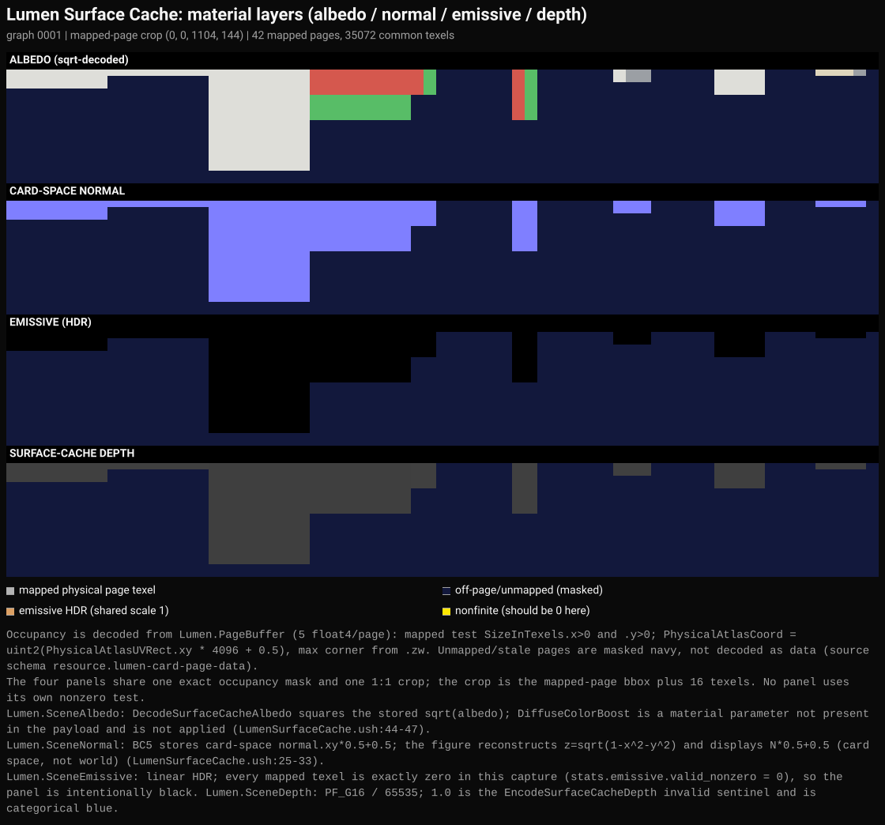
Runtime card capture: material into atlas
Runtime card capture renders the mesh into the capture atlas with the material's own shaders. The mesh pass is EMeshPass::LumenCardCapture; the mesh processor accepts a mesh batch if it is usable for material or for Lumen surface-cache capture, is in the main pass, and affects dynamic indirect lighting (Engine/Source/Runtime/Renderer/Private/Lumen/LumenSceneCardCapture.cpp:413-421). Nanite meshes use a separate Nanite Lumen card pass and packed views; non-Nanite meshes use cached mesh draw commands (LumenSceneCardCapture.cpp:760-941; LumenSceneRendering.cpp:2861-2918, :2925-3095).
The capture render targets are three color targets plus depth-stencil:
- Target 0: albedo,
PF_R8G8B8A8, alpha carries opacity. The material base pass storessqrt(DiffuseColor)so the persistent atlas can store a gamma-2-encoded albedo and decode it by squaring (Engine/Source/Runtime/Renderer/Private/Lumen/LumenSceneCardCapture.cpp:486-501;Engine/Shaders/Private/Lumen/LumenCardBasePass.ush:145;Engine/Shaders/Private/Lumen/SurfaceCache/LumenSurfaceCache.ush:44-48). - Target 1: normal,
PF_R8G8B8A8, but only XY are used. The normal is transformed into card space by the capture view and stored asxy * 0.5 + 0.5; Z is reconstructed assqrt(1 - x^2 - y^2)and rotated back byWorldToLocalRotation(LumenCardBasePass.ush:134-146;LumenSurfaceCache.ush:26-39). - Target 2: emissive,
PF_FloatR11G11B10, multiplied by the cached lighting pre-exposure (LumenCardBasePass.ush:147). - Depth-stencil:
PF_DepthStencil, reversed-Z orthographic, written by the card pass (LumenSceneCardCapture.cpp:523-534).
The capture atlas is allocated at GetCardCaptureAtlasSize(): the capture-page count times 128 (LumenSceneRendering.cpp:2665-2668). For each page to render, the pass sets the viewport to CardCaptureAtlasRect, submits the cached draws, and uses an instance-culling context when GPU Scene is enabled (LumenSceneRendering.cpp:2861-2918). The capture records are ordered so a page that does not need a render can still be copied or resampled.
Before this frame's capture, ResampleLumenCards reads the previous persistent atlas for pages that are being reallocated. This is needed because a card can move to a different mip or a different physical page, and its lighting history should not be discarded. The resample writes albedo/normal/emissive/depth into the capture atlas and copies direct lighting, radiosity, radiosity frame count, and the tile shadow downsample factors into a resampled lighting atlas (LumenSceneRendering.cpp:1789-1974). If a card was previously allocated and only its resolution changed, the code can copy from itself; if a matching shared card exists, it can copy from that card with an X-flip (LumenSceneRendering.cpp:979-1037). This is the card-sharing path: identical instances share a card allocation instead of recapturing the same material.
After the material capture, the pass optionally dilates one texel for cards whose dilation mode requests it (LumenSceneRendering.cpp:3097-3103). Dilation is off by default (r.LumenScene.SurfaceCache.DilationMode = 0), because dilated data may be wrong; it is a trade between "possibly incorrect lighting" and "no lighting" (Engine/Source/Runtime/Renderer/Private/Lumen/LumenSurfaceCache.cpp:14-25). Finally, UpdateLumenSurfaceCacheAtlas copies the capture atlas into the persistent albedo/normal/emissive/depth atlases and copies the resampled direct/indirect lighting into the persistent lighting atlases (LumenSceneRendering.cpp:3105-3112).
A compact capture pseudocode:
CapturePages(pages):
capture_atlas = allocate(512x512 default)
resampled_lighting = allocate(capture_atlas size)
for page in pages:
if page.needs_render:
view = ortho_view(card_obb, page.card_uv_rect, page.capture_rect)
bind capture_atlas (albedo, normal, emissive, depth)
draw material meshes intersecting card OBB
if page.has_previous_lighting:
resample previous direct/indirect/frames into resampled_lighting at new rect
dilate requested pages
copy capture_atlas rects into persistent surface-cache atlases
copy resampled_lighting rects into persistent lighting atlasesThe approximation here is material-to-texel: the card captures the material at the card's resolution, not at the screen's resolution. A 128-texel page that covers a large wall will be magnified if the camera gets close, and a 2048-texel card that is far away wastes memory. The runtime later allocates resolution from projected size, so this is a feedback loop, not a fixed budget. The card also captures only the material's direct surface properties (albedo, normal, emissive), not its full BSDF; the surface cache is a diffuse-plus-fully-rough representation. That is a deliberate approximation: the final card lighting multiplies irradiance by a Lambertian albedo and adds emissive, and fully rough specular is folded into the diffuse color during the material base pass (LumenCardBasePass.ush:102-147). Smooth specular is handled by the reflection passes, not by the card atlas.
Implementation checks to run. Render a card with a checker albedo and a known normal map. Read back the persistent albedo and normal at a set of card UVs; assert albedo decodes to the material color within the format's quantization and the normal reconstructs to the material normal in world space. Place a bright emissive quad on the card; assert the emissive atlas is non-zero and is scaled by the cached pre-exposure. Move a card from mip 8 to mip 9 and assert the resampled direct/indirect lighting is continuous across the old and new page rects. Force a card-sharing pair with an X-flipped instance and assert the copied card has the expected flipped UV orientation.
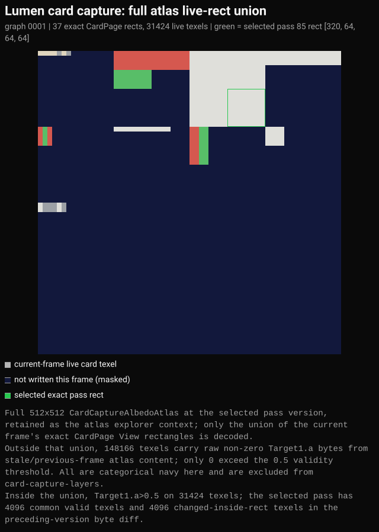
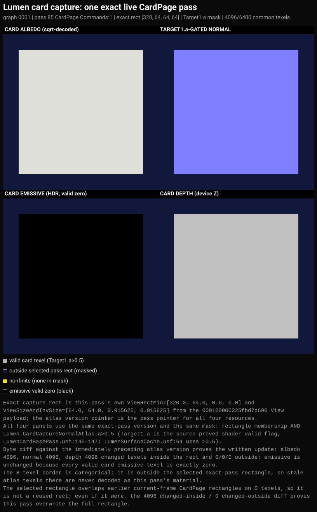
Direct lighting on cards
Direct lighting is rendered into Lumen.SceneDirectLighting, one texel per surface-cache texel. The format is Lumen::GetDirectLightingAtlasFormat(), which returns the current lighting data format; the default is PF_FloatR11G11B10 (Engine/Source/Runtime/Renderer/Private/Lumen/LumenSceneDirectLighting.cpp:203-211; Engine/Source/Runtime/Renderer/Private/Lumen/Lumen.cpp:45-53, :94-107). The value stored is irradiance, pre-exposed by the cached lighting pre-exposure, not final radiance (Engine/Shaders/Private/Lumen/LumenSceneDirectLighting.usf:163).
The direct-lighting pass is tile-based. It first splices card pages into 8x8 card tiles and builds a per-tile light list. FSpliceCardPagesIntoTilesCS emits a card-tile allocator and a card-tile array; FCalculateCardTileDepthRangesCS computes each tile's depth range; FBuildLightTilesCS intersects light influence volumes with tiles, optionally culling by the tile depth range; FCompactLightTilesCS compacts the per-tile light lists; FInitializeLightTileIndirectArgsCS builds indirect dispatch arguments (LumenSceneDirectLighting.cpp:308-685). The result is a set of LightTilesPerCardTile entries that can be consumed by the shading pass without each texel scanning all lights.
The light application is split into three stages:
- Attenuation shadow mask. A compute pass evaluates each light's attenuation (IES, light function, distance falloff) and writes a packed shadow mask and, for HWRT, a compacted shadow-trace list (
LumenSceneDirectLighting.cpp:2459-2499). This stage is a culling optimization: texels that are already dark from attenuation do not need a shadow ray. - Offscreen shadowing. For SWRT,
TraceDistanceFieldShadowstraces mesh SDFs, heightfields, and the global SDF; for HWRT,TraceLumenHardwareRayTracedDirectLightingShadowstraces the ray-tracing scene (LumenSceneDirectLighting.cpp:2519-2579). Shadow ray biases are separate per representation: mesh SDF, heightfield, global SDF, and HWRT (LumenSceneDirectLighting.cpp:118-143). - Apply lights.
LumenCardBatchDirectLightingCSruns one 8x8 group per card tile. Each texel reads its surface-cache depth, albedo, normal, and card UV, loops over the tile's culled lights, reads the shadow mask, and accumulatesGetIrradianceForLight(...) * ShadowFactor(Engine/Shaders/Private/Lumen/LumenSceneDirectLighting.usf:99-156). It also records whether the whole tile has uniform visibility to a light, which is used to set the tile's shadow downsample factor (LumenSceneDirectLighting.usf:152-161).
The per-light irradiance itself is delegated to Unreal's deferred-lighting utilities. GetIrradianceForLight builds an FDeferredLightData from the packed Lumen light and calls the same GetIrradianceForLight(LightData, Normal, Position, bSupportRectLight) used by deferred lighting (Engine/Shaders/Private/Lumen/LumenSceneDirectLighting.usf:17-41). This is important for area lights: the rect-light atlas path and the light's inverse-square/attenuation flags are set in LoadLumenLight, including bInverseSquared, bRadialLight, bSpotLight, and bRectLight (Engine/Shaders/Private/Lumen/LumenSceneDirectLighting.ush:239-256). A rect light is not multiplied by an extra inverse-square term on top of its own attenuation; the shared light-evaluation function owns that convention.
The light types are directional, point, spot, and rect (Engine/Source/Runtime/Renderer/Private/Lumen/LumenSceneLighting.h:147-156). Directional-light shadow data can be reused when available, while the offscreen visibility path handles uncovered cases; point/spot/rect lights use their attenuation and, when available, the light-function/IES atlas. The card light tile culling is per representation, so a point light's influence sphere is intersected with the card tile, not with the whole card.
The direct-lighting budget is controlled by a card-update context. SetLightingUpdateAtlasSize computes an update atlas of PhysicalAtlasSize / sqrt(UpdateFactor), rounded up to 8-texel tiles and at least one physical page (Engine/Source/Runtime/Renderer/Private/Lumen/LumenSceneLighting.cpp:98-124). The direct update factor defaults to 32 and the radiosity factor to 64; both are divided by the clamped LumenSceneLightingUpdateSpeed post-process setting (LumenSceneLighting.cpp:40-54, :583-584). The priority histogram is built from 4 * FramesSinceLastUpdated * UpdateSpeed, where UpdateSpeed is 1 / (1 + distance / firstClipmapExtent), doubled near the camera frustum, and forced to 4 for recently used high-resolution pages (Engine/Shaders/Private/Lumen/LumenSceneLighting.usf:105-178). Pages that have never been updated are put in the most important bucket (:169-173). A separate pass selects the largest bucket that fits the tile budget (:212-232), then BuildCardsUpdateListCS emits the page lists (:258-356). This is the mechanism that keeps direct lighting from re-rendering every card every frame.
Accuracy and cost. Direct lighting is the least approximated part of Lumen: it uses the actual light data and the actual shadow representation. The errors are in the shadow representation (SDF bias, missing thin occluders, screen/HWRT coverage) and in the card surface approximation (a card texel may not correspond to the actual triangle at that point). The cost is proportional to the number of culled light-tile pairs and the number of shadow traces, not to the number of lights times the number of card texels. The tile depth range and attenuation mask are the two main culling levers.
Implementation checks to run. Place a white card facing a directional light of irradiance E with no shadows; assert the direct atlas is E * N dot L within the format's quantization. Rotate the card and assert the result follows N dot L, not the light's full radiance. Place a point light at 100, 200, and 400 cm on axis, well inside a much larger attenuation radius, and compare against the actual regularized times radius-window formula. Only in the far-from-singularity, negligible-window limit should the ratios approach 1:1/4:1/16. Enable a rect light and compare against a brute-force area-light integral on a small card; assert there is no extra 1/r^2 factor. Turn shadows on and place an occluder between the light and the card; assert the shadow mask is zero in the occluded tile and that the tile's downsample factor is set. Force the direct update factor to 1 and then to 32; assert the same steady-state image after enough frames, with different per-frame update counts.
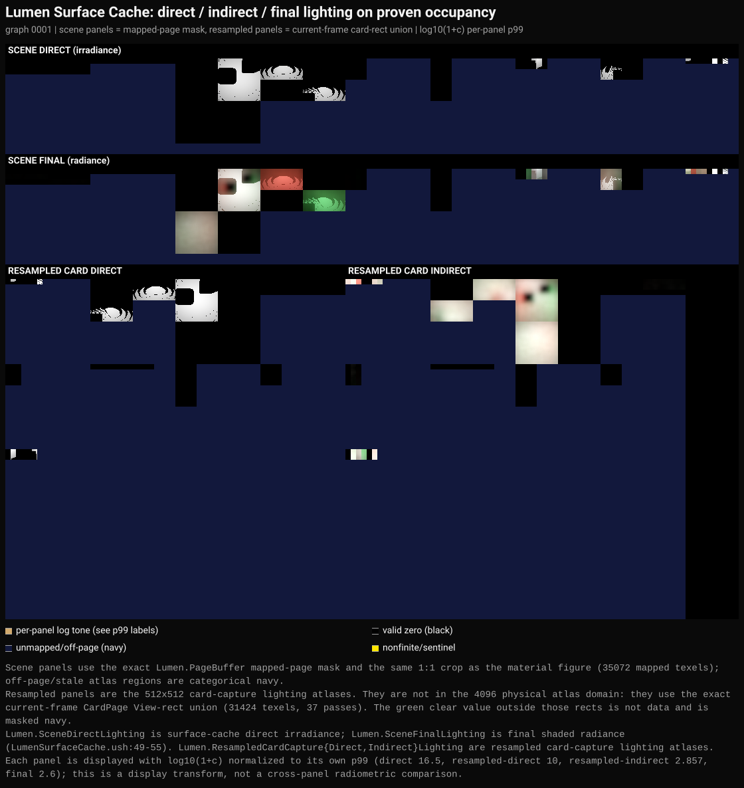
Radiosity on cards: multibounce diffuse from the surface cache
Radiosity is Lumen's card-space indirect diffuse gather. It is enabled when r.LumenScene.Radiosity != 0 and the view family has LumenSecondaryBounces (Engine/Source/Runtime/Renderer/Private/Lumen/LumenRadiosity.cpp:20-31, :239-243). It traces from probes placed on card texels, projects the hit radiance into two-band SH coefficients, spatially filters it, and integrates it back into a per-card indirect-lighting atlas. It is a multibounce approximation because hit radiance can already contain cached illumination from earlier updates, including indirect lighting. The available atlas follows the staggered update described above.
The probe layout is straightforward arithmetic:
ProbeSpacing = 4card texels by default; it is halved whenLumenSceneLightingQuality >= 6, then rounded up to a power of two and clamped to[1, 8](LumenRadiosity.cpp:28-34,:208-217).HemisphereProbeResolution = 4by default, scaled bysqrt(LumenSceneLightingQuality)and clamped to[1, 16](LumenRadiosity.cpp:36-41,:220-223).NumTracesPerProbe = HemisphereProbeResolution^2, so 16 traces per probe at the default (LumenRadiosity.cpp:775-776).ProbeAtlasSize = ceil(PhysicalAtlasSize / ProbeSpacing), andProbeTracingAtlasSize = ProbeAtlasSize * HemisphereProbeResolution(LumenRadiosity.cpp:651-654). At 4096/4, that is 1024x1024 probes and a 4096x4096 trace atlas.RadiosityTileSizeis 8 card texels, soCardTileSizeInProbes = 8 / ProbeSpacingandRadiosityTileSizeInProbes = 8 / ProbeSpacing(LumenRadiosity.cpp:758-759).
The trace pass uses a uniform hemisphere mapping by default (RADIOSITY_PROBE_MAPPING = PROBE_HEMISPHERE_UNIFORM). A probe texel maps to a direction with UniformSampleHemisphere, and the returned PDF is the sample's PDF (Engine/Shaders/Private/Lumen/Radiosity/LumenRadiosity.ush:277-315). The cone half-angle is evaluated as acosFast(1 - 1 / NumTracesPerProbe). With an exact inverse cosine its spherical-cap area would match the equal-solid-angle hemisphere cell; the fast approximation adds angular error (LumenRadiosity.ush:314). The code also contains a hemi-octahedron path and a cosine path; they are compile-time alternatives, not the default. That distinction matters for anyone porting the algorithm: the default is not an octahedral ray map for radiosity, even though the probe's SH result is later stored in a texture.
Each trace starts at the probe's world position plus a surface bias along the ray, pulls the start back by a "voxel trace start distance" that depends on the mesh-SDF max trace distance, and traces either the global SDF or the card/SDF scene. If the trace hits, the radiance is the surface-cache radiance at the hit; if it misses, the radiance is sky radiance (Engine/Shaders/Private/Lumen/Radiosity/LumenRadiosity.usf:98-147). The ray's radiance is clamped to MaxRayIntensity relative to the view exposure to reduce fireflies from small bright emitters; the default is 40 (LumenRadiosity.cpp:92-96; LumenRadiosity.usf:150-155). A probe hit writes both radiance and, optionally, hit distance for probe occlusion (LumenRadiosity.usf:160-165; LumenRadiosity.cpp:664-676).
The SH conversion is a direct Monte Carlo projection. For each probe, for each trace texel, it computes the world direction and PDF, adds SHBasisFunction(direction) * radiance / PDF, averages over the valid samples, and stores the two-band SH coefficients in three PF_FloatRGBA atlases (red, green, blue) (Engine/Shaders/Private/Lumen/Radiosity/LumenRadiosity.usf:337-383). The PDF division is explicit. Although the shader variable is named IrradianceSH, the stored coefficients are incident-radiance angular moments: the projection has not yet applied the cosine kernel. Irradiance is obtained later by taking their dot product with diffuse-transfer coefficients. Keeping the shader name and physical quantity separate prevents applying the cosine convolution twice.
The spatial filter is optional and on by default. It gathers neighboring probes, weights them by a plane-distance term exp2(depthScale * relativeDistance^2) and by a two-way probe visibility term, and normalizes (Engine/Shaders/Private/Lumen/Radiosity/LumenRadiosity.usf:172-240; LumenRadiosity.cpp:44-87). The default kernel size is 1, which is a 4-sample cross (offset up/down/left/right); the larger kernel is 13 samples (LumenRadiosity.usf:284-307). The plane weighting is on and the probe occlusion term is off by default (LumenRadiosity.cpp:52-87). This is a classic leak-versus-noise trade: filtering reduces noise but can bleed light across a wall.
The integration pass, LumenRadiosityIntegrateCS, runs one 8x8 group per card tile. For each card texel it finds the four nearest probes around the jittered probe coordinate, bilinearly weights them, and for each probe fetches the SH, applies plane and visibility weights, and accumulates the weighted SH. It then evaluates the diffuse transfer SH for the texel normal and computes max(0, dot(SH, diffuseTransfer)), divides by the weight sum, and applies temporal accumulation (Engine/Shaders/Private/Lumen/Radiosity/LumenRadiosity.usf:475-552). The temporal blend is alpha = 1 / (1 + NumFramesAccumulated), with NumFramesAccumulated stored in the PF_R8 frame-count atlas and capped at 4 by default; the probe jitter is a Hammersley sequence indexed by IndirectLightingTemporalIndex (LumenRadiosity.usf:496-552; Engine/Shaders/Private/Lumen/Radiosity/LumenRadiosity.ush:90-93; LumenRadiosity.cpp:137-148).
The result is written to Lumen.Radiosity.SceneIndirectLighting, the indirect-lighting atlas. Its format is the lighting format and its size is PhysicalAtlasSize / GetAtlasDownsampleFactor(); the downsample factor is 1 in this build (LumenRadiosity.cpp:261-265, :280-283; Engine/Source/Runtime/Renderer/Private/Lumen/LumenSurfaceCache.cpp:288-307). The atlas is named "IndirectLighting" but its contents are irradiance. That naming is a common source of confusion: the radiosity trace atlas contains radiance, the SH atlases contain incident-radiance moments used for irradiance reconstruction, and the final indirect-lighting atlas contains irradiance.
Radiosity is what makes card lighting multi-bounce. Direct lighting alone leaves corners black; radiosity traces from card texels to other cards, picks up their final lighting, and redistributes it. Because the hit lighting includes retained indirect terms, further bounces are approximate and can lag changes, but it is cheap: the probes are on the same atlas as the surface cache, and the trace budget is a tile list, not a full scene rebuild.
Implementation checks to run. Use an open box with a specified entrance for a directional source, or an explicit internal emitter. Compare selected receiver irradiances with the path-traced reference; a sealed opaque box lit only from outside should remain dark. Uniform interior irradiance is not a general correctness expectation. A single bright emissive card in a dark box should produce a falloff consistent with the probe spacing and SH order; increase HemisphereProbeResolution from 4 to 8 and assert noise decreases and the result converges toward a brute-force hemisphere integral. Toggle r.LumenScene.Radiosity.SpatialFilterProbes and ProbePlaneWeighting and assert that disabling the plane weight increases light leaking across a thin wall. Set r.LumenScene.Radiosity.Temporal to 0 and assert the frame-count atlas is zero and the result is noisier but not lagged. Set ProbeSpacing to 1 and 8 and assert the probe atlas dimensions and the integration weights change accordingly.
Screen-probe placement and directional representation
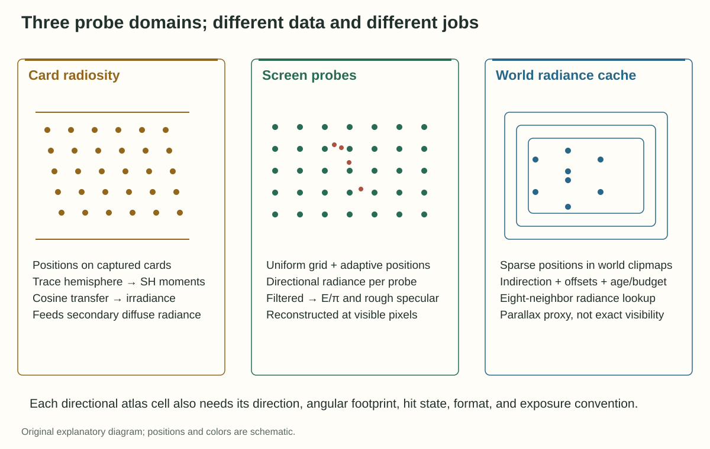
Lumen's default final gather is Screen Probe Gather, not irradiance-field gather or ReSTIR gather. r.Lumen.FinalGatherMethod defaults to 1, and GetFinalGatherMethod selects IrradianceFieldGather only for 0, ReSTIRGather only when ray tracing is enabled and the method is 2, and ScreenProbeGather otherwise (Engine/Source/Runtime/Renderer/Private/Lumen/Lumen.cpp:55-61, :199-218; Engine/Source/Runtime/Renderer/Private/Lumen/LumenReSTIRGather.cpp:281-292). The rest of this chapter follows the screen-probe path.
Screen probes are placed on a uniform screen grid whose spacing is the downsample factor. The default is 16 pixels; it is halved when LumenFinalGatherQuality >= 6, and clamped to at least 4 and at most 64, with a guard against overflowing the maximum 2D texture dimension (Engine/Source/Runtime/Renderer/Private/Lumen/LumenScreenProbeGather.cpp:86-100, :479-509). For a viewport of W x H, the uniform probe grid is Wp = ceil(W / D), Hp = ceil(H / D). The probe atlas reserves extra rows for adaptive probes: Ha = Hp + floor(Hp * AdaptiveProbeAllocationFraction), with the fraction defaulting to 0.5 (LumenScreenProbeGather.cpp:54-59, :2224-2229). So the atlas is Wp x Ha probes, not Wp x Hp.
Each uniform probe is jittered inside its screen tile with a Hammersley sequence (Engine/Shaders/Private/Lumen/LumenScreenProbeCommon.ush:71-76). The probe's material data is downsampled from the full-resolution scene: depth is stored as an encoded float in R32_UINT with the sign bit marking unlit, the world normal is stored as an octahedral XY in R8G8, world speed is packed into R16_UINT with foliage/hair flags in the sign and low bit, and translated world position is stored in A32B32G32R32F (LumenScreenProbeGather.usf:83-112; LumenScreenProbeGather.cpp:2279-2290; LumenScreenProbeCommon.ush:165-178). The depth/normal/speed/position textures are all Wp x Ha.
Adaptive placement is the second layer. The default is NumAdaptiveProbes = 8 sample attempts per uniform probe, with a maximum adaptive-probe allocation of 50% of the uniform count (LumenScreenProbeGather.cpp:47-52, :2235-2243). The placement pass samples a small pattern around each uniform probe (4x2 for 8 samples, 4x4 for 16 or more, 2x2 below 8) and computes the uniform bilinear interpolation weights for each sample. If the sum of the four corner weights is below MIN_PROBE_INTERPOLATION_WEIGHT = 0.01, the sample is marked as needing a probe (LumenScreenProbeGather.usf:1737-1805; :36). That condition fires at geometric or normal discontinuities, where the four uniform probes cannot represent the local lighting. The spawn pass then deduplicates the marked samples: a candidate is skipped if a previously spawned adaptive probe already covers it with a weight above the threshold (LumenScreenProbeGather.usf:1825-1900). Adaptive probes are stored at the bottom of the probe atlas, and a per-screen-tile header/indices texture records which adaptive probes belong to which uniform tile (LumenScreenProbeCommon.ush:99-109; LumenScreenProbeGather.cpp:2318-2405).
The result is a probe set that is uniform in screen space but denser near edges, thin geometry, and normal changes. A pixel's lighting is interpolated from the four nearest uniform probes, but if a corner's weight is below the threshold, the integrator substitutes an adaptive probe from that tile if it has a better weight (LumenScreenProbeGather.usf:263-301). The fallback weights use a weaker depth test so the pixel is not left black (:208-209, :293-297).
Octahedral / equal-area mapping, solid angle, and PDFs
All probe directions are parameterized by a square map. Lumen uses the Clarberg equal-area spherical mapping, which is an octahedral-style folding of the sphere into a square; the implementation in MonteCarlo.ush is explicitly based on Clarberg 2008 (Engine/Shaders/Private/MonteCarlo.ush:156-209). The forward map P_oct takes a direction to [0,1]^2; the inverse P_oct^{-1} takes UV to a unit direction. The mapping is equal-area: a texel of area 1/N^2 in the square corresponds to a solid angle of 4*pi/N^2 on the sphere.
For a probe tracing resolution N_t (default 8), there are N_t^2 trace texels. The non-importance trace path chooses the cone half-angle
alpha = acos(1 - 1 / N_t^2).
The non-importance path evaluates this target using the acosFast approximation (Engine/Shaders/Private/Lumen/LumenScreenProbeTracingCommon.ush:99-103). The trace direction is P_oct^{-1}(probeUV) (LumenScreenProbeTracingCommon.ush:122-135). The cone half-angle is used for SDF cone tracing and radiance-cache lookups. The ideal inverse-cosine formula would give cone solid angle ; the implemented acosFast introduces additional angular approximation error (FastMathThirdParty.ush:108-114). By comparison, a full-sphere equal-area cell has area : this is the implementation's trace footprint, not an exact cone covering the whole cell. It is not a screen-space filter kernel.
The PDF depends on the sampling strategy:
- A fixed schedule that traces every equal-area cell is a stratified quadrature schedule, not random cell selection. If a direction is uniformly jittered within its assigned cell, the conditional density is inside that cell. The mixture obtained by selecting a cell uniformly has density over the sphere. A deterministic cell-center rule instead carries a quadrature weight ; it should not be assigned a fictitious random cell PMF.
- For cosine-weighted hemisphere sampling (used by radiosity's optional cosine path and by the diffuse BSDF),
p(omega) = cos(theta)/pi. - For uniform hemisphere sampling (the radiosity default),
p(omega) = 1/(2*pi). - For BSDF importance sampling, the sample carries
Weight = f_s * cos(theta) / p(omega); theFBxDFSamplestruct documentsWeightasEvaluateBxDF(L) / PDF(Engine/Shaders/Private/ShadingModelsSampling.ush:38-52).
Screen-probe importance sampling is a separate mechanism from the uniform trace map. When enabled (default), it builds a BRDF PDF per probe in a 3-band SH or an 8x8 octahedral map, builds an incoming-lighting PDF from the previous frame's probe radiance, multiplies them, and uses a hierarchical refinement to assign the fixed N_t^2 trace budget to the most important directions (Engine/Source/Runtime/Renderer/Private/Lumen/LumenScreenProbeImportanceSampling.cpp:12-26, :44-58; Engine/Shaders/Private/Lumen/LumenScreenProbeImportanceSampling.usf:341-376). Rays below MinPDFToTrace (default 0.1) are culled or merged; high-PDF rays are subdivided into four child rays; the total ray count is held constant by merging low-PDF rays (LumenScreenProbeImportanceSampling.usf:245-294, :431-476). The tracer reads a packed ray info (source texel + mip level), reconstructs the probe UV and cone angle, and traces that direction (LumenScreenProbeTracingCommon.ush:80-103). Reconstruction accounts for the angular cell represented by each trace. ScreenProbeFiltering.usf:65-79 reconstructs its mip size and uses SampleWeight=(GatherResolution/MipSize)^2, multiplies radiance by that weight, then clamps the weighted value (:82-85) and dithers/scatters it into gather cells (:98-130). This coverage/area weighting is distinct from the later BSDF-sampling PDF. Neither the nonlinear clamp nor the spatial/temporal reconstruction is undone by dividing a BSDF sample by its PDF.
The probe's irradiance representation is also octahedral. The default EScreenProbeIrradianceFormat is Oct (1), a 6x6 octahedral irradiance map with a 1-texel border, stored at 8x8 per probe (Engine/Source/Runtime/Renderer/Private/Lumen/LumenScreenProbeGather.cpp:330-343; Engine/Shaders/Private/Lumen/LumenScreenProbeCommon.ush:15-18). The conversion pass computes, for each of the 6x6 directions, the cosine-convolved irradiance from the filtered radiance SH: Irradiance = 4*pi*DotSH3(RadianceSH, DiffuseTransferSH) (Engine/Shaders/Private/Lumen/LumenScreenProbeFiltering.usf:793-808; the non-wave path at :913-942). The 4*pi belongs to this code's SH convolution convention; it is not a second cosine integral. When short-range AO with bent normals forces the SH3 path, the irradiance is stored as an ambient term plus directional SH coefficients instead (LumenScreenProbeFiltering.usf:527-531, :746-788).
Probe integration and the ray budget
The default trace resolution is 8x8 per probe, the gather resolution is also 8x8 (scale 1.0), and the gather border is 2 * (1 << (NumMips - 1)); with the default GatherNumMips = 1, the border is 2 texels, so the filtered radiance texture is 10x10 per probe (LumenScreenProbeGather.cpp:70-84, :460-477; LumenScreenProbeCommon.ush:20-24). The trace radiance texture is atlasBufferSize * N_t; the gather radiance texture is atlasBufferSize * N_g; the irradiance texture is atlasBufferSize * 8 in each dimension (LumenScreenProbeGather.cpp:2637-2645; LumenScreenProbeFiltering.cpp:454-461, :651-653).
The number of screen probes is NumUniformScreenProbes = Wp * Hp, plus up to floor(NumUniformScreenProbes * 0.5) adaptive probes. For an arithmetic example only (not a capture), a 1920x1080 viewport at the default 16-pixel spacing gives Wp = 120, Hp = 68, Ha = 102, so the atlas is 120x102 probes and the uniform count is 8160; the trace atlas is 960x816. Those numbers are derived from the formulas, not measured.
The uniform ray budget is N_t^2 = 64 traces per probe. At the default probe count this is a few hundred thousand traces per view, which is why screen probes are paired with a world radiance cache: rays with valid radiance-cache interpolation coverage can terminate explicit traversal at the supported cache transition distance and use the cached distant field. Missing coverage is not permission to sample a nonexistent probe; the remaining trace/fallback path must handle it. The exact GPU cost depends on how many probes are resident, how many importance rays are culled, and how many rays take each fallback; those are run-time properties, not source constants.
Accuracy and cost. The 16-pixel spacing sparsely samples lighting and reconstructs it at pixels; this can blur or alias the signal and is not, by itself, a defined low-pass convolution. Thin geometry, contact shadows, and high-frequency normal detail are not represented by the probe grid; adaptive probes recover some of this near discontinuities, but not all. The 8x8 trace map is coarse: a glossy reflection or a small bright source can be missed, which is why the dedicated reflection pass exists. The 6x6 irradiance map is a further low-pass; it is deliberately smaller than the trace map because cosine convolution suppresses high angular frequencies, although visibility and spatial discontinuities can still produce sharp diffuse-lighting changes. The temporal filter hides the noise at the cost of latency.
Implementation checks to run. Render a flat plane with a constant environment; assert every uniform probe has the same irradiance and the reconstructed image is constant (no tile seams). Place a depth step and assert adaptive probes are spawned only on the high-weight-error side and that the count does not exceed the 50% cap. Encode/decode a set of directions through P_oct and assert the round-trip error is small and the solid-angle sum over all texels is 4*pi. Set N_t = 4, 8, 16 and assert the cone half-angle and trace atlas dimensions follow the formulas. Disable importance sampling and assert the ray directions are the uniform octahedral map; enable it and assert the high-PDF rays are subdivided while the total count stays constant.
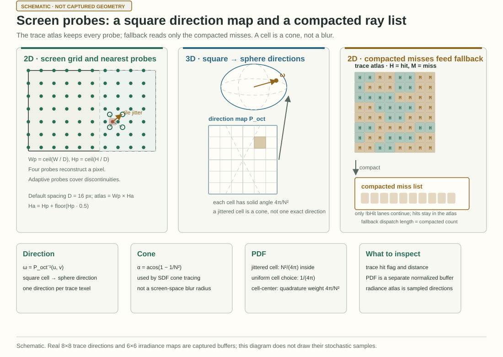

What to inspect in the three real groups below. The radiance atlas contains sampled directions; the lighting-PDF atlas is a separate normalized density; the trace-hit atlas is a categorical hit/miss/radiance-cache flag, not a radiance value. The scene-depth and world-normal atlases define probe geometry, and the diffuse-indirect output is an E/π response, not the same quantity as rough specular. Do not read a black texel as “no light” without checking the declared invalid encoding; the producer-pass and validity line in each caption is the local evidence.
Captured probe buffers · grouped by what they answer

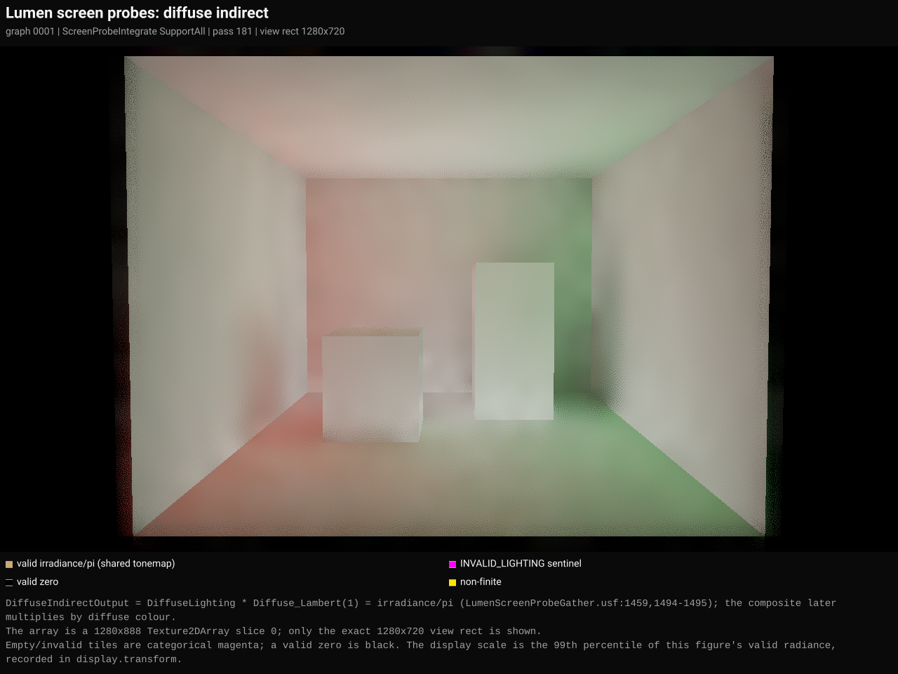

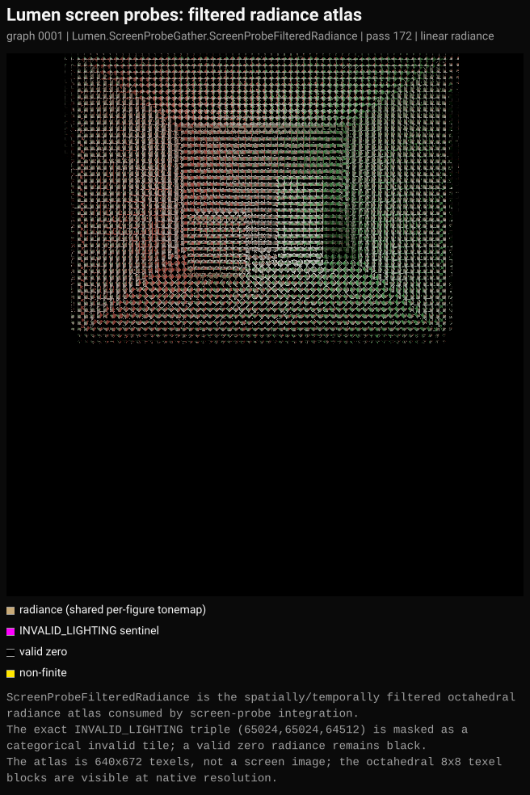

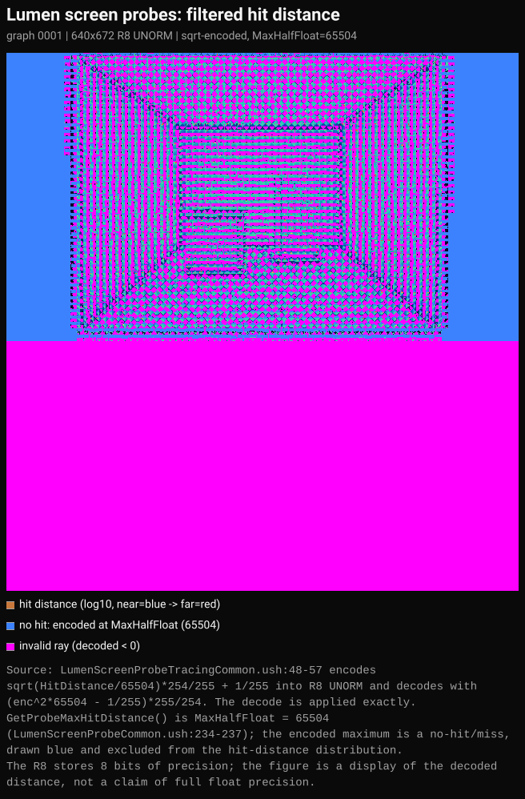

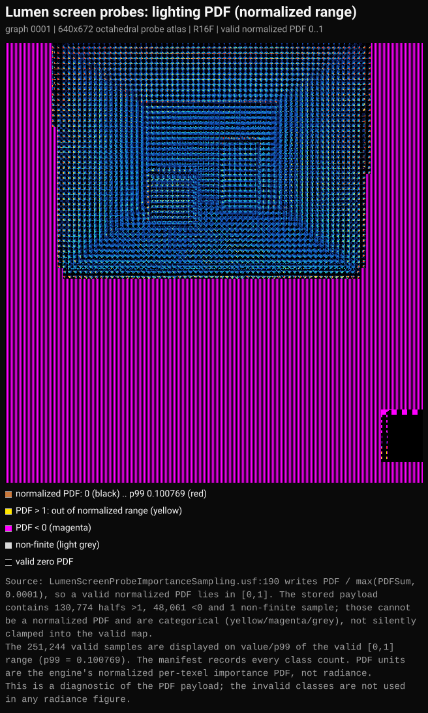

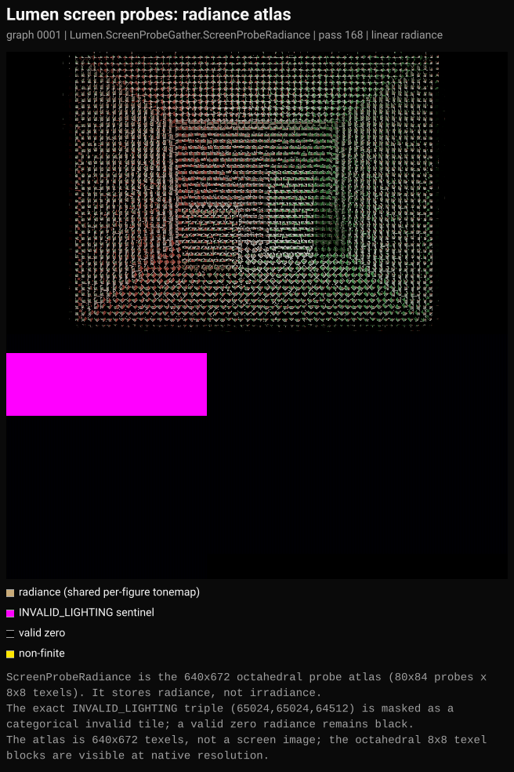


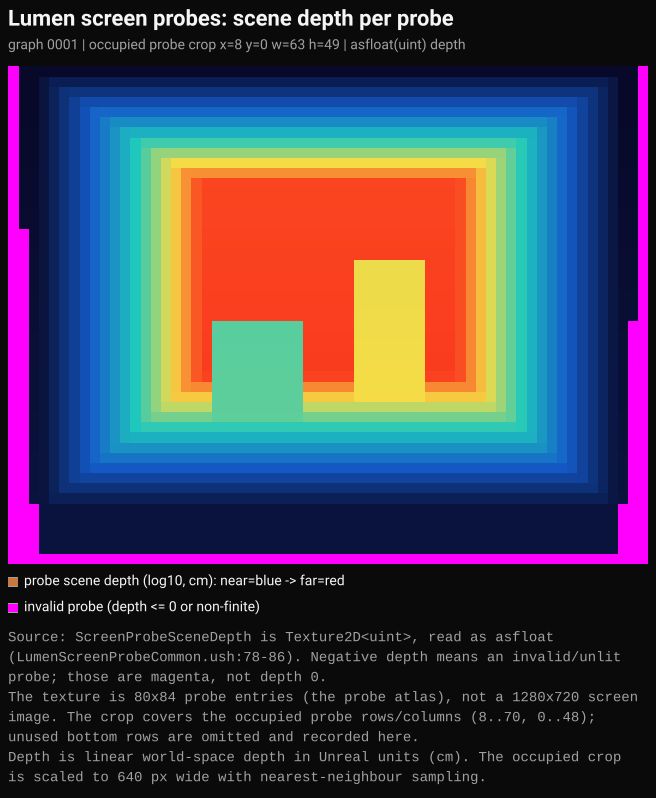

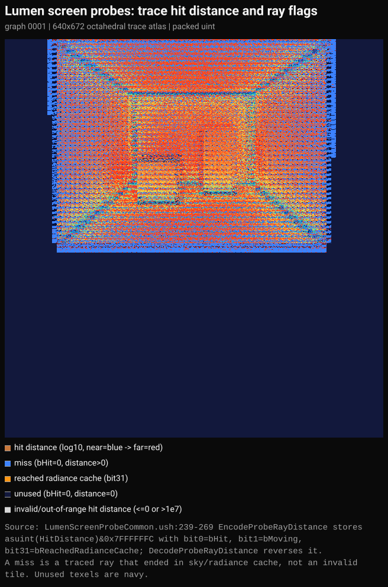

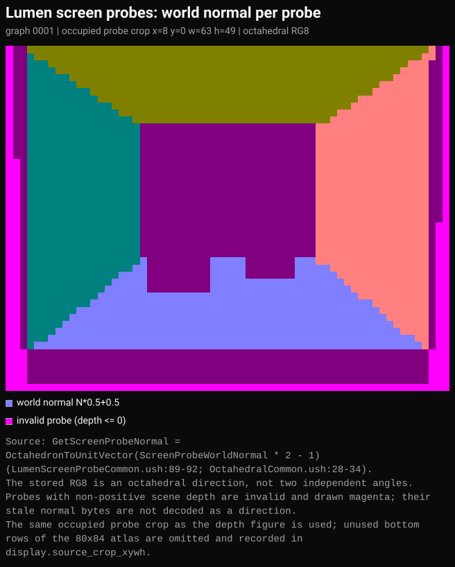
Why the grouped views differ from the schematic. The real probe atlas is a packed multi-probe texture, and the captured images are post-transform channel views with declared invalid encodings. The schematic's single grid and compacted list explain the algorithm; they do not reproduce the GPU's stochastic trace directions or the exact occupancy of this frame. Use the producer pass and the “Inspect versions, all components and raw values” link in each caption to verify the buffer identity.
Screen/HZB tracing, compaction, and the SWRT/HWRT fallback chain
Screen-probe tracing is a cascade, not a single ray tracer. The order in TraceScreenProbes is:
- Clear the trace radiance and hit-distance textures.
- Trace screen HZB and sample the configured current or reprojected history scene-color input.
- If hardware ray tracing is enabled, trace the remaining rays with HWRT.
- Otherwise, if mesh SDF tracing is enabled, compact the remaining rays and trace mesh SDFs/heightfields.
- Compact the remaining rays again and trace the global SDF/voxel fallback, applying the radiance cache and sky on misses.
- Optionally visualize the traces.
This order is visible in Engine/Source/Runtime/Renderer/Private/Lumen/LumenScreenProbeTracing.cpp:678-933. The screen trace is gated by the previous frame's screen-space ray-tracing input, the LumenScreenTraces show flag, and the LumenFinalGatherScreenTraces post-process setting (:716-720). The HWRT branch is Lumen::UseHardwareRayTracedScreenProbeGather (:793-807); the SWRT branch culls mesh SDF objects and traces them (:808-875).
HZB screen tracing
The HZB path builds a closest-depth hierarchy and traces a ray through it. The key parameters are:
MaxHierarchicalScreenTraceIterations = 50.RelativeDepthThickness = 0.02(scaled by the projection's depth-thickness scale).HistoryDepthTestRelativeThickness = 0.005.NumThicknessStepsToDetermineCertainty = 4when foliage hits are not skipped.- Full-resolution depth traversal is on by default.
These are in Engine/Source/Runtime/Renderer/Private/Lumen/LumenScreenProbeTracing.cpp:28-96. The trace function itself is a wrapper around TraceHZB with the closest HZB texture, base texel size, UV-to-screen scale/bias, max iterations, relative thickness, and an occupancy early-out (Engine/Shaders/Private/Lumen/LumenScreenTracing.ush:28-61). The tracer returns a hit, an "uncertain" flag, the hit UV/depth, and the last visible UV/depth. The sampling helper first checks current projected depth and the hit normal against the camera direction, then obtains a reprojected history position, applies edge-vignette rejection, tests the expected history depth, and samples the selected color input with exposure correction (LumenScreenTracing.ush:78-130). SetupHZBScreenTraceParameters supplies the current/history resource choice; LumenScreenProbeTracing.cpp:730-736 explicitly handles the case where the selected color aliases current SceneColor and disables velocity for that case. A capture must record the actual bound resources rather than infer their frame from a parameter name.
Without full-resolution traversal, the source also multiplies the sampled HZB depth by lerp(0.99,1,saturate(t*10)), a near-origin bias that affects hit decisions (HZBTracing.ush:158).
The HZB trace is limited to the screen-depth representation. A ray that leaves its coverage or goes behind an unrepresented layer cannot be resolved there. Separately, when the lighting source is a history image, disocclusion or invalid reprojection can reject an otherwise valid current-depth hit. That is why the cascade continues. The relative depth thickness is the main bias: too small and thin features are missed; too large and rays hit surfaces behind the intended one. The default 0.02 is a relative threshold, not a world-space distance.
Implementing the hierarchical traversal
The hierarchy stores the closest visible depth over progressively larger screen regions. UE's reversed device depth increases toward the camera: a ray point is above, or in front of, the stored layer when its device depth is greater than the cell's closest depth. Device depth is not linear eye-space distance. Perform the hierarchy traversal in projected coordinates, then convert both depths to linear axial view depth for the thickness test. This is not Euclidean distance along the ray. The parameter along this projected segment is not the original world-space ray distance.
Let the translated-world ray be . Project its start and finite end with View.TranslatedWorldToClip; the source divides the start xyz by max(w,1) and the endpoint xyz by its actual homogeneous . Map clip xy into screen UV with the vertical flip and apply the HZB UV scale. Clip the resulting segment against the supported UV/depth box. The source shortens rays directed toward the camera before projection so their endpoint does not cross the camera plane (Engine/Shaders/Private/HZBTracing.ush:54-74). Call the resulting projected endpoints and , and , . These have two normalized texture coordinates and one reversed device-depth component.
At mip , cell width is . In each xy component the next cell boundary in the direction of travel is
LaTeX source
b_a=h_{m,a}\left(\left\lfloor q_a/h_{m,a}\right\rfloor+\mathbf1_{e_a-s_a\ge0}\right)
+\epsilon_a,
\qquad t_a=\frac{b_a-s_a}{e_a-s_a},where the small signed offset advances across the boundary instead of repeatedly hitting it. Zero direction components mean an infinite crossing time in a robust implementation. The engine uses an offset of 0.005 * cellSize in the sign of travel. The cell's depth plane provides when the ray moves toward smaller device depth; otherwise that candidate is the endpoint. The initial step exits the starting cell without accepting a hit, reducing self-intersection (HZBTracing.ush:77-108).
An above-layer ray can safely advance to the earliest cell/depth boundary. If that crossing exits xy before reaching the depth plane, the traversal ascends to a coarser mip to skip empty space more quickly. Otherwise it descends to refine the candidate. A ray already behind the cell's closest depth descends without advancing. This is stackless: the current mip, projected parameter and last known visible parameter replace a traversal stack. Full-resolution traversal gives mip the full-resolution scene-depth image; mip 0 is the half-resolution HZB. Without that option, mip 0 is the finest level. A bilinear full-resolution option samples a conservative combination of point/bilinear depth and uses a special crossing rule (HZBTracing.ush:121-186).
# Original explanatory pseudocode; projected t is not world-ray distance.
s, e = project_and_clip_segment(ray, camera, hzb_mapping)
d = e - s
finest = -1 if full_resolution_depth else 0
m = finest
iterations = 0
last_visible_t = 0
t = exit_initial_xy_cell(s, d, hzb_cell_size(m))
while m >= finest and t < 1 and iterations < iteration_limit:
if wave_occupancy_early_exit_is_enabled_and_triggered(): break
iterations += 1
q = s + t*d
zcell = depth_for_this_mip_and_filter(q.xy, m)
if not full_resolution_depth:
zcell *= lerp(0.99, 1, saturate(t*10))
above = q.z > zcell # reversed Z
tx, ty = next_xy_boundary_times(s, d, q, m)
tz = (zcell-s.z)/d.z if d.z < 0 else 1
if base_level_bilinear_mode(m):
next_t = min(tx, ty)
left_cell = above
else:
next_t = min(tx, ty, tz)
left_cell = above and next_t != tz
if left_cell: last_visible_t = next_t
if above: t = next_t
m += 1 if left_cell else -1
candidate = (m < finest and t < 1)
if candidate:
ray_depth = device_to_scene_depth((s+t*d).z)
layer_depth = device_to_scene_depth(sample_finest_depth((s+t*d).xy))
candidate = ray_depth-layer_depth < relative_thickness*max(layer_depth, tiny)
if not candidate: t = last_visible_t
return candidate, s+t*d, s+last_visible_t*dThe source then runs a separate confidence test beyond an accepted hit. Several small steps through HZB mip 0 check whether the ray comes back in front of the depth layer; that pattern can indicate a thin screen-space occluder, so the result is marked uncertain (HZBTracing.ush:191-250). Iteration and occupancy exits are incomplete traversal, not a proof of geometric visibility. The caller still validates the hit against current depth/normal and the chosen color image's reprojection/depth/edge rules. This explains why an HZB hit is an approximate visibility-and-radiance candidate rather than a triangle intersection guarantee.
For a numerical replay, the necessary inputs include the exact SceneDepth and every HZB mip view, projection/translated-world transforms, UV mappings, ray origin/direction/length, thickness and iteration constants, full-resolution/bilinear permutation, occupancy policy and the selected color/depth/velocity inputs. The color-edge stochastic test additionally needs frame/sample coordinates and its random seed derivation. A final hit texture alone cannot reconstruct those decisions.
Compaction
Compaction is the mechanism that prevents the fallback passes from re-tracing rays that already hit. ScreenProbeCompactTracesCS reads each trace's packed hit record and accepts it only if !bHit and either it did not reach the radiance cache or the pass is compacting for sky application. It also requires the probe texel to be valid, the scene depth to be within the optional camera-distance limit, and the hit distance to be below the optional max trace distance. The accepted trace indices are compacted into a global buffer with wave operations or an atomic allocator (Engine/Shaders/Private/Lumen/LumenScreenProbeTracing.usf:394-451; Engine/Source/Runtime/Renderer/Private/Lumen/LumenScreenProbeTracing.cpp:604-675). A second compaction for the global-SDF stage uses FLT_MAX as the max trace distance and bCompactForSkyApply = true, so every miss is processed for radiance-cache/sky application even if it traveled far (LumenScreenProbeTracing.cpp:877-885).
This is a crucial implementation detail: the fallback stages are not dispatched over the full probe atlas. They are dispatched over a compacted list whose length is the number of remaining rays. The list generation itself is a hierarchical dispatch: a setup pass writes indirect args from the compacted count, and the trace pass reads those args (LumenScreenProbeTracing.cpp:652-675).
Mesh SDF and global SDF tracing
When mesh-SDF detail tracing is enabled, the SWRT path culls mesh SDF objects into a view grid and traces the compacted rays against the mesh SDFs and heightfields. This stage is optional: r.Lumen.TraceMeshSDFs defaults to 0 at this revision. CullForCardTracing builds the mesh SDF grid parameters; FScreenProbeTraceMeshSDFsCS traces the compacted list (LumenScreenProbeTracing.cpp:810-871). The mesh SDF trace uses a cone/ray march with a per-object volume, a surface bias, a maximum of 64 steps, a base minimum step of 1/(16*64) volume units multiplied by the coverage-dependent step scale, and an expand-surface term that grows with ray time or max distance (Engine/Shaders/Private/Lumen/LumenSoftwareRayTracing.ush:176-256). Surface expansion helps represented thin, two-sided surfaces occlude, at the cost of over-occlusion; it cannot restore geometry missing from the distance field (LumenSoftwareRayTracing.ush:130-134).
After the mesh SDF stage, the remaining rays trace the global SDF. The global distance field is built as clipmaps; Lumen's default resolution is 252 voxels per axis and the first clipmap extent is 2500 world units, with each subsequent clipmap doubling (Engine/Source/Runtime/Renderer/Private/Lumen/LumenScene.cpp:69-83, :261-264). The trace is a heuristic SDF marching loop with up to 256 steps per clipmap, a minimum step of MinStepFactor * clipmapVoxelExtent * lerp(NotCoveredMinStepScale, 1, Coverage), and a step distance of max(distanceField * StepFactor, minStep). A hit is declared when the distance field is below the expanded surface amount; the hit time is biased by distanceField - expandSurfaceAmount (Engine/Shaders/Private/DistanceField/GlobalDistanceFieldUtils.ush:90-200). The wrapper forwards the configured SDFStepFactor and MinSDFStepFactor; these controls are inputs to the traversal, not universal constants. The global-SDF trace is only used if Lumen::UseGlobalSDFTracing is enabled (LumenScreenProbeTracing.cpp:909-910; Engine/Shaders/Private/Lumen/LumenSoftwareRayTracing.ush:776-800).
The global SDF provides coarser visibility within its finite clipmap coverage. Its voxel resolution limits thin-feature occlusion and its surface expansion introduces bias. Mesh SDFs can retain more nearby detail; hardware tracing intersects the configured ray-tracing geometry, which may itself differ from the raster geometry. There is no universal accuracy or cost ordering: geometry density, instance updates, Nanite representation, ray coherence, hardware and material work all matter. Hardware tracing can outperform software tracing in a particular scene. The source selects a configured sequence of representations; it does not measure each ray and dynamically choose the cheapest accurate tracer.
Hit shading: surface cache versus hit lighting
When a ray hits, the default is to shade the hit from the surface cache: use the hit object, position and normal to find valid card samples, depth-filter their neighborhoods, and fetch the card's final lighting. Ordinary final-radiance lookup does not re-evaluate albedo, normal and emissive; those material atlases were consumed when generating cached lighting. EvaluateRayHitFromSurfaceCache samples the card's surface cache and returns radiance, direct lighting, and indirect lighting (Engine/Shaders/Private/Lumen/SurfaceCache/LumenSurfaceCacheSampling.ush:558-672). The final-lighting atlas sample is divided by the cached lighting pre-exposure before being used (LumenSurfaceCacheSampling.ush:314-325). This is the "surface cache" lighting mode (the default r.Lumen.HardwareRayTracing.LightingMode = 0).
The alternative is hit lighting: evaluate the material and selected lighting terms at a ray-traced hit instead of relying entirely on a directionally collapsed card result. Mode selection distinguishes SurfaceCache, HitLightingForReflections and HitLighting, with project/view overrides and platform capability checks (Engine/Source/Runtime/Renderer/Private/Lumen/LumenHardwareRayTracingCommon.cpp:241-275). This adds material evaluation and potentially shadow-ray work, but its measured cost is scene-dependent. It is incorrect to describe all modes as evaluating only the first hit: LumenHardwareRayTracingCommon.ush:1000-1088 loops up to Context.MaxReflectionBounces, evaluates the hit material and lighting inside that loop, and blends further reflection tracing according to accumulated roughness. Recursive-reflection/refraction permutations and their configured limits govern which paths exist. Cached residual lighting can still be used within hit lighting; this finite hybrid is not an unrestricted reference path tracer. The captured software-Lumen frame does not exercise these hardware permutations.
Implementation checks to run. Build a synthetic depth step and known camera; compare projected traversal hits against direct intersections with that deliberately limited depth-layer model. Vary cell boundaries, grazing angles, reversed-Z values and thickness thresholds. A hit omitted from screen coverage should remain unresolved for fallback; only assert a fallback hit when the chosen SDF/BVH actually contains that geometry. Count the exact compaction acceptance predicate, including cache/sky flags and distance gates, rather than assuming every miss is always enqueued. Compare surface-cache and hit-lighting modes on an off-screen detailed material against a controlled path-traced reference; report residual error rather than expecting either mode to reproduce the reference perfectly.
From a geometric hit to a surface-cache radiance sample
The geometric tracer returns an object identity, hit position and hit normal. Card lookup does not intersect the ray with a collection of flat planes. It asks which captured surface samples correspond to that already established hit. The following describes the normal production path of Engine/Shaders/Private/Lumen/SurfaceCache/LumenSurfaceCacheSampling.ush:99-641; debug-visualization overrides replace the returned color and must not be interpreted as production lighting.
First map the scene instance/object to its mesh-card record. Transform world hit position and normal into mesh-card coordinates using the record's world origin and world-to-local rotation. Form squared normal weights . The sign of each normal component selects one of that object's six directional card lookup masks; OR the selected masks, iterate their set bits, and reject candidates outside their expanded mesh-card bounds. Mostly two-sided objects receive a separate bias enlargement. Heightfields have their own candidate and weighting treatment (LumenSurfaceCacheSampling.ush:442-530; instance mapping is LumenCardCommon.ush:378-381).
For each surviving visible card, subtract the card origin and apply its packed axis permutation/signs. This is a rigid coordinate mapping, not a ray-plane intersection. With card-local position and half-extent , reject positions outside , then clamp xy to the card footprint. The card UV is
LaTeX source
u=\operatorname{saturate}\!\left(\tfrac12+\tfrac12 p_x/a_x\right),\qquad
v=\operatorname{saturate}\!\left(\tfrac12-\tfrac12 p_y/a_y\right).The y flip agrees with the capture orientation. UV is then capped just below 1 to keep the virtual-page coordinate in range (LumenCardCommon.ush:132-134,372-375; LumenSurfaceCacheSampling.ush:102,251-256).
Choose the card's requested low- or high-resolution page table, with per-axis page counts and base offset . Its initial entry is . Each entry is two packed 32-bit words. In word 0, bits 0–11 and 12–23 give physical atlas biases in units of eight texels, while bits 24–27 and 28–31 give the mapped x/y resolution levels. Word 1 is the physical card-page index. Crucially, use the mapped resolution levels to recompute the page counts and in-page coordinate: the page table can direct a requested high-resolution sample to a resident fallback. A zero mapped x resolution marks an invalid sample (LumenSurfaceCacheSampling.ush:104-151,186).
For a mapped resolution , a physical page spans texels when , otherwise . Let for the mapped page layout. Interior page edges reserve half a texel; the outer edges of the entire card do not. Per axis, set at the first page and otherwise, and at the last page and otherwise. The physical coordinate within a page is
LaTeX source
c=f(S-b_{\min}-b_{\max})+b_{\min},
\qquad c\leftarrow\operatorname{clamp}(c,1/2,S-1/2-1/512).Add the unpacked physical bias and divide by atlas dimensions. The half-texel clamp and subtexel precision margin prevent gathers from reading unrelated neighboring cards. The source currently makes the indirect-lighting atlas UV equal to this physical UV in this lookup; a commented alternative is not active behavior (LumenSurfaceCacheSampling.ush:130-154).
Next, gather four depth texels around the physical UV. Depth is card-local normalized capture depth, with 1 reserved for invalid coverage (SurfaceCache/LumenSurfaceCache.ush:13-23). The expected depth and bias parameters are
LaTeX source
z_h=\tfrac12-\tfrac12 p_z/a_z,\qquad
\tau=b/a_z,\qquad \delta=\tau/4.For each gathered valid depth , define
LaTeX source
v_i=1-\operatorname{saturate}\!\left(\frac{|z_h-z_i|-\tau}{\delta}\right).Invalid texels receive zero. Heightfields skip this depth-distance rejection and use one for each valid texel. This is a correspondence-confidence ramp, not a separate physical shadow ray. Given ordinary bilinear weights , use . In the engine's texture-gather lane order, with , the weights are . Mixing a different gather lane order with these weights silently produces incorrect interpolation (LumenSurfaceCacheSampling.ush:172-178,279-310).
Let . Select , or from the card's projection axis; heightfields use . The card contributes weight . Each lighting atlas is gathered channel by channel with normalized texel weights , and divided by the cached-lighting pre-exposure. Finally average the contributing cards by :
LaTeX source
\widehat L(x)=
\frac{\sum_c a_c\sum_i \beta_{ci}v_{ci}\,\widetilde L_{ci}}
{\sum_c a_c\sum_i \beta_{ci}v_{ci}}\;
\mathrm{OneOverCachedLightingPreExposure}.Here is FinalLighting stored in the atlas, not a BSDF value. The same weighted operation returns DirectLighting and IndirectLighting, whose quantities are irradiance. Do not add those two outputs to FinalLighting: FinalLighting already contains their material-weighted sum plus emissive. If the denominator is zero the sample is invalid, which differs from a valid black radiance (LumenSurfaceCacheSampling.ush:222-231,312-314,420-429,587-592).
# Original explanatory pseudocode: hit supplied by HZB/SDF/BVH geometry.
sum_radiance = 0; sum_weights = 0; strongest_card = invalid
for card in directional_candidates(hit.object, hit.normal):
p = transform_hit_to_card(hit.position, card)
if outside_expanded_card(p) or not card.visible: continue
entry = virtual_page_lookup(card, card_uv(p), requested_resolution)
if entry.mapped_resolution_x == 0: continue
uv = mapped_page_to_physical_uv(entry, card_uv(p), border_rules)
beta = bilinear_weights_in_texture_gather_lane_order(uv)
depth = gather_depth4(uv)
validity = depth_correspondence(depth, p.z, card.extent.z, bias)
w = beta * validity
W = projection_axis_weight(hit.normal, card) * sum(w)
if W <= 0: continue
Lc = dot(gather_final_lighting4(uv), w/sum(w)) / cache_pre_exposure
sum_radiance += W*Lc; sum_weights += W
retain_highest_weight_card_for_feedback(card, W)
return (sum_radiance/sum_weights, valid) if sum_weights > 0 else (0, invalid)The highest-weight card retained above serves feedback; radiance itself averages all accepted cards. Despite an accumulator comment mentioning stochastic selection, the actual selection at lines 425–429 is deterministic maximum weight. With feedback enabled, a screen-coordinate mask/jitter selects sparse feedback writers, the total weight must exceed 0.1, an atomic allocator bounds writes, and the selected page's last-used frame is updated. High-resolution feedback packs card index, desired resolution and local page coordinate; the desired resolution uses card extent, sample radius and a resolution bias (LumenSurfaceCacheSampling.ush:156-169,594-617). Feedback is a dependency of future residency and updates, even though it does not alter this invocation's radiance value.
This lookup removes the hit's outgoing angular dependence by reusing diffuse-like cached radiance, and reconstructs that radiance over a finite captured footprint with depth and orientation weights. Those are explicit components of the approximate transport operator: visibility came from the geometric tracer; the cache substitutes a reconstructed outgoing-radiance boundary value at the hit. Captured albedo/normal/emissive belong to the earlier cache-production closure, not an extra unrecorded BRDF multiplication at this lookup.
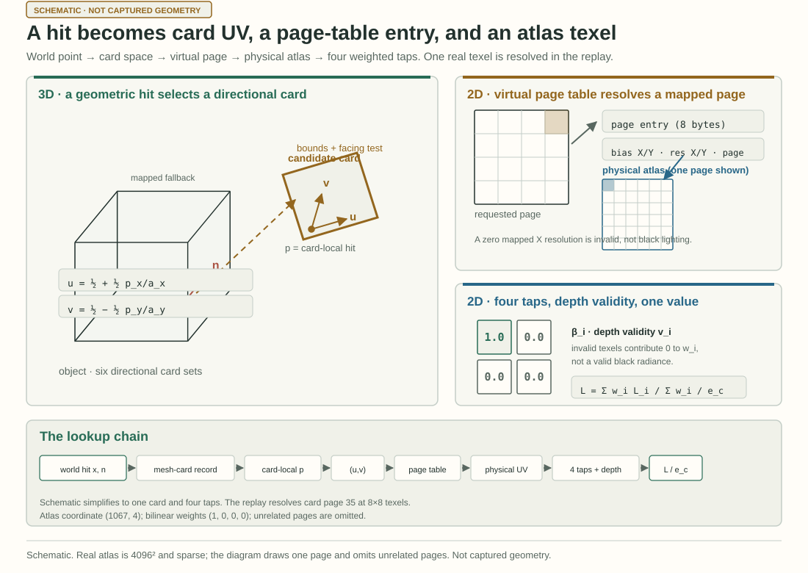

Inspect the real texel. cache-texel-replay.json resolves card page 35 at 8×8 texels, with CardUVRect (0,0,1,1) and physical atlas rect (0.259765625, 0, 0.26171875, 0.001953125). Its physical coordinate is (1067, 4); the four bilinear weights are (1, 0, 0, 0), so only the first tap contributes in this sample. Direct is (16.75, 16.75, 17.0), indirect is (2.375, 1.609375, 1.1875), and final-before-quantization is (4.449223, 3.888251, 2.949073). The schematic's equal-weight four-tap footprint is therefore an explanation, not a claim about this texel; inspect the live page table, the unmapped pages and the exact channel views in capture-surface-cache-material-layers.
Read the four real material atlases below as the inputs addressed by the card lookup above. The occupied texels share one mask; the navy areas are unmapped pages, not black material.

Software visibility: mesh and global distance fields
This chapter expands software visibility into address calculations, distance decoding, culling, ray marching, hit reconstruction, and error terms. Its numbered subsections are local to this chapter. Values identified as defaults come from the pinned source; they are not asserted to be measurements of the captured frame. The captured-frame records distinguish actual settings and shader inputs from these defaults.
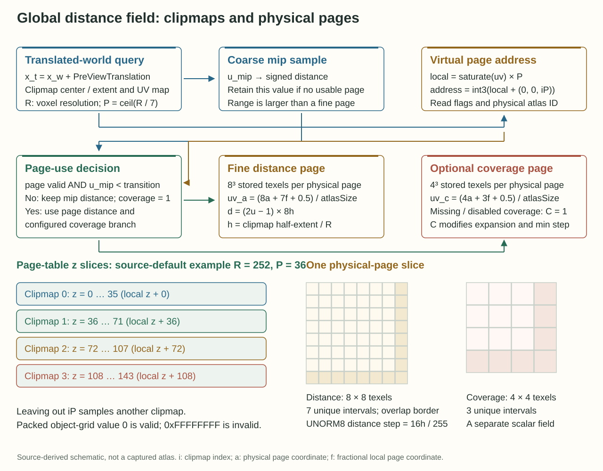
0. Active default route first
The pinned revision does not enable the optional mesh-SDF stage by default.
r.Lumen.TraceMeshSDFsis initialized to0(Engine/Source/Runtime/Renderer/Private/Lumen/LumenDiffuseIndirect.cpp:97-103).- The project setting that drives it is
LumenSoftwareTracingMode(Engine/Source/Runtime/Engine/Classes/Engine/RendererSettings.h:634-638). Its enum's zero value isGlobalTracing = 0;DetailTracing = 1(RendererSettings.h:263-270). The templates in this checkout also setr.Lumen.TraceMeshSDFs=0(e.g.Templates/TP_ThirdPerson/Config/DefaultEngine.ini:11). Lumen::UseMeshSDFTracingis an AND ofr.Lumen.TraceMeshSDFs != 0,r.Lumen.TraceMeshSDFs.Allow != 0, and theLumenDetailTracesshow flag (LumenDiffuseIndirect.cpp:205-210). The show flag defaults true (Engine/Source/Runtime/Engine/Public/ShowFlags.h:534-539), so the cvar/project setting dominates.- The screen-probe gather has a second, independent gate:
r.Lumen.ScreenProbeGather.TraceMeshSDFsdefaults to1(LumenScreenProbeGather.cpp:40-45; constructorLumenDiffuseIndirect.cpp:21-28). Both are ANDed at the call site (LumenScreenProbeGather.cpp:2647-2658). The second gate being1does not turn the mesh stage on.
Consequently, for the source defaults, the shipped software route is global-SDF-only. The mesh-SDF/heightfield stage is an optional Detail-Tracing path. Both paths are derived below because they solve different visibility queries, but the default route is marked in every relevant place. If the captured project changed LumenSoftwareTracingMode or the cvar, that is capture unknown; use the recorded setting rather than inferring it from this derivation.
The global stage is still conditional:
- It is skipped when hardware ray tracing is selected:
TraceScreenProbesbranches toRenderHardwareRayTracingScreenProbeand never reaches the SWRT cull/trace block (LumenScreenProbeTracing.cpp:792-807). - Its shader permutation is enabled only when
!bUseHardwareRayTracing && Lumen::UseGlobalSDFTracing(...)(LumenScreenProbeTracing.cpp:903-910);UseGlobalSDFTracingis theLumenGlobalTracesshow flag (LumenDiffuseIndirect.cpp:212-215). - If neither representation is active, the second compaction still applies radiance-cache/sky to the remaining misses; there is no SDF trace.
1. Spaces, symbols, and units
Spaces, symbols, and unitsColumns: Symbol / source name · Meaning · Unit
| Symbol / source name | Meaning | Unit |
|---|---|---|
| World position | Unreal units, UU (the engine convention is 1 UU = 1 cm; the source itself does not label it) | |
PreViewTranslation |
UU | |
| Translated-world position used by the global SDF and view uniforms | UU | |
| Mesh volume-space position | volume units; the mesh's maximum local half-extent is normalized to 1 | |
Affine WorldToVolume: |
volume units per world unit (volumeunit/UU); volume units | |
VolumeToWorldScale, the row norms of the volume-to-world linear map (lengths of the transformed volume axes; not singular values under shear) |
UU per volume unit | |
| Decoded mesh SDF value | volume units | |
| Decoded global SDF value | UU | |
| Normalized encoded distance in | dimensionless | |
| Mesh ray parameter, measured as arc length in volume space | volume units | |
| Global ray parameter, measured as distance along a unit world direction | UU | |
ClipmapVoxelExtent in the tracing shaders: |
UU | |
Center-to-center global voxel spacing (ClipmapVoxelSize in C++) |
UU | |
ClipmapInfluenceRange used to encode one page: |
UU | |
VolumeSurfaceBias |
volume units | |
SurfaceBias, MinTraceDistance, MaxTraceDistance, MaxMeshSDFTraceDistance, CardTraceEndDistanceFromCamera |
World-space trace controls | UU |
ConeAngle |
Cone half-angle | radians |
TanConeAngle |
dimensionless | |
CardGridZParams |
by default | 0.01 has units UU; 1 dimensionless; 4 slices per octave |
Two naming traps are worth fixing in an implementation:
ClipmapVoxelExtentis a half-spacing. In C++,ClipmapVoxelSize = (2*E_i)/Ris the center-to-center spacing;ClipmapVoxelExtent = 0.5*ClipmapVoxelSize = E_i/R(GlobalDistanceField.cpp:1140-1145,:2261-2265). The tracing code uses the latter for expansion and minimum steps (GlobalDistanceFieldUtils.ush:106-108). Calling it "voxel size" in a clone would double every global-SDF bias.- The mesh
VolumeSurfaceBiasis in volume units, but one line in the mesh tracer adds it to a world-space hit distance (LumenSoftwareRayTracing.ush:146). See §11.3.
1.1 Mesh volume normalization
The mesh build normalizes local space uniformly by the maximum local half-extent:
LaTeX source
L_{v\leftarrow l}=\frac{1}{\max(\text{localBounds.GetExtent()})}.This is done both when encoding (MeshDistanceFieldUtilities.cpp:421-449) and when uploading the object (DistanceFieldObjectManagement.cpp:619-621). The volume is therefore isotropic in local-mesh metric, not in world metric. The instance transform is applied afterwards:
LaTeX source
x_v = \text{RelativeWorldToLocal}\; (x_w-\text{meshCenter})\; L_{v\leftarrow l},and the inverse matrix is uploaded as WorldToVolume (DistanceFieldObjectManagement.cpp:656-664). VolumePositionExtent = localExtent * L_{v\leftarrow l} (:666).
1.2 Ray parameter conversions
Mesh SDF. Let be the world ray origin, a unit world direction, and the requested world length. The source forms
LaTeX source
a = V(O_w),\qquad e = V(O_w + D_w L_w),\qquad \Delta=e-a,LaTeX source
L_v = |\Delta|,\qquad \hat{\Delta}=\Delta/L_v .LineBoxIntersect returns normalized segment parameters in ; multiplying by converts them to volume arc length (LumenSoftwareRayTracing.ush:149-161). The start is then clamped to
LaTeX source
s_{\min}=L_v\,\frac{L_{\min,w}}{L_{\max,w}},where the ratio is the world-space start fraction (:154-161). All stepping is in (volume length). A hit at is converted back with
LaTeX source
t_w = \left| S \odot (\hat{\Delta} s_h) \right|,where is component-wise multiplication by VolumeToWorldScale (:249-252). Write and . For the usual instance transform, in column notation with and diagonal ,
LaTeX source
|Mv|^2
= v^T\operatorname{diag}(S)R^T R\operatorname{diag}(S)v
= v^T\operatorname{diag}(S)^2 v
= |S\odot v|^2,so rotation cancels and is exact; this is not limited to axis-aligned scales. The source's row-vector convention reverses the factor order, , with the same cancellation. Also because , so reconstructs the same world point. The axis-length conversion becomes approximate only when has shear or otherwise non-orthogonal axes, where three axis lengths lose the off-diagonal cross terms; that is separate from the volume-metric SDF approximation discussed in §9.3.
The hit position used for shading is reconstructed as (:291-292), not by inverting the volume point. It is consistent with ; under shear, is the approximate quantity, not the reconstruction formula itself.
Global SDF. The global tracer works directly in translated world. LineBoxIntersect returns normalized parameters; multiplying by ClipmapRayLength converts to world distance (GlobalDistanceFieldUtils.ush:114-118). The ray parameter is therefore world length, because the direction is unit length. There is no volume transform inside the loop; only the UV/page lookup is a transform.
Screen-probe handoff. TraceMeshSDFs starts from the biased sample position and uses the previous stage's decoded world hit distance to choose its start:
LaTeX source
L_{\text{mesh,start}}=\max(L_{\min},\; t_{\text{prev}}-2\,\text{SurfaceBias}),LaTeX source
L_{\text{mesh,max}}=\min(\text{MaxMeshSDFTraceDistance},\text{MaxTraceDistance}).The -2*SurfaceBias compensation is at LumenScreenProbeTracing.usf:585-592. The second compaction/global stage repeats the same subtraction with the mesh stage's reported hit distance (:724, :765-767). The final reported distance adds the length of the origin offset:
LaTeX source
t_{\text{reported}}=\min\left(t_{\text{opaque}}+|x_w-x_{\text{sample}}|,\;L_{\max}\right),at LumenScreenProbeTracing.usf:677-681. This is a norm of a direction-plus-normal offset, not a projection onto the ray, so it is an approximation of the distance from the original probe position. The offset itself is SurfaceBias along the ray plus SurfaceBias along the probe normal (:585-588); its magnitude ranges from to , depending on the angle between the ray and the normal.
2. Culling mesh SDFs into per-cell lists
The mesh-SDF path does not trace every object. It builds a screen-tile depth-slice grid, puts overlapping object indices into per-cell lists, and the trace shader reads the list for the cell containing the probe. This is a coverage decision made before any ray is traced.
2.1 View-level list
CullMeshSDFObjectsForViewCS tests each distance-field object (LumenMeshSDFCulling.usf:181-269). With d_cam^2 = |cameraTranslated - centerTranslated|^2, the accept condition is the conjunction:
bVisible || bAffectIndirectLightingWhileHidden(:212).- (
:213), whereCardTraceEndDistanceFromCameradefaults to 4000 UU. - or
bEmissiveLightSource(:214). UU (LumenMeshSDFCulling.cpp:25-31,:608); LumenSceneDetail defaults to 1 (Scene.cpp:591), so 30 UU. ViewFrustumIntersectSphere(center, r_sphere + R_influence)(:215). The helper accepts when, for every view-frustum plane , (DistanceFieldLightingShared.ush:347-361).R_influenceis passed asIndirectTracingParameters.MaxMeshSDFTraceDistance(LumenDiffuseIndirect.cpp:404-415), default 180 UU.- Min/max draw distance:
(min < 1e-4 || d_cam^2 > min^2)and(max < 1e-4 || d_cam^2 < max^2)(LumenMeshSDFCulling.usf:219-220). Zero disables a bound.
The accepted indices are written through a groupshared atomic and the indirect instance count is increased (:222-246). The object list is therefore a sphere/frustum/range superset; it is not yet per-cell.
2.2 Froxel scatter and bounds intersections
CullObjectsToGrid rasterizes a low-poly sphere for each object in the view list (LumenMeshSDFCulling.cpp:712-832). The vertex shader expands the sphere conservatively:
LaTeX source
r_{\text{effective}} = \frac{(r_{\text{object}}+R_{\text{influence}})\cdot s_{\text{conservative}}}{0.7},where compensates for the low-poly sphere's vertices lying inside the true sphere (LumenMeshSDFCulling.usf:281-329; C++ sets the scale at LumenMeshSDFCulling.cpp:742-746). The extra /0.7 and the added influence radius are deliberate conservative enlargement.
The pixel shader then decides which froxel cells the object covers (LumenMeshSDFCulling.usf:382-538):
- Build a tentative object AABB in view space:
LaTeX source
E_{\text{world}} = E_v\,|(\text{VolumeToWorld})_{3\times3}|,where is a row vector and the multiplication is the vector-matrix product mul(E_v, abs(M)) (:399), i.e. the standard exact AABB-of-transformed-AABB extent (not component-wise multiplication); then
LaTeX source
E_{\text{view}} = E_{\text{world}}\,|(\text{TranslatedWorldToView})_{3\times3}| + R_{\text{influence}},(:425-426). The absolute-matrix multiplication is the standard exact AABB-of-transformed-AABB operation.
2. Compute the z-slice interval. The source first forms view-space min/max depth from the center and (:454-455), then clamps to the closest/furthest HZB sample at the tile center (:457-467). CULL_TO_HZB is hardcoded 1 (:457). The slice index is
LaTeX source
z(d)=\min\!\left(\left\lfloor \log_2(0.01\,d+1)\cdot 4\right\rfloor,\;Z-1\right),(:347-352). The inverse used for cell reconstruction is
LaTeX source
d(z)=\frac{2^{z/4}-1}{0.01}when CULL_TO_FROXEL_GRID is on (:354-364). The grid's z size is
LaTeX source
Z=\max\!\left(\left\lfloor \log_2((D_{\text{far}}-D_{\text{near}})\cdot0.01)\cdot4\right\rfloor,0\right)+1,with D_far = CardTraceEndDistanceFromCamera (LumenDiffuseIndirect.cpp:374-379). Here 0.01 is per UU, so the log argument is dimensionless in the engine's centimetre convention.
3. For each z slice, build the tile frustum from ViewToClip (LumenMeshSDFCulling.usf:428-448). The AABB-vs-frustum test is
LaTeX source
n\cdot c \ge -\,|E_{\text{view}}|\cdot|n|for all six planes (:488-493).
4. For SDF objects only, add an SDF-distance test. The tile's world center is reconstructed from the cell coordinate and the z-slice inverse (:500-507). The bounding-sphere radius is the maximum corner distance in the cell plus :
LaTeX source
r_{\text{tile}} = \max_{\text{corners}} |x_{\text{corner}}-x_{\text{center}}| + R_{\text{influence}}.The object is kept only if
LaTeX source
\operatorname{distToSDF}(x_{\text{center}},r_{\text{tile}}) < r_{\text{tile}}(:508-510). DistanceToNearestSurfaceForObject computes the volume-space SDF at the clamped position, converts it with min(VolumeToWorldScale) (VolumeScale) and adds the outside-box distance; negative SDF is clamped so it cannot stick out of the box (MeshDistanceFieldCommon.ush:9-31). VolumeToWorldScale is not a singular-value decomposition: LoadDFObjectDataFromBuffer takes it from Vector8.xyz (DistanceFieldLightingShared.ush:295-297), which DistanceFieldObjectManagement.cpp:698 fills with VolumeToRelativeWorld.GetScaleVector(), i.e. the three row norms of the volume-to-world 3x3 (GetScaleVector is defined as per-row magnitudes in Matrix.inl:520-540). If those rows are mutually orthogonal (row-form with orthogonal , including non-uniform scale), the row norms are the singular values, so and the conversion is a conservative underestimator. If the matrix has shear/non-orthogonal axes, row norms are not singular values and can exceed , so the conversion is not a guaranteed lower bound (counterexample in §9.3). The source algorithm is this per-axis row-norm conversion, not an ideal bound. The standalone SDF query used by this test starts at the lowest-resolution mip and only steps to higher-resolution mips while (DistanceFieldLightingShared.ush:452-471), so the cull distance is a coarse estimate, not the exact high-res distance.
The append path increments the per-cell count and writes {packed object, grid index} into a global intermediate array (LumenMeshSDFCulling.usf:514-536). That array is capped at
LaTeX source
N_{\text{cap}} = N_{\text{cullCells}} \cdot 512with GMeshSDFAverageCulledCount = 512 (LumenMeshSDFCulling.cpp:17-23, :363-383). The count is still incremented after the cap, but writes are skipped when the index is not < N_cap (LumenMeshSDFCulling.usf:528-535); the compaction pass clamps its dispatch to min(count, N_cap) (:551). Treat the cap as a memory/correctness guard and expose it explicitly.
2.3 Compaction
The list build is a two-pass count-then-fill:
- First pass counts object/cell overlaps into
NumGridCulledMeshSDFObjectsand appends to the temporary array. ComputeCulledObjectsStartOffsetCScomputes a prefix offset per cell with atomics and writesGridCulledMeshSDFObjectStartOffsetArray; it also writes the indirect dispatch for the compact pass (LumenMeshSDFCulling.usf:595-630).- The per-cell counts are cleared (
LumenMeshSDFCulling.cpp:671-675). CompactCulledObjectsCSwalks the temporary array and writes each object index atstart + InterlockedAdd(cellCount,1)(LumenMeshSDFCulling.usf:543-583). The secondInterlockedAddreturns , so the fill is dense and the final per-cell count is the number actually stored.
The trace shader reads the list by cell index, not by object:
cell = gridCell(probeScreenPosition, probeSceneDepth)
n = NumGridCulledMeshSDFObjects[cell]
base = GridCulledMeshSDFObjectStartOffsetArray[cell]
for k in 0 .. n-1:
object = GridCulledMeshSDFObjectIndicesArray[base + k](LumenScreenProbeTracing.usf:596-599). The cull-grid cell is computed from the probe's screen position and its scene depth, not from the ray direction (:532-538). All trace texels of a probe share the same list, where (LumenScreenProbeGather.cpp:452-457). The nonnegative float product is converted to uint32 before power-of-two rounding (GenericPlatformMath.h:809-811); this truncation is part of the rule. For example, quality 1.01 with base resolution 8 still produces axis 8, rather than jumping immediately to 16. TracingOctahedronResolution defaults to 8 (r.Lumen.ScreenProbeGather.TracingOctahedronResolution, LumenScreenProbeGather.cpp:70-76) and LumenFinalGatherQuality defaults to 1 (Scene.cpp:594), so the source-default axis is 8 and the source-default count is 64. It is not a constant: with the default axis, quality 0.25 gives axis 4 (16 traces), quality 2 gives axis 16 (256 traces), and reference mode returns 32 (1024 traces). The captured project's axis/quality is capture unknown. A missing object in the list is a hard coverage miss for that probe, even if the ray would have intersected its SDF.
The HZB z clamp is part of that coverage decision: geometry outside the tile's visible-depth interval can be omitted from the list. The influence radius (180 UU default) and the conservative sphere enlargement are the mitigations, not a proof of completeness. This is a heuristic cull, not a watertight ray-scene structure.
Heightfields use a parallel list (CullHeightfieldObjectsForViewCS, :114-179) and a different trace; they are optional and not expanded here.
3. Mesh SDF representation: transform, brick decode, normal
3.1 Object data
FDFObjectData contains VolumePositionExtent, VolumeSurfaceBias, bMostlyTwoSided, WorldToVolume, VolumeToWorld, VolumeToWorldScale, AssetIndex, and GPUSceneInstanceIndex (DistanceFieldLightingShared.ush:232-263). LoadDFObjectDataFromBuffer decodes the packed rows; VolumeSurfaceBias = abs(Vector3.w) and bMostlyTwoSided = Vector3.w < 0 (:265-301).
VolumeSurfaceBias is the minimum surface bias that makes a hit more likely when a surface lies between two texels. It is
LaTeX source
b_v = \left| \text{SurfaceBiasExpand} \cdot \frac{\text{VolumePositionExtent}}
{\text{IndirectionDimensions}\cdot 7} \right|,with SurfaceBiasExpand default 0.25 and 7 = DistanceField::UniqueDataBrickSize (DistanceFieldObjectManagement.cpp:61-71, :666-672; DistanceFieldAtlas.h:39-44). The \cdot 7 is the number of unique voxels per brick. Because VolumePositionExtent is a half-extent and the volume spans across voxels, is one half-voxel component, not one full voxel. The default 0.25 multiplier therefore produces about one eighth of the center-to-center voxel spacing (component-wise, then a length). The source comment calls this a "fraction of a Mesh SDF voxel"; a clone that wants a literal quarter-voxel bias must use or equivalent. The outer length() (the .Size()) makes it a scalar biased along the hit normal.
3.2 Brick indirection and distance decode
SampleSparseMeshSignedDistanceField is the authoritative decode (DistanceFieldLightingShared.ush:390-436):
LaTeX source
q = x_v \cdot \text{VolumeToIndirectionScale} + \text{VolumeToIndirectionAdd},LaTeX source
c = \operatorname{int3}(q),\qquad f = \operatorname{frac}(q).q maps the volume position into the mip's virtual indirection grid. The integer cell selects a brick index from one of three storage permutations selected by OFFSET_DATA_STRUCT (default 0, a base buffer; DistanceFieldStreaming.cpp:50-55). For a valid brick:
LaTeX source
\text{uv} = \text{brickAtlasOffset}\cdot \text{BrickOffsetToAtlasUVScale}
+ f\cdot \text{UniqueDataBrickSizeInAtlasTexels}
+ \text{BrickAtlasHalfTexelSize},LaTeX source
u = \text{brickTexture.SampleLevel}(\text{uv}),\qquad
d_v = u\cdot \text{DistanceFieldToVolumeScaleBias.x}
+ \text{DistanceFieldToVolumeScaleBias.y}.The build sets
LaTeX source
M = \text{MaxDistanceForEncoding}
= 4\cdot\left|\text{VolumeSpaceDistanceFieldVoxelSize}\right|,LaTeX source
\text{DistanceFieldToVolumeScaleBias} = (2M,\,-M),so , with at the surface, at , at . See MeshDistanceFieldUtilities.cpp:443-449. The 4 is DistanceField::BandSizeInVoxels (DistanceFieldAtlas.h:44). If the brick is invalid, the shader returns M (the maximum encodable distance) rather than sampling (DistanceFieldLightingShared.ush:412-433).
The atlas texture is 8-bit (PF_G8, MeshDistanceFieldUtilities.cpp:290-292), so the decoded quantization step is at most
LaTeX source
\Delta d_v = \frac{2M}{255}.The band is clamped: any true distance beyond becomes . The trace starts on the highest-resolution mip and, with the default compile-time switch, does not descend to wider-band lower-resolution mips (SDF_TRACING_TRAVERSE_MIPS defaults to 0, LumenSoftwareRayTracing.ush:15-17). Therefore a sample outside the highest-resolution narrow band is a constant positive , not a usable long-range distance.
3.3 Gradient and normal
The normal is computed at the highest-resolution mip after clamping the hit position to the volume AABB (LumenSoftwareRayTracing.ush:288-304). CalculateMeshSDFGradient uses a six-tap central difference with a half-voxel offset (DistanceFieldLightingShared.ush:474-492):
LaTeX source
\Delta x_v = \frac{1}{2}\cdot
\frac{(1/7)}{\text{VolumeToIndirectionScale}},LaTeX source
g_v = \bigl(d(x+\Delta x)-d(x-\Delta x),\;
d(y+\Delta y)-d(y-\Delta y),\;
d(z+\Delta z)-d(z-\Delta z)\bigr).The shader normalizes first, then computes, with ,
LaTeX source
n_v = \frac{g_v}{|g_v|},\qquad
g_w = \operatorname{mul}\!\left(n_v,\;W^{T}\right),\qquad
n_w = \frac{g_w}{|g_w|}.(LumenSoftwareRayTracing.ush:298-304). For row-vector positions , a normal is a covector: for every tangent , hence . Since , , so this is exactly the inverse-transpose transform of VolumeToWorld for any invertible affine ; rotation, non-uniform scale, and shear are all carried by the matrix. The source comment "transposed inverse" describes that, and normalization removes the scale. The remaining approximation is in : CalculateMeshSDFGradient is a six-tap central difference of trilinearly filtered, 8-bit brick values using offsets , which can differ per axis; the raw differences are not divided by the per-axis before normalization, so it need not equal the analytic geometric normal.
If either length is zero, the code returns the zero vector; it does not fall back to the ray direction. A zero SDF normal can make the subsequent card lookup fail coverage, so a clone should decide explicitly whether to fall back.
CalculateMeshSDFGradient is only valid near the surface: the comment says so (DistanceFieldLightingShared.ush:474-475), and the hit point is pulled back by the expansion before the gradient is taken (LumenSoftwareRayTracing.ush:228-229). The gradient is not an interpolated normal field; only the distance samples are trilinearly filtered by the hardware sampler.
4. Mesh SDF ray march
4.1 Setup and bounds
RayTraceSingleMeshSDF processes one object (LumenSoftwareRayTracing.ush:124-260). It first loads the object and caps the world trace length to the best hit so far plus the surface bias, but only when the object is not a dithered two-sided object:
LaTeX source
L_{\max} \leftarrow \min(L_{\max},\; t_{\text{best}} + b_v)
\quad\text{if } \neg(\text{dither}\land\text{twoSided}).This is :143-147. Unit caveat: is world length and is volume length; the source adds them directly. That is exactly what the pinned source does, so a faithful clone reproduces the line as written and labels the unit caveat. Converting to world length or doing the cap in volume space is a deliberate deviation, not part of the source-faithful path.
It then maps the world segment into volume space, normalizes the volume direction, and intersects the object's volume box:
LaTeX source
[a,e] = V(O_w),V(O_w+D_wL_{\max}),\quad
L_v=|e-a|,\quad \hat{\Delta}=(e-a)/L_v,LaTeX source
[\tau_0,\tau_1] = \operatorname{LineBoxIntersect}(a,e,-E_v,E_v),LaTeX source
[s_0,s_1] = L_v[\tau_0,\tau_1],\qquad
s_0 \leftarrow \max(s_0,\;L_v L_{\min}/L_{\max}).See :149-161. The box is the object's VolumePositionExtent, symmetric about the volume origin. If the interval is empty, the object is skipped (:163-164).
4.2 Step, expansion, and hit rule
For each of at most 64 steps (:181-242):
- Sample at .
- Track (only used by the optional max-distance expansion mode).
- Choose the expansion time:
LaTeX source
\tau = \begin{cases}s, & \text{ray-time mode}\\ d_{\max}, & \text{max-distance mode}\end{cases}(:193-194).
4. Compute the expanded-surface amount:
LaTeX source
A_v = b_v\cdot \operatorname{saturate}\!\left(\frac{\tau}{2b_v}\right)\cdot
\operatorname{lerp}(0.6,1,C),where only when bMostlyTwoSided && bDitheredTransparency, otherwise (:176-200). The 0.6 is MeshSDFNotCoveredExpandSurfaceScale (LumenMeshSDFCulling.cpp:33-39).
5. Hit if
LaTeX source
d_v < A_vand the object is on its highest-resolution mip and the dither test passes (:223-225). The hit parameter is pulled back to improve the gradient:
LaTeX source
s_h = \operatorname{clamp}(s + d_v - A_v,\;s_0,\;s_1).(:227-229).
6. Otherwise take
LaTeX source
\Delta s = \max(d_v,\;\Delta s_{\min}),\qquad
\Delta s_{\min} = \frac{1}{16\cdot64}\operatorname{lerp}(32,1,C).(:181-182, :234-236). The base is of the normalized volume; the 32 is MeshSDFNotCoveredMinStepScale (LumenMeshSDFCulling.cpp:41-47). Thus the two-sided dithered case uses of volume per minimum step, 32 times the opaque minimum.
7. Stop if (:238-241).
The dither test is
LaTeX source
\text{IGN}(\text{DitherScreenCoord},\;\text{frameMod8}\cdot64+\text{step})
\cdot(1-C) \le 0.1,where IGN is the interleaved-gradient noise (:202, :225). For opaque objects , the left side is zero and every candidate is accepted. For two-sided dithered foliage , about 10% of candidate steps accept a hit (per candidate step; repeated steps raise the chance that some step accepts). This is stochastic acceptance, not fractional transparency: the returned Transparency is still 0 on a hit.
If the loop runs all 64 iterations without a geometric hit, the code sets bHit = true (:244-247). This is a fail-closed termination: the last is treated as a hit. It deliberately avoids leaking through an unresolved thin object but can over-occlude. Note that this forced hit does not check d_v < A_v; it is purely a step-count guard.
If a hit is found, the world distance is
LaTeX source
t_h = \left|S\odot(\hat{\Delta}s_h)\right|,and the object updates the best result only if (:249-258).
4.3 Original pseudocode
# Named parameters are source parameters; their defaults are in the defaults table, not baked in here.
trace_mesh_object(O_w, D_w, L_min, L_max, object,
initialMaxDistance, rayTimeMode, dither,
ditherCoord, frameMod8,
notCoveredExpandSurfaceScale, notCoveredMinStepScale,
ditheredStepThreshold):
d = load_object(object)
if not (dither and d.twoSided):
L_max = min(L_max, bestHitWorld + d.volumeSurfaceBias) # source adds volume bias to a world length; unit caveat, reproduced as-is
a = d.worldToVolume * O_w
e = d.worldToVolume * (O_w + D_w * L_max)
delta = e - a
Lv = length(delta)
dir = delta / Lv
[t0,t1] = line_box_intersect(a, e, -d.extent, +d.extent)
s0 = max(t0 * Lv, Lv * (L_min / L_max))
s1 = t1 * Lv
if not (s0 < s1):
return no_hit
C = (d.twoSided and dither) ? 0 : 1
maxDistance = initialMaxDistance
s = s0
hit = false
step = 0
while step < 64:
p = a + dir * s
dist = sample_sparse_mesh_sdf(p, highest_res_mip)
maxDistance = max(dist, maxDistance)
expandTime = rayTimeMode ? s : maxDistance
A = d.volumeSurfaceBias
* saturate(expandTime / (2 * d.volumeSurfaceBias))
* lerp(notCoveredExpandSurfaceScale, 1, C)
noise = interleaved_gradient_noise(ditherCoord, frameMod8*64 + step)
if dist < A
and highest_res_mip
and (not dither or noise * (1 - C) <= ditheredStepThreshold):
s = clamp(s + dist - A, s0, s1)
hit = true
break
minStep = (1/(16*64)) * lerp(notCoveredMinStepScale, 1, C)
s += max(dist, minStep)
if s > s1 + A:
break
step += 1
if step == 64:
hit = true # forced fail-closed hit
if hit:
tWorld = length((dir * s) * d.volumeToWorldScale)
if tWorld < bestHitWorld:
bestHitWorld = tWorld
bestObject = objectThe optional SDF_TRACING_TRAVERSE_MIPS=1 branch would switch mips when the sample is outside/inside a band (LumenSoftwareRayTracing.ush:204-222). It is not active for Lumen in this checkout; do not include it in a first clone unless you deliberately enable it.
5. Global SDF representation: clipmaps, page decode, coverage
5.1 Clipmaps and resolution
Lumen's global SDF uses r.LumenScene.GlobalSDF.Resolution = 252 and first-clipmap extent 2500 UU (LumenScene.cpp:69-83). The clipmap half-extent is
LaTeX source
E_i = 2500\cdot 2^i,(LumenScene.cpp:261-264). The requested resolution is rounded up to a multiple of (GlobalDistanceField.cpp:466-475); 252 is already such a multiple. Let be that rounded uniform clipmap resolution. The stored volume spans , and the shader receives
LaTeX source
\text{GlobalVolumeTexelSize}=1/R,\qquad
h_i = E_i/R = E_i\,\text{GlobalVolumeTexelSize}.The source-default example is , hence and ; the equations below use general .
The number of clipmaps is r.AOGlobalDistanceField.NumClipmaps = 4 (GlobalDistanceField.cpp:82-88), optionally increased by 1 or 2 if LumenSceneViewDistance exceeds the next clipmap extent (:425-445). With the source defaults (LumenSceneViewDistance = 20000; Scene.cpp:592), the count is 4 and the half-extents are 2500, 5000, 10000, 20000 UU. The trace box is slightly inset: GlobalVolumeExtent = E_i - h_i (GlobalDistanceFieldUtils.ush:112-115).
The packed center/extent array stores TranslatedBounds.GetExtent().X in .w (GlobalDistanceField.cpp:630-638), i.e. the half-extent , not the full size. That is why the trace shader's is a half spacing. With the default four clipmaps, the outer half-extent is 20000 UU, approximately the default LumenMaxTraceDistance; the trace box is inset by , so the exact outer trace boundary is slightly smaller.
5.2 Page/mip distance decode
The global SDF first samples a coarse mip texture and only replaces it with a page if the page exists and the coarse sample is inside the page's narrow band (GlobalDistanceFieldUtils.ush:136-163):
LaTeX source
\text{mipUV} = \operatorname{saturate}(x_t\cdot \text{MipScale}+\text{MipBias}),\quad
\text{mipUV}.z \text{ clamped},LaTeX source
d_{\text{mip}} = (2u_{\text{mip}}-1)\cdot(\text{MipFactor}\cdot R_i),LaTeX source
R_i = 4\cdot2\cdot E_i\cdot\text{GlobalVolumeTexelSize} = 8h_i.The page sample uses
LaTeX source
\text{uv} = \operatorname{frac}(\operatorname{frac}(x_t\cdot\text{UVAddMul}.www+\text{UVAddMul}.xyz)),LaTeX source
\text{pageUV} = \frac{\text{pageAtlasOffset}\cdot8
+ \operatorname{frac}(\text{uv}\cdot\text{pages})\cdot7 + 0.5}
{\text{atlasSize}},LaTeX source
d_{\text{page}} = (2u_{\text{page}}-1)\cdot R_i.See GlobalDistanceFieldShared.ush:183-211, :146-172. The constants are: page atlas resolution 8 including a 0.5-texel border, interior 7 (:88-102); influence range 4 voxels; coverage page resolution 4 including border, interior 3, downsample factor 2 (:99-102). The page texture is 8-bit UNORM (GlobalDistanceField.cpp:923-962), so the page quantization step is .
The mip factor defaults to 4 (GlobalDistanceField.cpp:234-238). This is a different constant from the influence range . The mip transition is
LaTeX source
\tau_{\mathrm{mip}}=\frac{g+m/g}{2g};\qquad
\tau_{\mathrm{mip}}\big|_{g=4,m=4}=(4 + 4/4)/(2\cdot4)=0.625.(GlobalDistanceField.cpp:662-663). For these defaults the condition is u_mip < 0.625, so at clipmap 0 the page replaces the coarse mip when the coarse distance is below . If no valid page exists, the coarse mip value remains; it has four times the range but four times the quantization step. A changed mip factor requires recomputing the threshold with the influence-range constant held distinct.
EncodeGlobalDistanceFieldPageDistance is the inverse:
LaTeX source
u = \operatorname{saturate}\!\left(\frac{d}{2R_i}+0.5\right)(GlobalDistanceFieldShared.ush:183-191). A value of means (or farther, clamped); it is not a true long-range distance.
5.3 Coverage and two-sided regions
Coverage is a separate payload. A page has the coverage bit if any of its coverage texels is below 1 (GlobalDistanceFieldCompositeObjects.usf:228-256). The coverage value is 0 when a voxel contains two-sided meshes and no one-sided meshes within ONE_SIDED_BAND_SIZE = 4 * 2 = 8 half-voxels, i.e. ; otherwise 1 (:46-74, :232-242). So "coverage" here means "one-sided coverage", not "fraction of the surface that is covered".
In the tracer:
C = 1
pageUsable = page.bValid and DistanceFieldMipValue < GlobalDistanceFieldMipTransition
if pageUsable:
if GLOBALSDF_USE_COVERAGE_BASED_EXPAND and page.bCoverage:
if GLOBALSDF_SIMPLE_COVERAGE_BASED_EXPAND:
C = 0
else:
C = coverageAtlas.Sample(coveragePageUV)
d = pageAtlas.Sample(pageUV) # the page replaces the coarse mip only here(GlobalDistanceFieldUtils.ush:139-163). C starts at 1 and stays 1 whenever the page-use gate fails. The gate is Page.bValid && DistanceFieldMipValue < GlobalDistanceFieldMipTransition (:144); it controls both the page/atlas distance read and the coverage read, not just the coverage branch. GLOBALSDF_USE_COVERAGE_BASED_EXPAND defaults to 1; if it is compiled as 0, the coverage block is absent and C stays 1. GLOBALSDF_SIMPLE_COVERAGE_BASED_EXPAND defaults to 0 (:7-13); the simple variant is also a runtime cvar r.LumenScene.GlobalSDF.SimpleCoverageBasedExpand = 0 (GlobalDistanceField.cpp:274-279).
C then scales two things:
LaTeX source
A_i = h_i\cdot\operatorname{saturate}\!\left(\frac{t-b}{2h_i}\right)
\cdot\operatorname{lerp}(0.6,1,C),LaTeX source
\Delta t_{\min}=h_i\cdot\operatorname{lerp}(4,1,C).(GlobalDistanceFieldUtils.ush:167-185). The 0.6 is r.LumenScene.GlobalSDF.NotCoveredExpandSurfaceScale; 4 is NotCoveredMinStepScale; the covered scale is 1 (GlobalDistanceField.cpp:258-303). Thus a two-sided-only region gets 60% of the half-voxel expansion and a 4x larger minimum step. It is cheaper and less over-occluding, but more likely to leak.
5.4 Normal derivation
ComputeGlobalDistanceFieldNormal takes a six-tap central difference of the encoded page values at in UV (GlobalDistanceFieldShared.ush:291-312):
LaTeX source
g = \bigl(u(+\Delta x)-u(-\Delta x),\;
u(+\Delta y)-u(-\Delta y),\;
u(+\Delta z)-u(-\Delta z)\bigr),\qquad
\Delta = 0.5\cdot\text{GlobalVolumeTexelSize} = 0.5/R.Because the decode is affine, the constant scale and bias cancel in the normalized gradient; the shader does not decode. If a page is invalid, the sample helper returns the encoded value 1.0 (GlobalDistanceFieldShared.ush:274-289), which biases normals near page borders. The fallback is
LaTeX source
n = \begin{cases}g/|g|, & |g|>0.001\\ -\text{rayDirection}, & \text{otherwise}\end{cases}(:305-312). The normal is computed only in the hit clipmap; there is no cross-clipmap interpolation.
6. Global SDF ray march
6.1 Clipmap selection and intersection
RayTraceGlobalDistanceField starts at the first clipmap whose inside distance to the box surface is greater than (GlobalDistanceFieldUtils.ush:15-31, :99). The helper returns the distance from a point inside the AABB to the nearest face (Common.ush:1934-1941). It then iterates clipmaps while no hit:
LaTeX source
\text{box} = [C_i-(E_i-h_i),\,C_i+(E_i-h_i)],LaTeX source
[\tau_0,\tau_1] = \operatorname{LineBoxIntersect}(O_t,O_t+D_wL_{\max},\text{box}),LaTeX source
[s_0,s_1] = L_{\max}[\tau_0,\tau_1],\qquad
s_0\leftarrow\max(s_0,\text{MinRayTime},\text{ClipmapRayBias}).See :103-120. MinRayTime starts at MinTraceDistance and is updated to for the next clipmap (:101, :123). ClipmapRayBias and the ray-end bias are VoxelSizeRelativeBias and VoxelSizeRelativeRayEndBias; both relative biases default to 0 in SetupGlobalSDFTraceInput (:57-73), and Lumen leaves them at 0. They are used by other features (e.g. MegaLights) and are not part of the Lumen path.
6.2 Step, expansion, hit rule
For at most 256 steps per clipmap (GlobalDistanceFieldUtils.ush:128-193):
- Sample the mip/page distance at .
- Compute the coverage
Cas in §5.3. - Track for the optional max-distance mode.
- Expansion time:
LaTeX source
\tau = \begin{cases}t-\text{ClipmapRayBias}, & \text{ray-time mode}\\ d_{\max}, & \text{max-distance mode}\end{cases}(:165-167). Lumen's screen-probe FConeTraceInput defaults to ray-time mode (LumenSoftwareRayTracing.ush:95-97); the reflection path explicitly sets it false (LumenReflectionTracing.usf:606-607). The radiosity path does not override the default in the lines that set up its trace, so it remains ray-time unless another caller changes it.
5. Expanded amount:
LaTeX source
A_i = h_i\cdot\operatorname{saturate}\!\left(\frac{\tau}{2h_i}\right)
\cdot\operatorname{lerp}(0.6,1,C).- Hit if
LaTeX source
d_w < A_iand the dither condition passes:
LaTeX source
\text{StepNoise}\cdot(1-C)\le0.5
\quad\land\quad
\text{TraceNoise}\cdot(1-C)\le0.9.The two thresholds are r.LumenScene.GlobalSDF.DitheredTransparencyStepThreshold = 0.5 and ...TraceThreshold = 0.9 (GlobalDistanceField.cpp:289-303). For , both are automatically true. For , the trace noise is drawn once per trace and shared across all steps, while the step noise is resampled per step. The product is only the probability that one candidate step with independent uniform noise passes both gates; it is not whole-trace acceptance or opacity. If traceNoise > 0.9, no step can pass; otherwise each step has a 0.5 chance, and repeated per-step trials raise the conditional probability of at least one accepted step toward 1 (until the step/ray budget or geometry ends the trace).
7. Hit distance is pulled back:
LaTeX source
t_h = \max(t + d_w - A_i,\;0).The hit clipmap and are stored (:175-182).
8. Otherwise step:
LaTeX source
\Delta t = \max(d_w\cdot\text{SDFStepFactor},\;
h_i\cdot\text{MinSDFStepFactor}\cdot\operatorname{lerp}(4,1,C)).The screen-probe global-SDF inputs are SDFStepFactor = 1 and MinSDFStepFactor = 1, initialized in FConeTraceInput::Setup (LumenSoftwareRayTracing.ush:92-93) and passed unchanged to SetupGlobalSDFTraceInput at :776; the screen-probe path does not override them and the radiosity path re-sets SDFStepFactor = 1 (LumenRadiosity.usf:124). So the default covered min step is and the two-sided-only min step is . Do not attribute this to r.Lumen.DiffuseIndirect.TraceStepFactor: that cvar fills the separate generic FConeTraceInput.StepFactor (LumenDiffuseIndirect.cpp:322), which feeds the heightfield step at LumenSoftwareRayTracing.ush:451, not the global-SDF march. The reflection path separately overrides SDFStepFactor with a noise factor (LumenReflectionTracing.usf:741-742).
9. Stop the clipmap loop if or a hit was recorded (:188-192).
Crucially, exhausting 256 steps does not force a hit. The inner loop ends, TotalStepsTaken is incremented, and the outer loop continues to the next clipmap, whose entry is clamped to the previous exit (:123, :195-197). If the outer clipmaps are also exhausted, the result is a miss. This is fail-open, unlike the mesh SDF's forced hit.
6.3 Original pseudocode
# Named parameters are source parameters; their defaults are in the defaults table, not baked in here.
trace_global_sdf(O_t, D, L_min, L_max, sdfStepFactor, minSDFStepFactor,
initialMaxDistance, GlobalVolumeTexelSize,
pages, mipTransition, mipFactor,
rayTimeMode, dither, ditherCoord, frameMod8,
voxelSizeRelativeBias, voxelSizeRelativeRayEndBias,
notCoveredExpandSurfaceScale, coveredExpandSurfaceScale,
notCoveredMinStepScale,
ditheredStepThreshold, ditheredTraceThreshold):
hitTime = -1
hitClipmap = 0
totalSteps = 0
expandAmount = 0
maxDistance = initialMaxDistance
minRay = L_min
traceNoise = interleaved_gradient_noise(ditherCoord, frameMod8)
first = first_clipmap_with_inside_distance_gt_h(O_t + L_min * D)
for i in first .. NumClipmaps-1 while hitTime < 0:
h = E[i] * GlobalVolumeTexelSize
R = 8 * h
clipmapBias = h * voxelSizeRelativeBias
clipmapRayLength = L_max - h * voxelSizeRelativeRayEndBias
s0,s1 = line_box_intersect(O_t, O_t + D * clipmapRayLength,
C[i] - (E[i]-h), C[i] + (E[i]-h)) * clipmapRayLength
s0 = max(s0, minRay, clipmapBias)
if s0 >= s1:
continue
minRay = s1
t = s0
step = 0
while step < 256:
uv = global_uv(O_t + D*t, i)
mipValue = mip_atlas.sample(mip_uv(O_t + D*t, i))
d = decode_mip_distance(mipValue, mipFactor * R)
C = 1
page = page_table(int4(saturate(uv) * pages
+ int3(0, 0, i * pages), 0))
if page.bValid and mipValue < mipTransition:
if GLOBALSDF_USE_COVERAGE_BASED_EXPAND and page.bCoverage:
if GLOBALSDF_SIMPLE_COVERAGE_BASED_EXPAND:
C = 0
else:
C = coverage_atlas.sample(coverage_page_uv(uv, page))
d = decode_page_distance(page_atlas.sample(page_uv(uv, page)), R)
maxDistance = max(d, maxDistance)
expandTime = rayTimeMode ? (t - clipmapBias) : maxDistance
A = h * saturate(expandTime / (2*h))
* lerp(notCoveredExpandSurfaceScale, coveredExpandSurfaceScale, C)
stepNoise = interleaved_gradient_noise(ditherCoord, frameMod8*256 + step)
if d < A
and (not dither or
(stepNoise * (1-C) <= ditheredStepThreshold and
traceNoise * (1-C) <= ditheredTraceThreshold)):
hitTime = max(t + d - A, 0)
hitClipmap = i
expandAmount = A
break
minStep = h * minSDFStepFactor * lerp(notCoveredMinStepScale, 1, C)
t += max(d * sdfStepFactor, minStep)
if t > s1:
break
step += 1
totalSteps += step
return {hitTime, hitClipmap, totalSteps, expandAmount}6.4 What happens after a global hit
EvaluateGlobalDistanceFieldHit (LumenSoftwareRayTracing.ush:637-763) converts the hit into a card lookup:
LaTeX source
x_h = O_w + D\,t_h,\qquad
n_h = \text{globalNormal}(x_h+P,i,-D),LaTeX source
x_{\text{grid}} = x_h + n_h\,h_i.The grid offset moves the card-grid query off the surface to reduce leaking (:642-645). The source also computes
LaTeX source
x_{\text{card}} = x_h + D\cdot0.5A_i(:647-648) but does not use it: both SampleLumenMeshCards and EvaluateRayHitFromCardSampleAccumulator receive x_h (:690-754). A clone should either use the intended corrected position or omit the dead computation; the pinned source omits it.
The radiance factor is
LaTeX source
F = \operatorname{smoothstep}(1.5h_i,\,2h_i,\,t_h)in ray-time mode (:652-656). It is 0 for hits closer than and 1 beyond . This suppresses self-intersection/feedback from very near hits, but the hit is still reported. If bZeroRadianceIfRayStartsInsideGeometry is true and , (:658-661); that flag defaults false (:105) and is not set by the screen-probe path.
If the page is valid and , the hit is resolved through the page's object grid:
- Page-table integer coordinate:
LaTeX source
\text{PageTableCoord} = \operatorname{int4}\!\left(\operatorname{saturate}(\text{UV})\cdot\text{pages}
+ \operatorname{int3}(0,0,\text{ClipmapIndex}\cdot\text{pages}),\,0\right).The source saturates only UV, then multiplies and adds the clipmap z offset; the final int4 cast truncates toward zero (here floor, because the result is non-negative), and there is no clamp after the add (GlobalDistanceFieldShared.ush:146-151). With , , so clipmap 1 uses ; omitting the offset reads clipmap 0's page table.
- Cell coordinate in the page: the source separately computes the local without the clipmap z offset (LumenSoftwareRayTracing.ush:667) and then .
- Z-order encode into a 4x4x4 page, index DISTANCE_FIELD_OBJECT_GRID_PAGE_STRIDE * Page.PageIndex + cellOffset, with stride 64 (GlobalDistanceFieldObjectGrid.ush:4-7).
- Up to 4 objects per cell. Entries are sorted ascending; only 0xFFFFFFFF is invalid. A packed zero is valid (GPUSceneInstanceIndex = 0, distance bin 0), so zero must not terminate the list. The loop scans up to 4 entries and breaks on the first PackedIndex == 0xFFFFFFFF (GlobalDistanceFieldObjectGrid.ush:3, :14-41; LumenSoftwareRayTracing.ush:679-709). Each valid packed entry maps its instance to MeshCardsIndex, then separately checks MeshCardsIndex < LumenCardScene.NumMeshCards. An out-of-range card index skips that entry without terminating the object list. Only a valid card index calls SampleLumenMeshCards, with
LaTeX source
\text{SurfaceCacheBias}=3h_i,\qquad
\text{SampleRadius}=\text{ConeStartRadius}+\tan(\text{ConeAngle})\,t_h.The loop stops early once CardSampleAccumulator.SampleWeightSum >= 0.9 (LumenSoftwareRayTracing.ush:663-710). If no page/object/card is valid, Lighting stays zero but the function still returns Transparency=0 and OpaqueHitDistance=t_h (:759-762). This is an important coverage failure mode: a global SDF hit can terminate the ray as opaque black if the card coverage is absent.
7. Cascade, returns, and card lookup
7.1 Order in the screen-probe trace
TraceScreenProbes does (LumenScreenProbeTracing.cpp:693-933):
- Clear trace radiance/hit-distance.
- Screen HZB trace, gated by previous-frame screen input,
LumenScreenTraces, andLumenFinalGatherScreenTraces(:715-720). - If hardware RT: hardware trace and no SWRT mesh/global block (
:792-807). - Else if
bTraceMeshObjects: -CullForCardTracingbuilds the grid (:810-817). - If there are SDF objects or heightfields, compact the remaining rays and traceFScreenProbeTraceMeshSDFsCS(:819-871). - Always build a second compacted list for all misses (
FLT_MAX,bCompactForSkyApply=true,:877-885) and runFScreenProbeTraceVoxelsCS(:887-927). This applies the global SDF if the permutation is on, then radiance cache/sky.
bTraceMeshObjects is the AND of the screen-probe gather cvar and Lumen::UseMeshSDFTracing (LumenScreenProbeGather.cpp:2647-2658). If it is false, step 4 is skipped entirely; the global stage starts from the prior (screen) hit distance. With source defaults, that is the normal path.
7.2 Distance handoff
The two SWRT stages exchange a scalar world hit distance through the trace buffer:
- Mesh stage input: , .
- Mesh stage output: if a hit,
OpaqueHitDistance=t_h; if a miss,OpaqueHitDistance=L_{\text{end}}becauseConeTraceLumenSceneCardsinitialized it to its cappedMaxTraceDistance(LumenSoftwareRayTracing.ush:825-836,:631). The shader then adds the origin-offset norm and clamps (LumenScreenProbeTracing.usf:677-681). - Global stage input: and end (
:765-767,:724). - Global stage output:
OpaqueHitDistance=t_hon hit;L_maxon miss (LumenSoftwareRayTracing.ush:785-795).
The subtraction of appears in both stages. It is a handoff overlap control, not a derivation from geometry; the source has no comment justifying the factor 2. A clone should expose it as a named "resume overlap" parameter rather than hard-code the 2.
7.3 Return structures and consumers
7.3 Return structures and consumersColumns: Return · Producer · Units · Consumer
| Return | Producer | Units | Consumer |
|---|---|---|---|
FTraceMeshSDFResult.HitDistance |
best mesh object | UU | compared across objects; converted to hit position |
.HitObject |
best mesh object | index | CalculateMeshSDFDerivedData loads object data |
FTraceMeshSDFDerivedData.HitNormal |
n_v * transpose(WorldToVolume) — exact inverse-transpose covector map in the source's row-vector convention; itself is a discrete gradient |
unit world vector | EvaluateRayHitFromSurfaceCache |
.SceneInstanceIndex |
object data | index | GetMeshCardsIndexFromSceneInstanceIndex |
.MeshCardsIndex |
instance mapping | index | card lookup |
.WorldVelocity |
previous-world-position difference, only if bCalculateHitVelocity |
UU/frame | temporal filter (not expanded here) |
FGlobalSDFTraceResult.HitTime |
global march | UU | OpaqueHitDistance, hit position |
.HitClipmapIndex |
global march | index | normal, UV/page lookup |
.TotalStepsTaken |
global march | count | stats/diagnostics |
.ExpandSurfaceAmount |
global march | UU | OutResult.ExpandSurfaceAmount; radiosity uses it to move the hit back (LumenRadiosity.usf:142) |
FConeTraceResult.Lighting |
card lookup | radiance | added to the probe trace |
.Transparency |
mesh/global hit | 0 or 1 | hit test and next-stage addition |
.OpaqueHitDistance |
mesh/global | UU | next-stage start, compaction |
.GeometryWorldNormal |
global hit | unit world vector | propagated into FConeTraceResult; the screen-probe shader does not read it after TraceVoxels (reflection paths use their analogous field) |
.WorldVelocity |
mesh hit | UU/frame | temporal filter |
.NumSteps, .NumOverlaps |
trace | counts | diagnostics |
The mesh card call is
EvaluateRayHitFromSurfaceCache(
ditherCoord, meshCardsIndex, hitPosition, hitNormal,
coneRadius, /*SurfaceCacheBias*/ 20.0, bHiResSurface)(LumenSoftwareRayTracing.ush:617-624). The cone radius is HitDistance * TanConeAngle, not the MinSampleRadius; MinSampleRadius is not consumed by the mesh/global SDF path (it is used by heightfields, :341, :545). The hard-coded 20 UU bias is a source constant, not a scene-scale value.
The global card call is the object-grid/accumulator path in §6.4. It uses as the bias, so the bias doubles with each clipmap; this is a representation bias that grows with distance.
7.4 Transparency and coverage conditions
- A mesh SDF hit sets
Transparency=0(:626-628); a global SDF hit setsTransparency=0(:759-760). There is no fractional SDF opacity. The dither flags only decide whether a hit is accepted. ConeTraceLumenSceneVoxelscomposes the stages as
LaTeX source
L \mathrel{+}= L_{\text{voxel}}\cdot T,\qquad
T \mathrel{*}= T_{\text{voxel}},\qquad
D_{\text{opaque}}=\min(D_{\text{opaque}},D_{\text{voxel}}).(LumenSoftwareRayTracing.ush:862-879). Because the mesh stage sets on a hit, the global lighting is multiplied by zero; if the mesh stage missed, and the global lighting is added.
- In the mesh stage, the final hit test is
LaTeX source
T < \operatorname{IGN}(\text{coord},0)(LumenScreenProbeTracing.usf:654-657). With , the hit is accepted; with , it is rejected.
- In the voxel stage, the test is not a dither. The code accepts the result as a hit when TraceResult.Transparency <= 0.5 and otherwise treats it as a miss and applies sky/cache (LumenScreenProbeTracing.usf:811-847). A global SDF hit has , so it is accepted; this is why a black global hit remains opaque.
- DistanceFade = saturate(6\,d_{\text{cam}}/D_{\text{cardEnd}}-5) is applied in the mesh stage (:649-652). It is 0 up to of CardTraceEndDistanceFromCamera (3333.3 UU with the 4000 default) and 1 at 4000 UU. It lerps Transparency toward 1, so SDF hits in the last sixth of the card-trace range are progressively discarded; lighting is also scaled by 1-DistanceFade (:652-661).
- A global hit with no valid card page/object is opaque black (see §6.4), not a sky fallback. This is a coverage condition, distinct from "no SDF hit".
- The mesh-stage compaction itself culls by camera distance and prior hit distance: CompactTraces(..., bCullByDistanceFromCamera=true, CardTraceEndDistanceFromCamera, MaxMeshSDFTraceDistance, bCompactForSkyApply=false) (LumenScreenProbeTracing.cpp:824-832). A probe beyond the card-trace end, or with a prior hit distance beyond the mesh trace distance, is not in the mesh list. The global-stage compaction uses false, 0, FLT_MAX, true (:877-885), so all remaining misses reach the global/cache/sky stage.
- A mesh SDF hit always has a MeshCardsIndex, but the card sampling may still reject all cards; the code then returns whatever the surface-cache sample provides, which can be invalid/black. The SDF hit itself is not reverted.
8. Branch and permutation gates
These are the gates a from-scratch implementation should expose as named switches; the "default" column is the source default, not a capture claim.
Branch and permutation gatesColumns: Gate · Default · Effect · Source
| Gate | Default | Effect | Source |
|---|---|---|---|
| Hardware RT | project-dependent | if true, SWRT mesh/global block is skipped | LumenScreenProbeTracing.cpp:792-807 |
r.Lumen.TraceMeshSDFs |
0 | master mesh-SDF enable; 0 = global-only SWRT | LumenDiffuseIndirect.cpp:97-103 |
r.Lumen.TraceMeshSDFs.Allow |
1 | scalability veto; must also be nonzero | :106-112 |
LumenDetailTraces show flag |
true | third mesh-SDF gate | :205-210; ShowFlags.h:534-539 |
r.Lumen.ScreenProbeGather.TraceMeshSDFs |
1 | gather-local veto; not sufficient alone | LumenScreenProbeGather.cpp:40-45, :2647-2658 |
DistanceFieldObjectBuffers.NumSceneObjects > 0 |
scene-dependent | whether the mesh shader has anything to trace | LumenScreenProbeTracing.cpp:819-822 |
| Heightfield tracing | project/scene-dependent | adds the optional heightfield list/pass | :819-853 |
LumenGlobalTraces show flag |
true | global-SDF enable | LumenDiffuseIndirect.cpp:212-215 |
TRACE_VOXELS permutation |
on when SWRT + global show flag | compiles the global trace; otherwise only cache/sky | LumenScreenProbeTracing.cpp:903-910 |
GLOBALSDF_USE_COVERAGE_BASED_EXPAND |
1 | compile-time coverage expansion | GlobalDistanceFieldUtils.ush:7-9 |
GLOBALSDF_SIMPLE_COVERAGE_BASED_EXPAND |
0 | if 1, any coverage page forces without sampling | :11-13; LumenScreenProbeTracing.cpp:909-910 |
SDF_TRACING_TRAVERSE_MIPS |
0 | mesh mip switching off; highest-res mip only | LumenSoftwareRayTracing.ush:15-17 |
SCENE_TRACE_MESH_SDFS |
1 in the .ush, set by permutation |
compiles the mesh card list loop | :19-21; LumenScreenProbeTracing.cpp:365-368 |
SCENE_TRACE_HEIGHTFIELDS |
0 in the .ush, set by permutation |
compiles the heightfield loop | :23-25; LumenScreenProbeTracing.cpp:366 |
bExpandSurfaceUsingRayTimeInsteadOfMaxDistance |
true | screen-probe expansion uses ray time; the reflection path sets false | LumenSoftwareRayTracing.ush:95-97; LumenReflectionTracing.usf:606-607 |
bDitheredTransparency |
true for screen probes | enables stochastic two-sided acceptance | LumenScreenProbeTracing.usf:593, :768 |
bZeroRadianceIfRayStartsInsideGeometry |
false | optional zero-radiance guard for inside-start hits | LumenSoftwareRayTracing.ush:105, :658-661 |
bHiResSurface |
false | card lookup uses always-resident pages, not high-res pages | :101; screen probe leaves default |
FOffsetDataStructure |
0 | brick indirection storage layout | DistanceFieldStreaming.cpp:50-55 |
CULL_TO_FROXEL_GRID |
true when GridSizeZ > 1 |
log-z slices vs linear z | LumenMeshSDFCulling.cpp:779-786 |
CULL_TO_HZB |
hardcoded 1 | clamps object z range to HZB | LumenMeshSDFCulling.usf:457-467 |
USE_FRUSTUM_CULLING |
hardcoded 1 | view-level sphere/frustum list | :189-215 |
INTERSECT_FROXEL_WITH_SDF |
hardcoded = CULL_MESH_SDF |
SDF distance tile test | :496-511 |
FScreenProbeTraceMeshSDFsCS also has permutations for thread-group size 32, structured importance sampling, hair strands, and offset data structure; the offset permutation is forced to 0 when mesh SDFs are disabled (LumenScreenProbeTracing.cpp:362-379). These are plumbing gates, not SDF math.
9. Bias and error model
9.1 Surface expansion and self-bias
Both tracers replace the surface with an expanded surface:
LaTeX source
\text{hit} \iff d < A(t),
\qquad
t_h = t + d - A(t).The expansion is not a constant offset. It ramps from 0 at the ray origin to its full value at (mesh) or (global):
- Mesh: .
- Global: .
This is the self-bias mechanism: a ray starting on/near a surface is not immediately expanded into it, which reduces incorrect self-occlusion at the ray origin. But the ramp means the bias is position-dependent along the ray. Near the origin the tracer is less conservative; far from the origin it is more aggressive. The source comment states this explicitly for the mesh and global cases: expanding with ray time errs toward over-occlusion and is desirable for diffuse GI; expanding with max distance has less incorrect self-intersection and is desirable for reflection rays (LumenSoftwareRayTracing.ush:130-134; GlobalDistanceFieldUtils.ush:41-44). The screen-probe path uses ray time; the reflection path switches to max distance.
This creates a thin-geometry tradeoff:
- Too little expansion: rays tunnel through thin walls/foliage; the SDF's discrete samples may not resolve the feature.
- Too much expansion: thin gaps close, grazing-angle rays over-occlude, and the hit point is pulled toward the ray origin by , which can move the card lookup off the actual surface.
- The two-sided case reduces expansion to 0.6 and (mesh) increases the minimum step 32x, and (global) increases it 4x. That reduces over-occlusion on foliage but increases leak probability. The dithered acceptance makes the leak stochastic rather than a smooth opacity.
- The mesh 64-step exhaustion forces a hit; the global 256-step exhaustion does not. A clone that copies only one of these will have a different leak/over-occlusion bias.
9.2 The distance is a discretized estimate, not a conservative exact SDF
Neither representation guarantees . The reasons are cumulative:
- Voxelization. The mesh SDF is built by tracing rays from voxel corners and taking the minimum hit distance; a voxel is marked inside if more than 25% of the sampled directions hit backfaces (
MeshDistanceFieldUtilities.cpp:217-283). That is a sampled approximation of the mesh, not an exact closest-point query. - Brick indirection and band clamp. Samples outside the narrow band return the constant (
DistanceFieldLightingShared.ush:412-433). The screen-probe trace uses the highest-resolution (narrowest-band) mip only by default (SDF_TRACING_TRAVERSE_MIPS=0). A long empty span is traversed as repeated steps, not as a true distance. - 8-bit quantization. Mesh step ; global page step . Trilinear reconstruction of quantized samples is not guaranteed to be 1-Lipschitz or a lower bound; it can overestimate the true distance near corners and thin features.
- Global composition. The global SDF is a min over object SDF samples at voxel centers, encoded into pages, with coverage and page/mip transitions (
GlobalDistanceFieldCompositeObjects.usf:46-74,:226-256). It is a voxelized approximation of the scene, not an exact union SDF. - Non-uniform transforms. The mesh SDF is isotropic in volume/local metric; an anisotropic instance transform maps a volume ball to a world ellipsoid, so a volume-space step is not a conservative world-space sphere-tracing step. This is a metric/anisotropy limitation, separate from the hit-distance norm conversion, which is exact for (see §9.3).
- Coverage. An object missing from the cull list, a page missing from the atlas, or a card missing from the surface cache produces a miss/black result independent of the true geometry.
Therefore the step is a heuristic step, not a conservative safe step. The expansion and the minimum step are the compensating biases. The mesh forced hit at 64 steps is another fail-closed bias; the global no-forced-hit behavior is fail-open.
9.3 Non-uniform scale limitations
The mesh path is the one with the explicit volume-metric caveat; rotation alone is not an error in the hit-distance or normal transforms.
WorldToVolumeis the full inverse affine, including the instance rotation and non-uniform scale (DistanceFieldObjectManagement.cpp:656-664). The SDF itself was built in local mesh space and normalized uniformly by the maximum local half-extent. Its distance values are therefore isotropic in volume units, not in world units.- The march steps by in volume units. Under a non-uniform instance transform, a volume ball maps to a world ellipsoid; a step that is safe in volume metric is not a world-space sphere-tracing step. The source comment on
VolumeToWorldScalesays it exists to "Transform a scaled direction to better handle non-uniform scaling" (DistanceFieldLightingShared.ush:254-259); it stores row norms (per-axis lengths for orthogonal rows), which are sufficient for the hit-distance norm below when the linear part is , but the volume SDF itself remains volume-metric. This is the anisotropic-field limitation, separate from the hit-distance norm conversion. - The hit distance uses only (
LumenSoftwareRayTracing.ush:249-252). For the source's row-vector convention with , ; in column notation this is the familiar . So the rotation cancels and the conversion is exact, not "axis-aligned only". Because , reconstructs the same world point. The conversion is approximate only when has shear or non-orthogonal axes: the three axis lengths cannot encode the off-diagonal cross terms. - The normal path computes
mul(n_v, transpose(WorldToVolume.M))(:298-304). For row-vector positions, , the exact inverse-transpose covector map; rotation, non-uniform scale, and shear are all carried by the matrix. The source comment "transposed inverse" is correct. The approximation is in : the six-tap central difference uses per-axis offsets that can be unequal, and samples trilinearly filtered 8-bit brick values, so it need not equal the analytic geometric normal. - The expansion is a volume-space length; in world it becomes direction-dependent under non-uniform scale. The default
SurfaceBiasExpand = 0.25is a dimensionless fraction applied to , not a quarter of a world-space voxel; the resulting world bias is not the same in every direction. - The culling query multiplies the volume-space SDF by
min(VolumeToWorldScale)(MeshDistanceFieldCommon.ush:25) and usesVolumeToWorldScalecomponentwise for the outside-box term (:15);VolumeScaleis the minimum component (DistanceFieldLightingShared.ush:297). The stored vector is the three row norms of the volume-to-world 3x3 (DistanceFieldObjectManagement.cpp:698;GetScaleVectoris per-row magnitude,Matrix.inl:520-540), not its singular values. For mutually orthogonal rows (e.g. the source's row-form with , including non-uniform scale), row norms are the singular values, so and the query underestimates distance, which is conservative for culling. Under shear it is not a general lower bound: take rows , , . Every row norm is , but the leading 2x2 block has singular values , so and the row-norm minimum overestimates the true minimum stretch by . The query can then overestimate the distance and wrongly cull an object. An ideal conservative world bound would use (or another proven lower bound), not the row lengths; the source uses the row-norm algorithm. The query is also not an exact world SDF.
The global SDF avoids this per-ray transform issue because it is voxelized in world/translated-world space. But the voxelization itself calls DistanceToNearestSurfaceForObject for each object, which uses the same row-norm minimum (VolumeScale) approximation (GlobalDistanceFieldCompositeObjects.usf:46-74; MeshDistanceFieldCommon.ush:9-31). So a non-uniform object's contribution to the global SDF is also approximate, just baked once instead of per ray.
9.4 Mesh vs global representation bias
- Mesh: object-local brick SDF, often higher resolution near the object; the default expansion is about one eighth of the center-to-center volume voxel spacing; 64 steps; forced hit on exhaustion; per-tile list coverage.
- Global: clipmap (252³ at the source default), world voxel half-spacing UU at clipmap 0; expansion up to ; 256 steps per clipmap; no forced hit; page/coverage approximation.
- The global SDF is coarser and has a finite clipmap coverage; mesh SDFs can retain nearby detail but are gated by the cull list and the Detail-Tracing setting. Neither is universally more accurate; this is a representation/coverage choice, not a measured ranking.
Step summary.
9.4 Mesh vs global representation biasColumns: Quantity · Mesh SDF · Global SDF
| Quantity | Mesh SDF | Global SDF |
|---|---|---|
| Max steps | 64 per object | 256 per clipmap |
| Minimum step | volume units | UU |
| Actual step | ||
| Hit threshold | ||
| Expansion ceiling | ||
| Exhaustion | forced hit | miss in that clipmap; try next clipmap |
10. Defaults and unknowns
10.1 Source defaults
All values below are initializers in the pinned source. A project/scalability/post-process override changes them; see §10.3.
10.1 Source defaultsColumns: Parameter · Source default · Source
| Parameter | Source default | Source |
|---|---|---|
r.Lumen.TraceMeshSDFs |
0 | LumenDiffuseIndirect.cpp:97-103 |
r.Lumen.TraceMeshSDFs.Allow |
1 | :106-112 |
r.Lumen.ScreenProbeGather.TraceMeshSDFs |
1 | LumenScreenProbeGather.cpp:40-45; LumenDiffuseIndirect.cpp:21-28 |
r.Lumen.TraceMeshSDFs.TraceDistance |
180 UU | LumenDiffuseIndirect.cpp:114-119 |
r.Lumen.DiffuseIndirect.SurfaceBias |
5 UU | :65-70, :21-28 |
r.Lumen.DiffuseIndirect.MinTraceDistance |
0 UU, clamped to 0.01 | :57-63, :325 |
r.Lumen.DiffuseIndirect.MinSampleRadius |
10 UU | :49-55 |
r.Lumen.DiffuseIndirect.TraceStepFactor |
1 | :41-47 |
r.Lumen.DiffuseIndirect.CullGridPixelSize |
64 pixels | :121-127 |
| Cull grid log-z params | 0.01, 1, 4 | :129-151 |
r.Lumen.DiffuseIndirect.CardTraceEndDistanceFromCamera |
4000 UU | :80-86 |
r.Lumen.DiffuseIndirect.MeshSDF.RadiusThreshold |
30 UU, divided by LumenSceneDetail | LumenMeshSDFCulling.cpp:25-31, :608 |
LumenSceneDetail |
1 | Scene.cpp:591 |
r.Lumen.DiffuseIndirect.MeshSDF.AverageCulledCount |
512 | LumenMeshSDFCulling.cpp:17-23 |
...MeshSDF.NotCoveredExpandSurfaceScale |
0.6 | :33-39 |
...MeshSDF.NotCoveredMinStepScale |
32 | :41-47 |
...MeshSDF.DitheredTransparencyStepThreshold |
0.1 | :49-55 |
r.DistanceFields.SurfaceBiasExpand |
0.25 | DistanceFieldObjectManagement.cpp:61-71 |
r.LumenScene.GlobalSDF.Resolution |
252 | LumenScene.cpp:69-75 |
r.LumenScene.GlobalSDF.ClipmapExtent |
2500 UU | :77-83 |
r.AOGlobalDistanceField.NumClipmaps |
4 | GlobalDistanceField.cpp:82-88 |
...GlobalSDF.CoveredExpandSurfaceScale |
1.0 | :258-264 |
...GlobalSDF.NotCoveredExpandSurfaceScale |
0.6 | :266-272 |
...GlobalSDF.SimpleCoverageBasedExpand |
0 | :274-279 |
...GlobalSDF.NotCoveredMinStepScale |
4.0 | :281-287 |
...GlobalSDF.DitheredTransparencyStepThreshold |
0.5 | :289-295 |
...GlobalSDF.DitheredTransparencyTraceThreshold |
0.9 | :297-303 |
r.AOGlobalDistanceField.MipFactor |
4 | :234-238 |
| Global max clipmaps | 6 | GlobalDistanceFieldConstants.h:10 |
| Global page atlas / interior | 8 / 7 | GlobalDistanceFieldShared.ush:88-95 |
| Global coverage atlas / interior / downsample | 4 / 3 / 2 | :99-102 |
| Global influence range | 4 voxels | :94 |
| Object grid page / cell | 4³ cells / 4 objects | GlobalDistanceFieldObjectGrid.ush:4-7 |
| Object-grid card range | 3.0 voxels | :6 |
| Mesh unique brick / brick / band | 7 / 8 / 4 | DistanceFieldAtlas.h:39-44 |
| Mesh SDF mips | 3 | DistanceFieldLightingShared.ush:96-99 |
| Mesh max steps | 64 | LumenSoftwareRayTracing.ush:181 |
| Global max steps per clipmap | 256 | GlobalDistanceFieldUtils.ush:129 |
bExpandSurfaceUsingRayTimeInsteadOfMaxDistance |
true | LumenSoftwareRayTracing.ush:95-97 |
r.DistanceFields.OffsetDataStructure |
0 | DistanceFieldStreaming.cpp:50-55 |
SDF_TRACING_TRAVERSE_MIPS |
0 | LumenSoftwareRayTracing.ush:15-17 |
GLOBALSDF_USE_COVERAGE_BASED_EXPAND |
1 | GlobalDistanceFieldUtils.ush:7-9 |
GLOBALSDF_SIMPLE_COVERAGE_BASED_EXPAND |
0 | :11-13 |
LumenMaxTraceDistance (post-process) |
20000 UU | Scene.cpp:597 |
| Lumen max trace clamp | 0.5 * UE_OLD_WORLD_MAX |
Lumen.h:57 |
LumenSceneViewDistance |
20000 UU | Scene.cpp:592 |
r.Lumen.DiffuseIndirect.TraceStepFactor above is the generic cone StepFactor; in the screen-probe path it is consumed by the heightfield step (LumenSoftwareRayTracing.ush:451), not by the global-SDF march. The global-SDF SDFStepFactor and MinSDFStepFactor are initialized to 1 in FConeTraceInput::Setup (LumenSoftwareRayTracing.ush:92-93) and passed through at :776.
10.2 Derived numbers (source defaults, clipmap 0)
Source-default numerical example only (general equations use and ): with , :
LaTeX source
h_0 = \frac{2500}{252}=9.9206349\ \text{UU},LaTeX source
2h_0=19.8412698\ \text{UU},LaTeX source
R_0=8h_0=79.3650794\ \text{UU},LaTeX source
4h_0=39.6825397\ \text{UU},\qquad
0.6h_0=5.9523810\ \text{UU},LaTeX source
1.5h_0=14.8809524\ \text{UU},\qquad
2h_0=19.8412698\ \text{UU},\qquad
3h_0=29.7619048\ \text{UU}.Page distance quantization at clipmap 0:
LaTeX source
\frac{2R_0}{255}=\frac{158.7301587}{255}=0.6224712\ \text{UU}.The coarse mip range is UU with a 2.4899 UU quantization step. Clipmap 1 doubles these; clipmap 3 has UU and UU. The trace box at clipmap 0 is inset by , so its half-extent is UU.
The 64-step forced-hit threshold and the 256-step cap are counts, not lengths. The mesh band depends on the per-mesh voxel size and is not a global constant; it must be read from the asset data.
10.3 Capture unknown
Do not put any of these into a reproduction as if the source proved them:
- Whether the captured project used
LumenSoftwareTracingMode = DetailTracingor the defaultGlobalTracing; whetherr.Lumen.TraceMeshSDFswas overridden byDefaultEngine.ini, a device profile, a scalability bucket, or a console command.BaseScalability.inican setr.Lumen.TraceMeshSDFs.Allow=0at lower buckets (Engine/Config/BaseScalability.ini:346,:386), which disables the mesh stage even if the project setting is Detail Tracing. - Whether hardware ray tracing was active. If it was, neither SWRT path ran.
- The actual
LumenMaxTraceDistance,LumenSceneViewDistance,LumenSceneDetail,LumenFinalGatherScreenTraces,LumenGlobalTraces, andLumenDetailTracesvalues. - The actual view rect, dynamic-resolution extent, near/far planes, HZB contents, and therefore the cull grid and per-cell lists.
- Per-object
bMostlyTwoSided,VolumeSurfaceBias, volume extents, SDF resolution/band, transform scale/rotation, and draw distances. - Global clipmap count if
LumenSceneViewDistancewas overridden (the+1/+2rule can change it). - Page/atlas residency, coverage values, and card coverage at the hit. A global hit with no card page is black in source, and the capture cannot be inferred from the SDF alone.
- Any measured step counts, hit rates, or timings. None are claimed here.
11. Dimensional checks
11.1 Checked equations
11.1 Checked equationsColumns: Equation · Dimension check
| Equation | Dimension check |
|---|---|
| volume length; ratio dimensionless; scale dimensionless volume length. Compared with (volume length). OK. | |
| volume length. OK. | |
| dimensionless, volume length, UU/volume UU. Exact when the linear part is column (row ) with (rotation preserves norm); approximate if has shear/non-orthogonal axes (§9.3). | |
| UU / count UU. OK. | |
| UU. OK. | |
| dimensionless UU UU. OK. | |
| UU; ratio dimensionless UU. Compared with UU. OK. | |
| UU. OK. | |
| UU. OK. | |
| Mesh | normalized volume length. OK. |
| volume length; count volume length. OK. | |
| Object cull | UU. OK. |
| Froxel | UU, UU dimensionless; output count. OK in cm convention. |
11.2 The mesh min step is normalized, not a world constant
is a fraction of the normalized volume. In world units the per-axis length of one volume unit is (VolumeToWorldScale), so the fraction is not "1/1024 UU". For a mesh whose largest local half-extent is and whose instance scale is , one volume unit is UU per axis (a single only for uniform scale). A clone must use the per-axis row norm (or a separately proven conservative lower bound such as ; the source's minimum row norm is not one under shear, §9.3) before comparing with world distances, or keep the entire march in volume units as the source does.
11.3 Source-level dimensional inconsistencies / traps
- World + volume addition in the mesh cap.
LumenSoftwareRayTracing.ush:146computesTraceResult.HitDistance + DFObjectData.VolumeSurfaceBiaswhere the first is UU and the second is volume length. The exact source does this; a faithful clone reproduces it and labels the unit caveat. Converting the bias or doing the cap in volume space is a deliberate deviation, not a silent correction. ClipmapVoxelExtentis , not . The code comments and cvar descriptions call the expansion a "half voxel" (GlobalDistanceField.cpp:258-264), which is consistent with the trace usage, but a reader who equates it withClipmapVoxelSizewill double all global biases and min steps. The actual spacing isClipmapVoxelSize = 2*E_i/R.CardSampleWorldPositionis computed and unused.LumenSoftwareRayTracing.ush:647-648computes a corrected card position but passesSampleWorldPositionat:690and:751. The only occurrence of the variable is its declaration. This is a source discrepancy; do not cite it as an active correction.- The
2*SurfaceBiashandoff is unexplained. It is used atLumenScreenProbeTracing.usf:591and:767. Treat it as an empirical overlap, not a derived geometric quantity. MaxDistancein the max-distance expansion mode is a running maximum of sampled distances, not the ray's max distance (LumenSoftwareRayTracing.ush:193-194;GlobalDistanceFieldUtils.ush:165-167). Its name is easy to misread.- The global
DistanceFieldis not necessarily the page value. It starts as the coarse mip value; the page replaces it only when the page is valid andu_mip < 0.625. A clone that always samples the page will change the far-field behavior (GlobalDistanceFieldUtils.ush:139-163).
12. Open uncertainties and implementation cautions
These are unresolved by source reading alone; a reproduction should label them rather than silently choose:
- Default vs captured route. Source default is global-only, but a project can set Detail Tracing. The reviewed frame's setting is unknown. State the assumption next to any image/parameter claim.
- Forced mesh hit at 64 steps. The source sets
bHit=trueafter loop exhaustion (LumenSoftwareRayTracing.ush:244-247). It is not clear from the code alone whether this is intended as a thin-occluder fail-closed rule or a legacy guard; either way, a clone that omits it will leak more, and one that keeps it will over-occlude unresolved rays. Test it as a named policy. - Global no-forced-hit asymmetry. The global path does not have the analogous guard. A scene that leaks through the global SDF but not the mesh SDF is consistent with the source, not necessarily a bug in the clone.
- Rotated non-uniform transforms are not a hit-distance or normal error. For an orthogonal-rotation/axis-scale linear part (column , row-vector with ), exactly, and the normal map is the exact inverse-transpose covector transform (§9.3). Do not list rotation as an uncertainty. The residual approximations are the discrete gradient (unequal per-axis finite offsets; not the analytic geometric normal), the volume-metric SDF/expansion, and shear/non-orthogonal axes where three axis lengths lose the cross terms. A reimplementation that needs exact shear handling can use the full , but that is a deliberate deviation from the source's scale-vector path.
- HZB-clamped cull completeness. The tile z range is clamped to the closest/furthest HZB (
LumenMeshSDFCulling.usf:457-467). Objects outside that visible-depth interval but within the 180 UU influence radius can be omitted. This is a heuristic coverage choice; a from-scratch implementation should either reproduce it and document the limitation, or use a conservative z range (and pay the list cost). - Card coverage vs SDF coverage. A global SDF hit with no valid page/object/card is black but still opaque (
LumenSoftwareRayTracing.ush:759-762). A clone that falls back to sky on "no card" will be brighter than source. Conversely, a mesh SDF hit with a failed card sample may also be black. Keep the two notions separate: SDF hit ≠ radiance available. CardInterpolateInfluenceRadiusis set but not used in the mesh/global card path. It is a field onFConeTraceInput(:64) and is assigned by the screen probe (LumenScreenProbeTracing.usf:599), butConeTraceMeshSDFsAndInterpolateFromCardsdoes not pass it. Do not assume it affects the SDF trace.MinSampleRadiusis not used by the mesh/global card radius. The mesh card radius is ; the global radius is .MinSampleRadiusis used by heightfields (:341,:545). A clone that clamps the SDF card radius to 10 UU will differ.- The mesh SDF cap uses a volume-space bias as if it were a world distance (§11.3). A source-faithful clone preserves that line and labels the unit caveat; conversion is a deliberate deviation.
- No measurement. No step counts, hit rates, occupancy, or timings are reported. This document is a source reconstruction, not a performance characterization.
Source map
Short names used above and their full paths (all read-only):
LumenSoftwareRayTracing.ush—D:/UnrealEngine/Engine/Shaders/Private/Lumen/LumenSoftwareRayTracing.ushLumenScreenProbeTracing.usf—D:/UnrealEngine/Engine/Shaders/Private/Lumen/LumenScreenProbeTracing.usfLumenScreenProbeTracingCommon.ush—D:/UnrealEngine/Engine/Shaders/Private/Lumen/LumenScreenProbeTracingCommon.ushLumenScreenProbeCommon.ush—D:/UnrealEngine/Engine/Shaders/Private/Lumen/LumenScreenProbeCommon.ushLumenTracingCommon.ush—D:/UnrealEngine/Engine/Shaders/Private/Lumen/LumenTracingCommon.ushGlobalDistanceFieldUtils.ush—D:/UnrealEngine/Engine/Shaders/Private/DistanceField/GlobalDistanceFieldUtils.ushGlobalDistanceFieldShared.ush—D:/UnrealEngine/Engine/Shaders/Private/DistanceField/GlobalDistanceFieldShared.ushGlobalDistanceFieldObjectGrid.ush—D:/UnrealEngine/Engine/Shaders/Private/DistanceField/GlobalDistanceFieldObjectGrid.ushGlobalDistanceFieldCompositeObjects.usf—D:/UnrealEngine/Engine/Shaders/Private/DistanceField/GlobalDistanceFieldCompositeObjects.usfDistanceFieldLightingShared.ush—D:/UnrealEngine/Engine/Shaders/Private/DistanceFieldLightingShared.ushMeshDistanceFieldCommon.ush—D:/UnrealEngine/Engine/Shaders/Private/MeshDistanceFieldCommon.ushCommon.ush—D:/UnrealEngine/Engine/Shaders/Private/Common.ushLumenMeshSDFCulling.usf—D:/UnrealEngine/Engine/Shaders/Private/Lumen/LumenMeshSDFCulling.usfLumenScreenProbeTracing.cpp—D:/UnrealEngine/Engine/Source/Runtime/Renderer/Private/Lumen/LumenScreenProbeTracing.cppLumenScreenProbeGather.cpp—D:/UnrealEngine/Engine/Source/Runtime/Renderer/Private/Lumen/LumenScreenProbeGather.cppLumenDiffuseIndirect.cpp—D:/UnrealEngine/Engine/Source/Runtime/Renderer/Private/Lumen/LumenDiffuseIndirect.cppLumenMeshSDFCulling.cpp—D:/UnrealEngine/Engine/Source/Runtime/Renderer/Private/Lumen/LumenMeshSDFCulling.cppLumenScene.cpp—D:/UnrealEngine/Engine/Source/Runtime/Renderer/Private/Lumen/LumenScene.cppLumenTracingUtils.h—D:/UnrealEngine/Engine/Source/Runtime/Renderer/Private/Lumen/LumenTracingUtils.hLumen.h—D:/UnrealEngine/Engine/Source/Runtime/Renderer/Private/Lumen/Lumen.hGlobalDistanceField.cpp—D:/UnrealEngine/Engine/Source/Runtime/Renderer/Private/GlobalDistanceField.cppGlobalDistanceFieldConstants.h—D:/UnrealEngine/Engine/Source/Runtime/Renderer/Public/GlobalDistanceFieldConstants.hDistanceFieldObjectManagement.cpp—D:/UnrealEngine/Engine/Source/Runtime/Renderer/Private/DistanceFieldObjectManagement.cppDistanceFieldStreaming.cpp—D:/UnrealEngine/Engine/Source/Runtime/Renderer/Private/DistanceFieldStreaming.cppMeshDistanceFieldUtilities.cpp—D:/UnrealEngine/Engine/Source/Developer/MeshUtilities/Private/MeshDistanceFieldUtilities.cppDistanceFieldAtlas.h—D:/UnrealEngine/Engine/Source/Runtime/Engine/Public/DistanceFieldAtlas.hRendererSettings.h—D:/UnrealEngine/Engine/Source/Runtime/Engine/Classes/Engine/RendererSettings.hScene.cpp—D:/UnrealEngine/Engine/Source/Runtime/Engine/Private/Scene.cppShowFlags.h—D:/UnrealEngine/Engine/Source/Runtime/Engine/Public/ShowFlags.hLumenReflectionTracing.usf—D:/UnrealEngine/Engine/Shaders/Private/Lumen/LumenReflectionTracing.usfLumenRadiosity.usf—D:/UnrealEngine/Engine/Shaders/Private/Lumen/Radiosity/LumenRadiosity.usfBaseScalability.ini—D:/UnrealEngine/Engine/Config/BaseScalability.ini
World radiance cache: probes, clipmaps, marking, tracing, and interpolation
The world radiance cache is a sparse set of world-space probes placed around positions that screen probes (and other passes) actually use. It is not a uniform grid over the whole scene. The default configuration is:
- 4 clipmaps, 48x48x48 probe cells per clipmap.
- First clipmap half-extent 2500 UU (full width 5000 UU), with each subsequent clipmap doubling.
- Probe atlas: 128x128 probes by default (16,384 probes max).
- Radiance probe resolution: 32x32 directions.
- Final probe resolution:
32 + 2*(1 << (NumMipmaps - 1)); with the defaultNumMipmaps = 1, that is 34x34. - Final radiance atlas:
ProbeAtlasResolutionInProbes * FinalProbeResolution, i.e. 4352x4352 at defaults. - Probe trace budget: 100 probes per frame by default, scaled by the clamped lighting update speed.
- Cached probes are kept for 8 frames after last use.
- Optional sky visibility and probe occlusion are off by default.
These are in Engine/Source/Runtime/Renderer/Private/Lumen/LumenScreenProbeGather.cpp:602-676, :698-748, and Engine/Source/Runtime/Renderer/Private/Lumen/LumenRadianceCache.h:34-38.
The clipmap geometry is built from the view origin. Level0CellSize = (ClipmapWorldExtent * 2) / ClipmapResolution; each level's cell size is Level0CellSize * 2^level, and each level's origin is snapped to its own cell grid. The clipmap's ProbeTMin is the cell diagonal times ProbeTMinScale (1.0 by default) for radiance probes, or 0 for irradiance probes (Engine/Source/Runtime/Renderer/Private/Lumen/LumenRadianceCache.cpp:1280-1320, :1188-1266). At defaults, level 0 has a 104.17-unit cell and a 5000-unit full width; level 3 has an 833.3-unit cell and a 40,000-unit full width. Those are arithmetic consequences of the source defaults, not measured scene extents.
Mark, allocate, and budget
The update starts by clearing a 3D indirection texture of size (GridResolution * NumClipmaps, GridResolution, GridResolution) (LumenRadianceCache.cpp:1325-1343; LumenScreenProbeGather.cpp:724-727). The screen-probe mark pass takes each screen probe's world position, selects the finest clipmap that contains it with a clipmap-edge fade, and writes the probe's cell coordinate into the indirection texture (Engine/Shaders/Private/Lumen/LumenScreenProbeGather.usf:336-366; LumenRadianceCacheInterpolation.ush:136-155). This is a mark, not an allocation: it says "this cell is needed this frame."
The allocation pass walks the indirection texture. A used cell that already has a probe keeps it and refreshes its last-used frame. A used cell without a probe allocates a probe index from a free list or from the allocator, writes its last-used/last-traced frames, and updates the priority histogram. A cell that is no longer used frees its probe after NumFramesToKeepCachedProbes frames, and also frees its adaptive probes (Engine/Shaders/Private/Lumen/LumenRadianceCacheUpdate.usf:77-160, :289-380). The cache can also allocate adaptive radiance probes per uniform probe cell: if a probe has more than 4 interpolation misses and fewer than 2 adaptive probes, it allocates an adaptive probe at the accumulated ideal position (LumenRadianceCacheUpdate.usf:346-373; LumenRadianceCache.h:34-36). This is analogous to the screen-probe adaptive placement, but in world space.
Priority is based on how long a probe has gone untraced relative to how recently it was used, divided by the clipmap index:
importance = max(1, LastUsedFrame - LastTracedFrame) / (ClipmapIndex + 1)
bucket = 15 - clamp(log2(importance), 0, 14)
New probes with no trace go to bucket 0, the most important (LumenRadianceCacheUpdate.usf:221-241). Each probe's trace cost is 1 for a far/downsampled probe, 4 for a normal probe, or 16 for a supersampled probe; the budget is NumProbesToTraceBudget * 4, and probes beyond DownsampleDistanceFromCamera (4000 units by default) cost 1 while probes closer than SupersampleDistanceFromCamera (disabled by default) cost 16 (LumenRadianceCacheUpdate.ush:10-38; LumenRadianceCache.cpp:101-112). SelectMaxPriorityBucketCS walks the histogram until the budget is exhausted and selects the cutoff bucket and the number of traces to take from it (LumenRadianceCacheUpdate.usf:399-427). AllocateProbeTracesCS then allocates trace records for probes at or below the cutoff, with the last bucket partially filled (:431-500).
This is a budgeted refresh, not a full update. A probe can be several frames stale. The NumFramesToKeepCachedProbes age is a reuse policy, not a guarantee of freshness. That is the central time/accuracy trade of the cache.
Trace tiles and radiance probes
The cache traces tiles, not individual directions. GenerateUniformProbeTraceTilesCS computes a base tile count from RadianceProbeResolution / 8 / 2 and a uniform level that depends on camera distance; it emits 8x8 trace tiles. GenerateAdaptiveProbeTraceTilesCS starts from a half-resolution tile set and subdivides a tile into four children when the BRDF PDF at the tile center exceeds SupersampleTileBRDFThreshold (0.1 by default), up to 2-3 levels; tiles that are not subdivided are emitted as completed (Engine/Shaders/Private/Lumen/LumenRadianceCache.usf:377-425, :431-630; LumenRadianceCache.cpp:93-96). The tile list is compacted and optionally sorted by direction to improve coherence (LumenRadianceCache.usf:701-777). The result is an adaptive direction budget: smooth/low-BRDF regions use coarse tiles, and glossy/high-BRDF regions use finer tiles.
TraceFromProbesCS runs one group per 8x8 trace tile. It reconstructs the probe center, the probe world offset, and the trace resolution for the tile. It maps each texel to a direction through the equal-area octahedral map, computes the cone half-angle as acosFast(1 - 1/(TraceResolution^2)), traces the global SDF (or the HWRT path in the HWRT variant), and writes radiance, sky visibility, and depth into shared memory. At the end it writes the probe's RadianceProbeResolution x RadianceProbeResolution atlas block; if the tile was traced at lower resolution, it upsamples or downsamples with a box filter (Engine/Shaders/Private/Lumen/LumenRadianceCache.usf:822-980). The depth atlas stores packed hit distances and front-face/two-sided flags (LumenRadianceCacheInterpolation.ush:196-234). The interpolation code returns combined distances for subsequent AO, leaking, and fog calculations. The proposed depth-based bypass of sphere parallax is compiled out at this revision; the actual sphere-parallax equations are derived in the probe-arithmetic chapter.
The trace is not a screen trace. It is a world-space cone trace against the global SDF (or HWRT), so it can gather lighting from off-screen geometry. The radiance cache is therefore complementary to the screen-probe HZB trace: HZB can resolve fine detail in the visible depth layer, subject to finite resolution and traversal tolerances; the radiance cache supplies a coarser directional field with off-screen coverage.
Filter, irradiance, and mips
The traced probe radiance is optionally spatially filtered. FilterProbeRadianceWithGatherCS gathers neighboring probes, weights by depth/plane similarity and a max radiance hit angle (default 0.2 radians), and normalizes (Engine/Shaders/Private/Lumen/LumenRadianceCache.usf:988-1122; LumenRadianceCache.cpp:69-72, :2578-2607). The filter is on by default (r.Lumen.RadianceCache.SpatialFilterProbes), and its cost is one dispatch over the updated probes.
The final radiance atlas is built by FixupBordersAndGenerateMipsCS: it wraps the octahedral border, copies mip 0, and box-filters mips 1 and 2 when FinalRadianceAtlasMaxMip > 0. The final probe resolution includes a border of 1 << FinalRadianceAtlasMaxMip so the mip chain has valid edge data (Engine/Shaders/Private/Lumen/LumenRadianceCache.usf:1392-1515; LumenRadianceCache.cpp:2683-2729). With the default NumMipmaps = 1, only mip 0 is built, but the final resolution still includes a 1-texel border.
If CalculateIrradiance is enabled, CalculateProbeIrradianceCS downsamples the radiance probe to 8x8, integrates it against a cosine lobe for each of the 8x8 irradiance directions, and writes an irradiance atlas (LumenRadianceCache.usf:1127-1230). PrepareProbeOcclusionCS can also produce a probe-occlusion atlas (LumenRadianceCache.cpp:2653-2677). These are optional branches; the default screen-probe gather uses radiance interpolation, not the irradiance atlas.
Interpolation and parallax correction
A radiance cache lookup is a trilinear interpolation in the probe grid, but each probe lookup is itself a directional lookup in the probe's octahedral map:
- Determine the clipmap from the world position, with an edge fade (
LumenRadianceCacheInterpolation.ush:136-155). - Compute
ProbeCoordFloat = (worldPos - clipmapCorner) / cellSize; the lower corner isfloor(ProbeCoordFloat - 0.5)and the trilinear alphas arefrac(ProbeCoordFloat - 0.5)(:429-448). - For each of the eight probes, fetch its indirection entry. An invalid probe contributes zero. Apply a parallax correction: intersect the ray from the shading point along the requested lighting direction with a sphere centered at the probe, of radius
ReprojectionRadiusScale * ProbeTMin; use the direction from the probe to the far intersection (:332-401). - Sample the probe radiance with
InverseEquiAreaSphericalMappingand trilinear/bilinear sampling of the final radiance atlas (:245-289). - Multiply the sampled radiance by the parallax correction factor below (
:349-354,401-402). The source contains a distant-depth test that could disable parallax correction, but it is guarded byRADIANCE_CACHE_DEPTH_TEST_SPHERE_PARALLAX && 0(:358); it is disabled in this implementation and must not be described as active leak prevention. - Blend the eight samples with the trilinear weights and resolve the sky visibility (
:452-496).
For query position , probe center , unit query direction , radius , and the selected sphere intersection distance , the active shader constructs
LaTeX source
q=x+t\omega-p,\qquad \omega'=\frac{q}{\|q\|},\qquad
c_{\rm parallax}=\frac{t^2}{R(q\cdot\omega)},\qquad
\widetilde L_i(x,\omega)=c_{\rm parallax}\,L_{\rm probe}(p,\omega').The direction and multiplier are an approximate parallax reconstruction intended to reduce probe-grid artifacts. They do not restore visibility between the query and the probe or make a coarse point-sampled radiance field exact. The capture must retain query position, probe position/offset, direction, radius scale, probe minimum distance, and the sampled mip to reproduce this lookup.
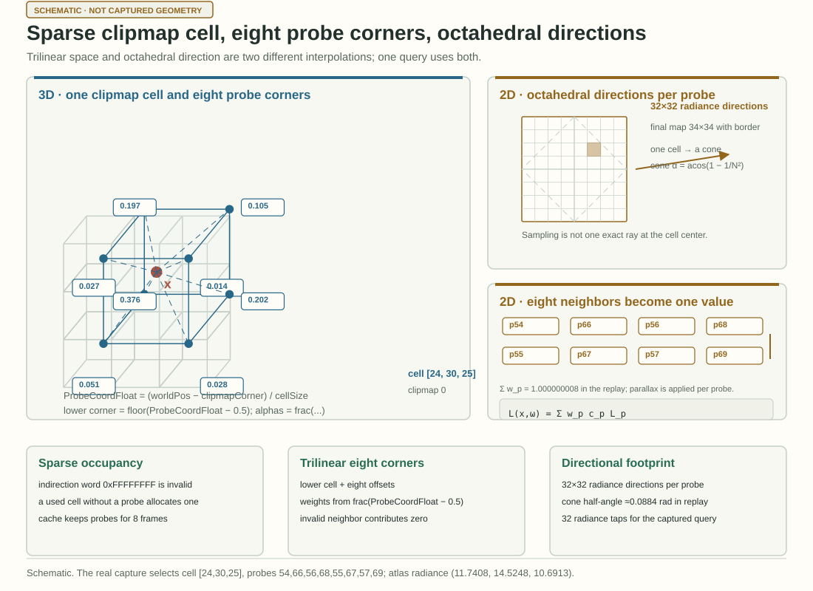

Inspect the captured query. world-cache-replay.json selects compacted lane 190, cell [24, 30, 25], and eight neighbors 54, 66, 56, 68, 55, 67, 57, 69. Their trilinear weights sum to 1.000000008; the replay's cacheRadiance is (11.7408, 14.5248, 10.6913) after the per-probe parallax correction. The real final radiance atlas is 4352×4352 and the lookup uses 32 radiance taps, four bilinear taps per neighbor. Why the drawing differs: the cube is one cell, not the sparse clipmap; the actual indirection words can be 0xFFFFFFFF, the octahedral map is packed into a multi-probe atlas. Inspect the captured indirection slices below for occupancy, not as a picture of the weighted result. capture-world-cache-radiance-indirection-slices is the matching real view.
The implementation optionally uses stochastic trilinear interpolation: instead of sampling all eight probes, it picks one of the eight with probability equal to its trilinear weight (LumenRadianceCacheInterpolation.ush:465-482). The non-stochastic path is also present. The stochastic path reduces the number of probe lookups at the cost of noise, which the screen-probe temporal filter can absorb. Dedicated reflections only reuse the cache when r.Lumen.Reflections.RadianceCache is enabled; that CVar defaults to 0, so cache reuse is off by default. When it is enabled, the reflection-specific stochastic-interpolation CVar defaults to 1 (Engine/Source/Runtime/Renderer/Private/Lumen/LumenReflections.cpp:51-66). The screen-probe gather path uses the interpolation parameters it is given (LumenScreenProbeGather.cpp:2457-2460).
Accuracy and cost. The cache is a coarse representation: 48 cells per clipmap and a 32x32 direction map are much lower resolution than the screen. Its errors are trilinear blur, parallax error near geometry, stale probes, and the fact that a probe's radiance field is assumed to be a single point sample of a complex environment. The parallax correction improves the direction but cannot recover occluders between the probe and the shading point. The budget of 100 probes per frame (at the default update speed) means a moving camera can outrun the cache. The 8-frame retention is a compromise between reuse and staleness.
Implementation checks to run. Mark a controlled query and verify all neighboring probe cells required by its interpolation footprint receive valid indirection entries; distinguish that operation from manually marking one isolated cell. Stop marking a controlled probe and check its retention/freeing against the recorded age policy; camera motion alone does not prove that a neighboring probe stopped being used. Set a small trace budget and check the cost-weighted accepted trace list; downsampled, normal, and supersampled probes consume different budget units, so a budget named one probe need not mean exactly one dispatched probe. Place a bright emitter and a probe near a wall; compare parallax-enabled and disabled results against traced visibility and measure residual leakage; parallax correction does not guarantee occlusion correctness. Compare trilinear interpolation against the explicit weighted sum of its eight probe values; for a fixed valid probe set and fixed weights, check that repeated stochastic selection converges to that weighted mean. Force NumMipmaps = 3 and assert the final atlas has mip 0/1/2 and the border wraps correctly.
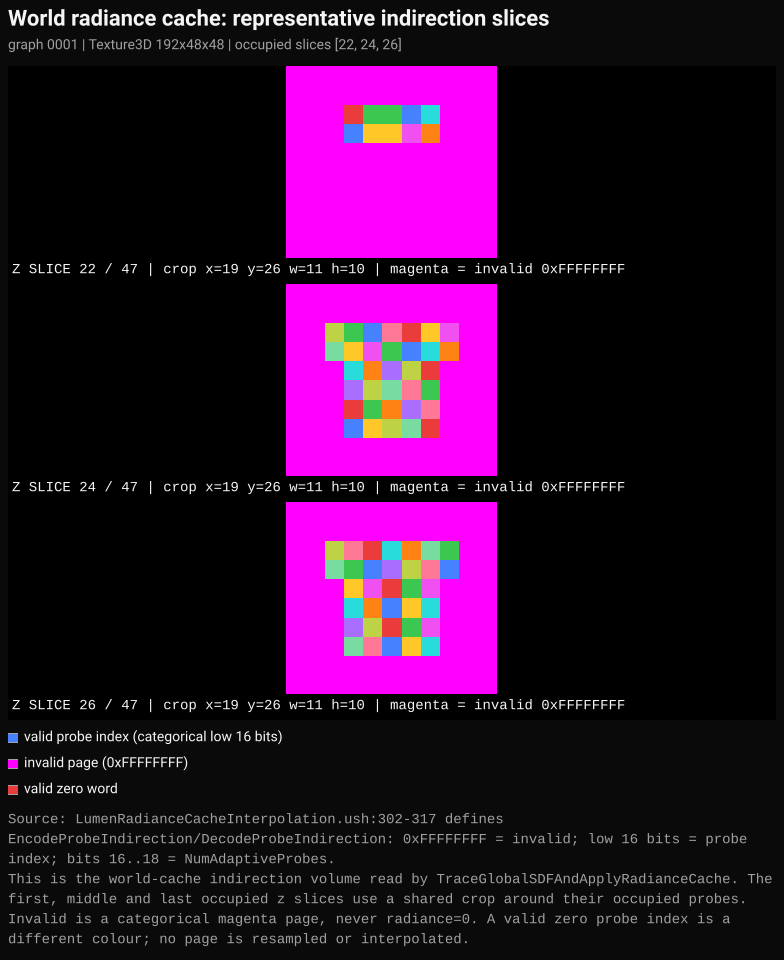
Radiance integration, spatial filtering, temporal reprojection, and upsampling
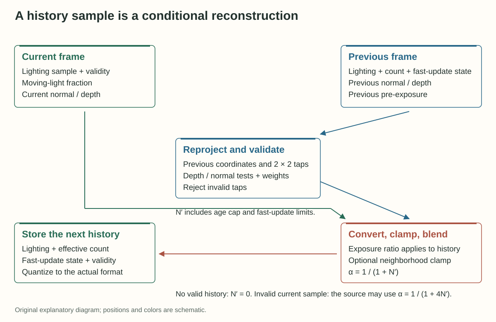
The screen-probe gather produces radiance first, then converts it to irradiance for diffuse integration. This is the part where the names are easiest to confuse.
FilterScreenProbes allocates a ScreenProbeRadiance texture at atlasBufferSize * N_gatherOctahedronResolution, a ScreenProbeHitDistance texture at the same size in PF_R8, a ScreenProbeTraceMoving texture in PF_R8, and an optional ScreenProbeExtraAO texture in PF_R8 (Engine/Source/Runtime/Renderer/Private/Lumen/LumenScreenProbeFiltering.cpp:454-461). ScreenProbeCompositeTracesWithScatterCS combines the trace atlas (which may be at a different resolution) into the gather-resolution radiance atlas, with a max-ray-intensity clamp (default 10) to prevent fireflies and quantization to the lighting format (LumenScreenProbeFiltering.cpp:463-489; :68-71).
The optional probe temporal filter reprojects last frame's probe radiance using the previous screen-position scale/bias and the stored translated world positions, rejects samples whose depth differs by more than the history distance threshold (30 units by default), and blends with a history weight of 0.5 (LumenScreenProbeFiltering.cpp:525-575; :76-87). This is a probe-level temporal filter, separate from the full-resolution pixel-level temporal reprojection later. It is off by default (r.Lumen.ScreenProbeGather.TemporalFilterProbes = 0).
The spatial filter is three passes by default, with a half-kernel size of 1 (LumenScreenProbeFiltering.cpp:583-621; :13-47). Its position weight uses squared relative axial scene-depth difference, not tangent-plane distance: exp2(-S * ((neighborDepth - currentDepth) / currentDepth)^2). An angular gate reconstructs a neighboring hit position using the minimum of neighbor/current hit distances, then compares the resulting direction to the current ray with acosFast. The source uses four cardinal neighbor offsets, adds eight more when the moving-light signal exceeds 0.01, and disables adaptive-neighbor search with FILTER_SEARCH_ADAPTIVE_PROBES=0. A disocclusion amount above 0.5 relaxes the angular gate; this is not a rule rejecting newly accumulated neighbor histories (LumenScreenProbeFiltering.usf:292-296). Accepted neighbor radiance is normalized by the accumulated weights. Tangent-plane weighting appears separately in full-resolution probe interpolation.
The irradiance conversion pass then produces the 6x6 (plus border) octahedral irradiance atlas. The conversion uses the filtered radiance SH and the diffuse transfer SH, as derived in the probe-arithmetic chapter. The code has two paths: a wave-optimized path that builds SH from the radiance atlas and writes the irradiance map (Engine/Shaders/Private/Lumen/LumenScreenProbeFiltering.usf:598-815) and a fallback path that accumulates SH coefficients in groupshared memory (:821-955). The border is handled by OctahedralMapWrapBorder, so bilinear sampling of the irradiance map is seamless across the octahedral seam (:793-808).
The full-resolution integration pass, ScreenProbeIntegrateCS, runs one 8x8 group per tile. It reconstructs the pixel's material, chooses the diffuse integration method, and evaluates one of three paths:
- SH/preintegrated: interpolate the four nearest probes' irradiance maps at the pixel normal, multiply by AO, and optionally add the rough-specular lobe from the same probes (
Engine/Shaders/Private/Lumen/LumenScreenProbeGather.usf:958-1029). - Importance-sample BRDF: sample the BSDF, interpolate radiance from the probe mip chain along the sampled direction, multiply by the BSDF weight and visibility, and normalize (
:1311-1347). The default diffuse integral method is 0 (preintegrated), so this is an optional path. - Numerical integral: iterate over the gather octahedron, evaluate
N dot L, accumulate radiance times the sample weight, and normalize by2*pi/NumValidSamples(:1359-1436). This is the reference path.
The rough-specular part is produced in the same integration pass. If the material's roughness is below the rough-specular cutoff, it traces four virtual specular samples using SampleBxDFWrapper, interpolates radiance from the probe mip chain at a mip derived from the cone angle, applies direction visibility, tonemaps, and averages (LumenScreenProbeGather.usf:1502-1561). The result is written to RoughSpecularIndirect; the diffuse result is written to DiffuseIndirect. The partition factor DiffuseLerp is computed from roughness; at high roughness the specular is DiffuseLighting / PI (the fully rough limit), and at low roughness it is the four-sample rough specular (:1502-1507, :1561).
The pixel-level temporal pass, ScreenProbeTemporalReprojectionCS, uses the previous frame's depth, normal, and material-history validity to reject history, computes NewNumFramesAccumulated = min(weightedHistory + 1, MaxFramesAccumulated), applies a fast-update mode when the lighting is moving, and blends alpha = 1/(1+N). If the current sample is invalid and there is history, it uses alpha = 1/(1+4N) to rely more heavily on history. The history is multiplied by PrevSceneColorPreExposureCorrection before blending, and the result is written back with the new frame count (Engine/Shaders/Private/Lumen/LumenScreenProbeGatherTemporal.usf:522-531; :437, :451; LumenScreenProbeGather.cpp:1746-1755). The default max frames accumulated is 10, scaled by the clamped LumenFinalGatherLightingUpdateSpeed (LumenScreenProbeGather.cpp:227-230, :570-575).
History rejection is done upstream, in the stochastic-lighting tile classification. It reprojects the pixel, gathers a 2x2 depth footprint, and marks each tap valid if the depth difference is below a relative threshold and, optionally, the normal dot product is above a threshold. The Lumen history distance threshold defaults to 0.01 (0.03 for foliage), and the normal threshold defaults to 45 degrees (Engine/Source/Runtime/Renderer/Private/Lumen/LumenScreenProbeGather.cpp:174-186, :241-244; Engine/Shaders/Private/StochasticLighting/StochasticLightingTileClassification.usf:950-1000). This produces a per-pixel PackedPixelData history-validity mask that the temporal pass consumes.
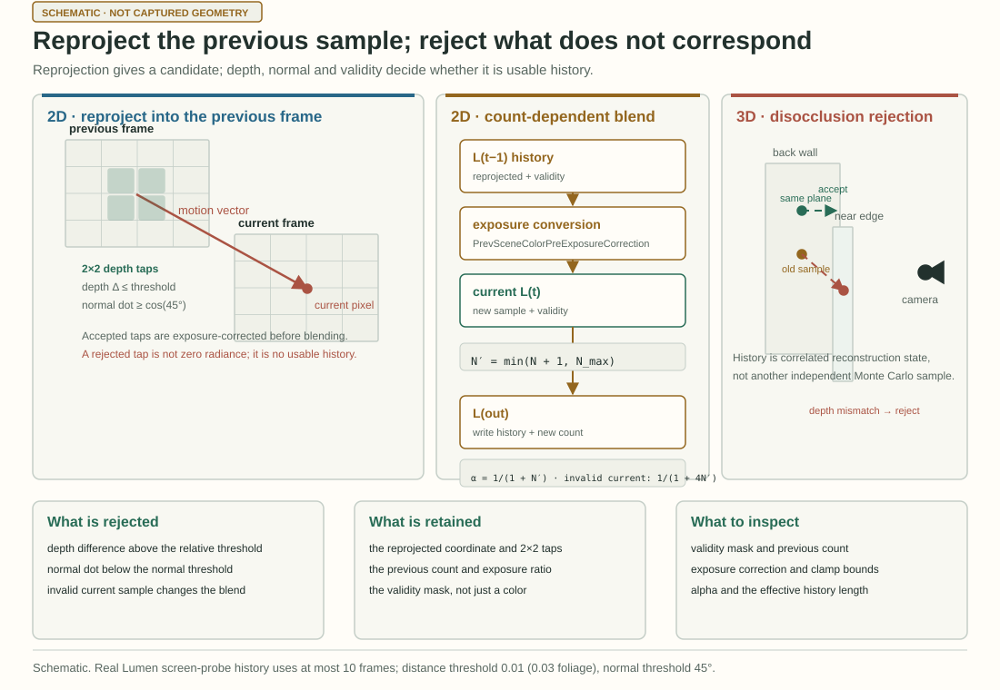

What to inspect in the real state. The pixel pass computes alpha = 1/(1+N) and uses 1/(1+4N) when the current sample is invalid and history exists; history is multiplied by PrevSceneColorPreExposureCorrection before the blend. The rejection footprint uses relative depth thresholds 0.01 (0.03 for foliage) and a normal threshold of 45°; the default maximum history is 10 frames. These are source-backed defaults, not per-pixel measurements. The existing history-reconstruction.svg at the top of this chapter shows the full data flow; this diagram isolates the geometric reject test. Inspect capture-screen-probe-diffuse-indirect (producer pass 181) for the current integration signal entering temporal reconstruction: its INVALID_LIGHTING validity triple is a different declaration from the history-validity mask, so the two buffers must not be conflated.
The real image below is the current integration signal from pass 181, before the pixel temporal reprojection pass 182. It makes the input concrete; it does not display the history-validity mask or frame count. Invalid-lighting triples in this image are not history-rejection bits.
The final upsampling to full resolution uses plane-distance weights, not a naive bilinear upsample. For each of the four nearest probes, it computes the probe's world position from its depth, measures the distance to the pixel's tangent plane, and weights by exp2(depthWeight * (planeDistance / sceneDepth)^2). If a corner has a low weight, it tries the adaptive probes in that tile and picks the one with the highest weight. A fallback set of weights with a weaker depth test fills holes (LumenScreenProbeGather.usf:147-241, :244-301). The integration pass then evaluates the BRDF at full resolution using the interpolated probe lighting. This is why the diffuse indirect output is full resolution even though the probes are 16 pixels apart.
Accuracy and cost. The three-stage filtering (probe temporal, three spatial passes, pixel temporal) is a denoising pipeline. Each stage trades noise for bias or latency. The plane-distance weights reduce light leaking across depth discontinuities but can produce undersampling at grazing angles. The 10-frame temporal accumulation is stable but slow to react; the fast-update mode reduces the effective history when lighting moves, at the cost of noise. The rough-specular path is limited to four samples and a mip-based cone, so it is blurrier and noisier than a dedicated reflection ray at low roughness. The threshold between rough and dedicated reflections is a deliberate quality/performance knob, not a physical boundary.
Implementation checks to run. Feed a constant radiance field and assert the irradiance is constant to within quantization, with no seams at probe borders. Place a moving bright light and assert the fast-update mode reduces the effective history and the image responds faster than the default 10-frame accumulation. Move the camera laterally and assert history is rejected at disocclusions (the history-validity mask should be zero where depth differs by more than the threshold). Compare the three diffuse integration methods on a sphere under a known environment; assert they converge to the same irradiance within noise. Set IntegrateDownsampleFactor = 2 and assert the integration buffer is half-resolution but the final composite is still full-resolution. Sweep roughness and verify continuous transition between the sampled rough-specular response and its fully rough diffuse-response approximation; the entire specular response should not disappear at that cutoff.
The arithmetic inside the probe operators
This supplement expands the operators that otherwise hide behind names such as mapping, filtering and interpolation. The source baseline is Unreal Engine 5.8.1, commit 71fe36aac5a8df5ccd66c763ffc902b29b6a9c43. These are source-derived algorithms. Numerical capture records are separate; a source default is not a measured setting.
Square coordinates, directions, angular cells and ray jitter
The normal encoding in the G-buffer and the equal-area directional parameterization in the probe atlas are different maps. For a directional square coordinate , define
LaTeX source
a=2u_x-1,\quad b=2u_y-1,\quad d=1-|a|-|b|,\quad r=1-|d|,
\qquad \phi=\begin{cases}0&r=0,\\
\frac{\pi}{4}\left(\frac{|b|-|a|}{r}+1\right)&r>0.
\end{cases}
\tag{A01}The unit direction is
LaTeX source
\omega=\left(r\sqrt{2-r^2}\operatorname{sgn}(a)|\cos\phi|,
r\sqrt{2-r^2}\operatorname{sgn}(b)|\sin\phi|,
\operatorname{sgn}(d)(1-r^2)\right).
\tag{A02}This is the forward equal-area map in MonteCarlo.ush:159–173. To see why its Jacobian is constant, restrict temporarily to the upper triangular quadrant . There . Since spherical area is , the absolute Jacobian with respect to is ; changing from to multiplies it by four. Reflections/folds preserve area. Therefore . A square cell of width represents solid angle . This is the quadrature-cell area, not an additional factor to multiply into every later BSDF estimator.
For tracing, the map coordinate is a cell plus a jitter. The active source uses a shared two-component blue-noise lookup for each screen tile:
LaTeX source
j=\mathrm{BlueNoiseVec2}(t,f),\qquad
q_x=t_x\mathbin{\&}m_x,\quad q_y=t_y\mathbin{\&}m_y,\quad
q_f=f\mathbin{\&}m_f,\qquad
j=\mathrm{LUT}[q_x,\ q_fD_y+q_y].
\tag{A03}Here is the screen-tile coordinate, is ScreenProbeRayDirectionFrameIndex, and are the captured BlueNoise dimensions and modulo masks. The logical temporal volume is laid out as a two-dimensional texture. RayInfos alone cannot reproduce the direction: it records the cell and refinement level, while this lookup chooses the within-cell point. Source: LumenScreenProbeTracingCommon.ush:8–19 and BlueNoiseCommon.ush:13–18.
Without importance refinement, , with the trace texel. With refinement, the packed 16-bit RayInfo contains x in bits 0–5, y in bits 6–11, and level in bits 12–15. Decode it, set , and use . The angular cell has area . The code also assigns a cone half-angle
LaTeX source
\alpha=\operatorname{acosFast}(1-M^{-2}),\qquad
\operatorname{acosFast}(v)=
\left(\frac{\pi}{2}-0.156583|v|\right)\sqrt{1-|v|}
\quad(v\ge0),
\tag{A04}with minus that expression for negative v. The exact-arccos target would have cone solid angle , half the equal-area cell area; acosFast introduces another small approximation. Do not replace this footprint by the full cell area when reproducing mip selection. Source: LumenScreenProbeTracingCommon.ush:67–103; FastMathThirdParty.ush:108–114.
The inverse equal-area map normalizes its input direction first. Let , , and . The source approximates with , using these coefficients:
Square coordinates, directions, angular cells and ray jitterColumns: ·
| 0 | 0.00000406758566246788489601959989 |
| 1 | 0.636226545274016134946890922156 |
| 2 | 0.0061572017898280213493197203466 |
| 3 | -0.247333733281268944196501420480 |
| 4 | 0.0881770664775316294736387951347 |
| 5 | 0.0419038818029165735901852432784 |
| 6 | -0.0251390972343483509333252996350 |
Evaluate in float precision with Horner's rule, then fold and restore signs:
v = direction / length(direction)
h = abs(v)
r = sqrt(1 - h.z)
x = min(h.x,h.y) / (max(h.x,h.y) + 2^-64)
p = c6
for i = 5 down to 0: p = ci + p*x
if h.x < h.y: p = 1-p
uv = (r-p*r, p*r)
if v.z < 0: uv = (1-uv.y, 1-uv.x)
uv.x = copysign(uv.x, v.x)
uv.y = copysign(uv.y, v.y)
return 0.5*uv + 0.5The signed-zero behavior of copysign corresponds to the source's sign-bit XOR. Using mathematical atan is a useful reference but does not promise identical texel coordinates. Floating-point rounding near cell boundaries can change the selected point sample. The inverse accepts an unnormalized vector, which matters for the sphere-parallax vector below. Source: MonteCarlo.ush:179–207.
SH projection and cosine convolution without an unexplained factor
The nine real orthonormal basis functions use this source order and sign convention:
LaTeX source
Y(\omega)=\left(
.282095,\,
-.488603y,\,
.488603z,\,
-.488603x,\,
1.092548xy,\,
-1.092548yz,\,
.315392(3z^2-1),\,
-1.092548xz,\,
.546274(x^2-y^2)
\right).
\tag{A05}The entries are rounded source constants; the first is , and the next three are signed versions of times a coordinate. RGB produces three coefficient vectors. Source: SHCommon.ush:232–251.
For equal-area gather texels, the wave reduction stores the mean
LaTeX source
\bar c_{\ell m}=\frac{1}{N_g^2}\sum_i L_iY_{\ell m}(\omega_i),
\quad\text{whereas}\quad
c_{\ell m}=\int_{\mathbb S^2}L(\omega)Y_{\ell m}(\omega)d\sigma
\ \approx\ 4\pi\bar c_{\ell m}.
\tag{A06}The SH directions in this conversion are the cell centers , not the earlier tracing jitter. This deliberately projects the reconstructed gather texture, after scatter/filter operations, into a finite basis. It is not a direct unbiased reweighting of the original rays.
Rotational symmetry of the cosine kernel makes convolution diagonal by SH band. The multiplier is
LaTeX source
A_\ell=2\pi\int_0^1\mu P_\ell(\mu)d\mu,\qquad
A_0=\pi,\quad A_1=\frac{2\pi}{3},\quad A_2=\frac{\pi}{4}.
\tag{A07}For example , so its integral is . Hence the stored irradiance map evaluates
LaTeX source
E(n)\ \approx\ 4\pi
\sum_{\ell=0}^{2}\sum_m
\bar c_{\ell m}A_\ell Y_{\ell m}(n).
\tag{A08}The apparent extra converts the source's coefficient mean back to an integral. Multiplying by during projection and again here would overbrighten the answer by . A constant field gives in the continuous, exact-basis limit. Finite directional quadrature, rounded/half-precision coefficients, reconstruction, and unsigned storage introduce error; this is not a promise of bit-exact constant preservation in every permutation. Source: LumenScreenProbeFiltering.usf:637–670,793–808; SHCommon.ush:291–315.
The 6×6 irradiance samples use normals from the same equal-area map. A wrapped one-texel border makes the physical tile 8×8. The exact integer seam mapping takes a physical tile coordinate , physical tile resolution , and border width , then applies the following operations in order:
if x < B: x = 2*B-1-x; y = R-1-y
if x >= R-B: x = 2*(R-B)-1-x; y = R-1-y
if y < B: y = 2*B-1-y; x = R-1-x
if y >= R-B: y = 2*(R-B)-1-y; x = R-1-x
return (x-B, y-B)The result is an interior-map coordinate. The four tests are sequential; the y tests see coordinates already changed by the x tests. This handles corner texels as well as edges. With , physical maps to interior , while physical maps to . Convert the returned coordinate to directional UV as . This folds across the sphere's seam rather than duplicating a rectangle edge. Source: OctahedralCommon.ush:50–73. Subsequent full-resolution integration samples this irradiance representation, produces for the default diffuse output, and the composite supplies the pixel's diffuse color. The cached irradiance itself is not outgoing material-colored radiance.
The actual screen-probe spatial filter
The active source's first neighbor weight is based on axial scene depth, not on distance to a tangent plane:
LaTeX source
w_{\mathrm{depth}}=
\begin{cases}
2^{-s[(z_j-z_i)/z_i]^2},&z_j\ge0,\\
0,&z_j<0.
\end{cases}
\tag{A09}Here is SpatialFilterPositionWeightScale, and the current probe must already have positive depth. The dimensionless depth ratio makes this weight vary with view depth. Tangent-plane weights appear in a different operation, full-resolution probe interpolation; substituting one test for the other changes the algorithm.
For each neighbor, the same directional texel is sampled. Decode its recorded directional hit distance . A negative decoded distance rejects the neighbor. When the angular gate is active, clamp to if the current hit distance is valid, reconstruct the neighbor world position , and form
LaTeX source
q=x_j+\omega h_j-x_i,\qquad
\theta=\operatorname{acosFast}\left(\frac{q\cdot\omega}{\|q\|}\right),\qquad
w_{\mathrm{angle}}=1-\operatorname{saturate}(\theta/\theta_{\max}).
\tag{A10}The directional field is being reused at a nearby position; this angle tests whether the neighbor's implied hit remains near the current direction. The distance clamp strengthens contact-shadow preservation. The product weights both radiance and optional AO.
A valid center starts with weight one. The normal pass visits four cardinal neighbors at offsets . If the probe's moving-lighting fraction exceeds .01, it disables the angular gate and also visits . When the compiled disocclusion branch is active, a disocclusion value above .5 also disables the angular gate. It does not implement a per-neighbor age rejection. Adaptive-neighbor search is compiled out by FILTER_SEARCH_ADAPTIVE_PROBES=0 in this function.
LaTeX source
L_{\mathrm{filtered}}=
\begin{cases}
(\chi_iL_i+\sum_jw_jL_j)/(\chi_i+\sum_jw_j),&
\chi_i+\sum_jw_j>0,\\
0,&\text{otherwise},
\end{cases}
\tag{A11}where is one only for a valid center directional hit record. Then the pass applies format dithering/quantization. Its dither scalar uses a separate BlueNoiseScalar lookup with frame offset SpatialFilterPassIndex+11. The three-pass pipeline feeds each pass's quantized output into the next. Source: LumenScreenProbeFiltering.usf:292–382,398–491. These are reconstruction weights, not Monte Carlo PDFs.
An exact world-radiance-cache lookup
For a translated-world query position , each clipmap supplies corner , cell size , resolution , and a reciprocal fade width . Compute . Its edge confidence is
LaTeX source
e_l=\min_{a\in\{x,y,z\}}\left\{
\operatorname{saturate}[(q_{l,a}-.5)f],
\operatorname{saturate}[(R-.5-q_{l,a})f]\right\}.
\tag{A12}The first level satisfying is selected. The screen-probe voxel caller passes , rather than a random value. No accepted level means invalid coverage. For the accepted level,
LaTeX source
t_{\mathrm{near}}=t_{\min,l}+\sqrt3\,s_l.
\tag{A13}The caller limits local geometry tracing to that distance before applying distant cache radiance. The coverage helper assumes the relevant cells were marked earlier; it does not itself prove that every indirection entry is allocated. Source: LumenRadianceCacheInterpolation.ush:98–190.
Set and . The eight neighbor weights are
LaTeX source
w_\epsilon=\prod_{k\in\{x,y,z\}}
\begin{cases}a_k,&\epsilon_k=1,\\1-a_k,&\epsilon_k=0,\end{cases}
\qquad \epsilon\in\{0,1\}^3.
\tag{A14}They sum to one. ScreenProbeTraceVoxelsCS uses all eight neighbors: it has no RADIANCE_CACHE_STOCHASTIC_INTERPOLATION permutation. A separate reflection path can select one neighbor from their cumulative probabilities. In that branch, selecting with probability already estimates the weighted mean; multiplying the selected value by again would be wrong. Do not assume that a random argument appearing in a shared helper means stochastic selection is enabled in this caller.
The indirection texture coordinate is . Its 32-bit record reserves 0xffffffff for invalid; otherwise the low 16 bits hold probe index and bits 16–18 hold the adaptive-probe count. This interpolation path obtains the base probe index. Its position is
LaTeX source
p_\epsilon=c_l+(b+\epsilon+.5)s_l+\Delta p_{\mathrm{index}}.
\tag{A15}The offset buffer's shader type is float4, but its storage format can be PF_FloatRGBA, an 8-byte half4, or a 16-byte float4 fallback. Decode its captured typed SRV format; a shader-language float4 declaration does not specify the raw buffer stride. Source: LumenRadianceCache.cpp:1664–1665,1769,2043; LumenRadianceCacheInterpolation.ush:116–128,298–329.
Next, choose the angular mip:
LaTeX source
n_{\mathrm{footprint}}=N_p\sqrt{1-\cos\alpha},\qquad
m=\operatorname{clamp}(\log_2 n_{\mathrm{footprint}},0,m_{\max}).
\tag{A16}The sphere-parallax radius is , where is ReprojectionRadiusScale. The source substitutes 1000 world units when . With , solve
LaTeX source
A=\omega\cdot\omega,\quad B=2\omega\cdot v,\quad
C=v\cdot v-r_p^2,\quad
t_+=\frac{-B+\sqrt{B^2-4AC}}{2A},\quad
d_\epsilon=x+t_+\omega-p_\epsilon.
\tag{A17}Use the farther sphere intersection. The source helper returns -1 for both intersections if the discriminant is negative; it does not implement an alternate physically exact transport path. The configured coverage/radius should keep the intended query inside the proxy sphere. A replay must record discriminant and denominator and flag violations rather than silently inventing a fallback.
The lookup direction is , normalized inside the inverse equal-area map. The radiance correction is
LaTeX source
C_\epsilon=
\frac{t_+^2}{r_p(d_\epsilon\cdot\omega)}.
\tag{A18}Both numerator and denominator have units of length squared. This factor compensates the proxy sphere's attenuation pattern; it is part of the biased reprojection model, not a BRDF or a probability. The proposed depth-based bypass of sphere parallax is under a conditional ending in “and 0” and is disabled at this source revision. Source: LumenRadianceCacheInterpolation.ush:332–402; Common.ush:1962–1983.
Convert probe index to a two-dimensional atlas tile using the captured mask/shift. With tile coordinate , final tile size , tracing angular size , border , inverse-map coordinate , and full atlas dimensions , the sample UV is
LaTeX source
U_\epsilon=
\frac{N_f t_p+N_pu_\epsilon+B}{A_{\mathrm{atlas}}}.
\tag{A19}At mip , ordinary bilinear sampling uses , lower coordinate , fractional coordinate , and four products of the two fractional weights. A fractional mip blends the results of and . Clamp addressing applies at the texture edge; the generated per-probe border supplies the angular seam samples inside the atlas. Record the exact contributing mip texels and their packed values, not just a preview of the atlas.
The resulting radiance is
LaTeX source
L_{\mathrm{cache}}(x,\omega)=
\sum_{\epsilon}w_\epsilon C_\epsilon
\,\mathrm{TextureSample}(U_\epsilon,m)
\,\mathrm{OneOverCachedLightingPreExposure}.
\tag{A20}The depth atlas is sampled separately, with point integer indexing at tracing resolution and no final-radiance border. Its R16_UINT record uses the fp16 sign bit for frontface, the lowest mantissa bit for two-sidedness, and 0xffff for a miss; valid distance is decoded from bits masked by 0x7ffe, while a miss reports 65503 world units. These hit distances are trilinearly combined for later AO, leaking and fog calculations. They do not enable the disabled depth-parallax test. Source: LumenRadianceCacheInterpolation.ush:214–232,245–292,406–410.
Optional sky-visibility storage is dimensionless and has a separate resolve branch; a replay of a capture with UseSkyVisibility=0 must not read it as a required operand. Likewise no division by a BSDF PDF occurs in this interpolation. It reconstructs incoming radiance to be consumed by the later integration estimator.
Applying the cache and accounting for temporal state
At the screen-probe voxel caller, let and be the lighting and remaining transparency after local geometry/hair tracing. When coverage is valid and , cache application performs
LaTeX source
L\leftarrow L_{\mathrm{near}}+\tau L_{\mathrm{cache}},
\qquad \tau\leftarrow0.
\tag{A21}ShowBlackRadianceCacheLighting can suppress the added cache lighting while still consuming transparency. The caller then applies skylight leaking, current view pre-exposure, optional height fog and output-format dithering. Therefore the final TraceRadiance texture is not generally equal to the cache subtotal. A numerical replay must either capture those shader-local pre/post values, reproduce the preceding local trace and subsequent operations, or clearly label its boundary as the cache lookup sub-operation. Source: LumenRadianceCacheInterpolation.ush:499–513; LumenScreenProbeTracing.usf:828–870.
For the later pixel history, the source uses validity-masked bilinear weights to compute both prior color and prior frame count. If is the weighted prior count, first form . The moving-lighting response is
LaTeX source
f_0=\operatorname{saturate}(M\,s_M),\qquad
f_1=\operatorname{saturate}\left(\min\left(\frac{f_0-.2}{.8},f_{\max}\right)\right),
\qquad f=\max(f_1,\min(\bar f_{\mathrm{history}},f_{\max})).
\tag{A22}Then , with when no history tap is valid. Valid history colors are converted by PrevSceneColorPreExposureCorrection before blending. Optional neighborhood clamping modifies them before the blend, so this is not simply a running sample mean:
LaTeX source
\alpha=\frac1{1+N'},\qquad
L_{\mathrm{out}}=(1-\alpha)L_{\mathrm{history,converted,clamped}}
+\alpha L_{\mathrm{current}}.
\tag{A23}If the current lighting sample is invalid and , the source changes the denominator to . This does not make the history an independent Monte Carlo sample; it deliberately increases persistence. Every replay must retain the four validity bits, bilinear weights, exposure ratio, previous counts and fast-update amounts, current moving fraction and invalid-lighting flag, clamp permutation and neighborhood, and the quantization of the stored history. Source: LumenScreenProbeGatherTemporal.usf:437–531.
Connection to the transport derivation
Connection to the transport derivationColumns: Explicit operation · Connection to the earlier framework
| Explicit operation | Connection to the earlier framework |
|---|---|
| A01–A04, equal-area cells and jitter | Specify the sampling domain behind M19; a cell area, a conditional within-cell density, and a later BSDF PDF have different roles. |
| A05–A08, SH projection and cosine convolution | Instantiate the reduced angular representation inside the approximation operator, producing irradiance; M36 converts cached irradiance to outgoing radiance with the material closure. |
| A09–A11, screen-probe spatial reconstruction | Supply concrete weights and validity decisions for M43/M45. The nonlinear hit clamp and moving/disocclusion branches make them data dependent. |
| A12–A20, world-cache reconstruction | Define another M43 reconstruction with eight spatial weights, angular atlas filtering and sphere-parallax correction; the stored radiance is the boundary value substituted into transport. |
| A21, cache application | Explicitly supplies the incoming-radiance term consumed by M19's later material estimator, weighted by remaining local-trace transparency. |
| A22–A23, history | Expand M44's temporal recurrence and M45's validity/exposure input contract; this history is correlated reconstruction state. |
Dedicated reflections, roughness partition, and exposure history
Dedicated reflections are a separate pass from the screen-probe rough specular. The reflection method is selected per view; ShouldRenderLumenReflections requires the Lumen reflection method, a valid tracing representation, and, for standalone passes, HWRT hit-lighting support (Engine/Source/Runtime/Renderer/Private/Lumen/LumenReflections.cpp:764-778). The pass is invoked after the final gather, because it receives the screen-probe radiance-cache parameters and the mesh SDF grid (Engine/Source/Runtime/Renderer/Private/IndirectLightRendering.cpp:1177-1238). The radiance-cache reuse itself is off by default; the parameter block is still passed so the optional path is available.
The reflection pipeline is:
- Tile classification. The pass classifies 8x8 tiles into reflection work and clear lists, optionally with a downsample factor. It builds resolve/tracing tile data and indirect args (
LumenReflections.cpp:797-951). - Generate rays.
FReflectionGenerateRaysCSreads the G-buffer, computes the specular reflection direction, applies the GGX sampling bias (0.1 by default), decides whether to use the radiance cache for this roughness, and writes the ray buffer and the downsampled depth/closure index (LumenReflections.cpp:1389-1434;:137-143). The reflection downsample factor defaults to 1, and the checkerboard path is off (:29-41). - Trace.
TraceReflectionsclears the trace buffer, traces the screen HZB, then either HWRT or SWRT mesh SDFs/global SDF, in the same cascade pattern as the screen probes (Engine/Source/Runtime/Renderer/Private/Lumen/LumenReflectionTracing.cpp:1149-1410). The screen trace uses a relative depth thickness of 0.005, a history depth test of 0.005, and 50 max iterations (LumenReflectionTracing.cpp:38-67). - Resolve.
FLumenReflectionResolveCSreconstructs a full-resolution specular signal from the (possibly downsampled) trace buffer. It optionally uses a screen-space reconstruction kernel (5 samples by default, scaled by quality) and spatial reconstruction (LumenReflections.cpp:1494-1638;:194-216). - Denoise. The temporal pass reprojects last frame's specular and second moment, rejects history by depth and normal, applies a neighborhood clamp (scale 1.0 by default), and blends with
alpha = 1/(N + (bReconstructed ? 4 : 0)). The max frames accumulated is 12 by default (LumenReflections.cpp:145-178,:1650-1775;Engine/Shaders/Private/Lumen/LumenReflectionDenoiserTemporal.usf:543-546). The spatial pass is a bilateral filter with a depth weight scale of 10000, 4 samples by default, and a disocclusion cap (LumenReflections.cpp:239-273,:1782-1825). - Composite. The final
SpecularIndirecttexture is consumed byDiffuseIndirectComposite, where it is combined with the rough specular from the probe gather.
The exposure-history handling is explicit. The temporal reflection pass multiplies the history specular by PrevSceneColorPreExposureCorrection and the history second moment by the square of that correction (LumenReflectionDenoiserTemporal.usf:259-260). The histories must be converted into a consistent radiometric scale before reuse; their numeric exposure factors are not necessarily identical: direct lighting and radiosity write pre-exposed values, card emissive is pre-exposed, and the surface-cache sample divides by the cached pre-exposure (LumenSceneDirectLighting.usf:163; LumenCardBasePass.ush:147; LumenSurfaceCacheSampling.ush:314-325). This is what keeps a history buffer valid when the eye adaptation/exposure changes: the stored values are in a pre-exposed space, and the history is corrected by the ratio of current to previous pre-exposure before blending.
The roughness partition is the key to avoiding double counting. SetupCompositeParameters sets MaxRoughnessToTrace from the post-process setting, clamped by the scalability cvar (default clamp 1.0), and a fade length of 0.1 (LumenReflections.cpp:422-438; :108-135). LumenCombineReflectionsAlpha computes saturate((MaxRoughnessToTrace - Roughness) / FadeLength) (LumenReflectionsCombine.ush:12-16). In the composite:
L_spec = RoughSpecular * (1 - alpha) + TracedSpecular * alpha.
If the reflection method is SSR, SetupCompositeParameters sets MaxRoughnessToTrace = -1, so alpha = 0 and the rough probe specular is used as the fallback; the composite then lerps toward the SSR result using the SSR alpha mask (LumenReflections.cpp:434-438; DiffuseIndirectComposite.usf:230-241). If there are no dedicated reflections and no SSR, the reflection texture is the rough specular texture itself, so the composite still has a single specular signal (IndirectLightRendering.cpp:1235-1238). If the method is Lumen but the reflection pass does not run for some reason, the rough specular remains the fallback.
The clearcoat path is a separate partition. NeedsLumenClearCoatRoughReflections and ClearCoatLayerCombine split the top-layer and bottom-layer specular, and MixSpecularAndRoughReflections is applied per layer (LumenReflectionsCombine.ush:27-35; DiffuseIndirectComposite.usf:246-257). The same alpha logic applies to the top layer with its own roughness. This is why a clear-coated material can have a smooth top reflection and a rough base reflection without either being counted twice.
Accuracy and cost. Dedicated reflection rays target specular detail that the rough probe reconstruction cannot retain, but they are limited by the selected tracing representations: screen HZB only describes screen-visible depth, and a selected history-color input may additionally be stale, SDFs are biased, and hardware tracing has scene-dependent cost and geometry fidelity. The roughness cutoff is a quality decision: above it, the probe's four-sample rough specular is used, which is cheaper but blurrier. The temporal denoiser introduces latency and can ghost moving objects; the neighborhood clamp and depth/normal rejection are the mitigations. The second-moment history is a variance estimate used by the spatial filter, not a separate lighting term.
Implementation checks to run. Set roughness to 0 and assert the reflection is entirely the dedicated ray result; set roughness to 1 and assert it is entirely the rough probe result. Sweep roughness across the cutoff and assert the two representation weights sum to one and there is no visible double image. Compare a mirror reflecting an emissive quad against the quad's actual radiance; assert the reflection preserves the quad's shape better than the rough probe. Move a reflective object and compare disocclusion rejection and residual trails against a no-history reference, reporting an explicit error tolerance and settling time. Change exposure between frames and measure residual history error after applying the documented exposure conversion. Enable SSR and assert the SSR alpha mask replaces the Lumen trace where SSR has a hit, while rough specular remains outside the mask.
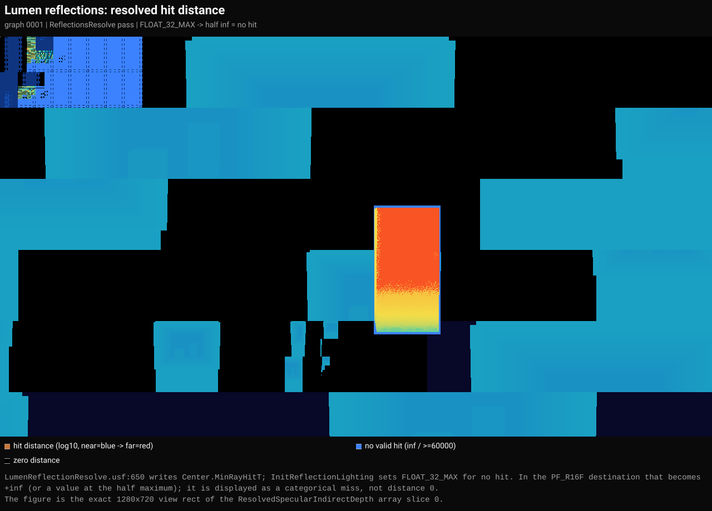
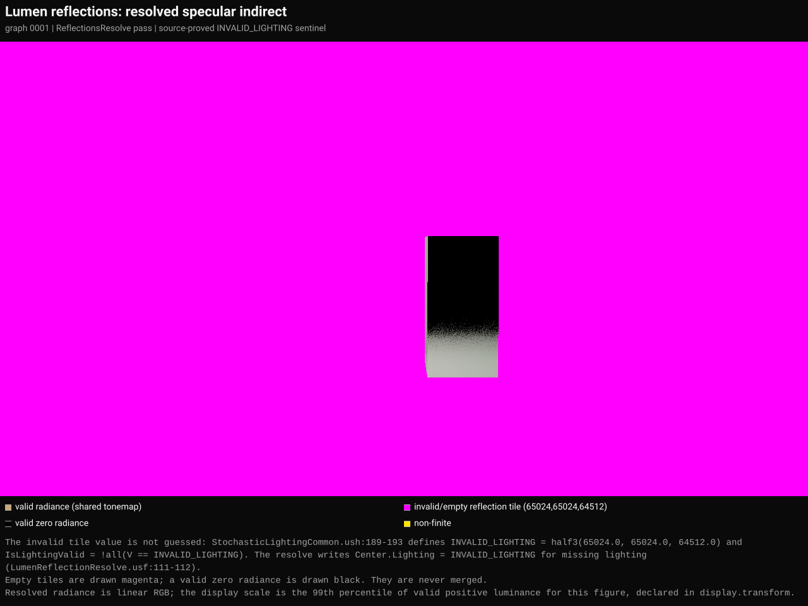
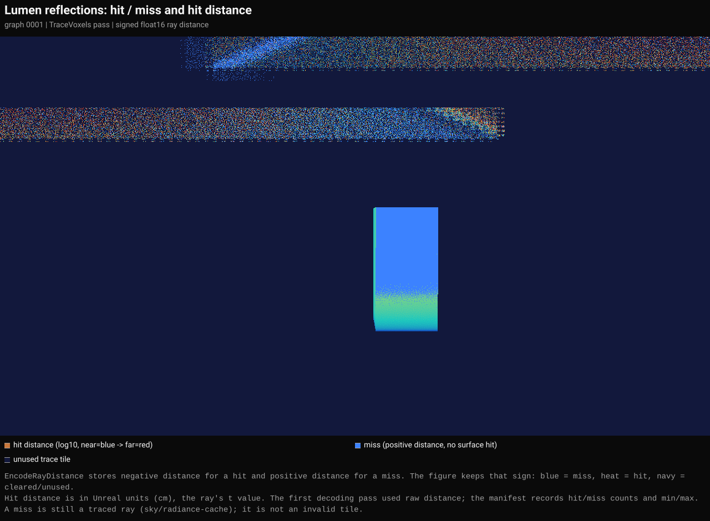
Resource families and the complete captured-data catalog
The following table orients the reader to major resource families. The companion captured-resource catalog and source schema dictionary carry the per-pass bindings, resource versions, subresources, packed fields, uniforms, and decoding coverage needed to inspect the complete captured computation; this compact table is not that exhaustive inventory. S is SurfaceCacheResolution (the quality scalar used by the scene data; 1.0 in the absence of a project override). A_pages = clamp(ceil(CVarAtlasSize / 128) * S, 1, 64), A = 128 * A_pages; at defaults A = 4096. C_pages = ceil(A_pages / sqrt(CardCaptureFactor)), with the minimum/maximum clamps described in the card-capture chapter; at defaults C = 512. N_t = 8, N_g = 8, N_gb = 10, D = 16, Wp = ceil(W / D), Hp = ceil(H / D), Ha = Hp + floor(0.5 * Hp), B = Wp x Ha. R = 32, F = R + 2*(1 << (NumMipmaps - 1)), default F = 34. P = 128 probes per atlas axis by default.
Resource families and the complete captured-data catalogColumns: Resource (actual name where allocated) · Format · Dimensions / stride · Producer → consumer
| Resource (actual name where allocated) | Format | Dimensions / stride | Producer → consumer |
|---|---|---|---|
Lumen.PageTable |
ByteAddressBuffer, 8 bytes/page |
max(1024, next_pow2(num_pages)) elements |
Page mapping/upload → all card tracing |
Lumen.CardPageData (CardPageData) |
StructuredBuffer<float4>, 5 float4/page |
80 bytes/page; one per virtual page | Page-table mapping → sampling/lighting |
Lumen.CardData |
StructuredBuffer<float4>, 7 float4/card |
112 bytes/card | Card build/update → tracing |
Lumen.MeshCardsData |
StructuredBuffer<float4>, 6 float4/mesh-cards |
96 bytes/mesh-cards | Mesh-card update → tracing |
Lumen.SceneDepth |
PF_G16 (2 bytes) |
A x A |
Card capture → surface-cache sampling |
Lumen.SceneAlbedo |
PF_BC7 (1 byte) or PF_R8G8B8A8 |
A x A |
Card capture → surface-cache sampling |
Lumen.SceneNormal |
PF_BC5 (1 byte) or PF_R8G8 |
A x A |
Card capture → surface-cache sampling |
Lumen.SceneEmissive |
PF_BC6H (1 byte) or PF_FloatR11G11B10 |
A x A |
Card capture → surface-cache sampling |
Lumen.SceneDirectLighting |
lighting format, default PF_FloatR11G11B10 |
A x A |
Direct-lighting pass → final-lighting combine |
Lumen.Radiosity.SceneIndirectLighting |
lighting format | A / RadiosityDownsample (1 at defaults) |
Radiosity integrate → final-lighting combine |
Lumen.SceneFinalLighting |
lighting format | A x A |
Combine → radiosity ray hits, reflections, surface-cache sampling |
Lumen.SceneDirectLighting.DiffuseLightingAndSecondMomentHistory |
PF_FloatRGBA |
A x A, only when stochastic direct lighting is on |
Stochastic direct lighting history |
Lumen.SceneDirectLighting.NumFramesAccumulatedHistory |
PF_G8 |
A x A |
Stochastic direct lighting history |
Lumen.Radiosity.TraceRadianceAtlas |
lighting format | (ceil(A / Spacing) * Hres) x (ceil(A / Spacing) * Hres); default 4096² |
Radiosity trace → SH conversion |
Lumen.Radiosity.TraceHitDistanceAtlas |
PF_R16F |
same as trace radiance | Radiosity probe occlusion |
Lumen.Radiosity.ProbeSHRed/Green/BlueAtlas |
PF_FloatRGBA |
ceil(A / Spacing) x ceil(A / Spacing); default 1024² |
SH conversion → integration |
Lumen.Radiosity.NumFramesAccumulatedAtlas |
PF_G8 |
(A/8) x (A/8); default 512² |
Integration → temporal accumulation |
Lumen.CardCaptureAlbedoAtlas |
PF_R8G8B8A8 |
C x C; default 512² |
Card material pass → copy to SceneAlbedo |
Lumen.CardCaptureNormalAtlas |
PF_R8G8B8A8 (XY used) |
C x C |
Card material pass → copy to SceneNormal |
Lumen.CardCaptureEmissiveAtlas |
PF_FloatR11G11B10 |
C x C |
Card material pass → copy to SceneEmissive |
Lumen.CardCaptureDepthStencilAtlas |
PF_DepthStencil |
C x C |
Card material pass → copy to SceneDepth |
Lumen.ScreenProbeGather.ScreenProbeSceneDepth |
PF_R32_UINT |
B (probes) |
Downsample → probe tracing |
Lumen.ScreenProbeGather.ScreenProbeWorldNormal |
PF_R8G8 |
B |
Downsample → probe tracing |
Lumen.ScreenProbeGather.ScreenProbeWorldSpeed |
PF_R16_UINT |
B |
Downsample → temporal/fast update |
Lumen.ScreenProbeGather.ScreenProbeTranslatedWorldPosition |
PF_A32B32G32R32F |
B |
Downsample → temporal/probe tracing |
Lumen.ScreenProbeGather.TraceRadiance |
lighting format | B * N_t; default 8x scale |
Screen/HWRT/SWRT trace → composite |
Lumen.ScreenProbeGather.TraceHit |
PF_R32_UINT |
B * N_t |
Trace → compaction |
Lumen.ScreenProbeGather.ScreenProbeRadiance |
lighting format | B * N_g; default 8x scale |
Composite/filter → integration |
Lumen.ScreenProbeGather.ScreenProbeHitDistance |
PF_R8 |
B * N_g |
Filter → integration |
Lumen.ScreenProbeGather.ScreenProbeTraceMoving |
PF_R8 |
B * N_g |
Composite → moving-light logic |
Lumen.ScreenProbeGather.ScreenProbeExtraAO |
PF_R8 |
B * N_g |
Trace/filter → integration |
Lumen.ScreenProbeGather.ScreenProbeIrradianceWithBorder |
lighting format | (B.x * 8) x (B.y * 8) |
Convert-to-irradiance → integration |
Lumen.ScreenProbeGather.ScreenProbeFilteredRadianceWithBorder |
lighting format, mips | (B.x * 10) x (B.y * 10), 1 mip default |
Filter/fixup → rough-specular mip sampling |
Lumen.ScreenProbeGather.ScreenTileAdaptiveProbeHeader |
PF_R32_UINT |
Wp x Hp |
Adaptive placement → interpolation |
Lumen.ScreenProbeGather.ScreenTileAdaptiveProbeIndices |
PF_R16_UINT |
(Wp*D) x (Hp*D) |
Adaptive placement → interpolation |
Lumen.ScreenProbeGather.NumAdaptiveScreenProbes |
PF_R32_UINT |
1 element | Adaptive spawn → indirect setup |
Lumen.ScreenProbeGather.AdaptiveScreenProbeData |
PF_R32_UINT (structured) |
max(floor(uniform*0.5),1) elements |
Adaptive spawn → probe lookup |
Lumen.Reflections.ReflectionRayBuffer |
PF_FloatRGBA |
reflection buffer size (view/downsample) x closure count | Generate rays → trace |
Lumen.Reflections.TraceRadiance |
PF_FloatRGB |
reflection buffer size | Trace → resolve |
Lumen.Reflections.TraceHit |
PF_R16F |
reflection buffer size | Trace → resolve |
Lumen.Reflections.ResolvedSpecularIndirect |
PF_FloatRGB |
effective resolution x closure count | Resolve → denoise/composite |
Lumen.Reflections.SpecularAndSecondMoment |
PF_FloatRGBA |
effective resolution x closure count | Temporal → spatial → composite |
Lumen.RadianceCache.RadianceProbeIndirectionTexture |
Texture3D<uint> |
(48*4, 48, 48) default |
Mark/allocate → interpolation |
Lumen.RadianceCache.FinalRadianceAtlas |
lighting format, mips | (128*34) x (128*34) default, 1 mip |
Trace/filter/fixup → interpolation/reflections |
Lumen.RadianceCache.DepthProbeAtlasTexture |
PF_R16_UINT |
(128*32) x (128*32) default |
Trace → distance interpolation for AO, leaking and fog |
Lumen.RadianceCache.TempRadianceProbeAtlas |
lighting format | TempAtlasProbes * R |
Trace/filter working buffer |
Lumen.RadianceCache.ProbeTraceData |
Buffer<float4> |
one per allocated/traced probe | Allocate → trace |
Lumen.RadianceCache.ProbeTraceTileData |
Buffer<uint2> |
one per 8x8 trace tile | Generate tiles → trace |
Lumen.RadianceCache.ProbeLastUsedFrame |
Buffer<uint32> |
one per probe | Mark/allocate → priority |
Lumen.RadianceCache.ProbeFreeList |
Buffer<uint32> |
one per probe | Allocate/free → reuse |
Two clarifications about the table:
- The surface-cache formats are compression-dependent. The layer config uses
PF_BC7/PF_BC5/PF_BC6Hwhen compression is active andPF_R8G8B8A8/PF_R8G8/PF_FloatR11G11B10when it is not; the depth layer is alwaysPF_G16(Engine/Source/Runtime/Renderer/Private/Lumen/LumenSurfaceCache.cpp:99-106).r.LumenScene.SurfaceCache.Compressdefaults to 1, and the actual mode depends on RHI support for UAV aliasing or lossy framebuffer compression (LumenSurfaceCache.cpp:27-78). Do not hard-code BC formats in a from-scratch clone unless the clone also implements the corresponding compression path. - The "dimensions" are the allocated texture sizes, not the number of valid texels. The atlas is a fixed grid; only the pages referenced by page-table entries are meaningful.
Accuracy, cost, and the limits that matter
The following table connects each mechanism to its approximation and the test that exposes it.
Accuracy, cost, and the limits that matterColumns: Mechanism · What is approximated · Typical error · Cost driver · Diagnostic test
| Mechanism | What is approximated | Typical error | Cost driver | Diagnostic test |
|---|---|---|---|---|
| Card coverage | Bounded directional surface parameterizations and capture layers | Missing material/lighting coverage, dropped small clusters | Voxel grid, 32 rays/cell, cluster count | Compare card coverage against rasterized mesh; sweep max card count |
| Card resolution | One texel per projected-size estimate | Magnification when camera approaches | Page count, capture texels | Move camera; inspect mip transitions and resample seams |
| Page allocator | Nearest-first, LRU, bounded capture | Stale/black pages under pressure | Page count, capture budget, evictions | Force atlas pressure; check fallback page indices |
| Direct lighting | Shadow representation, not the light integral | SDF bias, missing thin occluders | Light-tile pairs, shadow rays | Compare directional/point/rect against brute force |
| Radiosity | 4-texel probe spacing, 16 rays, SH2, 4-frame history | Blur, ringing, light leak | Probe count, trace count, filter | Closed box energy; wall leak with/without plane weighting |
| Screen probes | 16-pixel grid, 8x8 traces, 6x6 irradiance | Missed thin features, low-pass lighting | Probe count, trace count | Depth-step and thin-occluder tests |
| HZB tracing | Current visible depth layer; separately selected current/history radiance | Off-screen/behind-camera misses | Iterations, resolution | Move geometry off-screen; check fallback hit |
| Mesh/global SDF | Voxelized occlusion, expanded surface | Over-occlusion, missed thin features | Steps, voxel size | Thin-wall and grazing-angle tests |
| Radiance cache | 48-cell clipmaps, 32x32 directions, 100 probes/frame | Blur, parallax error, staleness | Probe budget, trace tiles | Budget=1; move camera and inspect reuse |
| Probe filtering | 3 spatial passes, 10-frame history | Ghosting, over-blur | Passes, history length | Moving light/object; disocclusion mask |
| Dedicated reflections | Roughness cutoff, 4 samples for rough, 12-frame history | Noise below cutoff, blur above | Ray count, resolution, denoise | Roughness sweep; mirror test |
| Composite | Roughness fade and SSR fallback | Seam at cutoff if weights wrong | Negligible | Sum-of-weights test |
Cached radiance versus irradiance
This distinction is worth stating separately because it explains many of the buffer names.
- Radiance
Lis directional: units of power per area per solid angle. The radiosity trace atlas, the screen-probe trace atlas, the filtered screen-probe radiance atlas, the radiance-cache final radiance atlas, and the reflection trace buffers store radiance. - Irradiance
Eis the cosine-weighted integral of radiance over the hemisphere: units of power per area. The card direct-lighting atlas, the card radiosity/indirect-lighting atlas, the screen-probe irradiance atlas, and the optional radiance-cache irradiance atlas store irradiance. - The card final-lighting atlas stores pre-exposed outgoing radiance after multiplying pre-exposed irradiance by
albedo/piand adding pre-exposed emissive. The surface-cache lookup divides byCachedLightingPreExposurebefore returning scene-linear radiance at a ray hit (LumenSurfaceCacheSampling.ush:314-325). - The radiosity SH atlases store incident-radiance moments; despite the source variable name
IrradianceSH, cosine transfer is applied at integration time. The screen-probe irradiance SH path stores ambient plus directional coefficients.
These quantity names describe physical roles; stored lighting values also carry the explicitly recorded cached or view pre-exposure scale. A from-scratch implementation should keep both quantity and exposure convention explicit in code and in buffer names. Multiplying an irradiance buffer by pi or dividing a radiance buffer by pi at the wrong stage produces a constant energy error that is easy to miss visually but breaks comparisons against a reference.
Geometry representation versus radiance representation
Lumen deliberately separates how visibility is represented from how radiance is represented:
- Geometry visibility can use mesh SDFs, the global SDF, a hardware BVH, or screen depth/HZB. Card/page data determines surface-cache coverage and material/radiance lookup after a hit; it is a separate representation.
- Radiance can be card texels, screen-probe octahedral maps, world radiance-cache probes, or the reflection trace buffer.
These choices are independent. HWRT can trace a BVH and shade the hit from the card surface cache (the default lighting mode); that is BVH visibility with card radiance. SWRT can trace mesh SDFs and shade from the same card radiance; that is SDF visibility with card radiance. Hit lighting changes the radiance representation at the hit (evaluate the material), not the visibility representation. The screen-probe gather changes sampling and radiance reconstruction while its rays use the selected screen-depth/SDF/BVH geometry and hit-lighting representation. A from-scratch renderer can therefore implement the radiance cache and probe integration before implementing any particular ray tracer, as long as it provides a TraceRay interface that returns a hit point, normal, distance, and radiance.
The corollary is that "Lumen quality" is not one knob. Card resolution, probe spacing, trace resolution, radiance-cache resolution, and reflection roughness cutoff are independent approximations. Improving one does not fix the errors of another.
Visibility, bias, time, and roughness limitations
Visibility. Screen tracing is limited to the screen-depth geometry and selected current/history color input. HZB geometry and color history are distinct resources; history color is reprojected and validated. They miss off-screen geometry, backfaces, and newly disoccluded surfaces. SDFs see a voxelized approximation and can miss thin features or over-occlude due to surface expansion. Surface-cache shading additionally requires valid card coverage; this is distinct from visibility. HWRT sees the configured BVH geometry, with its selected translucency/foliage semantics and scene-dependent cost. The cascade is designed so that each representation handles the rays it is good at, but no representation is complete.
Bias. Every ray trace needs a bias to avoid self-intersection. The source has separate biases for mesh SDF, heightfield, global SDF, and HWRT direct-lighting shadows (LumenSceneDirectLighting.cpp:118-143), a mesh SDF volume surface bias and expand-surface term (LumenSoftwareRayTracing.ush:176-256), a screen-trace relative depth thickness, and a history depth test. These biases are not small implementation details; they determine whether thin walls leak and whether contact shadows appear. A from-scratch clone should expose them as named parameters and test them with thin geometry.
Time. Almost every Lumen signal is temporally accumulated or budgeted: radiosity is capped at 4 frames, screen probes at 10, reflections at 12, radiance-cache probes are kept for 8 frames and updated at 100 per frame, and card pages are captured at 300 per frame. The result is latency: a lighting change propagates over several frames, and a fast camera can outrun the cache. The temporal filters reduce noise at the cost of ghosting. The fast-update modes reduce history when lighting moves, at the cost of noise.
Roughness. Rough specular is the hardest case for a probe-based renderer. A rough surface integrates a wide lobe, so it needs many samples or a prefiltered radiance map. Lumen uses the probe mip chain and a four-sample rough-specular estimate, and it switches to dedicated rays only below MaxRoughnessToTrace. The cutoff is a quality decision, not a physical one. Above the cutoff, the reflection is blurrier and may lose contact detail; below it, the dedicated ray can be noisy and is denoised over 12 frames. The clearcoat path splits the top and bottom layers, but each layer still has its own roughness cutoff.
From-scratch implementation sequence and tests
This sequence is ordered so that each stage can be validated independently. It assumes a simple renderer with a depth buffer, a G-buffer or material evaluation, a ray-trace interface, and a compute pipeline. It does not assume Unreal's RDG or shader permutations.
Phase 0: data model and coordinate tests
Implement Card { OBB, cardUV, pageTableIndex }, Page { physicalRect, samplePageIndex, bias, resLevels }, and Probe { position, clipmap, radianceAtlasBlock }. Define P_card, P_oct, I_probe, and I_rad as functions with unit tests. Test that P_card round-trips a world point on a card to UV and back, that P_oct round-trips directions, and that P_oct's texel solid angles sum to 4*pi.
Phase 1: offline card build
Implement the six-direction voxel/surfel/cluster pipeline on a box, a cylinder, and an L-shaped wall. Validate that a box gets cards on all six sides, that a cylinder has the expected directional capture coverage under the six-axis build, and that the L-wall's interior corner is covered by at least one card. Compare card coverage against a rasterized mesh from several views; assert coverage is above a chosen threshold and that no card has zero area. This is the first place a from-scratch implementation will discover that card clustering is the hard part, not the ray casting.
Phase 2: virtual page table and allocator
Implement the 128-texel physical page, 127-texel virtual page, mip levels 3-11, and the sub-allocation bins. Test allocate/free patterns, page-table fallback, and atlas pressure. Render a debug view of the atlas with each card tinted a different color; assert no card's physical rect overlaps another and that every sampled card UV resolves to a mapped page or a parent fallback.
Phase 3: card capture
Render the mesh into the orthographic card view with a simple material that outputs albedo, normal, and emissive. Copy the capture atlas into the persistent atlas. Test the half-texel border by sampling across two adjacent pages; assert no seam. Test the resample path by changing a card's mip and asserting the lighting history is continuous. Test card sharing by instancing the same card twice and asserting only one capture occurs.
Phase 4: direct lighting
Implement a single directional light with a shadow map or a brute-force occlusion test. Compare the card direct irradiance against E * N dot L on a plane. Add point, spot, and rect lights and compare against a small brute-force integrator. Add tile culling and assert the culled result matches the unculled result. Add the shadow mask and assert occluded tiles are zero. This phase validates the light units and the inverse-square convention before any GI is added.
Phase 5: radiosity
Implement probe placement, uniform hemisphere ray generation with explicit PDF, SH projection, spatial filtering, and integration. Start with an open box admitting a directional light or a closed box with a known internal emitter. Compare receiver irradiances with a specified reference; a sealed box lit only from outside should remain dark. Add a bright emissive card and compare against a brute-force hemisphere integral at a few probe positions. Toggle the plane weight and spatial filter and observe the leak/noise trade. Add the temporal blend and assert the frame count saturates at 4.
Phase 6: screen probes
Implement the uniform grid, the downsampled material textures, the octahedral direction map, and the ray trace interface. Start with a constant environment and assert the reconstructed irradiance is constant. Add a depth step and implement adaptive placement; assert probes are added at the step and the count is capped. Implement the 6x6 irradiance conversion and the full-resolution integration. Test the three integration methods against a reference.
Phase 7: tracing cascade
Implement a screen/HZB trace, a compaction pass, a mesh/SDF trace, and a global SDF trace. Start with a scene where the hit is on screen; assert the HZB trace finds it and the fallback does not run. Move the hit off screen; assert the compaction count equals the number of misses and the SDF fallback finds it. Add a thin occluder and tune the bias until the occluder is respected without self-intersection. This phase is where the visibility/bias trade becomes concrete.
Phase 8: world radiance cache
Implement the indirection texture, clipmap geometry, mark/allocate/free, priority histogram, trace tiles, and trilinear/parallax interpolation. Start with a static scene and measure cache convergence and residual stochastic variation. Stop marking a controlled probe and verify retention against its recorded last-used age; camera motion alone does not imply a probe becomes unused. Set the budget to 1 and assert the update order follows the priority histogram. Compare the cache lighting against a brute-force probe trace at a few positions.
Phase 9: filtering and temporal
Implement the probe spatial filter, probe temporal filter, pixel temporal reprojection, and plane-weighted upsampling. Test a constant field for preservation, a moving light for fast-update response, and a disocclusion for history rejection. Compare the temporal result against a no-temporal reference; measure variance and bias against the static reference separately; clamping, rejection, and changing weights can shift the mean, so equal mean is not a universal guarantee.
Phase 10: dedicated reflections and composite
Implement the reflection tile classification, GGX ray generation, screen/HWRT/SWRT trace, resolve, temporal/spatial denoise, and the composite. Test a mirror, a rough metal, and a clearcoat. Sweep roughness across the cutoff and assert the two specular representation weights sum to one. Change exposure between frames and measure history error against a correctly exposure-converted reference.
Phase 11: performance and memory instrumentation (optional, but not a substitute for correctness)
Add counters for page allocations, evictions, capture pages, direct-light tiles, radiosity probes, screen probes, trace rays, radiance-cache probes, and reflection rays. These counters are diagnostic, not acceptance criteria. Do not tune against a single frame; use a fixed camera path and a fixed exposure so that temporal effects are comparable.
Source defaults and the recorded configuration
The following are source defaults at this SHA, not measured run settings:
- Final gather method: Screen Probe Gather (
r.Lumen.FinalGatherMethod = 1). - Lighting data format:
PF_FloatR11G11B10(r.Lumen.LightingDataFormat = 0). - Surface-cache atlas: 4096 by default, 128-texel pages, 127-texel virtual pages.
- Card capture: 300 pages per frame, capture factor 64, refresh fraction 0.125.
- Card resolution: min 4, max 512, texel density 100, max density 0.2.
- Direct/radiosity update factors: 32 and 64.
- Screen probes: 16-pixel spacing, 8x8 traces, 8x8 gather, 10-frame temporal, 3 spatial passes, 8 adaptive attempts per uniform probe, 50% adaptive allocation cap.
- Radiosity: 4-texel probe spacing, 4x4 hemisphere directions, 4-frame temporal.
- Radiance cache: 4 clipmaps, 48 cells per clipmap, 2500-unit first half-extent (doubling per level), 128x128 probe atlas, 32x32 directions, 34x34 final probe, 100-probe trace budget, 8-frame retention. Screen-probe gather reuses it; dedicated reflections do not (
r.Lumen.Reflections.RadianceCache = 0). - Reflections: 1x downsample, 12-frame temporal, roughness fade 0.1, max roughness clamp 1.0, foliage cutoff 0.2.
- Hardware ray tracing:
r.Lumen.HardwareRayTracing = 1, but effective only when ray tracing is enabled and supported; otherwise the SWRT path is used.
These defaults are not universal. Project settings can disable ray tracing or Lumen, post-process volumes can change LumenFinalGatherQuality, LumenSceneDetail, LumenSceneLightingUpdateSpeed, LumenMaxRoughnessToTraceReflections, LumenFinalGatherLightingUpdateSpeed, and LumenReflectionQuality, and scalability device profiles can change the console variables. Shader permutations can change the irradiance format (octahedral vs SH3), the integration downsample, the short-range AO bent-normal path, Substrate closure handling, inline vs ray-generation HWRT, and thread-group size. A reader should treat any specific number in this chapter as "the default at this SHA" unless the text explicitly says it is a project or run setting.
The implementation sequence above is a set of diagnostics for a new renderer. The measured capture and replay results below identify which checks were actually performed on this Unreal experiment.
Reading an actual frame as a computation
The images provide spatial context. The resource records identify the values that a pass reads and writes. The numerical replays then connect selected operands to the transport equations. Use all three together: a radiance atlas needs its address calculation and units; a probe needs its location, angular mapping, validity, PDF, and update state; a shadow mask needs the light and bit allocation that give its bits meaning.
The frame explorer is the companion to this chapter. Its resource and pass lists include the complete packaged inventory. Selecting a resource exposes every retained version and subresource, its producers and consumers, the native descriptor, source layout, raw bytes, and component values. Selecting a pass exposes its parameter block and referenced uniform structures. The package's manifest and coverage ledger state what the export actually contains. An unavailable operand remains visible as unavailable; it never becomes a black image, zero parameter, or assumed default.
Instrumented capture binary-20261112-153914. These are inventory counts, not a statement that every byte has a proved owner-time interpretation; inspect the binding and coverage records for those qualifications.
Reading an actual frame as a computationColumns: Recorded item · Count
| Recorded item | Count |
|---|---|
| Distinct resources | 1,449 |
| Pass records | 928 |
| Parameter payloads | 1,231 |
| Raw exported payloads | 7,024 |
| Original payload bytes | 18,502,060,278 |
| Unique compressed chunks | 3,136 |
| Compressed chunk bytes | 252,014,634 |
Follow identity before following color
An Unreal frame can execute several render graphs with repeated event and resource names. A screenshot, a frame number, and a name such as GBufferA do not uniquely identify a value. Follow this chain:
- Choose the renderer invocation, the native resource identity, and the consuming pass.
- Resolve the version written before that consumer. A later version of the same allocation is a different operand.
- Select the actual mip, array slice, cube face, volume z slice, and depth or stencil aspect where applicable.
- Read the exported layout and view range. The allocation format, shader declaration, typed view, and stored readback format can differ.
- Decode the chosen bytes, then apply the source-defined coordinate transform, physical interpretation, and arithmetic.
The explorer retains the native IDs and producer/consumer edges so this chain can be checked. The replays below record input paths, byte offsets, lengths, hashes, and producer versions. Repeated names are not joined by choosing the first match.
Inspect every component, then choose a display
The texel inspector reports exact stored components independently of the preview. For example, an RGB normal preview cannot show the alpha payload in a packed G-buffer, an RGB radiance preview cannot show a trace-hit bit, and a grayscale page map cannot identify all packed address and validity fields. Select each component and use the separate bitfield view for integer fields. A float-typed structured buffer can contain bitcast integers; converting the tiny floating-point value to an integer is different from reinterpreting its bits.
Whole-resource overviews use a stated sampling lattice and a bounded read budget. Zoom to exact texels or elements for numerical inspection. The overview's stride does not remove data from the downloadable package. Screen-space allocations can include padding outside the recorded ViewRect; that padding is labeled separately from the scene. Cache atlases similarly contain unused capacity, invalid pages, borders, and old values. Interpret the associated validity and allocation records before treating a texel as a current sample.
Display transforms are explicit. Linear clamping, an sRGB transfer, a radiance tone curve, and normalization by the sampled minimum and maximum answer different visual questions. Per-image normalization cannot support a brightness comparison. Quantitative comparisons use stored linear values and their exposure convention; before/after lighting figures use a shared display transform. Invalid states are shown categorically where they would otherwise resemble valid black lighting.
Preserve the distinction between storage and shader values
The raw package reconstructs the files exported by the instrumented engine. Readback metadata distinguishes native storage from a converted export. Packed 10/10/10/2 and R11G11B10 values can retain their packed representation. Compressed material textures may instead be exported after texture decoding. Such an export represents sampled channel values, not the original compressed blocks. The record states the stored format, view format, dimensions, row and slice strides, conversion, and preservation conditions.
This matters in arithmetic. A half-float export of an eight-bit UNORM material channel can introduce a second rounding stage. The surface-cache replay identifies the original quantization before applying the albedo decode. A typed buffer SRV likewise carries an offset, range, format, and element stride that are part of the operand. A scalar read from byte zero of the underlying allocation is not necessarily element zero of that view.
Sampler state controls the sample as well as the texture does. Filtering, addressing modes, mip selection, comparison mode, and any explicit level or derivative belong in the calculation. A native sampler pointer alone does not encode those settings. Where the engine interface exposes only that pointer, the sampler audit ties the binding to its pinned source initializer and labels that state as source-derived. The replay includes the chosen neighborhood and every weight, including zero-weight neighbors.
Readback completion and temporal identity are separate questions. A completed copy establishes which bytes were exported. To identify them as a particular pass's operands, also establish the RDG producer/consumer ordering or prove that a native input is immutable during that interval. The native-binding records preserve unproven-ordering and alias limitations explicitly. A later snapshot of a writable buffer cannot replace its contents at every earlier pass. The source audit and the numerical witnesses identify which bindings have the additional proof needed by each replay.
Map the captured data back to transport
Map the captured data back to transportColumns: Recorded state · Role in the transport framework · Essential accompanying information
| Recorded state | Role in the transport framework | Essential accompanying information |
|---|---|---|
| Depth, G-buffer, view and material parameters | Primary surface position, frame, and scattering function | Reconstruction matrix, normal convention, material flags, shading model, exposure |
| Light data and VSM resources | Selected source contribution and visibility along its connection | Light shape, projection, page address, resident state, depth convention, sample rule |
| Card material and page tables | Surface parameterization used for the secondary diffuse approximation | Card transform, page rectangle, resolution, validity, material encoding |
| Card direct and indirect lighting | Irradiance incident on the secondary surface | Update selection, history, exposure, filtering and normalization |
| Final card lighting | Outgoing diffuse radiance used by a later hit lookup | Emission, decoded albedo, irradiance, sampling neighborhood and output quantization |
| Screen-probe traces and gather data | Directional incident-radiance estimates and their reconstruction | Probe position, direction mapping, PDF, hit state, trace interval, integration weights |
| World radiance-cache records | Shared directional radiance reconstructed at the query | Clipmap, indirection, valid probe index, offsets, age, depth proxy, interpolation weights |
| Reflection and history resources | Approximate glossy transport and temporal reconstruction | Roughness and lobe partition, hit validity, reprojection, rejection, clamp and blend weights |
The source dictionary keeps format alternatives and inactive variants visible. Only the captured format activates a numeric field extraction. Its formulas explain the physical decode and link to the implementation; the inspector does not execute arbitrary formula strings. The equation and source definition remain necessary when an operand has a semantic interpretation beyond its stored scalar type.
Reconstruct and verify the exported frame
From the repository root, verify the package and reconstruct its original payload paths:
python Scripts/Docs/unreal_articles/labs/lumen-frame/tools/package_frame.py verify --package Docs/Unreal/assets/lumen-frame
python Scripts/Docs/unreal_articles/labs/lumen-frame/tools/package_frame.py reconstruct --package Docs/Unreal/assets/lumen-frame --dest Captures/reconstructed-frameThe verification checks every compressed chunk, decompressed length, payload hash, and retained native metadata file. Deduplication shares identical byte chunks without changing any reconstructed operand. The smaller baseline reproduction project and camera/reference records are published separately; its pointer IDs belong to that baseline capture and are not interchangeable with the instrumented frame.
DumpGPU inserts readbacks and changes scheduling and memory pressure. Its elapsed time and the recorded frame delta are not normal-rendering benchmarks. Dispatch counters can explain how work is allocated, but a path-tracer path, a screen query, a cache update, and a filtered probe sample have different costs. The efficiency argument above derives the reductions in sampled domains, represented state, and update work; a timing comparison additionally requires a warmed renderer with diagnostic capture disabled.
A deferred area-light contribution, from material to SceneColor
Capture: binary-20261112-153914
Graph / pass: 0001 / 249 000100000228e3a88880 RenderLight Light::StandardDeferred: Ceiling area light
Pixel: (640,650)
Report SHA-256: 4dacc34ac987e31ab212108d4e94eacd996a9de66c101a8badce2b3d38674fde
Verification: abddacbdbc66e0d9d92dc120c3987ae3cd3e1846f48d02dd651fb4515fa00246 (17 checks, PASS)
Scene graph and versions
Scene graph and versionsColumns: Resource · Producer · Version · Producer event · StoredFormat · and 1 more
| Resource | Producer | Version | Producer event | StoredFormat | SHA-256 (first 16) |
|---|---|---|---|---|---|
| SceneColor.before | 126 | 000100000228dcc2d760 | EditorPrimitives: SDPG_World | PF_FloatRGBA | c40276d3c4b8fda2 |
| SceneColor.after | 249 | 000100000228e3a88880 | RenderLight Light::StandardDeferred: Ceiling area light | PF_FloatRGBA | 1aca84e6ef4616fd |
| SceneDepthZ | 29 | 000100000228d23fc770 | EditorPrimitives | PF_R32_FLOAT | 06688174ae7ec87a |
| GBufferA | 126 | 000100000228dcc2d760 | EditorPrimitives: SDPG_World | PF_A2B10G10R10 | cbfd73f11e271437 |
| GBufferB | 126 | 000100000228dcc2d760 | EditorPrimitives: SDPG_World | PF_B8G8R8A8 | 6ea8806364ea8a1c |
| GBufferC | 126 | 000100000228dcc2d760 | EditorPrimitives: SDPG_World | PF_B8G8R8A8 | 3d34b2c48c508ff1 |
| GBufferD | 126 | 000100000228dcc2d760 | EditorPrimitives: SDPG_World | PF_B8G8R8A8 | 46c5e9fa3a41c9d8 |
| Shadow.Virtual.MaskBits | 248 | 000100000228e3a85210 | VirtualShadowMapProjection(Input:GBuffer) | PF_R32G32_UINT | d8f1c55e2e830d58 |
SceneColor.before is the last mip0 writer before pass 249 (pass 126); pass 249 writes the
same resource in place. SceneDepthZ mip0 is last written by pass 29; later passes only
write the separate stencil subresource. MaskBits is produced by pass 248.
Pixel decode
Pixel decodeColumns: Quantity · Value
| Quantity | Value |
|---|---|
| UV | [0.500390625, 0.732545045045045] |
| NDC | [0.0007812499999999556, -0.8069444588047487] |
| DeviceZ | 0.021478749811649 (0x3CAFF434) |
| SceneDepth | 465.576438955454 cm |
| Translated world position | [-0.25473594843049613, 459.8249760783056, -164.99523532450635] |
| World position | [-0.25473594843049613, 59.82497607830561, 0.004764675493646564] |
| Normal | [-0.000977516172494306, -0.000977516172494306, 0.999999044461676] |
| BaseColor (linear) | [0.7230551289219693, 0.7230551289219693, 0.6795424696330938] |
| Metallic / Specular / Roughness | 0.0 / 0.4980392156862745 / 0.6980392156862745 |
| GBufferA word | 0x7FF7FDFF |
| GBufferB word | 0xA1007FB2 |
| GBufferC word | 0xFFDDDDD7 |
| GBufferD word | 0x00000000 |
| ShadingModelID / Mask | 1 / 0xA0 |
| F0 | [0.03984313725490196, 0.03984313725490196, 0.03984313725490196] |
| DiffuseColor (rho) | [0.7230551289219693, 0.7230551289219693, 0.6795424696330938] |
Actual light and LTC operands
Actual light and LTC operandsColumns: Light field · Value
| Light field | Value |
|---|---|
| TranslatedWorldPosition | [0.0, 670.0, 133.0] |
| Color | [979.4150390625, 979.4150390625, 979.4150390625] |
| InvRadius | 0.0010000000474974513 |
| Direction | [2.220446049250313e-16, 0.0, 1.0] |
| Tangent | [1.0, 0.0, -2.220446049250313e-16] |
| SourceRadius / SourceLength | 65.0 / 60.0 |
| RectLightBarnCosAngle / Length | 0.03489949554204941 / 20.0 |
| ShadowedBits | 3 |
| ShadowMapChannelMask | [0.0, 0.0, 0.0, 1.0] |
| SpecularScale / DiffuseScale | 1.0 / 1.0 |
| LightMask | 0.964948080017135 |
| Falloff / NoL | 0.093696366520267 / 0.826867156667550 |
Actual light and LTC operandsColumns: LTC · Value
| LTC | Value |
|---|---|
| Source | actual-native-binding (fallback used: False) |
| Mat file | Resources/000100000228d23f80d0.linear.mip0.v000100000225fb9fef70.bin (PF_FloatRGBA, 4 channels) |
| Amp file | Resources/000100000228d23f8ad0.linear.mip0.v000100000225fb9fef70.bin (PF_G16R16F, 2 channels) |
| Sampled M | [0.5856864200368056, -0.28026741197201943, 0.5386638240830689, 0.5205275583148652] |
| Sampled A | [0.7437171867090612, 0.02350480188822511] |
| IrradianceScale | [0.05220032278932195, 0.05220032278932195, 0.05220032278932195] |
| UV | [0.6949448529411765, 0.8083298516756743] |
| Sampler | bilinear clamp, SampleLevel(...,0), 64x64, no mip chain |
Visibility
VisibilityColumns: Field · Value
| Field | Value |
|---|---|
| MaskBits dword0 / dword1 | 0x0000000F / 0x00000000 |
| Unpacked / visibility | 15 / 1.0 |
| VSM id / fallback | 8192 / False |
| Producer | pass 248 VirtualShadowMapProjection(Input:GBuffer) |
FINAL 4-bit quantized packed Shadow.Virtual.MaskBits, consumed by pass 249. The SMRT producer (pass 248) is NOT replayed; page/light/projection operands are retained only as evidence. No unquantized screen-space shadow factor is claimed.
Contribution and FP16 comparison
Component breakdown:
Contribution and FP16 comparisonColumns: Component · R/G/B
| Component | R/G/B |
|---|---|
| Diffuse (unexposed) | [0.01783117777828439, 0.01783117777828439, 0.016758117188087555] |
| LTC specular (unexposed) | [0.003161508203498746, 0.003161508203498746, 0.003161508203498746] |
| LightMask | 0.964948080017135 |
| SurfaceShadow | 1.000000000000000 |
| Visibility | 1.000000000000000 |
| PreExposure | 0.0625 |
| Masked light color | [945.0846614832664, 945.0846614832664, 945.0846614832664] |
| CPU contribution | [1.2399915952948766, 1.2399915952948766, 1.1766082762550512] |
Comparison (observed FP16 output, not a float reconstruction):
Contribution and FP16 comparisonColumns: Ch · before · after · observed delta · CPU L · and 6 more
| Ch | before | after | observed delta | CPU L | residual | residual ULP | predicted FP16 | pred bits | obs bits | code delta |
|---|---|---|---|---|---|---|---|---|---|---|
| R | 0.0000000000 | 1.2392578125 | 1.2392578125 | 1.2399915953 | +0.0007337828 | +0.7514 | 1.2402343750 | 0x3CF6 | 0x3CF5 | +1 |
| G | 0.0000000000 | 1.2392578125 | 1.2392578125 | 1.2399915953 | +0.0007337828 | +0.7514 | 1.2402343750 | 0x3CF6 | 0x3CF5 | +1 |
| B | 0.0000000000 | 1.1767578125 | 1.1767578125 | 1.1766082763 | -0.0001495362 | -0.1531 | 1.1767578125 | 0x3CB5 | 0x3CB5 | +0 |
Tolerance test: max |residual| = 0.751394 ULP;
tolerance = 1.0 ULP; result = PASS.
The predicted FP16 codeword is +1 ULP in R/G and exact in B. The actual LTC values are
bit-identical to the quantized LTC.h; see gap G1 for the remaining sub-ULP difference.
Active permutations
Active permutationsColumns: Branch · Active · Evidence
| Branch | Active | Evidence |
|---|---|---|
| shading_model | 1 | SHADINGMODELID_DEFAULT_LIT |
| substrate | False | r.Substrate=0; PS.Substrate pointer is null; pass is legacy GBuffer + DefaultLit |
| mega_lights | False | r.MegaLights.EnableForProject=0 |
| source_shape | Rect | Pass event 'RenderLight Light::StandardDeferred: Ceiling area light'; the captured DeferredLight struct carries the rect-light fields RectLightBarnCosAngle/RectLightBarnLength and RectLightAtlasUVScale/Offset; the active specular call is RectGGXApproxLTC, not the capsule/directional path. No synthetic LightType field is asserted beyond the captured pass/struct evidence. |
| source_texture | False | RectLightAtlasUVScale=(0,0), RectLightAtlasMaxLevel=32; no source texture resource in pass inputs |
| ies | False | IESAtlasIndex=-1.0 |
| anisotropy | False | FAnistropicMaterials = bSupportAnisotropyPermutation && !IsRectLight -> false for rect light; GBuffer mask 0xA0 has no 0x10 bit |
| lighting_channels | False | PS.bLightingChannelEnabled=0; LightingChannelsTexture is ZeroUIntDummy |
| vsm_mask | True | VirtualShadowMapId=8192 != INDEX_NONE and ShadowMaskBits bound; bUseVirtualShadowMapMask=1 |
| transmission | False | opaque SceneColor pass; bTransmission=0; no translucent light pass |
| hair_lighting | False | FHairLighting permutation explicitly 0; HairShadowMaskValid=0 |
| hair_complex_transmittance | False | FHairComplexTransmittance false; HairShadowMaskValid=0 |
| light_function_atlas | False | LightFunctionAtlasLightIndex=0; GetLocalLightFunctionCommon returns 1.0 for index 0; no light function material in the captured light |
| cloud_transmittance | False | PS.bCloudShadowEnabled=0 |
| atmosphere_transmittance | False | PS.bAtmosphereTransmittanceEnabled=0 |
| visualize_culling | False | normal deferred light pass writing SceneColor, not the light-culling debug color |
| energy_conservation | 0 | r.Material.EnergyConservation=0 (capture cvar), r.Substrate=0 -> LEGACY_MATERIAL_ENERGYCONSERVATION=0 -> USE_ENERGY_CONSERVATION=0; energy LUT lookup compiled out |
Residual gaps
- G1 (residual): The CPU contribution is 1.239991595 (R/G) and 1.176608276 (B); the observed FP16 delta is 1.2392578125 (R/G) and 1.1767578125 (B). The unrounded residual is +0.7514 ULP (R/G) and -0.1531 ULP (B), within the 1-ULP tolerance. The predicted FP16 codeword is +1 ULP in R/G and exact in B. The LTC sidecar is actual and bit-identical to the quantized LTC.h, so this is not an LTC-content gap. No missing operand has been identified; the remaining sub-ULP difference is in the GPU shader evaluation (candidates include the half-precision BxDF inputs and filter/approximation details), which this float64 CPU replay does not model bit-exactly.
- G2 (vsm-boundary): Only the final quantized 4-bit MaskBits is replayed. The SMRT/VSM producer (pass 248) is not replayed; page table, page flags, page receiver masks, physical page pool, projection data, light grid and culled-light grid are retained as operands but not sampled. Visibility=1.0 is exact for the 15/15 codeword; the unquantized shadow factor is not independently proven.
- G3 (shader-hash): No compiled PSO/shader hash was captured for pass 249. The active permutation is derived from the captured parameters/CVars and source; a byte-exact compiled shader identity remains open (old M8).
- G4 (native-sampler-state): Sampler bindings are pointer-only (StateCaptured=false). The LTC sampler pointer equals View.SharedBilinearClampedSampler and source initializes that object as SF_Bilinear/AM_Clamp x3, so bilinear-clamp is the correct interpretation; the raw sampler object state was not captured.
- G5 (native-readback-timing): The LTC native bindings are ReusedScheduledReadback from pass 000100000225fb9fef70 with TimingRisk=OwnerPassNotExecutedAtCPUCollection; the exported file exists, size matches, DumpReadbackStatus=Dumped, and its 64x64 half values are bit-identical to the quantized LTC.h. The content is therefore valid for this static global LUT, but the capture-side timing caveat is retained.
- G6 (stored-format-provenance): SubresourceLayouts marks the LTC exports StoredBytesAreNativeStorage=false, NativeValueInterpretation=DecodedFloat, BitExact=false, ValuePreserving=true. The decoder follows StoredFormat (PF_FloatRGBA / PF_G16R16F) and preserves file channel order; it does not assume a half2/half4 decoder from NativeFormat.
The complete replay code, dependency pin, numerical records and verification accompany this chapter. Reconstruct the capture using the commands above before running the replay.
Replaying a captured surface-cache texel
This example recomputes an actual GPU output from capture binary-20261112-153914, CombineLighting CS pass 113, unique pass 000100000225e8ce2600. It follows one dispatched card texel from packed scheduling data to the stored outgoing-radiance bits, and then checks every thread pixel of the same 8x8 dispatch tile. It is a replay of cache production; the ray-hit card interpolation described in the surface-cache chapter is a separate consumer operation. The accompanying complete numerical record records every selected resource ID, producer version, exact stored format, file hash, raw page record, interpolation neighborhood, scalar value, per-pixel comparison and arithmetic intermediate. replay_cache_texel.py is the executable CPU calculation.
This rerun uses the new instrumented capture, not the earlier native frame. Every input is resolved by its unique resource ID and most recent preceding writer in the same render graph; the output is the pass pointer version. No baseline pass or resource ID is reused. A name-only join could silently combine a new direct-lighting atlas with a later radiosity atlas and reconstruct a computation that never happened.
Captured inputs, exact stored formats, and hashes
The replay reads SubresourceLayouts.StoredFormat for the exact <resource>.v<version>.bin file before decoding. Native BC formats are exporter-decoded, not compressed blocks, and the stored container may differ from the native format.
Captured inputs, exact stored formats, and hashesColumns: Operand · Resource / version · Native → stored · Bytes · SHA-256 (prefix) · and 1 more
| Operand | Resource / version | Native → stored | Bytes | SHA-256 (prefix) | Producer |
|---|---|---|---|---|---|
Lumen.CardTiles |
000100000228d4dbb2f8 / 000100000228d4dbbb10 |
buffer → raw bytes | 33124 | 52da233736d66588 |
99 SpliceCardPagesIntoTiles |
Lumen.PageBuffer |
00010000022925049708 / 000100000228d4db7290 |
buffer → raw bytes | 81920 | c25e4ac49a70d884 |
96 Build cards update list |
Lumen.DispatchCardTilesIndirectArgs |
000100000228d4dbcca8 / 000100000228d4dbce98 |
buffer → raw bytes | 24 | 73204376c2f7021c |
100 InitializeCardTileIndirectArgs |
Lumen.SceneAlbedo |
00010000022925049890.mip0 / 000100000228bb0f28a0 |
PF_BC7 → PF_FloatRGBA | 134217728 | 22161b24be7b48ac |
87 CompressToSurfaceCache Albedo |
Lumen.SceneEmissive |
00010000022925049e10.mip0 / 000100000228bb0f74c0 |
PF_BC6H → PF_FloatRGBA | 134217728 | 6fe629d8f6f61dc9 |
89 CompressToSurfaceCache Emissive |
Lumen.SceneDirectLighting |
0001000002292504a390.mip0 / 0001000002292507f1f0 |
PF_FloatR11G11B10 → PF_FloatR11G11B10 | 67108864 | 3395ad2b61a76803 |
112 Batched lights |
Lumen.Radiosity.SceneIndirectLighting |
0001000002292504a650.mip0 / 000100000228bb0f9aa8 |
PF_FloatR11G11B10 → PF_FloatR11G11B10 | 67108864 | a1d016fd3b56712e |
90 CopyCardCaptureLightingToAtlas |
Lumen.SceneFinalLighting |
0001000002292504abd0.mip0 / 000100000225e8ce2600 |
PF_FloatR11G11B10 → PF_FloatR11G11B10 | 67108864 | dc6bff613318168e |
113 CombineLighting CS |
The pass payload, View payload and captured LumenCardScene RDG uniform payload are also hashed in the JSON (parameterPayloads). Decode sizes are asserted against the exact stored format and the on-disk file size, so a half/float32 mismatch or a truncated readback fails immediately instead of producing plausible numbers.
Captured RDG uniform payload, not allocation inference
LumenCardScene is the captured RDGUniformBufferParameters payload 000100000228bb0fe610 (metadata 000100007ffb89269ff0, 144 bytes, layout FLumenCardScene) linked to pass 113. PhysicalAtlasSize at offset 24 is (4096, 4096) and InvPhysicalAtlasSize at offset 32 is (0.000244140625, 0.000244140625); both were checked against the actual 4096×4096 lighting atlases. No allocation-inferred reciprocal is used. IndirectLightingAtlasDownsampleFactor is 1.0, so the equal-resolution branch is the recorded one.
Dispatch, expected shader route, page record, and texture address
The pass event is CombineLighting CS with parameter struct FParameters, and the unique output descriptor is Lumen.SceneFinalLighting. All required input edges were found: Lumen.CardTiles, Lumen.PageBuffer, Lumen.SceneAlbedo, Lumen.SceneEmissive, Lumen.SceneDirectLighting, Lumen.Radiosity.SceneIndirectLighting, Lumen.DispatchCardTilesIndirectArgs. The indirect-argument buffer contains [9, 1, 1, 548, 1, 1]; this kernel reads the second three-word record at byte offset 12, giving dispatch groups [548, 1, 1] against 8281 available tile words. The selected group is [0, 0, 0] and its local thread is [3, 4, 0]. The CardTiles word is 35: low 24 bits select page 35, and the two high nibbles select tile [0, 0]. Lumen.PageBuffer supplies the 80-byte page record at byte offset 2800. Integer fields are bitcast from their float4 storage, not converted from tiny floating-point values.
Dispatch, expected shader route, page record, and texture addressColumns: Decoded field · Captured value
| Decoded field | Captured value |
|---|---|
CardIndex |
35 |
ResLevelPageTableOffset |
35 |
SizeInTexels |
[8.0, 8.0] |
CardUVRect |
[0.0, 0.0, 1.0, 1.0] |
PhysicalAtlasUVRect |
[0.259765625, 0.0, 0.26171875, 0.001953125] |
CardUVTexelScale |
[0.125, 0.125] |
ResLevelSizeInTiles |
[1, 1] |
LastDirectLightingUpdateFrameIndex |
871 |
LastIndirectLightingUpdateFrameIndex |
871 |
IndirectLightingTemporalIndex |
870 |
DirectLightingTemporalIndex |
870 |
The physical page origin comes from the page UV rectangle times atlas extent, rounded as the shader specifies. Adding 8 * tileCoord + localThread.xy gives atlas texel [1067, 4]. Adding a half-texel center and dividing by atlas extent gives UV [0.2606201171875, 0.0010986328125]. All four texture reads use that UV in this equal-resolution case. Their bilinear neighborhood weights are [1.0, 0.0, 0.0, 0.0]: the coordinate lands exactly at the center of a stored texel. The zero-weight neighbors are still retained in the replay record so the sampling operation is inspectable.
The captured sampler pointer is tied to the pinned C++ assignment TStaticSamplerState<SF_Bilinear, AM_Clamp, AM_Clamp, AM_Clamp>. Its source initializer specifies bilinear filtering, clamp on U/V/W, mip bias 0, anisotropy 1, border color 0, comparison SCF_Never, minimum LOD 0 and maximum LOD FLT_MAX. This initializer is established from the executed source path; the native pointer bytes alone do not encode it. It is recorded separately from the captured pointer, not inferred from texture bytes.
Decode the operands and apply the transport equation
In this capture the sampled albedo is native PF_BC7 stored as PF_FloatRGBA; the emissive is native PF_BC6H stored as PF_FloatRGBA. Direct, indirect and output lighting are PF_FloatR11G11B10 stored as PF_FloatR11G11B10. The decoder branches on the recorded stored format, so a BC view exported as float32 would not be misread as half, and vice versa. For BC7 the expanded half channels are rounded back to the exact 8-bit UNORM decoded value; BC6H remains HDR float. No compressed block is sampled directly.
Decode the operands and apply the transport equationColumns: Operand · Sampled RGB · Meaning
| Operand | Sampled RGB | Meaning |
|---|---|---|
| Encoded albedo | (0.854901969, 0.815686285, 0.713725507) |
Square-root encoding of effective cache albedo |
| DirectLighting | (16.75, 16.75, 17) |
Cached pre-exposed irradiance |
| IndirectLighting | (2.375, 1.609375, 1.1875) |
Cached pre-exposed irradiance |
| Emissive | (0, 0, 0) |
Cached pre-exposed emitted radiance |
DiffuseColorBoost is 1.0 and View.DiffuseOverrideParameter is [0.0, 0.0, 0.0, 1.0], so this sample uses the squared encoded RGB without an additional boost or override. Its effective albedo is (0.730857372, 0.665344119, 0.509404123). The shader computes
LaTeX source
L_\mathrm{cache}^{(\mathrm{pre},c)}=\frac{\rho_\mathrm{cache}}{\pi}(E_\mathrm{direct}^{(\mathrm{pre},c)}+E_\mathrm{indirect}^{(\mathrm{pre},c)})+L_e^{(\mathrm{pre},c)},which gives (4.44922304, 3.8882513, 2.94907331) before output quantization. Albedo is dimensionless, is the Lambertian BRDF in , irradiance becomes radiance through that factor, and the radiometric atlas operands use the cache scale . The captured direct-light producer (pass 112) supplies CachedLightingPreExposure = 0.0625. Pass 167 also records that scale and its reciprocal 16. The two parameter files and byte offsets are in recorded cache and view exposure fields. View.PreExposure is 0.0625, but this kernel does not multiply by it again or apply a display tone curve.
Follow the random seed and output quantization
The view's recorded StateFrameIndexMod8 is 7; use this uniform rather than deriving it from the render-graph frame label. The shader adds 2 and hashes [1067, 4, 9] with its 32-bit wrapping PCG-style permutation. The resulting first 16-bit component is 23960, so . The replay includes every integer state of that permutation.
The recorded target relative precision vector is (0.015625, 0.015625, 0.03125). Multiply the prequantized radiance by that vector, then clear the FP32 mantissa bits to obtain the exponent-dependent step (0.0625, 0.03125, 0.0625). Adding times that step gives (4.47207308, 3.89967632, 2.97192335) before the formatted UAV store. The measured stored packed word is 2212619335, decoding to (4.4375, 3.875, 2.9375).
The CPU truncation model predicts that exact packed word for the selected texel. Across 512 sampled dispatched tiles it matches 512/512 outputs; a nearest-rounding model matches 304/512. The whole selected 8×8 dispatch tile was then replayed thread by thread: 64/64 pixels match the truncating store model, against 11/64 for nearest rounding. Every per-pixel actual word, predicted word, atlas coordinate and float error is in the JSON comparisons and tileValidation arrays, and the aggregate counts are recomputed from those arrays by verify_replay.py.
The truncating model's channel error against the stored RGB has maximum 0.0489578247 and mean 0.00177827899 over 1536 channels. The corresponding nearest-rounding error is maximum 0.0625 and mean 0.00186833491. The nonzero truncating error is the expected quantization residual, not a packed-word mismatch. This is evidence for the observed store path and finite values, not a claim about every GPU format conversion. The positive dither followed by truncation behaves like stochastic rounding; it is not symmetric zero-mean noise added to the image. Quantized output can lie above or below the original undithered value. The discrete random grid and extreme floating-point cases need separate analysis.
Provenance gaps
No operand or uniform payload needed by this replay is missing: the captured LumenCardScene RDG payload was present and consistent, and all seven input resource payloads and the output payload resolve to exact same-run versions. Other capture-wide coverage gaps (for example capture-report parameter gaps) are outside this texel's operand set and are not silently substituted here.
Reproduction
The replay scripts, dependency pin, and instructions reproduce this record from the reconstructed capture.
The replay needs only Python 3, NumPy, the capture directory, and this directory's scripts. NumPy was supplied by the reviewed replay's local deps directory on PYTHONPATH; no binary is packaged here. The command used was:
python -m pip install -r requirements.txt
python replay_cache_texel.py --capture <DumpGPU-directory> --output . --pass-id 113write_replay_chapter.py and draw_replay_flow.py regenerate this section and the SVG from complete numerical record; verify_replay.py re-hashes every recorded input and output, checks decode sizes against stored formats, recomputes match counts and error metrics from the per-pixel arrays, and writes a machine-readable verification record.
The relevant source chain is LumenSceneLighting.cpp:181–206 (bindings and dispatch), LumenCardTile.ush:19–25 (packed tile), LumenCardCommon.ush:170–199 (page data), LumenSceneLighting.usf:477–506 (addresses and kernel), Engine/Shaders/Private/Lumen/SurfaceCache/LumenSurfaceCache.ush:44–60 (albedo and transport), LumenFloatQuantization.ush:24–28, RandomPCG.ush:12–43,107–110, and Quantization.ush:13–22 (dither). These anchors refer to the pinned engine source; the capture instrumentation is recorded separately.
A dispatched ray through the world radiance cache
One actual dispatched screen-probe ray from pass 167 (TraceGlobalSDFAndApplyRadianceCache, graph 0001, pointer 000100000228d58f3800). The replay reconstructs only the SampleRadianceCache lookup; no GPU workload was executed.
Capture binary-20261112-153914, Unreal Engine 5.8.1 at the pinned source revision. The raw dump completed successfully.
Result
ResultColumns: Measurement · Value
| Measurement | Value |
|---|---|
| Selected compacted lane | 190 of 82102 |
| Compacted trace texels | 82102 unique; selected [290, 66] occurs 1 time |
| Screen probe / trace texel | 676 / (2, 2) |
| Trace-buffer texel | (290, 66) |
| Scene depth | 671.328491 |
| Query origin (translated world) | [36.360939, 676.745117, 134.995438] |
| Ray direction | [-0.531528, -0.432203, -0.728477] |
| Cone half-angle | 0.088427 |
| Clipmap / cell / fractional weights | 0 / [24, 30, 25] / [0.349064, 0.656754, 0.879955] |
| 8 corner probe indices | [54, 66, 56, 68, 55, 67, 57, 69] |
| 8 depth values (half decoded) | [265.5, 352.5, 368.5, 405.0, 354.0, 405.0, 399.5, 436.0] |
| 32 radiance taps | 32 (8 probes x 4 bilinear taps) |
| Replayed cache radiance | [11.740781, 14.52484, 10.691309] |
| Replayed cache depth | 394.431884765625 |
Captured TraceHit distance |
394.431884765625 |
| Difference | 0 (bit-exact) |
Final TraceRadiance decoded |
[0.734375, 0.914062, 0.671875] |
Cache x View.PreExposure |
[0.733799, 0.907803, 0.668207] |
| Forward-consistency worst channel ratio | 0.441328 (must be < 1) |
The depth result is the lookup's TraceHitDistance output and is compared to the decoded TraceHit distance written by the same pass, after masking the flag bits. The values are exactly equal. The radiance row is a forward-consistency observation only, not a claim that the cache subtotal equals TraceRadiance.
Actual query
- Compacted word
69206692(0x042002a4) decodes to probe 676, trace texel [2, 2]. - Screen tile [36, 8] is the uniform probe tile; temporal index 7 gives tile jitter [14, 14].
- Screen depth word
1143461126(0x4427d506) = 671.328491; screen UV [0.461328, 0.160473]; screen position [-0.077344, 0.604167]. - The homogeneous input [-51.923073, 405.594299, 671.328491, 1] transforms through
View.ScreenToTranslatedWorldto translated-world origin [36.360939, 676.745117, 134.995438]. - BlueNoise frame 7, volume [128, 128, 64], masks [127, 127, 63]; wrapped xyz [36, 8, 7], texture xy [36, 904].
- BlueNoise raw BGRA [0, 91, 207, 255]; shader
.xyis R,G = [207.0, 91.0], decoded [0.811765, 0.356863] (linear, byte/255). - RayInfo
129(0x0081): cell [1, 2], level 0, size 16; UV [0.113235, 0.147304].
BlueNoise version link
- Pass
000100000228d58f3800; uniform buffer000100000228805a8e80(FBlueNoise), byte offset 40, pointer0001000002299302b980(16-hex payload pointer000002299302b980). - Native
FastBlueNoise_vec2_128x128x64,PF_B8G8R8A8, [128, 8192]x1, DumpedAsNativeTexture.0001000002299302b980.mip0_1.a0_1.f0_1.dim1.plane0; diagnostic resource000100000225e8ce9630. - Exact export
Resources/000100000225e8ce9630.linear.mip0.v000100000225e8ce68d0.bin;StoredFormat=PF_B8G8R8A8, ViewSRGB=False, readbackDumped(4194304 bytes). SHA-256cd7286ea0fd5374282ac76deb74e47be42a0a175991a293468b506c4c5a19ad0. - Volume dimensions
[128, 128, 64]; 64 slices of 128x128 are stacked vertically in the 128x8192 texture, matchingGetBlueNoiseVec2.
Cache lookup
Selected clipmap 0, cell size 104.166664, corner [-2552.083252, -2568.75, -2612.916504]; minimum local trace distance 360.843903; mip 0 (FinalRadianceAtlasMaxMip=0).
Cache lookupColumns: eps · probe · cell · weight · t (far) · and 3 more
| eps | probe | cell | weight | t (far) | correction | depth word | depth |
|---|---|---|---|---|---|---|---|
| [0, 0, 0] | 54 | [24, 30, 25] | 0.026822 | 384.400726 | 2.031738 | 56358 | 265.5 |
| [0, 0, 1] | 66 | [24, 30, 26] | 0.19661 | 301.828125 | 1.284596 | 56706 | 352.5 |
| [0, 1, 0] | 56 | [24, 31, 25] | 0.05132 | 329.936066 | 1.551297 | 56770 | 368.5 |
| [0, 1, 1] | 68 | [24, 31, 26] | 0.376185 | 260.306488 | 0.942878 | 56916 | 405 |
| [1, 0, 0] | 55 | [25, 30, 25] | 0.014383 | 303.60849 | 1.399882 | 56712 | 354 |
| [1, 0, 1] | 67 | [25, 30, 26] | 0.105432 | 237.500473 | 0.823542 | 56916 | 405 |
| [1, 1, 0] | 57 | [25, 31, 25] | 0.02752 | 258.585388 | 1.015488 | 56894 | 399.5 |
| [1, 1, 1] | 69 | [25, 31, 26] | 0.201729 | 205.63446 | 0.586869 | 57040 | 436 |
All 8 probes are allocated (no 0xFFFFFFFF); their weights sum to 1.000000008. Each probe contributes four bilinear radiance taps: the JSON records all 32 taps with atlas XY, packed word, decoded radiance and effective weight. The probe offsets are a captured half4 buffer (8 bytes/element, 16,384 elements); every captured half4 is zero, so the sphere centres are unperturbed for this version.
The parallax correction is the shipped RayIntersectSphere far root followed by CorrectionFactor = T^2 / (R * dot(ReprojectedDirection, Direction)); each row above retains (A,B,C), discriminant, far T, reprojected direction, denominator and UV. The eight samples are combined in the shader's nested Z/Y/X lerp order for both radiance and depth.
Exact versions and provenance
Exact versions and provenanceColumns: Operand · Version · Writer · File · SHA-256 (first 16)
| Operand | Version | Writer | File | SHA-256 (first 16) |
|---|---|---|---|---|
| indirection | 000100000225e8ccc458 |
AllocateUsedProbes (142) | Resources\000100000228dcc20010.mip0.v000100000225e8ccc458.bin |
97ed5cb5f632b473 |
| finalRadianceAtlas | 000100000228ba9e7db0 |
FixupBordersAndGenerateMips (158) | Resources\000100000228ec1e8450.mip0.v000100000228ba9e7db0.bin |
a0216270fef13b0b |
| depthProbeAtlas | 000100000225e8adc160 |
TraceFromProbes Res=32x32 SkyVisibility:0 (154) | Resources\000100000228ec1e8190.mip0.v000100000225e8adc160.bin |
6a5d6d0735e3a21b |
| probeWorldOffset | 000100000225e8ccc458 |
AllocateUsedProbes (142) | Resources\000100000228ec1eedb0.v000100000225e8ccc458.bin |
fa43239bcee7b97c |
| rayInfosForTracing | 000100000225fb910fc0 |
GenerateRays 8x8 (161) | Resources\000100000225fb910b30.mip0.v000100000225fb910fc0.bin |
62c0a7fd04c899e6 |
| screenProbeSceneDepth | 000100000228ec1e0010 |
AdaptivePlacementSpawn (132) | Resources\000100000228e8df7cc8.mip0.v000100000228ec1e0010.bin |
045eb8064c0d4e22 |
| compactedTraceTexelAllocator | 000100000228d58f0310 |
CompactTraces WaveOps:1 (165) | Resources\000100000225fb91f930.v000100000228d58f0310.bin |
d2cd5ec8c1378341 |
| compactedTraceTexelData | 000100000228d58f0310 |
CompactTraces WaveOps:1 (165) | Resources\000100000228d58f0010.v000100000228d58f0310.bin |
deec641ed53b6036 |
| compactTracingIndirectArgs | 000100000228d58f2a88 |
SetupCompactedTracesIndirectArgs (166) | Resources\000100000228d58f2760.v000100000228d58f2a88.bin |
94e63f7bb8ecb651 |
| traceHit | 000100000228d58f3800 |
TraceGlobalSDFAndApplyRadianceCache (167) | Resources\000100000225fb913620.mip0.v000100000228d58f3800.bin |
b68ef5956b568f73 |
| traceRadiance | 000100000228d58f3800 |
TraceGlobalSDFAndApplyRadianceCache (167) | Resources\000100000225fb913310.mip0.v000100000228d58f3800.bin |
4064e3d92c2cc336 |
Every shader parameter that reads these resources is linked in parameterBindings: indirection, final radiance atlas, depth atlas, ray infos, screen-probe depth and BlueNoise pointers match the unique resource IDs. The ProbeWorldOffset binding is non-null and its only selected-pass input is the captured half4 buffer above.
ReferenceStructs
Eight records: 7 validated, 1 explicit null (HairStrandsVoxel, ContentKind=RDGUniformBufferUnbound). Every non-null record has ContentAvailable=true, no traversal cycle, and a payload file whose size equals its declared ByteSize. Nested FBlueNoise -> FBlueNoiseParameters was parsed: dimensions [128, 128, 64], masks [127, 127, 63], Vec2Texture at offset 40.
The null record is the hair-voxel uniform for a permutation that is not active in this pass (the captured event name has no HairStrands suffix); it is not an operand of the cache lookup.
Dispatch and group size
Compacted allocator N=82102. Indirect args are Div64 [1283, 1, 1] and Div32 [2566, 1, 1]; both equal ceil(N/group) and are consistent. The HLSL guard is if (DispatchThreadId.x < CompactedTraceTexelAllocator[0]). The selected lane is below both limits.
r.Lumen.ThreadGroupSize32=1 (Constructor) and the D3D12/SM6 NVIDIA device indicate 32, but DumpGPU does not record which indirect record the dispatch consumed. The replay therefore keeps both triples and the group-size caveat; it does not claim 32-vs-64 as a direct device witness.
Boundary
Subtotal = SampleRadianceCacheInterpolated return (cache radiance and interpolated TraceHitDistance). It is after the preceding GDF/voxel decision and before SampleRadianceCacheAndApply's downstream handling, skylight leaking, height fog, View.PreExposure and R11G11B10 quantization. The captured TraceHit distance is set from this lookup; with captured bHit=false, transparency was >0.5 at the cache call, so the cache branch ran. Fog/leak/quantization do not modify that distance.
The final TraceRadiance is not claimed equal to the cache subtotal. The lane has bHit=false, which requires transparency greater than 0.5 at the trace branch. The preceding GDF Lighting and exact Transparency are not captured separately. The observed final radiance is within the captured R11G11B10 quantization tolerance of cache x PreExposure; that is a forward-consistency observation, not an equality claim.
Trace branch
- Pass:
TraceGlobalSDFAndApplyRadianceCache;r.Lumen.HardwareRayTracing=0. - Global SDF clipmaps 4, page-object grid 7340032 bytes.
- The pass event is emitted only from the
TraceVoxelslambda and the non-HWRT path is selected. The exactFTraceVoxelssub-permutation and the per-ray GDF hit are not captured; this is an explicit path-eligibility boundary, not a per-ray trace witness.
Reproduce
python -m pip install -r requirements.txt
python replay_world_cache.py --capture <DumpGPU-directory> --output ./rerun --pass-id 167
python write_world_chapter.py --output ./rerun
python draw_world_flow.py --report ./rerun/world-cache-replay.json --output ./rerun/world-cache-flow.svg
python verify_world_replay.py --capture <DumpGPU-directory> --output ./rerun/verification.jsonChecked with NumPy 2.5.4 and Python 3.14.6. The reconstructed capture supplies every numerical input. The frozen report preserves the original run progress and pinned source annotations. Pass --engine-root to read those source annotations directly from the pinned checkout.
Limits
- No GPU workload was executed; this is a CPU replay of captured data.
- The exact compiled shader permutation is not recorded by DumpGPU. STRUCTURED_IMPORTANCE_SAMPLING is evidenced by the captured CVars, the non-null RayInfos binding, its GenerateRays 8x8 producer and a valid packed RayInfo, but the permutation bit itself is not a captured witness.
- The exact 32-vs-64 thread-group choice is not directly witnessed by DumpGPU; both indirect triples are recorded and the selected lane is valid under both.
- The preceding GDF decision (TraceResult.Lighting, TraceResult.Transparency) is not reconstructed; the cache lookup is replayed independently and its depth output is compared at the lookup boundary.
- The radiance-to-final comparison is a forward consistency observation, not an equality claim; skylight leaking, fog, pre-exposure and quantization are captured zero/known terms but the GDF contribution is not separately captured.
- ProbeWorldOffset is entirely zero in this captured version; the replay uses the captured half4 values rather than inventing offsets.
- The sky-visibility and stochastic-interpolation variants are not active in this lookup.
The complete replay code, dependency pin, numerical records and verification accompany this chapter. Reconstruct the capture using the commands above before running the replay.
The following distance-field replay separately reconstructs the preceding branch under the recorded native-snapshot qualification. It does not remove that timing qualification from this cache lookup.
The distance-field march before that cache lookup
CPU replay of one captured Lumen global-SDF ray for graph 0001 pass 167, compacted lane 190 (screen probe 676, trace texel (2,2)). No GPU work was run.
Result
ResultColumns: Measurement · Value
| Measurement | Value |
|---|---|
Captured TraceHit.bHit |
False |
| Replayed GDF hit | False |
| GDF iterations | 1 |
| GDF interval (min/max) | [353.379028, 360.843903] |
| GDF interval length | 7.464874 |
Cache bound (MinTraceDistanceBeforeInterpolation) |
360.843903 |
Previous TraceHit distance (pass 163) |
363.379028 |
| Surface bias | 5.0 |
| First sample distance field | 33.746117 |
| Expand-surface amount | 9.920635 |
| First step distance | 33.746117 |
Captured TraceHit distance |
394.431885 |
| Replayed cache depth | 394.431885 |
TraceHit word exact |
True |
TraceRadiance decoded |
[0.734375, 0.9140625, 0.671875] |
| Exposure model | [0.7337988018989563, 0.9078025221824646, 0.6682068109512329] |
| Raw R11 store | 0x72dda39e |
| Dither R11 store | 0x731dab9f |
| Captured radiance word | 0x72ddab9e |
The GDF ray is a miss under the only captured GDF bytes (the pass-28 native export linked to the pass-167 bindings). The captured TraceHit.bHit is false, so the captured value is not a GDF hit distance: it is the radiance-cache distance written after the cache branch overwrote TraceHitDistance. This replay reproduces the miss and the branch, not the final cache distance from GDF data.
Ray and interval
- Query origin (translated world):
[36.360939025878906, 676.7451171875, 134.9954376220703] - Direction:
[-0.5315276384353638, -0.4322027862071991, -0.7284772396087646] - Cone half-angle:
0.08842656016349792 - Normal bias:
[0.0, 0.0, -1.0](octahedral bytes [0, 0], two-sided=False) - Biased GDF origin:
[33.70330047607422, 674.5841064453125, 126.35305786132812] - Previous
TraceHit: word 0xc3b5b084, distance 363.379028, bHit=False, bReachedRadianceCache=True VoxelTraceStartDistance = max(MinTraceDistance, prev - 2*SurfaceBias)=353.3790283203125Coverage.MinTraceDistanceBeforeInterpolation = tmin + cellSize*sqrt(3)=360.8439025878906- GDF
MaxTraceDistance= min(20000, cacheBound) =360.8439025878906 - Actual GDF interval =
[353.3790283203125, 360.8439025878906], length7.464874267578125. The 20000 UU ray maximum is not the GDF interval.
Iterations
The interval is shorter than one minimum step, so the loop samples once.
IterationsColumns: step · t · clipmap · page table · packed · and 7 more
| step | t | clipmap | page table | packed | page index | mip value | page value | coverage | distance | expand | step | exit |
|---|---|---|---|---|---|---|---|---|---|---|---|---|
| 0 | 353.379028 | 0 | [16, 21, 17] | 0x0000005d | 93 | 0.549340 | 0.7126005291938782 | 1.000000 | 33.746117 | 9.920635 | 33.746117 | sampleRayTime > intersectionTimes.y after step |
Raw page-table word, UVs, all 8 mip taps and all 8 page-atlas taps are in replay.json under trace.iterations.
Volumes and provenance
Volumes and provenanceColumns: Logical volume · Binding pointer · Diagnostic resource · Export · Format · and 1 more
| Logical volume | Binding pointer | Diagnostic resource | Export | Format | Extent |
|---|---|---|---|---|---|
| pageTable | 000100000228ec2dc400 |
000100000228d576bdf8 |
000100000228d576bdf8.linear.mip0.v000100000225fb9fef70.bin |
PF_R32_UINT | 36x36x144 |
| pageAtlas | 000100000228ec2dbd00 |
000100000228d576b738 |
000100000228d576b738.linear.mip0.v000100000225fb9fef70.bin |
PF_R8 | 1024x1024x56 |
| coverageAtlas | 000100000228ec2dc080 |
000100000228d576ba00 |
000100000228d576ba00.linear.mip0.v000100000225fb9fef70.bin |
PF_R8 | 512x512x28 |
| mip | 000100000228ec2dc780 |
000100000228d576c0c0 |
000100000228d576c0c0.linear.mip0.v000100000225fb9fef70.bin |
PF_R8 | 63x63x252 |
Each native binding record names the exported DiagnosticResource; ExportSubresourceCount is 0 and ExportFirstFile resolves to the DepthPassParallel pass-28 version. The four binding IDs have no recorded writer in graph 0001.
Producer disclosure. No graph-0001 pass outputs any of the four GDF volumes or their diagnostic resources. The only GDF-named graph pass that writes a GDF resource is the GlobalDistanceField.PageStatsBuffer clear. The producer is outside the captured graph and is not proven by DumpGPU.
Timing caveat. The exports are whole-native-resource readbacks scheduled at pass 28 (FirstScheduledByPass=000100000225fb9fef70), not pass-167 snapshots. The pass-167 binding uses the same RHI native pointer and no graph write is recorded between pass 28 and pass 167, but OwnerPassExecutionDependencyClaimed=false and SourceStateProvenAtScheduling=false; mutation outside the RDG graph is not excluded. This is not a general mutable-input equivalence claim.
Branch and comparison
- GDF returns miss:
HitTime=-1,Lighting=0,Transparency=1,OpaqueHitDistance=360.8439025878906. TraceVoxelskeepsbHit=false; becauseTransparency > 0.5it does not take the voxel-hit branch.- Radiance cache is valid, so
SampleRadianceCacheAndApplyadds the cache radiance, setsTransparency=0, and overwritesTraceHitDistancewith the cache depth. TraceResult.Lighting *= View.PreExposure(0.0625), thenQuantizeForFloatRenderTargetstores R11G11B10;WriteTraceHitencodes the distance withbHit=false.
Captured TraceHit word: 0x43c53748 (394.431885). Replayed cache depth 394.431885; word exact: True.
Radiance is not claimed bit-exact. The exposure model [0.7337988018989563, 0.9078025221824646, 0.6682068109512329] packs to 0x72dda39e (G one 11-bit ULP below captured). The exact dither for trace texel [290, 66, 7] (E=0.843811) packs to 0x731dab9f (R/B one ULP above). The captured word 0x72ddab9e lies between them. Under the branch reconstructed from the earlier native snapshot, each model is within one store ULP per channel of the capture. This is consistent with arithmetic, filtering or store differences. The dump does not record a GPU intermediate that identifies the cause.
Limits
- Exact compiled shader permutation (TraceVoxels, StructuredImportanceSampling, ThreadGroupSize32, RadianceCache, ScreenProbeExtraAO, HairStrands) is not recorded by DumpGPU; the replay follows the event-name/source path and captured CVars.
- The four GDF volumes are pass-28 native exports reused by pass 167; no RDG execution dependency proves byte invariance between those passes.
- Hardware trilinear filtering is modelled as float32 8-tap interpolation of the exported R8 volumes; GPU fixed-point filter weights are not captured. The miss margin is large (33.7 vs 9.92 UU, and page value -1 LSB still misses), so the hit/miss branch is robust even though the last fraction is not bit-exact.
- The previous TraceHit read by pass 167 is the pass-163 TraceScreen output. That version is captured and used; it is a same-graph read-before-write.
- The cache radiance is a CPU replay of the GPU's eight-probe interpolation; exact compiled arithmetic and any half-precision intermediates are not captured. TraceRadiance is compared only with a one-ULP store bound.
- The exact indirect dispatch record (Div32 vs Div64) consumed by the device is not recorded; the selected lane is below both limits.
Reproduce
python -m pip install -r requirements.txt
python replay_gdf_march.py --capture <DumpGPU-directory> --output ./rerunOutputs are replay.json, replay.md and evidence-hashes.json. The reconstructed capture supplies all numerical operands. The frozen report preserves pinned source annotations. Supply --engine to read the annotations directly from a pinned UE checkout.
The complete replay code, dependency pin, numerical records and verification accompany this chapter. Reconstruct the capture using the commands above before running the replay.
What the approximation actually dispatches
The approximation in Part II replaces independent path continuation at every visible pixel with shared fields and bounded updates. Here that change is visible in actual dispatch operands: 3,600 uniform screen probes each have an 8 × 8 tracing domain, or 230,400 nominal directions, while 82,102 rays survive to the compacted tracing stage in graph 0001. These counts describe different stages; their ratio is not a measured speedup. Probe sharing, screen tracing, cache lookup, variable march length and history each change the amount and distribution of work.
The instrumented engine frame contains three scene graphs. We use graph 0001 for the worked replays and retain all three below. An allocation's capacity is not its live count, and an indirect argument record is not evidence that a particular permutation dispatched it.
Every value below is read from a captured payload or descriptor; each row's exact
file, SHA-256, resource pointer and producer pass are in complete workload record.
capacity = descriptor NumElements/ByteSize; actual = payload allocator or
counter; args = programmed dispatch groups (x,y,z) per record.
What the approximation actually dispatchesColumns: graph · uniform probes · adaptive actual · adaptive capacity · screen-probe compacted texels actual/cap · and 12 more
| graph | uniform probes | adaptive actual | adaptive capacity | screen-probe compacted texels actual/cap | screen-probe args | reflection compacted texels actual/cap | reflection args | direct card pages | indirect card pages | card page cap | card dispatch args | card tile allocator u32 | radiosity tiles actual/cap | radiosity args | world caches (probes,traces,tiles,indirection) | dispatch-arg buffers |
|---|---|---|---|---|---|---|---|---|---|---|---|---|---|---|---|---|
| 0001 | 3600 | 0 | 1800 | 82102/430080 | (1283,1,1) / (2566,1,1) / (0,1,1) / (0,1,1) | 19534/1136640 | (306,1,1) / (611,1,1) / (77,1,1) | 42 | 42 | 64 | (1,1,1) / (168,1,1) | [548, 0, 548, 0] | 2192/16384 | (548,1,1) / (1096,1,1) / (35,1,1) / (64,548,1) | probes=146,traces=146,tiles=2336,indir=192x48x48 probes=8021,traces=120,tiles=120,indir=72x24x24 |
47 |
| 0003 | 3600 | 0 | 1800 | 82175/430080 | (1284,1,1) / (2568,1,1) / (0,1,1) / (0,1,1) | 19551/1136640 | (306,1,1) / (611,1,1) / (77,1,1) | 42 | 42 | 64 | (1,1,1) / (168,1,1) | [548, 0, 548, 0] | 2192/16384 | (548,1,1) / (1096,1,1) / (35,1,1) / (64,548,1) | probes=146,traces=146,tiles=2336,indir=192x48x48 probes=8021,traces=127,tiles=127,indir=72x24x24 |
47 |
| 0004 | 3600 | 0 | 1800 | 81307/430080 | (1271,1,1) / (2541,1,1) / (0,1,1) / (0,1,1) | 19530/1136640 | (306,1,1) / (611,1,1) / (77,1,1) | 42 | 42 | 64 | (1,1,1) / (168,1,1) | [548, 0, 548, 0] | 2192/16384 | (548,1,1) / (1096,1,1) / (35,1,1) / (64,548,1) | probes=146,traces=146,tiles=2336,indir=192x48x48 probes=8021,traces=163,tiles=163,indir=72x24x24 |
47 |
Notes
- Uniform probes: 80x45 = 3600 per graph, from
ScreenProbeIndirectArgs[0]with the 8x8 shader group (LumenScreenProbeGather.usf:315-333) and the capturedr.Lumen.ScreenProbeGather.DownsampleFactor=16over the captured 1280x720 view. - Adaptive probes actually spawned: 0 in all three graphs; capacity 1800. The probe-data atlas is allocated for 80x84 slots (80x56 viewport buffer + 50% adaptive rows), which is capacity, not occupancy.
- Compacted screen-probe trace records 2/3 read
CompactedTraceTexelAllocator[1], which is outside the 1-element allocation; they are recorded verbatim and marked undefined (see complete workload recordfidelity_caveat). - Radiosity: 2192 tiles; record0/1/2 decode as ceil(NumTraces/64)=548,
ceil(NumTraces/32)=1096, ceil(NumProbes/64)=35, implying 35072 traces
(16 per tile). Record3 is the hardware-ray-tracing layout
(64,548,1). - Card pages: 42 indices direct and indirect; draw args
(6,42,0,0); dispatch(ceil(42/64)=1, 4*42=168). - World cache instance 0: 146 probes / 146 traced / 2336 tiles / 192x48x48 indirection. Instance 1: 8021 probes / 120-163 traced / 120-163 tiles / 72x24x24 indirection.
dispatch triplescount is the number of indirect-arg buffers in that graph, not executions. No GPU timing or hardware counter exists in this dump; nothing here is a performance measurement.
GPU cost in the controlled room
UE 5.8.1 on NVIDIA RTX PRO 6000 Blackwell Workstation Edition, driver 32.0.16.1062, D3D12 SM6. The offscreen draw uses 1280×720, as recorded by the fixed draw target and the renderer event labels. The camera component reports 70.00598° FOV, set by converting a 43° vertical FOV to the 16:9 horizontal FOV. The scene uses the same software Lumen, VSM and histogram exposure settings as the reference.
Unreal’s ProfileGPU logged seven GPU timestamp samples after 240 warmup draw requests, with 28 draw requests between samples. DumpGPU and path tracing were disabled. Each measured engine frame contained three sequential SceneRender subtrees on the graphics queue. The tables contain graphics queue rows. No async queue table was emitted.
GPU cost in the controlled roomColumns: Measure · n · Min ms · Median ms · Max ms
| Measure | n | Min ms | Median ms | Max ms |
|---|---|---|---|---|
| Graphics queue busy | 7 | 2.910 | 3.004 | 3.329 |
| Graphics queue busy + wait | 7 | 3.430 | 3.570 | 3.970 |
| One SceneRender subtree | 21 | 0.886 | 0.958 | 1.170 |
The following figures take the largest single inclusive occurrence of the named event within each profiled engine frame, then summarize those seven values. Each event occurred three times per frame. Parent and child event spans can overlap.
GPU cost in the controlled roomColumns: Named event · n · Min ms · Median ms · Max ms
| Named event | n | Min ms | Median ms | Max ms |
|---|---|---|---|---|
| Lumen scene update | 7 | 0.100 | 0.101 | 0.105 |
| Lumen reflections | 7 | 0.112 | 0.126 | 0.139 |
| VSM mask projection | 7 | 0.070 | 0.085 | 0.093 |
| Diffuse indirect composite | 7 | 0.013 | 0.015 | 0.022 |
The queue measurements include all three scene submissions. The per-event table leaves the profiler hierarchy intact and gives no aggregate Lumen or VSM share.
See timestamp rows, original profiler tables and measurement data and raw hashes.
These timestamps are a separate, warmed run of the same scene configuration. The dump instrumentation changes scheduling and readback work, so its wall time and recorded frame delta are not used as performance measurements. No path-tracer timing was collected, and these numbers do not establish a Lumen/path-tracer speedup.
How the frame was captured, and what each observation proves
The experiment uses Unreal Engine 5.8.1 at commit 71fe36aac5a8df5ccd66c763ffc902b29b6a9c43, with a diagnostic change to DumpGPU. The change exports resource subresources and native uniform bindings that the ordinary dump does not fully expose. It does not change Lumen's transport equations. The authored patch, added buffer-export shader, build log and source audit accompany the experiment; the build provenance records the precise executable, module, source and patch hashes.
The linked RenderCore module has SHA-256 6f1bf96fab9841f0d4793cb65abc4dfbf459aa41ee4a8ee90d06d737cf32bf1d. Its successful link precedes the capture. The room asset in this run has the same hash as the portable reference project, so the engine path-tracer comparison and the instrumented run share that scene. Camera, exposure, console variables and light/material configuration remain recorded separately; identical scene geometry alone would not establish identical rendering settings.
Capture the graph and the bound state
The capture selects all graph roots and records textures, buffers, pass parameters and console variables. It starts the editor with r.RHI.UniformBufferContentMap.Enable=1, then enables the native-uniform and SkipTracking-buffer exports. The capture recipe uses the portable room project and fixed 1280 × 720 draw. The published capture records 200 warmup draw requests and 90 settling draws before the diagnostic readback finishes. These are requests, not a GPU-time measurement.
The parameter traversal retains nested structures, array counts and strides, member offsets, uniform-buffer identities, native texture/buffer views, sampler pointers and explicit null bindings. It records 928 passes and 1,231 parameter or structure payloads. A null binding is a state of the captured permutation: 377 referenced-structure entries are explicitly unbound. There is no payload to invent for them.
Texture readback describes the actual exported layout: mip, extent, volume depth, row pitch, z-slice stride, array range, cube face, native/view/staging/stored formats, sRGB interpretation, and conversion conditions. The 1,496 layout records include 135 volume subresources, 210 array subresources and 18 cube faces. Each layout has a successful completion record with the expected byte length. A file containing decoded BC values does not recover the original BC blocks. Float export and re-encoding can also change NaN payloads, subnormals or equivalent SNORM endpoint encodings; the preservation fields state that boundary.
For typed native buffer views, the exporter records the source byte offset and range, aligns the diagnostic raw view as required by the RHI, then removes the alignment prefix from the output. The published file is the selected range. The inspector consequently applies element stride relative to that range, rather than treating the underlying allocation's byte zero as the view's byte zero.
The capture exercises whole native texture bindings. The exporter's handling of narrowed native SRVs, reinterpretation formats and cube-array view ranges was checked against source, but those native paths are not runtime-tested by this frame. Ordinary RDG cube-face and array exports are present and independently read through the explorer. These are separate coverage claims.
A completed file is not a proof of consumer-time identity
During graph construction, the owner pass is inserted before its parameters are traversed. Diagnostic native readback passes are added during that traversal. Their queue position is observable, but it is not an execution dependency proving the state of an otherwise untracked native input. The export therefore retains OwnerPassExecutionDependencyClaimed=false, SourceStateProvenAtScheduling=false, the first scheduling pass and whether a later binding reuses that readback.
A completed file is not a proof of consumer-time identityColumns: Evidence class · What is established · Remaining boundary
| Evidence class | What is established | Remaining boundary |
|---|---|---|
| Versioned RDG input and preceding producer | Resource identity, captured producer version and its exported bytes | Conversion fidelity follows the recorded stored format; source arithmetic can still differ from compiled shader arithmetic |
| BlueNoise and LTC native textures | Exact exported bytes plus source evidence that these engine LUTs are stable during the graph | Native sampler state is not encoded by a pointer alone |
| Persistent global-distance-field volumes | Earlier native snapshot, same bound native identity and no observed intervening RDG writer | An untracked native write is not excluded; the selected GDF replay remains conditional |
| Explicit null uniform | The slot is unbound in this record | It does not supply a numerical operand |
| Native writable UAV | Binding and allocation descriptor | Earlier or later snapshots cannot stand in for every write-time value |
The source audit traces BlueNoise initialization in UnrealEngine.cpp:3849-3867 and the LTC tables in SystemTextures.cpp:982-992. Sampler interpretation is a separate source fact: the deferred replay ties its LTC pointer to the shared bilinear-clamp sampler and records mip level zero. The source dictionary retains the static initializer and address/filter modes where known. These settings are labeled source-derived, not measured RHI sampler-object state.
The four GDF volumes consumed by pass 167 reuse native exports first scheduled by pass 28. Their producer lies outside the observed atlas-update work. The conditional ray replay shows every address and tap needed to evaluate those bytes, but it cannot supply a missing consumer-time snapshot. The source audit evidence preserves the exact native identities, source ranges and temporal flags.
Account for completion, aliases and writable state
DumpReadbackStatus.json has 4,919 completion rows for 4,610 distinct files. The difference is 309 duplicate 16-byte readbacks reached through aliased native buffer members. All completion rows report matching expected and actual sizes. Another 1,183 ordinary RDG buffer files were written by the legacy dump path without a row in that new completion ledger. Their on-disk bytes and hashes are verified by the package; a GPU completion event for those files is not asserted from an absent row.
The 309 skipped native UAV binding entries all concern virtual-texture feedback. The later, captured VirtualTexture_FeedbackBuffer SRV exposes a 35,840-byte logical range for feedback compaction. It is a distinct observation from the 65,536-byte native UAV allocation and cannot be substituted for that allocation's contents at earlier passes. Its relationship is described by VirtualTextureFeedbackResource.cpp:97-141.
Diagnostic wrappers are owned by the render graph and retain the underlying pooled texture. Removing a temporary native-pointer lookup after traversal does not free that graph-owned wrapper. The exporter removes an entry only when it still names the exact diagnostic wrapper. One metadata field, RegistryMutation=false, is constant: it means neither that no insertion occurred nor that no removal occurred. The source audit records this explicitly instead of treating the flag as proof.
All exported files remain in the lossless package. The coverage ledger keeps missing structure semantics, inactive variants, source-only formulas, storage conversion and temporal uncertainty visible. The worked examples add arithmetic evidence at specified boundaries; they do not turn a captured frame into a recording of every shader-local instruction or every possible rendering permutation.